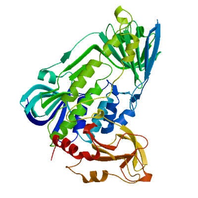
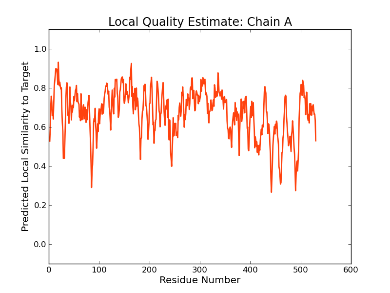
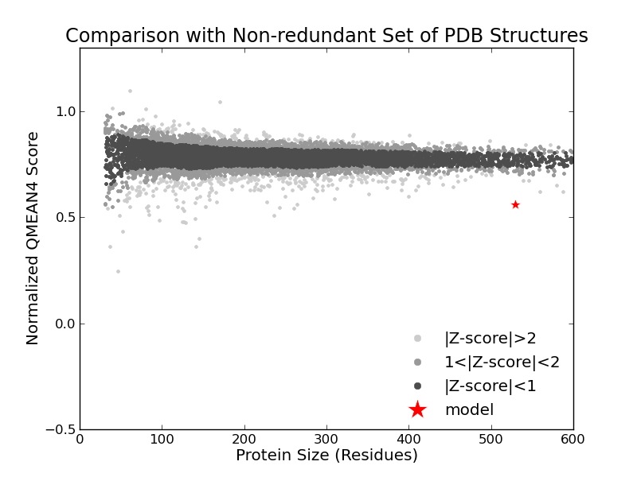

SWISS-MODEL Homology Modelling Report |
Model Building Report
This document lists the results for the homology modelling project "T451DRAFT_0807" submitted to SWISS-MODEL workspace on July 11, 2017, 7:28 p.m..The submitted primary amino acid sequence is given in Table T1.
If you use any results in your research, please cite the relevant publications:
Marco Biasini; Stefan Bienert; Andrew Waterhouse; Konstantin Arnold; Gabriel Studer; Tobias Schmidt; Florian Kiefer; Tiziano Gallo Cassarino; Martino Bertoni; Lorenza Bordoli; Torsten Schwede. (2014). SWISS-MODEL: modelling protein tertiary and quaternary structure using evolutionary information. Nucleic Acids Research (1 July 2014) 42 (W1): W252-W258; doi: 10.1093/nar/gku340.Arnold, K., Bordoli, L., Kopp, J. and Schwede, T. (2006) The SWISS-MODEL workspace: a web-based environment for protein structure homology modelling. Bioinformatics, 22, 195-201.
Benkert, P., Biasini, M. and Schwede, T. (2011) Toward the estimation of the absolute quality of individual protein structure models. Bioinformatics, 27, 343-350
Results
The SWISS-MODEL template library (SMTL version 2017-07-06, PDB release 2017-06-30) was searched with Blast (Altschul et al., 1997) and HHBlits (Remmert, et al., 2011) for evolutionary related structures matching the target sequence in Table T1. For details on the template search, see Materials and Methods. Overall 3874 templates were found (Table T2).
Models
The following model was built (see Materials and Methods "Model Building"):
Model #01 | File | Built with | Oligo-State | Ligands | GMQE | QMEAN |
|---|---|---|---|---|---|---|
|  | PDB | ProMod3 Version 1.0.2. | MONOMER (matching prediction) | None | 0.59 | -6.30 |
|  |  |
| Template | Seq Identity | Oligo-state | Found by | Method | Resolution | Seq Similarity | Range | Coverage | Description |
|---|---|---|---|---|---|---|---|---|---|
| 1pn0.1.A | 18.64 | homo-dimer | HHblits | X-ray | 1.70Å | 0.30 | 2 - 530 | 0.97 | Phenol 2-monooxygenase |
| Ligand | Added to Model | Description |
|---|---|---|
| CL | ✕ - Not biologically relevant. | CHLORIDE ION |
| CL | ✕ - Not biologically relevant. | CHLORIDE ION |
| FAD | ✕ - Binding site not conserved. | FLAVIN-ADENINE DINUCLEOTIDE |
| FAD | ✕ - Binding site not conserved. | FLAVIN-ADENINE DINUCLEOTIDE |
| IPH | ✕ - Binding site not conserved. | PHENOL |
| IPH | ✕ - Binding site not conserved. | PHENOL |
Target MKIDT-HIVKVLIVGAGPTGLTLAACLEKF-----GISPDIVDFKNCPNDQSKALAINPVAQAQLGIIFGKNNVGKNSNI
1pn0.1.A MTKYSESYCDVLIVGAGPAGLMAARVLSEYVRQKPDLKVRIIDKRSTKVYNGQADGLQCRTLESLKNLGLADKILSEAND
Target VTKLKVIFNTD-KRLTTID-LKH---LGWPCNSMLVQSQYDTEKDLIELAKNN-S--VNVRWETRVVEVIEHD-------
1pn0.1.A MSTIALYNPDENGHIRRTDRIPDTLPGISRYH-QVVLHQGRIERRILDSIAEISDTRIKVERPLIPEKMEIDSSKAEDPE
Target -DAVQVVFEG----------------------------------------PDNQTIKQQYDYVIGCEGKQSLVREAIGAT
1pn0.1.A AYPVTMTLRYMSEDESTPLQFGHKTENGLFRSNLQTQEEEDANYRLPEGKEAGEIETVHCKYVIGCDGGHSWVRRTLGFE
Target MTPLPYSMYLALADFKLDIDLSED--SAYYFVYEDTFFVFVPLGKSIWRIVVKHNG-----A-----PKRGEYINLVTDP
1pn0.1.A MIGEQTDYIWGVLDAVPASNFPDIRSRCAIHSAESGSIMIIPRENNLVRFYVQLQARAEKGGRVDRTKFTPEVVIAN---
Target VLEKFGR-NIFCGECLWFSQAPLYVSYANKLQS-KRLFIAGDSAHLFSPISGTGMNTGIVDAVNLAWKIAFTIKGNACGN
1pn0.1.A AKKIFHPYTFDVQQLDWFTAYHIGQRVTEKFSKDERVFIAGDACHTHSPKAGQGMNTSMMDTYNLGWKLGLVLTGR-AKR
Target TLIQSYQEERIPAIKENAMATDRLTKLISRQEEHT---DQFMPKMSNRAYIRNLFP---LNVSGFGFSYPSSPVLFGK--
1pn0.1.A DILKTYEEERQPFAQALIDFDHQFSRLFSGRPAKDVADEMG---V-SMDVFKEAFVKGNEFASGTAINYDENLVTDKKSS
Target ----TDDPSIGRMDSKLTKLLMSSSEFIPDFSLY-----INVLHFLDQDLNKTVLPCPKQ-TRLKGVRD-------VVVQ
1pn0.1.A KQELAKNCVVGTRFKSQPVVRHSEGLWMHFGDRLVTDGRFRIIVFA-GKATD-----ATQMSRIKKFAAYLDSENSVISR
Target WINN----DEVVDSSCMQVQQSPNI---------------INIALLKK------DWQELRQLG------DLQVLRPDGIV
1pn0.1.A YTPKGADRNSRIDVITIHSCHRDDIEMHDFPAPALHPKWQYDFIYADCDSWHHPHPKSYQAWGVDETKGAVVVVRPDGYT
Target VFRGSIKEHGEVVINLSEYLNLQ
1pn0.1.A SLVTDLEGTAEIDRYFSGILVE-
Materials and Methods
Template Search
Template search with Blast and HHBlits has been performed against the SWISS-MODEL template library (SMTL, last update: 2017-07-06, last included PDB release: 2017-06-30).
The target sequence was searched with BLAST (Altschul et al., 1997) against the primary amino acid sequence contained in the SMTL. A total of 50 templates were found.
An initial HHblits profile has been built using the procedure outlined in (Remmert, et al., 2011), followed by 1 iteration of HHblits against NR20. The obtained profile has then be searched against all profiles of the SMTL. A total of 3828 templates were found.
Template Selection
For each identified template, the template's quality has been predicted from features of the target-template alignment. The templates with the highest quality have then been selected for model building.
Model Building
Models are built based on the target-template alignment using ProMod3. Coordinates which are conserved between the target and the template are copied from the template to the model. Insertions and deletions are remodelled using a fragment library. Side chains are then rebuilt. Finally, the geometry of the resulting model is regularized by using a force field. In case loop modelling with ProMod3 fails, an alternative model is built with PROMOD-II (Guex, et al., 1997).
Model Quality Estimation
The global and per-residue model quality has been assessed using the QMEAN scoring function (Benkert, et al., 2011) . For improved performance, weights of the individual QMEAN terms have been trained specifically for SWISS-MODEL.
Ligand Modelling
Ligands present in the template structure are transferred by homology to the model when the following criteria are met (Gallo -Casserino, to be published): (a) The ligands are annotated as biologically relevant in the template library, (b) the ligand is in contact with the model, (c) the ligand is not clashing with the protein, (d) the residues in contact with the ligand are conserved between the target and the template. If any of these four criteria is not satisfied, a certain ligand will not be included in the model. The model summary includes information on why and which ligand has not been included.
Oligomeric State Conservation
Homo-oligomeric structure of the target protein is predicted based on the analysis of pairwise interfaces of the identified template structures. For each relevant interface between polypeptide chains (interfaces with more than 10 residue-residue interactions), the QscoreOligomer (Mariani et al., 2011) is predicted from features such as similarity to target and frequency of observing this interface in the identified templates (Kiefer, Bertoni, Biasini, to be published). The prediction is performed with a random forest regressor using these features as input parameters to predict the probability of conservation for each interface. The QscoreOligomer of the whole complex is then calculated as the weight-averaged QscoreOligomer of the interfaces. The oligomeric state of the target is predicted to be the same as in the template when QscoreOligomer is predicted to be higher or equal to 0.5.
References
Altschul, S.F., Madden, T.L., Schaffer, A.A., Zhang, J., Zhang, Z., Miller, W. and Lipman, D.J. (1997) Gapped BLAST and PSI-BLAST: a new generation of protein database search programs. Nucleic Acids Res, 25, 3389-3402.
Remmert, M., Biegert, A., Hauser, A. and Soding, J. (2012) HHblits: lightning-fast iterative protein sequence searching by HMM-HMM alignment. Nat Methods, 9, 173-175.
Guex, N. and Peitsch, M.C. (1997) SWISS-MODEL and the Swiss-PdbViewer: an environment for comparative protein modeling. Electrophoresis, 18, 2714-2723.
Sali, A. and Blundell, T.L. (1993) Comparative protein modelling by satisfaction of spatial restraints. J Mol Biol, 234, 779-815.
Benkert, P., Biasini, M. and Schwede, T. (2011) Toward the estimation of the absolute quality of individual protein structure models. Bioinformatics, 27, 343-350.
Mariani, V., Kiefer, F., Schmidt, T., Haas, J. and Schwede, T. (2011) Assessment of template based protein structure predictions in CASP9. Proteins, 79 Suppl 10, 37-58.
Table T1:
Primary amino acid sequence for which templates were searched and models were built.
NSMLVQSQYDTEKDLIELAKNNSVNVRWETRVVEVIEHDDAVQVVFEGPDNQTIKQQYDYVIGCEGKQSLVREAIGATMTPLPYSMYLALADFKLDIDLS
EDSAYYFVYEDTFFVFVPLGKSIWRIVVKHNGAPKRGEYINLVTDPVLEKFGRNIFCGECLWFSQAPLYVSYANKLQSKRLFIAGDSAHLFSPISGTGMN
TGIVDAVNLAWKIAFTIKGNACGNTLIQSYQEERIPAIKENAMATDRLTKLISRQEEHTDQFMPKMSNRAYIRNLFPLNVSGFGFSYPSSPVLFGKTDDP
SIGRMDSKLTKLLMSSSEFIPDFSLYINVLHFLDQDLNKTVLPCPKQTRLKGVRDVVVQWINNDEVVDSSCMQVQQSPNIINIALLKKDWQELRQLGDLQ
VLRPDGIVVFRGSIKEHGEVVINLSEYLNLQ
Table T2:
| Template | Seq Identity | Oligo-state | Found by | Method | Resolution | Seq Similarity | Coverage | Description |
|---|---|---|---|---|---|---|---|---|
| 1pn0.1.A | 18.64 | homo-dimer | HHblits | X-ray | 1.70Å | 0.30 | 0.97 | Phenol 2-monooxygenase |
| 1pn0.1.B | 18.64 | homo-dimer | HHblits | X-ray | 1.70Å | 0.30 | 0.97 | Phenol 2-monooxygenase |
| 1foh.1.A | 18.29 | homo-dimer | HHblits | X-ray | 2.40Å | 0.29 | 0.97 | PHENOL HYDROXYLASE |
| 1foh.1.B | 18.29 | homo-dimer | HHblits | X-ray | 2.40Å | 0.29 | 0.97 | PHENOL HYDROXYLASE |
| 2dki.1.A | 20.28 | homo-dimer | HHblits | X-ray | 2.50Å | 0.30 | 0.96 | 3-HYDROXYBENZOATE HYDROXYLASE |
| 4k5r.1.A | 23.63 | homo-dimer | HHblits | X-ray | 2.00Å | 0.31 | 0.89 | Oxygenase |
| 3fmw.1.A | 23.04 | homo-dimer | HHblits | X-ray | 2.89Å | 0.30 | 0.89 | Oxygenase |
| 4x4j.1.A | 22.41 | homo-dimer | HHblits | X-ray | 2.65Å | 0.30 | 0.87 | Putative oxygenase |
| 3ihg.1.A | 28.57 | monomer | BLAST | X-ray | 2.49Å | 0.35 | 0.73 | RdmE |
| 4k2x.1.A | 24.08 | homo-dimer | HHblits | X-ray | 2.55Å | 0.31 | 0.72 | Polyketide oxygenase/hydroxylase |
| 5kow.1.A | 22.37 | homo-dimer | HHblits | X-ray | 2.10Å | 0.31 | 0.72 | Pentachlorophenol 4-monooxygenase |
| 3ept.1.A | 22.14 | monomer | HHblits | X-ray | 2.97Å | 0.30 | 0.72 | RebC |
| 2r0c.1.A | 22.14 | monomer | HHblits | X-ray | 1.80Å | 0.30 | 0.72 | RebC |
| 4eip.1.A | 22.77 | monomer | HHblits | X-ray | 2.33Å | 0.30 | 0.72 | Putative FAD-monooxygenase |
| 4eip.2.A | 22.77 | monomer | HHblits | X-ray | 2.33Å | 0.30 | 0.72 | Putative FAD-monooxygenase |
| 4eiq.1.A | 22.77 | monomer | HHblits | X-ray | 2.76Å | 0.30 | 0.72 | Putative FAD-monooxygenase |
| 4eiq.2.A | 22.77 | monomer | HHblits | X-ray | 2.76Å | 0.30 | 0.72 | Putative FAD-monooxygenase |
| 2qa2.1.A | 25.00 | homo-dimer | HHblits | X-ray | 2.70Å | 0.31 | 0.70 | Polyketide oxygenase CabE |
| 3ihg.1.A | 23.12 | monomer | HHblits | X-ray | 2.49Å | 0.31 | 0.70 | RdmE |
| 4icy.1.A | 24.80 | homo-dimer | HHblits | X-ray | 2.40Å | 0.31 | 0.69 | Polyketide oxygenase PgaE |
| 2qa1.1.A | 24.80 | homo-dimer | HHblits | X-ray | 1.80Å | 0.31 | 0.69 | Polyketide oxygenase PgaE |
| 3e1t.1.A | 11.95 | monomer | HHblits | X-ray | 2.05Å | 0.27 | 0.73 | Halogenase |
| 1bf3.1.A | 20.05 | homo-dimer | HHblits | X-ray | 2.20Å | 0.30 | 0.69 | P-HYDROXYBENZOATE HYDROXYLASE |
| 1bgn.1.A | 20.16 | homo-dimer | HHblits | X-ray | 2.00Å | 0.30 | 0.69 | P-HYDROXYBENZOATE HYDROXYLASE |
| 1cj3.1.A | 20.16 | homo-dimer | HHblits | X-ray | 2.50Å | 0.30 | 0.69 | PROTEIN (P-HYDROXYBENZOATE HYDROXYLASE) |
| 1pbf.1.A | 20.16 | homo-dimer | HHblits | X-ray | 2.70Å | 0.30 | 0.69 | P-HYDROXYBENZOATE HYDROXYLASE |
| 1cc4.1.A | 20.16 | monomer | HHblits | X-ray | 2.00Å | 0.30 | 0.69 | PROTEIN (P-HYDROXYBENZOATE HYDROXYLASE) |
| 1pxc.1.A | 20.16 | homo-dimer | HHblits | X-ray | 2.10Å | 0.30 | 0.69 | P-HYDROXYBENZOATE HYDROXYLASE |
| 1bgj.1.A | 20.16 | homo-dimer | HHblits | X-ray | 3.00Å | 0.30 | 0.69 | P-HYDROXYBENZOATE HYDROXYLASE |
| 1dob.1.A | 20.16 | homo-dimer | HHblits | X-ray | 2.00Å | 0.30 | 0.69 | P-HYDROXYBENZOATE HYDROXYLASE |
| 1doe.1.A | 20.16 | homo-dimer | HHblits | X-ray | 2.30Å | 0.30 | 0.69 | P-HYDROXYBENZOATE HYDROXYLASE |
| 2phh.1.A | 20.16 | homo-dimer | HHblits | X-ray | 2.70Å | 0.30 | 0.69 | P-HYDROXYBENZOATE HYDROXYLASE |
| 1phh.1.A | 20.16 | homo-dimer | HHblits | X-ray | 2.30Å | 0.30 | 0.69 | P-HYDROXYBENZOATE HYDROXYLASE |
| 1pxa.1.A | 19.89 | homo-dimer | HHblits | X-ray | 2.30Å | 0.30 | 0.69 | P-HYDROXYBENZOATE HYDROXYLASE |
| 1ykj.1.A | 19.89 | homo-dimer | HHblits | X-ray | 2.00Å | 0.30 | 0.69 | P-hydroxybenzoate hydroxylase |
| 1ykj.1.B | 19.89 | homo-dimer | HHblits | X-ray | 2.00Å | 0.30 | 0.69 | P-hydroxybenzoate hydroxylase |
| 1k0i.1.A | 19.89 | homo-dimer | HHblits | X-ray | 1.80Å | 0.30 | 0.69 | P-HYDROXYBENZOATE HYDROXYLASE |
| 1bkw.1.A | 20.49 | monomer | HHblits | X-ray | 2.20Å | 0.30 | 0.69 | PROTEIN (P-HYDROXYBENZOATE HYDROXYLASE) |
| 1pxb.1.A | 19.89 | homo-dimer | HHblits | X-ray | 2.30Å | 0.30 | 0.69 | P-HYDROXYBENZOATE HYDROXYLASE |
| 1pbd.1.A | 19.89 | homo-dimer | HHblits | X-ray | 2.30Å | 0.30 | 0.69 | P-HYDROXYBENZOATE HYDROXYLASE |
| 1cj2.1.A | 20.22 | homo-dimer | HHblits | X-ray | 2.80Å | 0.30 | 0.69 | PROTEIN (P-HYDROXYBENZOATE HYDROXYLASE) |
| 1cc6.1.A | 19.62 | monomer | HHblits | X-ray | 2.20Å | 0.29 | 0.69 | PROTEIN (P-HYDROXYBENZOATE HYDROXYLASE) |
| 5tti.1.A | 18.70 | homo-dimer | HHblits | X-ray | 2.20Å | 0.29 | 0.69 | p-hydroxybenzoate hydroxylase |
| 4n9x.1.A | 18.16 | homo-hexamer | HHblits | X-ray | 2.50Å | 0.29 | 0.69 | Putative monooxygenase |
| 1cj4.1.A | 20.00 | homo-dimer | HHblits | X-ray | 2.40Å | 0.30 | 0.69 | PROTEIN (P-HYDROXYBENZOATE HYDROXYLASE) |
| 3nix.1.A | 13.55 | monomer | HHblits | X-ray | 2.60Å | 0.27 | 0.69 | Flavoprotein/dehydrogenase |
| 5dbj.1.A | 14.21 | homo-dimer | HHblits | X-ray | 2.75Å | 0.26 | 0.69 | FADH2-dependent halogenase PltA |
| 5tum.1.A | 17.70 | monomer | HHblits | X-ray | 3.30Å | 0.28 | 0.67 | tetracycline destructase Tet(56) |
| 5tum.2.A | 17.70 | monomer | HHblits | X-ray | 3.30Å | 0.28 | 0.67 | tetracycline destructase Tet(56) |
| 4eip.1.A | 29.34 | monomer | BLAST | X-ray | 2.33Å | 0.33 | 0.63 | Putative FAD-monooxygenase |
| 4eip.2.A | 29.34 | monomer | BLAST | X-ray | 2.33Å | 0.33 | 0.63 | Putative FAD-monooxygenase |
| 4eiq.1.A | 29.34 | monomer | BLAST | X-ray | 2.76Å | 0.33 | 0.63 | Putative FAD-monooxygenase |
| 4eiq.2.A | 29.34 | monomer | BLAST | X-ray | 2.76Å | 0.33 | 0.63 | Putative FAD-monooxygenase |
| 3ept.1.A | 28.74 | monomer | BLAST | X-ray | 2.97Å | 0.33 | 0.63 | RebC |
| 2r0c.1.A | 28.74 | monomer | BLAST | X-ray | 1.80Å | 0.33 | 0.63 | RebC |
| 5buk.1.A | 14.52 | monomer | HHblits | X-ray | 1.95Å | 0.26 | 0.69 | FADH2-dependent halogenase |
| 4k5r.1.A | 26.51 | homo-dimer | BLAST | X-ray | 2.00Å | 0.33 | 0.63 | Oxygenase |
| 4z2r.1.A | 23.10 | homo-tetramer | HHblits | X-ray | 2.30Å | 0.30 | 0.64 | 2-hydroxybiphenyl-3-monooxygenase |
| 4z2u.1.A | 23.10 | homo-tetramer | HHblits | X-ray | 2.50Å | 0.30 | 0.64 | 2-hydroxybiphenyl-3-monooxygenase |
| 4cy6.1.A | 23.10 | homo-tetramer | HHblits | X-ray | 2.76Å | 0.30 | 0.64 | 2-HYDROXYBIPHENYL-3-MONOOXYGENASE |
| 4cy8.1.A | 23.10 | homo-tetramer | HHblits | X-ray | 2.03Å | 0.30 | 0.64 | 2-HYDROXYBIPHENYL 3-MONOOXYGENASE |
| 4z2t.1.A | 23.10 | homo-tetramer | HHblits | X-ray | 2.45Å | 0.30 | 0.64 | 2-hydroxybiphenyl-3-monooxygenase |
| 5brt.1.A | 22.81 | homo-tetramer | HHblits | X-ray | 2.30Å | 0.30 | 0.64 | 2-hydroxybiphenyl-3-monooxygenase |
| 3fmw.1.A | 25.90 | homo-dimer | BLAST | X-ray | 2.89Å | 0.32 | 0.63 | Oxygenase |
| 5tti.1.A | 27.47 | homo-dimer | BLAST | X-ray | 2.20Å | 0.34 | 0.61 | p-hydroxybenzoate hydroxylase |
| 5tue.1.A | 16.19 | monomer | HHblits | X-ray | 2.10Å | 0.28 | 0.66 | Tetracycline destructase Tet(50) |
| 5tue.2.A | 16.19 | monomer | HHblits | X-ray | 2.10Å | 0.28 | 0.66 | Tetracycline destructase Tet(50) |
| 5tui.2.A | 16.19 | monomer | HHblits | X-ray | 1.75Å | 0.28 | 0.66 | Tetracycline destructase Tet(50) |
| 2x3n.1.A | 19.19 | monomer | HHblits | X-ray | 1.75Å | 0.29 | 0.65 | PROBABLE FAD-DEPENDENT MONOOXYGENASE |
| 5bul.1.A | 11.91 | monomer | HHblits | X-ray | 1.98Å | 0.25 | 0.68 | flavin-dependent halogenase triple mutant |
| 5bva.1.A | 11.91 | monomer | HHblits | X-ray | 1.87Å | 0.25 | 0.68 | flavin-dependent halogenase |
| 4k22.1.A | 19.24 | homo-tetramer | HHblits | X-ray | 2.00Å | 0.29 | 0.65 | Protein VisC |
| 2qa2.1.A | 30.94 | homo-dimer | BLAST | X-ray | 2.70Å | 0.35 | 0.60 | Polyketide oxygenase CabE |
| 4cy6.1.A | 26.85 | homo-tetramer | BLAST | X-ray | 2.76Å | 0.33 | 0.61 | 2-HYDROXYBIPHENYL-3-MONOOXYGENASE |
| 4cy8.1.A | 26.85 | homo-tetramer | BLAST | X-ray | 2.03Å | 0.33 | 0.61 | 2-HYDROXYBIPHENYL 3-MONOOXYGENASE |
| 4z2t.1.A | 28.53 | homo-tetramer | BLAST | X-ray | 2.45Å | 0.34 | 0.60 | 2-hydroxybiphenyl-3-monooxygenase |
| 5kow.1.A | 29.56 | homo-dimer | BLAST | X-ray | 2.10Å | 0.35 | 0.60 | Pentachlorophenol 4-monooxygenase |
| 5brt.1.A | 28.53 | homo-tetramer | BLAST | X-ray | 2.30Å | 0.34 | 0.60 | 2-hydroxybiphenyl-3-monooxygenase |
| 4z2r.1.A | 28.53 | homo-tetramer | BLAST | X-ray | 2.30Å | 0.34 | 0.60 | 2-hydroxybiphenyl-3-monooxygenase |
| 4z2u.1.A | 28.21 | homo-tetramer | BLAST | X-ray | 2.50Å | 0.34 | 0.60 | 2-hydroxybiphenyl-3-monooxygenase |
| 3i3l.1.A | 16.62 | monomer | HHblits | X-ray | 2.20Å | 0.29 | 0.63 | Alkylhalidase CmlS |
| 2y6r.1.A | 18.40 | monomer | HHblits | X-ray | 3.10Å | 0.29 | 0.63 | TETX2 PROTEIN |
| 4bk3.1.A | 17.54 | homo-dimer | HHblits | X-ray | 1.78Å | 0.28 | 0.64 | PROBABLE SALICYLATE MONOOXYGENASE |
| 4bk1.1.A | 17.84 | homo-dimer | HHblits | X-ray | 1.73Å | 0.28 | 0.64 | PROBABLE SALICYLATE MONOOXYGENASE |
| 3rp8.1.A | 15.98 | monomer | HHblits | X-ray | 1.97Å | 0.29 | 0.64 | flavoprotein monooxygenase |
| 2qa1.1.A | 29.30 | homo-dimer | BLAST | X-ray | 1.80Å | 0.34 | 0.59 | Polyketide oxygenase PgaE |
| 3rp6.1.A | 16.62 | monomer | HHblits | X-ray | 2.20Å | 0.29 | 0.63 | flavoprotein monooxygenase |
| 4bk2.1.A | 17.30 | homo-dimer | HHblits | X-ray | 2.47Å | 0.28 | 0.64 | PROBABLE SALICYLATE MONOOXYGENASE |
| 3c96.1.A | 19.23 | monomer | HHblits | X-ray | 1.90Å | 0.28 | 0.64 | Flavin-containing monooxygenase |
| 2dki.1.A | 31.27 | homo-dimer | BLAST | X-ray | 2.50Å | 0.36 | 0.58 | 3-HYDROXYBENZOATE HYDROXYLASE |
| 4k2x.1.A | 28.80 | homo-dimer | BLAST | X-ray | 2.55Å | 0.33 | 0.60 | Polyketide oxygenase/hydroxylase |
| 4icy.1.A | 30.32 | homo-dimer | BLAST | X-ray | 2.40Å | 0.35 | 0.58 | Polyketide oxygenase PgaE |
| 3v3n.1.A | 18.21 | monomer | HHblits | X-ray | 2.70Å | 0.29 | 0.63 | TetX2 protein |
| 4a6n.1.A | 17.86 | monomer | HHblits | X-ray | 2.30Å | 0.29 | 0.63 | TETX2 PROTEIN |
| 2rgj.1.A | 18.64 | monomer | HHblits | X-ray | 2.40Å | 0.28 | 0.64 | Flavin-containing monooxygenase |
| 4hb9.1.A | 18.51 | monomer | HHblits | X-ray | 1.93Å | 0.29 | 0.63 | Similarities with probable monooxygenase |
| 2xyo.1.A | 17.66 | monomer | HHblits | X-ray | 3.00Å | 0.29 | 0.63 | TETX2 |
| 3p9u.1.A | 18.26 | monomer | HHblits | X-ray | 2.81Å | 0.29 | 0.63 | TetX2 protein |
| 4bjy.1.A | 17.35 | homo-dimer | HHblits | X-ray | 1.52Å | 0.27 | 0.64 | PROBABLE SALICYLATE MONOOXYGENASE |
| 5tuk.1.A | 18.40 | monomer | HHblits | X-ray | 1.85Å | 0.28 | 0.63 | Tetracycline destructase Tet(51) |
| 5tuk.2.A | 18.40 | monomer | HHblits | X-ray | 1.85Å | 0.28 | 0.63 | Tetracycline destructase Tet(51) |
| 5tuk.3.A | 18.40 | monomer | HHblits | X-ray | 1.85Å | 0.28 | 0.63 | Tetracycline destructase Tet(51) |
| 5tuk.4.A | 18.40 | monomer | HHblits | X-ray | 1.85Å | 0.28 | 0.63 | Tetracycline destructase Tet(51) |
| 4j33.1.A | 15.38 | monomer | HHblits | X-ray | 1.82Å | 0.28 | 0.64 | Kynurenine 3-monooxygenase |
| 4j33.2.A | 15.38 | monomer | HHblits | X-ray | 1.82Å | 0.28 | 0.64 | Kynurenine 3-monooxygenase |
| 4j36.1.A | 15.38 | monomer | HHblits | X-ray | 2.13Å | 0.28 | 0.64 | Kynurenine 3-monooxygenase |
| 4j36.2.A | 15.38 | monomer | HHblits | X-ray | 2.13Å | 0.28 | 0.64 | Kynurenine 3-monooxygenase |
| 4a6n.4.A | 16.67 | monomer | HHblits | X-ray | 2.30Å | 0.28 | 0.63 | TETX2 PROTEIN |
| 2xdo.1.A | 16.67 | monomer | HHblits | X-ray | 2.09Å | 0.28 | 0.63 | TETX2 PROTEIN |
| 5tul.1.A | 15.68 | monomer | HHblits | X-ray | 2.00Å | 0.28 | 0.64 | Tetracycline destructase Tet(55) |
| 4j34.1.A | 15.48 | monomer | HHblits | X-ray | 2.03Å | 0.28 | 0.63 | Kynurenine 3-monooxygenase |
| 4j34.2.A | 15.48 | monomer | HHblits | X-ray | 2.03Å | 0.28 | 0.63 | Kynurenine 3-monooxygenase |
| 5evy.1.A | 14.71 | monomer | HHblits | X-ray | 2.47Å | 0.27 | 0.64 | Salicylate hydroxylase |
| 4j2w.2.A | 16.12 | monomer | HHblits | X-ray | 2.60Å | 0.28 | 0.63 | Kynurenine 3-monooxygenase |
| 4j2w.1.A | 16.12 | monomer | HHblits | X-ray | 2.60Å | 0.28 | 0.63 | Kynurenine 3-monooxygenase |
| 5eow.1.A | 17.21 | monomer | HHblits | X-ray | 2.10Å | 0.27 | 0.63 | 6-hydroxynicotinate 3-monooxygenase |
| 5mzk.2.A | 14.24 | monomer | HHblits | X-ray | 1.82Å | 0.27 | 0.63 | Kynurenine 3-monooxygenase |
| 5fn0.1.A | 14.24 | monomer | HHblits | X-ray | 3.19Å | 0.27 | 0.63 | KYNURENINE 3-MONOOXYGENASE |
| 5mzc.1.A | 14.24 | monomer | HHblits | X-ray | 1.82Å | 0.27 | 0.63 | Kynurenine 3-monooxygenase |
| 5nak.1.B | 14.24 | homo-dimer | HHblits | X-ray | 1.50Å | 0.27 | 0.63 | Kynurenine 3-monooxygenase |
| 5nah.1.A | 14.24 | monomer | HHblits | X-ray | 1.75Å | 0.27 | 0.63 | Kynurenine 3-monooxygenase |
| 4x4j.1.A | 29.74 | homo-dimer | BLAST | X-ray | 2.65Å | 0.34 | 0.58 | Putative oxygenase |
| 4opl.1.A | 14.88 | monomer | HHblits | X-ray | 2.51Å | 0.27 | 0.63 | Conserved Archaeal protein |
| 2gmh.1.A | 13.16 | monomer | HHblits | X-ray | 2.50Å | 0.26 | 0.64 | Electron transfer flavoprotein-ubiquinone oxidoreductase |
| 2vou.1.A | 16.01 | homo-dimer | HHblits | X-ray | 2.60Å | 0.28 | 0.62 | 2,6-DIHYDROXYPYRIDINE HYDROXYLASE |
| 4opd.2.A | 14.63 | monomer | HHblits | X-ray | 1.81Å | 0.27 | 0.63 | Conserved Archaeal protein |
| 3atq.1.A | 14.63 | monomer | HHblits | X-ray | 1.85Å | 0.27 | 0.63 | Conserved Archaeal protein |
| 3oz2.1.A | 15.57 | monomer | HHblits | X-ray | 1.60Å | 0.27 | 0.63 | Digeranylgeranylglycerophospholipid reductase |
| 4opg.1.A | 14.63 | monomer | HHblits | X-ray | 2.07Å | 0.27 | 0.63 | Conserved Archaeal protein |
| 4opi.1.A | 14.67 | monomer | HHblits | X-ray | 2.24Å | 0.27 | 0.63 | Conserved Archaeal protein |
| 4opu.1.A | 14.46 | monomer | HHblits | X-ray | 2.70Å | 0.27 | 0.63 | Conserved Archaeal protein |
| 4opt.1.A | 14.11 | monomer | HHblits | X-ray | 2.60Å | 0.27 | 0.63 | Conserved Archaeal protein |
| 3c4a.1.A | 11.71 | monomer | HHblits | X-ray | 2.30Å | 0.26 | 0.63 | Probable tryptophan hydroxylase vioD |
| 2pyx.1.A | 12.99 | monomer | HHblits | X-ray | 1.50Å | 0.26 | 0.62 | Tryptophan halogenase |
| 5hy5.1.A | 15.15 | homo-dimer | HHblits | X-ray | 2.68Å | 0.26 | 0.62 | Tryptophan 6-halogenase |
| 2oa1.1.A | 13.33 | homo-dimer | HHblits | X-ray | 2.15Å | 0.26 | 0.62 | Tryptophan halogenase |
| 2ar8.1.A | 12.77 | homo-dimer | HHblits | X-ray | 2.20Å | 0.26 | 0.62 | tryptophan halogenase PrnA |
| 4z43.1.A | 12.77 | homo-dimer | HHblits | X-ray | 2.29Å | 0.26 | 0.62 | Flavin-dependent tryptophan halogenase PrnA |
| 2jkc.1.A | 12.77 | monomer | HHblits | X-ray | 2.30Å | 0.26 | 0.62 | TRYPTOPHAN HALOGENASE PRNA |
| 4z44.1.A | 12.12 | homo-dimer | HHblits | X-ray | 2.20Å | 0.26 | 0.62 | Flavin-dependent tryptophan halogenase PrnA |
| 4lu6.1.A | 13.68 | homo-dimer | HHblits | X-ray | 3.05Å | 0.26 | 0.62 | Flavin-dependent tryptophan halogenase RebH |
| 5uao.1.A | 12.20 | homo-dimer | HHblits | X-ray | 1.88Å | 0.25 | 0.62 | Tryptophane-5-halogenase |
| 3alj.1.A | 11.35 | monomer | HHblits | X-ray | 1.48Å | 0.26 | 0.61 | 2-methyl-3-hydroxypyridine-5-carboxylic acid oxygenase |
| 3alm.1.A | 11.04 | monomer | HHblits | X-ray | 1.77Å | 0.26 | 0.61 | 2-methyl-3-hydroxypyridine-5-carboxylic acid oxygenase |
| 3all.1.A | 11.38 | monomer | HHblits | X-ray | 1.78Å | 0.26 | 0.61 | 2-methyl-3-hydroxypyridine-5-carboxylic acid oxygenase |
| 3all.2.A | 11.38 | monomer | HHblits | X-ray | 1.78Å | 0.26 | 0.61 | 2-methyl-3-hydroxypyridine-5-carboxylic acid oxygenase |
| 3gmc.1.A | 11.38 | monomer | HHblits | X-ray | 2.10Å | 0.26 | 0.61 | 2-methyl-3-hydroxypyridine-5-carboxylic acid oxygenase |
| 4h2r.1.A | 11.11 | homo-tetramer | HHblits | X-ray | 2.47Å | 0.26 | 0.61 | 2-methyl-3-hydroxypyridine-5-carboxylic acid oxygenase |
| 4h2r.1.D | 11.11 | homo-tetramer | HHblits | X-ray | 2.47Å | 0.26 | 0.61 | 2-methyl-3-hydroxypyridine-5-carboxylic acid oxygenase |
| 2wes.1.A | 12.62 | homo-dimer | HHblits | X-ray | 2.50Å | 0.25 | 0.61 | TRYPTOPHAN 5-HALOGENASE |
| 5lv9.1.A | 13.19 | monomer | HHblits | X-ray | 2.33Å | 0.25 | 0.61 | thermophilic tryptophan halogenase |
| 2wet.2.A | 12.65 | homo-dimer | HHblits | X-ray | 2.40Å | 0.25 | 0.61 | TRYPTOPHAN 5-HALOGENASE |
| 2wet.1.A | 12.65 | homo-dimer | HHblits | X-ray | 2.40Å | 0.25 | 0.61 | TRYPTOPHAN 5-HALOGENASE |
| 1cj3.1.A | 30.69 | homo-dimer | BLAST | X-ray | 2.50Å | 0.35 | 0.52 | PROTEIN (P-HYDROXYBENZOATE HYDROXYLASE) |
| 1cc4.1.A | 30.69 | monomer | BLAST | X-ray | 2.00Å | 0.35 | 0.52 | PROTEIN (P-HYDROXYBENZOATE HYDROXYLASE) |
| 1dob.1.A | 31.05 | homo-dimer | BLAST | X-ray | 2.00Å | 0.35 | 0.52 | P-HYDROXYBENZOATE HYDROXYLASE |
| 1bgj.1.A | 30.69 | homo-dimer | BLAST | X-ray | 3.00Å | 0.35 | 0.52 | P-HYDROXYBENZOATE HYDROXYLASE |
| 1pbd.1.A | 30.69 | homo-dimer | BLAST | X-ray | 2.30Å | 0.35 | 0.52 | P-HYDROXYBENZOATE HYDROXYLASE |
| 1bf3.1.A | 30.69 | homo-dimer | BLAST | X-ray | 2.20Å | 0.35 | 0.52 | P-HYDROXYBENZOATE HYDROXYLASE |
| 1bkw.1.A | 30.69 | monomer | BLAST | X-ray | 2.20Å | 0.35 | 0.52 | PROTEIN (P-HYDROXYBENZOATE HYDROXYLASE) |
| 1cj2.1.A | 30.69 | homo-dimer | BLAST | X-ray | 2.80Å | 0.35 | 0.52 | PROTEIN (P-HYDROXYBENZOATE HYDROXYLASE) |
| 1cj4.1.A | 30.69 | homo-dimer | BLAST | X-ray | 2.40Å | 0.35 | 0.52 | PROTEIN (P-HYDROXYBENZOATE HYDROXYLASE) |
| 1bgn.1.A | 30.69 | homo-dimer | BLAST | X-ray | 2.00Å | 0.35 | 0.52 | P-HYDROXYBENZOATE HYDROXYLASE |
| 1pxb.1.A | 30.69 | homo-dimer | BLAST | X-ray | 2.30Å | 0.35 | 0.52 | P-HYDROXYBENZOATE HYDROXYLASE |
| 1pxc.1.A | 30.69 | homo-dimer | BLAST | X-ray | 2.10Å | 0.35 | 0.52 | P-HYDROXYBENZOATE HYDROXYLASE |
| 1doe.1.A | 30.69 | homo-dimer | BLAST | X-ray | 2.30Å | 0.35 | 0.52 | P-HYDROXYBENZOATE HYDROXYLASE |
| 1k0i.1.A | 30.69 | homo-dimer | BLAST | X-ray | 1.80Å | 0.35 | 0.52 | P-HYDROXYBENZOATE HYDROXYLASE |
| 2phh.1.A | 30.69 | homo-dimer | BLAST | X-ray | 2.70Å | 0.35 | 0.52 | P-HYDROXYBENZOATE HYDROXYLASE |
| 1phh.1.A | 30.69 | homo-dimer | BLAST | X-ray | 2.30Å | 0.35 | 0.52 | P-HYDROXYBENZOATE HYDROXYLASE |
| 1ykj.1.A | 30.69 | homo-dimer | BLAST | X-ray | 2.00Å | 0.35 | 0.52 | P-hydroxybenzoate hydroxylase |
| 1ykj.1.B | 30.69 | homo-dimer | BLAST | X-ray | 2.00Å | 0.35 | 0.52 | P-hydroxybenzoate hydroxylase |
| 1pbf.1.A | 30.69 | homo-dimer | BLAST | X-ray | 2.70Å | 0.35 | 0.52 | P-HYDROXYBENZOATE HYDROXYLASE |
| 1cc6.1.A | 30.32 | monomer | BLAST | X-ray | 2.20Å | 0.35 | 0.52 | PROTEIN (P-HYDROXYBENZOATE HYDROXYLASE) |
| 1pxa.1.A | 30.32 | homo-dimer | BLAST | X-ray | 2.30Å | 0.35 | 0.52 | P-HYDROXYBENZOATE HYDROXYLASE |
| 4k22.1.A | 25.36 | homo-tetramer | BLAST | X-ray | 2.00Å | 0.34 | 0.53 | Protein VisC |
| 5l46.1.A | 11.50 | monomer | HHblits | X-ray | 3.09Å | 0.25 | 0.59 | Dimethylglycine dehydrogenase, mitochondrial |
| 3ihm.1.A | 12.22 | homo-dimer | HHblits | X-ray | 2.30Å | 0.25 | 0.59 | Styrene monooxygenase A |
| 2bry.1.A | 16.50 | monomer | HHblits | X-ray | 1.45Å | 0.28 | 0.56 | NEDD9 INTERACTING PROTEIN WITH CALPONIN HOMOLOGY AND LIM DOMAINS |
| 2c4c.2.A | 16.50 | monomer | HHblits | X-ray | 2.90Å | 0.28 | 0.56 | NEDD9-INTERACTING PROTEIN WITH CALPONIN HOMOLOGY AND LIM DOMAINS |
| 2c4c.1.A | 16.50 | monomer | HHblits | X-ray | 2.90Å | 0.28 | 0.56 | NEDD9-INTERACTING PROTEIN WITH CALPONIN HOMOLOGY AND LIM DOMAINS |
| 2bra.1.A | 17.01 | monomer | HHblits | X-ray | 2.00Å | 0.28 | 0.55 | NEDD9 INTERACTING PROTEIN WITH CALPONIN HOMOLOGY AND LIM DOMAINS |
| 2bra.2.A | 17.01 | monomer | HHblits | X-ray | 2.00Å | 0.28 | 0.55 | NEDD9 INTERACTING PROTEIN WITH CALPONIN HOMOLOGY AND LIM DOMAINS |
| 4txi.1.A | 17.81 | monomer | HHblits | X-ray | 2.31Å | 0.29 | 0.55 | Protein-methionine sulfoxide oxidase MICAL1 |
| 4txk.1.A | 17.81 | monomer | HHblits | X-ray | 2.88Å | 0.29 | 0.55 | Protein-methionine sulfoxide oxidase MICAL1 |
| 4n9x.1.A | 26.77 | homo-hexamer | BLAST | X-ray | 2.50Å | 0.35 | 0.51 | Putative monooxygenase |
| 3kkj.1.A | 13.29 | homo-dimer | HHblits | X-ray | 2.50Å | 0.26 | 0.54 | Amine oxidase, flavin-containing |
| 4zcc.1.B | 12.28 | homo-dimer | HHblits | X-ray | 2.00Å | 0.26 | 0.54 | Renalase |
| 4zcc.1.A | 12.28 | homo-dimer | HHblits | X-ray | 2.00Å | 0.26 | 0.54 | Renalase |
| 4zcd.1.B | 12.28 | homo-dimer | HHblits | X-ray | 1.66Å | 0.26 | 0.54 | Renalase |
| 1pn0.1.A | 27.59 | homo-dimer | BLAST | X-ray | 1.70Å | 0.35 | 0.38 | Phenol 2-monooxygenase |
| 1pn0.1.B | 27.59 | homo-dimer | BLAST | X-ray | 1.70Å | 0.35 | 0.38 | Phenol 2-monooxygenase |
| 1foh.1.A | 27.36 | homo-dimer | BLAST | X-ray | 2.40Å | 0.35 | 0.38 | PHENOL HYDROXYLASE |
| 1foh.1.B | 27.36 | homo-dimer | BLAST | X-ray | 2.40Å | 0.35 | 0.38 | PHENOL HYDROXYLASE |
| 4pab.1.A | 11.06 | monomer | HHblits | X-ray | 1.85Å | 0.25 | 0.41 | Dimethylglycine dehydrogenase |
| 4p9s.1.A | 10.60 | monomer | HHblits | X-ray | 2.32Å | 0.24 | 0.41 | Dimethylglycine dehydrogenase |
| 2gah.1.B | 13.21 | hetero-oligomer | HHblits | X-ray | 2.00Å | 0.26 | 0.40 | heterotetrameric sarcosine oxidase beta-subunit |
| 3ada.1.B | 12.26 | hetero-oligomer | HHblits | X-ray | 2.20Å | 0.25 | 0.40 | SARCOSINE OXIDASE BETA SUBUNIT |
| 1x31.1.B | 12.26 | hetero-oligomer | HHblits | X-ray | 2.15Å | 0.25 | 0.40 | Sarcosine oxidase beta subunit |
| 3ad9.1.B | 12.26 | hetero-oligomer | HHblits | X-ray | 2.30Å | 0.25 | 0.40 | SARCOSINE OXIDASE BETA SUBUNIT |
| 3if9.1.A | 13.94 | homo-tetramer | HHblits | X-ray | 2.60Å | 0.26 | 0.39 | Glycine oxidase |
| 1ng3.1.A | 12.98 | homo-tetramer | HHblits | X-ray | 2.60Å | 0.26 | 0.39 | Glycine oxidase |
| 1ryi.1.A | 12.50 | homo-tetramer | HHblits | X-ray | 1.80Å | 0.25 | 0.39 | GLYCINE OXIDASE |
| 4ysh.1.A | 10.00 | homo-tetramer | HHblits | X-ray | 2.20Å | 0.24 | 0.40 | Glycine oxidase |
| 4ysh.1.B | 10.00 | homo-tetramer | HHblits | X-ray | 2.20Å | 0.24 | 0.40 | Glycine oxidase |
| 5i39.1.A | 13.30 | monomer | HHblits | X-ray | 1.20Å | 0.25 | 0.38 | L-amino acid deaminase |
| 4x9m.1.A | 10.71 | monomer | HHblits | X-ray | 2.40Å | 0.25 | 0.37 | L-alpha-glycerophosphate oxidase |
| 3vqr.1.A | 11.92 | homo-dimer | HHblits | X-ray | 2.01Å | 0.25 | 0.36 | Putative oxidoreductase |
| 3sm8.1.A | 12.11 | monomer | HHblits | X-ray | 1.07Å | 0.25 | 0.36 | FAD-dependent catabolic D-arginine dehydrogenase, DauA |
| 1m64.1.A | 16.96 | monomer | HHblits | X-ray | 1.80Å | 0.28 | 0.32 | flavocytochrome c3 |
| 1qo8.1.A | 20.00 | homo-dimer | HHblits | X-ray | 2.15Å | 0.29 | 0.32 | FLAVOCYTOCHROME C3 FUMARATE REDUCTASE |
| 2b7s.1.A | 17.06 | monomer | HHblits | X-ray | 2.12Å | 0.29 | 0.32 | Fumarate reductase flavoprotein subunit |
| 1y0p.1.A | 17.06 | monomer | HHblits | X-ray | 1.50Å | 0.28 | 0.32 | Fumarate reductase flavoprotein subunit |
| 1q9i.1.A | 17.06 | monomer | HHblits | X-ray | 1.60Å | 0.28 | 0.32 | flavocytochrome c3 |
| 1p2e.1.A | 17.06 | monomer | HHblits | X-ray | 2.20Å | 0.28 | 0.32 | flavocytochrome c3 |
| 1jrz.1.A | 17.06 | monomer | HHblits | X-ray | 2.00Å | 0.28 | 0.32 | FLAVOCYTOCHROME C |
| 1e39.1.A | 17.06 | monomer | HHblits | X-ray | 1.80Å | 0.28 | 0.32 | FUMARATE REDUCTASE FLAVOPROTEIN SUBUNIT |
| 1jry.1.A | 17.16 | monomer | HHblits | X-ray | 2.00Å | 0.28 | 0.32 | FLAVOCYTOCHROME C |
| 1d4c.2.A | 14.20 | monomer | HHblits | X-ray | 2.90Å | 0.28 | 0.32 | FLAVOCYTOCHROME C FUMARATE REDUCTASE |
| 1d4c.1.A | 14.20 | monomer | HHblits | X-ray | 2.90Å | 0.28 | 0.32 | FLAVOCYTOCHROME C FUMARATE REDUCTASE |
| 1l9c.1.A | 17.96 | monomer | HHblits | X-ray | 1.90Å | 0.28 | 0.31 | Monomeric Sarcosine Oxidase |
| 3m13.1.A | 17.96 | monomer | HHblits | X-ray | 2.10Å | 0.28 | 0.31 | Monomeric sarcosine oxidase |
| 2gv8.1.A | 19.51 | homo-dimer | HHblits | X-ray | 2.10Å | 0.29 | 0.31 | monooxygenase |
| 3m0o.1.A | 17.47 | monomer | HHblits | X-ray | 1.60Å | 0.28 | 0.31 | Monomeric sarcosine oxidase |
| 3c4n.1.A | 16.87 | homo-dimer | HHblits | X-ray | 2.40Å | 0.28 | 0.31 | Uncharacterized protein DR_0571 |
| 3v76.1.A | 17.07 | homo-dimer | HHblits | X-ray | 2.51Å | 0.28 | 0.31 | Flavoprotein |
| 1vqw.1.A | 19.14 | homo-dimer | HHblits | X-ray | 2.40Å | 0.29 | 0.31 | PROTEIN WITH SIMILARITY TO FLAVIN-CONTAINING MONOOXYGENASES AND TO MAMMALIAN DIMETHYLALANINE MONOOXYGENASES |
| 2i0z.1.A | 18.63 | monomer | HHblits | X-ray | 1.84Å | 0.29 | 0.30 | NAD(FAD)-utilizing dehydrogenases |
| 3p4s.1.A | 11.90 | hetero-oligomer | HHblits | X-ray | 3.10Å | 0.25 | 0.32 | Fumarate reductase flavoprotein subunit |
| 3p4s.2.A | 11.90 | hetero-oligomer | HHblits | X-ray | 3.10Å | 0.25 | 0.32 | Fumarate reductase flavoprotein subunit |
| 3p4q.2.A | 11.90 | hetero-oligomer | HHblits | X-ray | 3.35Å | 0.25 | 0.32 | Fumarate reductase flavoprotein subunit |
| 3p4r.2.A | 11.90 | hetero-oligomer | HHblits | X-ray | 3.05Å | 0.25 | 0.32 | Fumarate reductase flavoprotein subunit |
| 5vpn.1.A | 11.98 | hetero-oligomer | HHblits | X-ray | 4.22Å | 0.26 | 0.31 | Fumarate reductase flavoprotein subunit |
| 5kxj.1.A | 18.29 | monomer | HHblits | X-ray | 1.87Å | 0.27 | 0.31 | L-aspartate oxidase |
| 3cir.1.A | 11.98 | hetero-oligomer | HHblits | X-ray | 3.65Å | 0.26 | 0.31 | Fumarate reductase flavoprotein subunit |
| 3cir.2.A | 11.98 | hetero-oligomer | HHblits | X-ray | 3.65Å | 0.26 | 0.31 | Fumarate reductase flavoprotein subunit |
| 1p2h.1.A | 16.05 | monomer | HHblits | X-ray | 2.10Å | 0.28 | 0.31 | flavocytochrome c3 |
| 2b7r.1.A | 16.05 | monomer | HHblits | X-ray | 1.70Å | 0.28 | 0.31 | Fumarate reductase flavoprotein subunit |
| 1jrx.1.A | 16.05 | monomer | HHblits | X-ray | 2.00Å | 0.28 | 0.31 | FLAVOCYTOCHROME C |
| 1ksu.1.A | 16.05 | monomer | HHblits | X-ray | 2.00Å | 0.28 | 0.31 | flavocytochrome c |
| 2wdq.1.A | 9.04 | hetero-oligomer | HHblits | X-ray | 2.40Å | 0.26 | 0.31 | SUCCINATE DEHYDROGENASE FLAVOPROTEIN SUBUNIT |
| 2acz.1.A | 9.04 | hetero-oligomer | HHblits | X-ray | 3.10Å | 0.26 | 0.31 | Succinate dehydrogenase flavoprotein subunit |
| 2b76.1.A | 11.38 | hetero-oligomer | HHblits | X-ray | 3.30Å | 0.25 | 0.31 | Fumarate reductase flavoprotein subunit |
| 2b76.2.A | 11.38 | hetero-oligomer | HHblits | X-ray | 3.30Å | 0.25 | 0.31 | Fumarate reductase flavoprotein subunit |
| 1d4d.1.A | 15.63 | monomer | HHblits | X-ray | 2.50Å | 0.28 | 0.30 | FLAVOCYTOCHROME C FUMARATE REDUCTASE |
| 1kss.1.A | 15.63 | monomer | HHblits | X-ray | 1.80Å | 0.28 | 0.30 | flavocytochrome c |
| 3nlc.1.A | 14.81 | monomer | HHblits | X-ray | 2.15Å | 0.27 | 0.31 | Uncharacterized protein VP0956 |
| 4cnj.1.A | 13.50 | monomer | HHblits | X-ray | 2.70Å | 0.26 | 0.31 | L-AMINO ACID OXIDASE |
| 4cnj.4.A | 13.50 | monomer | HHblits | X-ray | 2.70Å | 0.26 | 0.31 | L-AMINO ACID OXIDASE |
| 1lj1.1.A | 15.00 | monomer | HHblits | X-ray | 2.00Å | 0.28 | 0.30 | flavocytochrome c3 |
| 1jnz.1.A | 15.09 | hetero-oligomer | HHblits | X-ray | 2.50Å | 0.27 | 0.30 | adenylylsulfate reductase |
| 1l0v.1.A | 11.04 | hetero-oligomer | HHblits | X-ray | 3.30Å | 0.25 | 0.31 | Fumarate reductase flavoprotein subunit |
| 1l0v.2.A | 11.04 | hetero-oligomer | HHblits | X-ray | 3.30Å | 0.25 | 0.31 | Fumarate reductase flavoprotein subunit |
| 3cp2.1.A | 13.84 | homo-dimer | HHblits | X-ray | 2.90Å | 0.26 | 0.30 | tRNA uridine 5-carboxymethylaminomethyl modification enzyme gidA |
| 2fja.1.A | 15.29 | hetero-oligomer | HHblits | X-ray | 2.00Å | 0.27 | 0.30 | adenylylsulfate reductase, subunit A |
| 3ces.1.A | 13.21 | homo-dimer | HHblits | X-ray | 2.41Å | 0.26 | 0.30 | tRNA uridine 5-carboxymethylaminomethyl modification enzyme gidA |
| 2e1m.1.A | 16.56 | hetero-oligomer | HHblits | X-ray | 2.80Å | 0.26 | 0.30 | L-glutamate oxidase |
| 3s61.1.A | 13.64 | monomer | HHblits | X-ray | 3.03Å | 0.28 | 0.29 | L-ornithine 5-monooxygenase |
| 2zxi.1.A | 13.64 | homo-dimer | HHblits | X-ray | 2.30Å | 0.28 | 0.29 | tRNA uridine 5-carboxymethylaminomethyl modification enzyme mnmG |
| 2zxh.1.A | 13.64 | homo-dimer | HHblits | X-ray | 3.20Å | 0.28 | 0.29 | tRNA uridine 5-carboxymethylaminomethyl modification enzyme mnmG |
| 2xlr.1.A | 14.74 | homo-dimer | HHblits | X-ray | 2.55Å | 0.26 | 0.29 | FLAVIN-CONTAINING MONOOXYGENASE |
| 4nzh.1.A | 16.88 | homo-tetramer | HHblits | X-ray | 2.00Å | 0.27 | 0.29 | L-ornithine N5 monooxygenase |
| 2xlp.1.A | 15.58 | homo-dimer | HHblits | X-ray | 2.80Å | 0.27 | 0.29 | FLAVIN-CONTAINING MONOOXYGENASE |
| 2xlt.1.A | 15.13 | homo-dimer | HHblits | X-ray | 2.20Å | 0.27 | 0.29 | FLAVIN-CONTAINING MONOOXYGENASE |
| 3cp8.1.A | 12.42 | homo-dimer | HHblits | X-ray | 3.20Å | 0.27 | 0.29 | tRNA uridine 5-carboxymethylaminomethyl modification enzyme gidA |
| 3cp8.2.A | 12.42 | homo-dimer | HHblits | X-ray | 3.20Å | 0.27 | 0.29 | tRNA uridine 5-carboxymethylaminomethyl modification enzyme gidA |
| 4tlz.1.A | 12.50 | homo-tetramer | HHblits | X-ray | 2.41Å | 0.27 | 0.29 | KtzI |
| 3qj4.1.A | 16.67 | monomer | HHblits | X-ray | 2.50Å | 0.28 | 0.28 | Renalase |
| 3qj4.2.A | 16.67 | monomer | HHblits | X-ray | 2.50Å | 0.28 | 0.28 | Renalase |
| 3g05.1.A | 13.73 | homo-dimer | HHblits | X-ray | 3.49Å | 0.26 | 0.29 | tRNA uridine 5-carboxymethylaminomethyl modification enzyme mnmG |
| 5u8u.1.A | 16.89 | homo-dimer | HHblits | X-ray | 1.35Å | 0.28 | 0.28 | Dihydrolipoyl dehydrogenase |
| 2xls.1.A | 14.67 | homo-dimer | HHblits | X-ray | 3.00Å | 0.27 | 0.28 | FLAVIN-CONTAINING MONOOXYGENASE |
| 5ipy.1.A | 15.79 | homo-dimer | HHblits | X-ray | 1.50Å | 0.26 | 0.29 | Flavin-containing monooxygenase |
| 5cku.1.A | 17.45 | homo-tetramer | HHblits | X-ray | 2.10Å | 0.28 | 0.28 | L-ornithine N(5)-monooxygenase |
| 5gsn.1.A | 15.89 | homo-dimer | HHblits | X-ray | 2.20Å | 0.26 | 0.28 | Flavin-containing monooxygenase |
| 4b63.1.A | 17.57 | homo-tetramer | HHblits | X-ray | 1.90Å | 0.28 | 0.28 | L-ORNITHINE N5 MONOOXYGENASE |
| 1c0i.1.A | 13.91 | homo-dimer | HHblits | X-ray | 1.90Å | 0.26 | 0.28 | D-AMINO ACID OXIDASE |
| 4y4n.1.A | 19.44 | homo-octamer | HHblits | X-ray | 2.10Å | 0.29 | 0.27 | Putative ribose 1,5-bisphosphate isomerase |
| 2xve.1.A | 14.86 | homo-dimer | HHblits | X-ray | 1.99Å | 0.27 | 0.28 | FLAVIN-CONTAINING MONOOXYGENASE |
| 2xvh.1.B | 14.86 | homo-dimer | HHblits | X-ray | 2.54Å | 0.27 | 0.28 | FLAVIN-CONTAINING MONOOXYGENASE |
| 2xvj.1.A | 14.19 | homo-dimer | HHblits | X-ray | 2.48Å | 0.27 | 0.28 | FLAVIN-CONTAINING MONOOXYGENASE |
| 2gqf.1.A | 14.86 | monomer | HHblits | X-ray | 2.70Å | 0.27 | 0.28 | Hypothetical protein HI0933 |
| 3g3e.1.A | 14.97 | homo-dimer | HHblits | X-ray | 2.20Å | 0.27 | 0.28 | D-amino-acid oxidase |
| 5iq4.1.A | 14.77 | homo-dimer | HHblits | X-ray | 1.50Å | 0.26 | 0.28 | Flavin-containing monooxygenase |
| 5cqf.1.A | 14.38 | homo-tetramer | HHblits | X-ray | 2.28Å | 0.27 | 0.27 | L-lysine 6-monooxygenase |
| 1an9.1.A | 15.07 | homo-dimer | HHblits | X-ray | 2.50Å | 0.27 | 0.27 | D-AMINO ACID OXIDASE |
| 4y4m.1.A | 19.86 | homo-octamer | HHblits | X-ray | 2.71Å | 0.29 | 0.27 | Putative ribose 1,5-bisphosphate isomerase |
| 3d1c.1.A | 19.29 | homo-dimer | HHblits | X-ray | 2.40Å | 0.29 | 0.26 | Flavin-containing Putative Monooxygenase |
| 2ylx.1.A | 17.73 | monomer | HHblits | X-ray | 2.20Å | 0.28 | 0.27 | PHENYLACETONE MONOOXYGENASE |
| 5cku.1.A | 8.90 | homo-tetramer | HHblits | X-ray | 2.10Å | 0.25 | 0.27 | L-ornithine N(5)-monooxygenase |
| 4b63.1.A | 8.97 | homo-tetramer | HHblits | X-ray | 1.90Å | 0.25 | 0.27 | L-ORNITHINE N5 MONOOXYGENASE |
| 1rp0.1.A | 16.43 | homo-octamer | HHblits | X-ray | 1.60Å | 0.28 | 0.26 | Thiazole biosynthetic enzyme |
| 2ylr.1.A | 18.12 | monomer | HHblits | X-ray | 2.26Å | 0.29 | 0.26 | PHENYLACETONE MONOOXYGENASE |
| 1w4x.1.A | 18.12 | monomer | HHblits | X-ray | 1.70Å | 0.29 | 0.26 | PHENYLACETONE MONOOXYGENASE |
| 4nzh.1.A | 8.39 | homo-tetramer | HHblits | X-ray | 2.00Å | 0.26 | 0.27 | L-ornithine N5 monooxygenase |
| 4d03.1.A | 17.27 | monomer | HHblits | X-ray | 1.81Å | 0.28 | 0.26 | PHENYLACETONE MONOOXYGENASE |
| 3gwf.1.A | 16.67 | monomer | HHblits | X-ray | 2.20Å | 0.28 | 0.26 | Cyclohexanone monooxygenase |
| 3gwd.1.A | 16.67 | monomer | HHblits | X-ray | 2.30Å | 0.28 | 0.26 | Cyclohexanone monooxygenase |
| 2ylz.1.A | 17.39 | homo-dimer | HHblits | X-ray | 2.00Å | 0.28 | 0.26 | PHENYLACETONE MONOOXYGENASE |
| 3ucl.1.A | 16.06 | monomer | HHblits | X-ray | 2.36Å | 0.28 | 0.26 | Cyclohexanone monooxygenase |
| 4tlz.1.A | 8.97 | homo-tetramer | HHblits | X-ray | 2.41Å | 0.24 | 0.27 | KtzI |
| 4aos.1.A | 15.22 | monomer | HHblits | X-ray | 2.50Å | 0.27 | 0.26 | STEROID MONOOXYGENASE |
| 2ym2.1.A | 17.52 | monomer | HHblits | X-ray | 2.70Å | 0.28 | 0.26 | PHENYLACETONE MONOOXYGENASE |
| 3uov.1.A | 14.39 | homo-dimer | HHblits | X-ray | 2.05Å | 0.27 | 0.26 | OTEMO |
| 3uoz.1.A | 14.39 | monomer | HHblits | X-ray | 2.41Å | 0.27 | 0.26 | OTEMO |
| 3up4.1.A | 14.39 | monomer | HHblits | X-ray | 2.80Å | 0.27 | 0.26 | OTEMO |
| 3jsk.1.A | 15.22 | homo-octamer | HHblits | X-ray | 2.70Å | 0.27 | 0.26 | CyPBP37 protein |
| 5j7x.1.A | 18.38 | monomer | HHblits | X-ray | 1.90Å | 0.28 | 0.26 | Dimethylaniline monooxygenase, putative |
| 4rg3.1.A | 16.30 | monomer | HHblits | X-ray | 1.94Å | 0.28 | 0.25 | Cyclohexanone monooxygenase |
| 3s61.1.A | 12.23 | monomer | HHblits | X-ray | 3.03Å | 0.26 | 0.26 | L-ornithine 5-monooxygenase |
| 5m0z.1.A | 13.14 | monomer | HHblits | X-ray | 1.60Å | 0.27 | 0.26 | Cyclohexanone Monooxygenase from Thermocrispum municipale. |
| 5mq6.1.A | 17.39 | monomer | HHblits | X-ray | 2.00Å | 0.26 | 0.26 | Pyridine nucleotide-disulfide oxidoreductase-like protein |
| 2cul.1.A | 12.95 | monomer | HHblits | X-ray | 1.65Å | 0.25 | 0.26 | Glucose-inhibited division protein A-related protein, probable oxidoreductase |
| 4ap1.1.A | 15.56 | monomer | HHblits | X-ray | 2.95Å | 0.27 | 0.25 | STEROID MONOOXYGENASE |
| 5cqf.1.A | 13.77 | homo-tetramer | HHblits | X-ray | 2.28Å | 0.25 | 0.26 | L-lysine 6-monooxygenase |
| 4ap3.1.A | 15.67 | monomer | HHblits | X-ray | 2.39Å | 0.27 | 0.25 | STEROID MONOOXYGENASE |
| 4usr.1.A | 19.08 | monomer | HHblits | X-ray | 1.83Å | 0.29 | 0.25 | MONOOXYGENASE |
| 4fdc.1.A | 18.94 | monomer | HHblits | X-ray | 2.40Å | 0.28 | 0.25 | Apoptosis-inducing factor 1, mitochondrial |
| 4usq.1.A | 19.08 | homo-tetramer | HHblits | X-ray | 2.39Å | 0.28 | 0.25 | PYRIDINE NUCLEOTIDE-DISULFIDE OXIDOREDUCTASE |
| 4a9w.1.A | 19.53 | homo-dimer | HHblits | X-ray | 2.72Å | 0.30 | 0.24 | MONOOXYGENASE |
| 4c5o.1.A | 19.53 | homo-dimer | HHblits | X-ray | 2.60Å | 0.30 | 0.24 | FLAVIN MONOOXYGENASE |
| 2zbw.1.A | 23.44 | homo-dimer | HHblits | X-ray | 2.10Å | 0.29 | 0.24 | Thioredoxin reductase |
| 2zbw.1.B | 23.44 | homo-dimer | HHblits | X-ray | 2.10Å | 0.29 | 0.24 | Thioredoxin reductase |
| 4d7e.1.A | 13.64 | homo-dimer | HHblits | X-ray | 2.40Å | 0.27 | 0.25 | L-LYS MONOOXYGENASE |
| 4d7e.1.B | 13.64 | homo-dimer | HHblits | X-ray | 2.40Å | 0.27 | 0.25 | L-LYS MONOOXYGENASE |
| 4d7e.2.A | 13.64 | homo-dimer | HHblits | X-ray | 2.40Å | 0.27 | 0.25 | L-LYS MONOOXYGENASE |
| 4d7e.2.B | 13.64 | homo-dimer | HHblits | X-ray | 2.40Å | 0.27 | 0.25 | L-LYS MONOOXYGENASE |
| 2a87.1.A | 19.33 | homo-dimer | HHblits | X-ray | 3.00Å | 0.30 | 0.22 | Thioredoxin reductase |
| 2a87.1.B | 19.33 | homo-dimer | HHblits | X-ray | 3.00Å | 0.30 | 0.22 | Thioredoxin reductase |
| 3lzw.1.A | 17.89 | homo-dimer | HHblits | X-ray | 1.80Å | 0.27 | 0.23 | Ferredoxin--NADP reductase 2 |
| 3lzx.1.A | 17.89 | homo-dimer | HHblits | X-ray | 1.90Å | 0.27 | 0.23 | Ferredoxin--NADP reductase 2 |
| 3ab1.1.A | 16.39 | homo-dimer | HHblits | X-ray | 2.39Å | 0.27 | 0.23 | Ferredoxin--NADP reductase |
| 3ab1.1.B | 16.39 | homo-dimer | HHblits | X-ray | 2.39Å | 0.27 | 0.23 | Ferredoxin--NADP reductase |
| 5jcl.1.A | 14.75 | monomer | HHblits | X-ray | 1.80Å | 0.27 | 0.23 | Os09g0567300 protein |
| 3iwa.1.A | 18.49 | homo-dimer | HHblits | X-ray | 2.30Å | 0.29 | 0.22 | FAD-dependent pyridine nucleotide-disulphide oxidoreductase |
| 3d8x.1.A | 16.53 | homo-dimer | HHblits | X-ray | 2.80Å | 0.27 | 0.23 | Thioredoxin reductase 1 |
| 1y56.1.A | 15.25 | hetero-oligomer | HHblits | X-ray | 2.86Å | 0.29 | 0.22 | hypothetical protein PH1363 |
| 5jci.1.A | 15.70 | monomer | HHblits | X-ray | 1.70Å | 0.27 | 0.23 | Os09g0567300 protein |
| 5jcm.1.A | 14.88 | monomer | HHblits | X-ray | 1.90Å | 0.27 | 0.23 | Os09g0567300 protein |
| 5mh4.1.A | 15.52 | homo-dimer | HHblits | X-ray | 2.14Å | 0.29 | 0.22 | Thioredoxin reductase |
| 5mjk.1.A | 15.52 | homo-dimer | HHblits | X-ray | 2.00Å | 0.29 | 0.22 | Thioredoxin reductase |
| 2ywl.1.A | 18.97 | homo-dimer | HHblits | X-ray | 1.60Å | 0.29 | 0.22 | Thioredoxin reductase related protein |
| 2ywl.1.B | 18.97 | homo-dimer | HHblits | X-ray | 1.60Å | 0.29 | 0.22 | Thioredoxin reductase related protein |
| 1zov.1.A | 14.29 | monomer | HHblits | X-ray | 1.86Å | 0.27 | 0.22 | Monomeric sarcosine oxidase |
| 4gcm.1.A | 16.52 | homo-dimer | HHblits | X-ray | 1.80Å | 0.30 | 0.22 | Thioredoxin reductase |
| 3itj.1.A | 15.97 | homo-dimer | HHblits | X-ray | 2.40Å | 0.27 | 0.22 | Thioredoxin reductase 1 |
| 3itj.1.B | 15.97 | homo-dimer | HHblits | X-ray | 2.40Å | 0.27 | 0.22 | Thioredoxin reductase 1 |
| 3itj.2.B | 15.97 | homo-dimer | HHblits | X-ray | 2.40Å | 0.27 | 0.22 | Thioredoxin reductase 1 |
| 3ics.1.A | 17.39 | homo-dimer | HHblits | X-ray | 1.94Å | 0.29 | 0.22 | Coenzyme A-Disulfide Reductase |
| 1vdc.1.A | 14.29 | homo-dimer | HHblits | X-ray | 2.50Å | 0.27 | 0.22 | NADPH DEPENDENT THIOREDOXIN REDUCTASE |
| 5j60.1.A | 18.80 | homo-dimer | HHblits | X-ray | 1.90Å | 0.28 | 0.22 | Thioredoxin reductase |
| 4up3.1.A | 13.45 | homo-dimer | HHblits | X-ray | 1.44Å | 0.26 | 0.22 | THIOREDOXIN REDUCTASE |
| 4up3.1.B | 13.45 | homo-dimer | HHblits | X-ray | 1.44Å | 0.26 | 0.22 | THIOREDOXIN REDUCTASE |
| 2whd.1.A | 16.10 | homo-dimer | HHblits | X-ray | 2.60Å | 0.27 | 0.22 | THIOREDOXIN REDUCTASE |
| 4a5l.1.A | 13.45 | homo-dimer | HHblits | X-ray | 1.66Å | 0.26 | 0.22 | THIOREDOXIN REDUCTASE |
| 4a5l.1.B | 13.45 | homo-dimer | HHblits | X-ray | 1.66Å | 0.26 | 0.22 | THIOREDOXIN REDUCTASE |
| 4ccr.1.A | 13.45 | homo-dimer | HHblits | X-ray | 2.28Å | 0.26 | 0.22 | THIOREDOXIN REDUCTASE |
| 5m5j.1.A | 15.65 | homo-dimer | HHblits | X-ray | 2.65Å | 0.29 | 0.22 | Thioredoxin reductase |
| 5m5j.1.B | 15.65 | homo-dimer | HHblits | X-ray | 2.65Å | 0.29 | 0.22 | Thioredoxin reductase |
| 2q7v.1.A | 19.30 | homo-dimer | HHblits | X-ray | 1.90Å | 0.29 | 0.21 | Thioredoxin reductase |
| 2q7v.1.B | 19.30 | homo-dimer | HHblits | X-ray | 1.90Å | 0.29 | 0.21 | Thioredoxin reductase |
| 5uth.1.A | 19.47 | homo-dimer | HHblits | X-ray | 1.95Å | 0.29 | 0.21 | Thioredoxin reductase |
| 4jnq.1.A | 14.78 | homo-dimer | HHblits | X-ray | 1.80Å | 0.28 | 0.22 | Thioredoxin reductase |
| 5u63.1.A | 14.91 | homo-dimer | HHblits | X-ray | 1.99Å | 0.28 | 0.21 | Thioredoxin reductase |
| 4eqw.1.A | 15.93 | homo-dimer | HHblits | X-ray | 1.50Å | 0.29 | 0.21 | Coenzyme A disulfide reductase |
| 1f6m.1.A | 15.93 | hetero-oligomer | HHblits | X-ray | 2.95Å | 0.28 | 0.21 | THIOREDOXIN REDUCTASE |
| 4zn0.1.A | 16.96 | homo-dimer | HHblits | X-ray | 2.60Å | 0.29 | 0.21 | Thioredoxin reductase |
| 4zn0.1.B | 16.96 | homo-dimer | HHblits | X-ray | 2.60Å | 0.29 | 0.21 | Thioredoxin reductase |
| 3r9u.1.A | 14.16 | homo-dimer | HHblits | X-ray | 2.36Å | 0.28 | 0.21 | Thioredoxin reductase |
| 4eqs.1.A | 16.81 | homo-dimer | HHblits | X-ray | 1.50Å | 0.28 | 0.21 | Coenzyme A disulfide reductase |
| 3h8l.1.A | 20.91 | homo-dimer | HHblits | X-ray | 2.57Å | 0.30 | 0.21 | NADH oxidase |
| 4ntc.1.A | 14.91 | homo-dimer | HHblits | X-ray | 1.90Å | 0.27 | 0.21 | GliT |
| 4em3.1.A | 16.07 | homo-dimer | HHblits | X-ray | 1.98Å | 0.29 | 0.21 | Coenzyme A disulfide reductase |
| 4eqx.1.A | 16.96 | homo-dimer | HHblits | X-ray | 1.70Å | 0.29 | 0.21 | Coenzyme A disulfide reductase |
| 1yqz.1.A | 16.07 | homo-dimer | HHblits | X-ray | 1.54Å | 0.29 | 0.21 | coenzyme A disulfide reductase |
| 3nt6.1.A | 16.67 | homo-dimer | HHblits | X-ray | 2.00Å | 0.27 | 0.21 | FAD-dependent pyridine nucleotide-disulphide oxidoreductase |
| 1hyu.1.A | 14.91 | homo-dimer | HHblits | X-ray | 2.00Å | 0.27 | 0.21 | ALKYL HYDROPEROXIDE REDUCTASE SUBUNIT F |
| 1trb.1.A | 15.04 | homo-dimer | HHblits | X-ray | 2.00Å | 0.28 | 0.21 | THIOREDOXIN REDUCTASE |
| 1tdf.1.A | 15.04 | homo-dimer | HHblits | X-ray | 2.30Å | 0.28 | 0.21 | THIOREDOXIN REDUCTASE |
| 4emw.1.A | 16.96 | homo-dimer | HHblits | X-ray | 2.39Å | 0.28 | 0.21 | Coenzyme A disulfide reductase |
| 4eqr.1.A | 16.96 | homo-dimer | HHblits | X-ray | 1.80Å | 0.28 | 0.21 | Coenzyme A disulfide reductase |
| 3nta.1.A | 17.70 | homo-dimer | HHblits | X-ray | 2.01Å | 0.28 | 0.21 | FAD-dependent pyridine nucleotide-disulphide oxidoreductase |
| 5usx.1.A | 15.04 | homo-dimer | HHblits | X-ray | 2.60Å | 0.28 | 0.21 | Thioredoxin reductase |
| 5usx.1.B | 15.04 | homo-dimer | HHblits | X-ray | 2.60Å | 0.28 | 0.21 | Thioredoxin reductase |
| 5utx.1.A | 15.04 | homo-dimer | HHblits | X-ray | 2.46Å | 0.28 | 0.21 | Thioredoxin reductase |
| 5utx.1.B | 15.04 | homo-dimer | HHblits | X-ray | 2.46Å | 0.28 | 0.21 | Thioredoxin reductase |
| 4ocg.1.A | 16.67 | homo-dimer | HHblits | X-ray | 2.75Å | 0.27 | 0.21 | FAD-dependent pyridine nucleotide-disulphide oxidoreductase |
| 4o5q.1.A | 14.91 | homo-dimer | HHblits | X-ray | 2.00Å | 0.27 | 0.21 | Alkyl hydroperoxide reductase subunit F |
| 4o5u.1.A | 14.91 | homo-dimer | HHblits | X-ray | 2.65Å | 0.27 | 0.21 | Alkyl hydroperoxide reductase subunit F |
| 4ykg.1.B | 14.91 | homo-dimer | HHblits | X-ray | 2.40Å | 0.27 | 0.21 | Alkyl hydroperoxide reductase subunit F |
| 4ykf.1.B | 14.91 | homo-dimer | HHblits | X-ray | 2.50Å | 0.27 | 0.21 | Alkyl hydroperoxide reductase subunit F |
| 4xvg.1.A | 14.91 | homo-dimer | HHblits | X-ray | 2.20Å | 0.27 | 0.21 | Alkyl hydroperoxide reductase subunit F |
| 2cdu.1.A | 17.70 | homo-dimer | HHblits | X-ray | 1.80Å | 0.27 | 0.21 | NADPH OXIDASE |
| 3ntd.1.A | 18.58 | homo-dimer | HHblits | X-ray | 1.99Å | 0.27 | 0.21 | FAD-dependent pyridine nucleotide-disulphide oxidoreductase |
| 1tde.1.A | 14.16 | homo-dimer | HHblits | X-ray | 2.10Å | 0.27 | 0.21 | THIOREDOXIN REDUCTASE |
| 5er0.1.A | 14.91 | homo-dimer | HHblits | X-ray | 2.41Å | 0.27 | 0.21 | NADH oxidase |
| 5uwy.1.A | 19.09 | homo-dimer | HHblits | X-ray | 2.72Å | 0.30 | 0.21 | Thioredoxin reductase |
| 4fk1.1.A | 18.18 | homo-dimer | HHblits | X-ray | 2.40Å | 0.29 | 0.21 | Putative thioredoxin reductase |
| 5vt3.1.A | 15.93 | homo-dimer | HHblits | X-ray | 1.98Å | 0.27 | 0.21 | Thioredoxin reductase |
| 3cty.1.A | 19.82 | homo-dimer | HHblits | X-ray | 2.35Å | 0.29 | 0.21 | Thioredoxin reductase |
| 2bc0.1.A | 16.07 | homo-dimer | HHblits | X-ray | 2.00Å | 0.28 | 0.21 | NADH Oxidase |
| 3oc4.1.A | 18.18 | homo-dimer | HHblits | X-ray | 2.60Å | 0.29 | 0.21 | Oxidoreductase, pyridine nucleotide-disulfide family |
| 3oc4.1.B | 18.18 | homo-dimer | HHblits | X-ray | 2.60Å | 0.29 | 0.21 | Oxidoreductase, pyridine nucleotide-disulfide family |
| 1cl0.1.A | 14.29 | homo-dimer | HHblits | X-ray | 2.50Å | 0.28 | 0.21 | THIOREDOXIN REDUCTASE |
| 1nhq.1.A | 17.86 | monomer | HHblits | X-ray | 2.00Å | 0.28 | 0.21 | NADH PEROXIDASE |
| 3g5q.1.A | 16.07 | monomer | HHblits | X-ray | 2.10Å | 0.27 | 0.21 | Methylenetetrahydrofolate--tRNA-(uracil-5-)-methyltransferase trmFO |
| 3g5s.1.A | 16.07 | monomer | HHblits | X-ray | 1.05Å | 0.27 | 0.21 | Methylenetetrahydrofolate--tRNA-(uracil-5-)-methyltransferase trmFO |
| 3g5r.1.A | 16.07 | monomer | HHblits | X-ray | 1.60Å | 0.27 | 0.21 | Methylenetetrahydrofolate--tRNA-(uracil-5-)-methyltransferase trmFO |
| 1fl2.1.A | 15.04 | monomer | HHblits | X-ray | 1.90Å | 0.27 | 0.21 | ALKYL HYDROPEROXIDE REDUCTASE SUBUNIT F |
| 1f8w.1.A | 16.96 | homo-tetramer | HHblits | X-ray | 2.45Å | 0.27 | 0.21 | NADH PEROXIDASE |
| 1v59.1.A | 19.05 | homo-dimer | HHblits | X-ray | 2.20Å | 0.32 | 0.20 | Dihydrolipoamide dehydrogenase |
| 1jeh.1.A | 19.05 | homo-dimer | HHblits | X-ray | 2.40Å | 0.32 | 0.20 | DIHYDROLIPOAMIDE DEHYDROGENASE |
| 1jeh.1.B | 19.05 | homo-dimer | HHblits | X-ray | 2.40Å | 0.32 | 0.20 | DIHYDROLIPOAMIDE DEHYDROGENASE |
| 1nhp.1.A | 16.96 | monomer | HHblits | X-ray | 2.00Å | 0.27 | 0.21 | NADH PEROXIDASE |
| 1nhs.1.A | 16.96 | monomer | HHblits | X-ray | 2.00Å | 0.27 | 0.21 | NADH PEROXIDASE |
| 1nhr.1.A | 16.96 | monomer | HHblits | X-ray | 2.10Å | 0.27 | 0.21 | NADH PEROXIDASE |
| 1joa.1.A | 16.96 | monomer | HHblits | X-ray | 2.80Å | 0.27 | 0.21 | NADH PEROXIDASE |
| 4nte.1.A | 12.39 | homo-dimer | HHblits | X-ray | 1.90Å | 0.26 | 0.21 | DepH |
| 4nte.1.B | 12.39 | homo-dimer | HHblits | X-ray | 1.90Å | 0.26 | 0.21 | DepH |
| 5u25.1.A | 25.71 | homo-dimer | HHblits | X-ray | 2.30Å | 0.32 | 0.20 | Dihydrolipoamide dehydrogenase (E3 component of pyruvate and 2-oxoglutarate dehydrogenase complexes) |
| 4jna.1.A | 12.39 | monomer | HHblits | X-ray | 2.00Å | 0.26 | 0.21 | DepH |
| 4jn9.1.A | 12.39 | homo-dimer | HHblits | X-ray | 1.90Å | 0.26 | 0.21 | DepH |
| 4jn9.1.B | 12.39 | homo-dimer | HHblits | X-ray | 1.90Å | 0.26 | 0.21 | DepH |
| 1bhy.1.A | 25.71 | homo-dimer | HHblits | X-ray | 4.18Å | 0.32 | 0.20 | P64K |
| 3klj.1.A | 17.43 | monomer | HHblits | X-ray | 2.10Å | 0.29 | 0.21 | NAD(FAD)-dependent dehydrogenase, NirB-family (N-terminal domain) |
| 3f8d.1.A | 18.02 | homo-dimer | HHblits | X-ray | 1.40Å | 0.27 | 0.21 | Thioredoxin reductase (TrxB-3) |
| 2bc1.1.A | 15.32 | homo-dimer | HHblits | X-ray | 2.15Å | 0.27 | 0.21 | NADH Oxidase |
| 2q0k.1.A | 14.41 | homo-dimer | HHblits | X-ray | 1.70Å | 0.27 | 0.21 | Thioredoxin reductase |
| 2q0k.1.B | 14.41 | homo-dimer | HHblits | X-ray | 1.70Å | 0.27 | 0.21 | Thioredoxin reductase |
| 3ish.1.B | 14.41 | homo-dimer | HHblits | X-ray | 2.43Å | 0.27 | 0.21 | Thioredoxin reductase |
| 3cge.1.A | 9.73 | homo-dimer | HHblits | X-ray | 2.26Å | 0.26 | 0.21 | Pyridine nucleotide-disulfide oxidoreductase, class I |
| 3lb8.1.A | 18.35 | hetero-oligomer | HHblits | X-ray | 2.60Å | 0.29 | 0.21 | Putidaredoxin reductase |
| 3lb8.2.A | 18.35 | hetero-oligomer | HHblits | X-ray | 2.60Å | 0.29 | 0.21 | Putidaredoxin reductase |
| 1q1r.1.A | 18.35 | monomer | HHblits | X-ray | 1.91Å | 0.28 | 0.21 | Putidaredoxin reductase |
| 1q1w.2.A | 18.35 | monomer | HHblits | X-ray | 2.60Å | 0.28 | 0.21 | Putidaredoxin reductase |
| 1zmd.1.A | 18.10 | homo-dimer | HHblits | X-ray | 2.08Å | 0.31 | 0.20 | Dihydrolipoyl dehydrogenase |
| 4h4x.1.A | 13.39 | homo-dimer | HHblits | X-ray | 1.50Å | 0.26 | 0.21 | Biphenyl dioxygenase ferredoxin reductase subunit |
| 3rnm.1.A | 17.14 | hetero-oligomer | HHblits | X-ray | 2.40Å | 0.31 | 0.20 | Dihydrolipoyl dehydrogenase, mitochondrial |
| 1q1r.1.A | 21.50 | monomer | HHblits | X-ray | 1.91Å | 0.30 | 0.20 | Putidaredoxin reductase |
| 1q1w.2.A | 21.50 | monomer | HHblits | X-ray | 2.60Å | 0.30 | 0.20 | Putidaredoxin reductase |
| 1zy8.1.A | 18.10 | hetero-oligomer | HHblits | X-ray | 2.59Å | 0.31 | 0.20 | Dihydrolipoyl dehydrogenase, mitochondrial |
| 1zy8.5.A | 18.10 | hetero-oligomer | HHblits | X-ray | 2.59Å | 0.31 | 0.20 | Dihydrolipoyl dehydrogenase, mitochondrial |
| 1zy8.5.B | 18.10 | hetero-oligomer | HHblits | X-ray | 2.59Å | 0.31 | 0.20 | Dihydrolipoyl dehydrogenase, mitochondrial |
| 3lb8.1.A | 21.50 | hetero-oligomer | HHblits | X-ray | 2.60Å | 0.30 | 0.20 | Putidaredoxin reductase |
| 3lb8.2.A | 21.50 | hetero-oligomer | HHblits | X-ray | 2.60Å | 0.30 | 0.20 | Putidaredoxin reductase |
| 2gr3.1.A | 13.39 | homo-dimer | HHblits | X-ray | 1.50Å | 0.26 | 0.21 | ferredoxin reductase |
| 3f8p.1.A | 18.18 | homo-dimer | HHblits | X-ray | 1.80Å | 0.27 | 0.21 | Thioredoxin reductase (TrxB-3) |
| 3f8r.1.B | 18.18 | homo-dimer | HHblits | X-ray | 1.95Å | 0.27 | 0.21 | Thioredoxin reductase (TrxB-3) |
| 3cgb.1.A | 9.82 | homo-dimer | HHblits | X-ray | 1.90Å | 0.26 | 0.21 | Pyridine nucleotide-disulfide oxidoreductase, class I |
| 3hyv.1.A | 16.82 | homo-trimer | HHblits | X-ray | 2.30Å | 0.29 | 0.20 | Sulfide-quinone reductase |
| 3urh.1.A | 17.14 | homo-dimer | HHblits | X-ray | 1.90Å | 0.31 | 0.20 | Dihydrolipoyl dehydrogenase |
| 1dxl.1.A | 20.19 | homo-dimer | HHblits | X-ray | 3.15Å | 0.31 | 0.20 | DIHYDROLIPOAMIDE DEHYDROGENASE |
| 1dxl.1.B | 20.19 | homo-dimer | HHblits | X-ray | 3.15Å | 0.31 | 0.20 | DIHYDROLIPOAMIDE DEHYDROGENASE |
| 1dxl.2.A | 20.19 | homo-dimer | HHblits | X-ray | 3.15Å | 0.31 | 0.20 | DIHYDROLIPOAMIDE DEHYDROGENASE |
| 1dxl.2.B | 20.19 | homo-dimer | HHblits | X-ray | 3.15Å | 0.31 | 0.20 | DIHYDROLIPOAMIDE DEHYDROGENASE |
| 5fs6.1.A | 18.69 | monomer | HHblits | X-ray | 1.90Å | 0.29 | 0.20 | APOPTOSIS-INDUCING FACTOR 1, MITOCHONDRIAL |
| 5fs8.1.A | 18.69 | monomer | HHblits | X-ray | 1.40Å | 0.29 | 0.20 | APOPTOSIS-INDUCING FACTOR 1, MITOCHONDRIAL |
| 4h4r.1.A | 13.51 | homo-dimer | HHblits | X-ray | 1.40Å | 0.26 | 0.21 | Biphenyl dioxygenase ferredoxin reductase subunit |
| 1m6i.1.A | 18.69 | monomer | HHblits | X-ray | 1.80Å | 0.29 | 0.20 | Programmed cell death protein 8 |
| 4h4p.1.A | 12.61 | homo-dimer | HHblits | X-ray | 1.50Å | 0.26 | 0.21 | Biphenyl dioxygenase ferredoxin reductase subunit |
| 4h4v.1.A | 12.61 | homo-dimer | HHblits | X-ray | 1.40Å | 0.26 | 0.21 | Biphenyl dioxygenase ferredoxin reductase subunit |
| 4bur.1.A | 17.76 | monomer | HHblits | X-ray | 2.88Å | 0.29 | 0.20 | APOPTOSIS INDUCING FACTOR 1, MITOCHONDRIAL |
| 4bur.3.A | 17.76 | monomer | HHblits | X-ray | 2.88Å | 0.29 | 0.20 | APOPTOSIS INDUCING FACTOR 1, MITOCHONDRIAL |
| 3gd4.1.A | 18.69 | homo-dimer | HHblits | X-ray | 2.24Å | 0.29 | 0.20 | Apoptosis-inducing factor 1, mitochondrial |
| 3gd4.1.B | 18.69 | homo-dimer | HHblits | X-ray | 2.24Å | 0.29 | 0.20 | Apoptosis-inducing factor 1, mitochondrial |
| 2yvg.1.A | 12.61 | homo-dimer | HHblits | X-ray | 1.60Å | 0.26 | 0.21 | Ferredoxin reductase |
| 2yvj.1.A | 12.61 | hetero-oligomer | HHblits | X-ray | 1.90Å | 0.26 | 0.21 | Ferredoxin reductase |
| 2yvj.1.C | 12.61 | hetero-oligomer | HHblits | X-ray | 1.90Å | 0.26 | 0.21 | Ferredoxin reductase |
| 1d7y.1.A | 12.61 | homo-dimer | HHblits | X-ray | 2.10Å | 0.26 | 0.21 | FERREDOXIN REDUCTASE |
| 5fmh.1.A | 16.82 | monomer | HHblits | X-ray | 1.80Å | 0.28 | 0.20 | APOPTOSIS-INDUCING FACTOR 1, MITOCHONDRIAL |
| 4ntd.1.A | 15.32 | homo-dimer | HHblits | X-ray | 1.60Å | 0.26 | 0.21 | Thioredoxin reductase |
| 4h4z.1.A | 12.61 | homo-dimer | HHblits | X-ray | 1.95Å | 0.26 | 0.21 | Biphenyl dioxygenase ferredoxin reductase subunit |
| 2v3a.1.A | 13.89 | monomer | HHblits | X-ray | 2.40Å | 0.28 | 0.20 | RUBREDOXIN REDUCTASE |
| 2v3b.1.A | 13.89 | hetero-oligomer | HHblits | X-ray | 2.45Å | 0.28 | 0.20 | RUBREDOXIN REDUCTASE |
| 1lpf.1.A | 19.23 | homo-dimer | HHblits | X-ray | 2.80Å | 0.30 | 0.20 | DIHYDROLIPOAMIDE DEHYDROGENASE |
| 5u8u.1.A | 19.23 | homo-dimer | HHblits | X-ray | 1.35Å | 0.30 | 0.20 | Dihydrolipoyl dehydrogenase |
| 3fbs.1.A | 15.60 | homo-dimer | HHblits | X-ray | 2.15Å | 0.27 | 0.21 | Oxidoreductase |
| 2qae.1.A | 18.27 | homo-dimer | HHblits | X-ray | 1.90Å | 0.30 | 0.20 | Dihydrolipoyl dehydrogenase |
| 3l8k.1.A | 20.59 | homo-tetramer | HHblits | X-ray | 2.50Å | 0.32 | 0.19 | Dihydrolipoyl dehydrogenase |
| 4h4t.1.A | 12.73 | homo-dimer | HHblits | X-ray | 1.50Å | 0.26 | 0.21 | Biphenyl dioxygenase ferredoxin reductase subunit |
| 1ebd.1.A | 19.23 | hetero-oligomer | HHblits | X-ray | 2.60Å | 0.30 | 0.20 | DIHYDROLIPOAMIDE DEHYDROGENASE |
| 1ebd.1.B | 19.23 | hetero-oligomer | HHblits | X-ray | 2.60Å | 0.30 | 0.20 | DIHYDROLIPOAMIDE DEHYDROGENASE |
| 3szf.1.A | 13.21 | homo-dimer | HHblits | X-ray | 2.10Å | 0.28 | 0.20 | Sulfide-quinone reductase, putative |
| 3t2y.1.A | 13.21 | monomer | HHblits | X-ray | 2.50Å | 0.28 | 0.20 | Sulfide-quinone reductase, putative |
| 3sz0.1.A | 13.21 | homo-dimer | HHblits | X-ray | 2.15Å | 0.28 | 0.20 | Sulfide-quinone reductase, putative |
| 3t2z.1.A | 13.21 | homo-dimer | HHblits | X-ray | 2.30Å | 0.28 | 0.20 | Sulfide-quinone reductase, putative |
| 3sx6.1.A | 13.21 | homo-dimer | HHblits | X-ray | 1.80Å | 0.28 | 0.20 | Sulfide-quinone reductase, putative |
| 3ii4.1.A | 20.59 | homo-dimer | HHblits | X-ray | 2.42Å | 0.31 | 0.19 | Dihydrolipoyl dehydrogenase |
| 4m52.1.B | 20.59 | homo-dimer | HHblits | X-ray | 2.40Å | 0.31 | 0.19 | Dihydrolipoyl dehydrogenase |
| 2a8x.1.A | 20.59 | homo-dimer | HHblits | X-ray | 2.40Å | 0.31 | 0.19 | Dihydrolipoyl dehydrogenase |
| 3fg2.1.A | 14.95 | monomer | HHblits | X-ray | 2.20Å | 0.27 | 0.20 | Putative rubredoxin reductase |
| 3syi.1.A | 13.21 | homo-dimer | HHblits | X-ray | 2.20Å | 0.28 | 0.20 | Sulfide-quinone reductase, putative |
| 3szw.1.A | 13.33 | homo-dimer | HHblits | X-ray | 2.20Å | 0.28 | 0.20 | Sulfide-quinone reductase, putative |
| 3sxi.1.A | 13.33 | homo-dimer | HHblits | X-ray | 2.18Å | 0.28 | 0.20 | Sulfide-quinone reductase, putative |
| 3kpk.1.A | 13.33 | monomer | HHblits | X-ray | 2.05Å | 0.28 | 0.20 | Sulfide-quinone reductase, putative |
| 3ef6.1.A | 13.21 | monomer | HHblits | X-ray | 1.80Å | 0.27 | 0.20 | Toluene 1,2-dioxygenase system ferredoxin--NAD(+) reductase |
| 4emi.1.A | 13.21 | monomer | HHblits | X-ray | 1.81Å | 0.27 | 0.20 | TodA |
| 4emj.1.A | 13.21 | hetero-oligomer | HHblits | X-ray | 2.40Å | 0.27 | 0.20 | TodA |
| 1tyt.1.A | 22.77 | homo-dimer | HHblits | X-ray | 2.60Å | 0.31 | 0.19 | TRYPANOTHIONE REDUCTASE, OXIDIZED FORM |
| 1xhc.1.A | 19.42 | monomer | HHblits | X-ray | 2.35Å | 0.29 | 0.19 | NADH oxidase /nitrite reductase |
| 3iwa.1.A | 24.75 | homo-dimer | HHblits | X-ray | 2.30Å | 0.31 | 0.19 | FAD-dependent pyridine nucleotide-disulphide oxidoreductase |
| 5tr3.1.A | 15.53 | homo-dimer | HHblits | X-ray | 2.50Å | 0.29 | 0.19 | Dihydrolipoyl dehydrogenase |
| 3grt.1.A | 17.31 | homo-dimer | HHblits | X-ray | 2.50Å | 0.28 | 0.20 | GLUTATHIONE REDUCTASE |
| 3fg2.1.A | 21.78 | monomer | HHblits | X-ray | 2.20Å | 0.30 | 0.19 | Putative rubredoxin reductase |
| 1h6v.1.A | 17.48 | homo-dimer | HHblits | X-ray | 3.00Å | 0.29 | 0.19 | THIOREDOXIN REDUCTASE |
| 2yqu.1.A | 15.84 | homo-dimer | HHblits | X-ray | 1.70Å | 0.30 | 0.19 | 2-oxoglutarate dehydrogenase E3 component |
| 2eq7.1.A | 15.84 | hetero-oligomer | HHblits | X-ray | 1.80Å | 0.30 | 0.19 | 2-oxoglutarate dehydrogenase E3 component |
| 1typ.1.A | 23.00 | homo-dimer | HHblits | X-ray | 2.80Å | 0.31 | 0.19 | TRYPANOTHIONE REDUCTASE |
| 2zzc.1.A | 17.48 | homo-dimer | HHblits | X-ray | 2.60Å | 0.28 | 0.19 | Thioredoxin reductase 1, cytoplasmic |
| 2zzb.1.B | 17.48 | homo-dimer | HHblits | X-ray | 3.20Å | 0.28 | 0.19 | Thioredoxin reductase 1, cytoplasmic |
| 1xan.1.A | 17.31 | homo-dimer | HHblits | X-ray | 2.00Å | 0.28 | 0.20 | GLUTATHIONE REDUCTASE |
| 1grt.1.A | 17.31 | homo-dimer | HHblits | X-ray | 2.30Å | 0.28 | 0.20 | GLUTATHIONE REDUCTASE |
| 1nhs.1.A | 19.80 | monomer | HHblits | X-ray | 2.00Å | 0.30 | 0.19 | NADH PEROXIDASE |
| 1nhp.1.A | 19.80 | monomer | HHblits | X-ray | 2.00Å | 0.30 | 0.19 | NADH PEROXIDASE |
| 1nhr.1.A | 19.80 | monomer | HHblits | X-ray | 2.10Å | 0.30 | 0.19 | NADH PEROXIDASE |
| 1f8w.1.A | 19.80 | homo-tetramer | HHblits | X-ray | 2.45Å | 0.30 | 0.19 | NADH PEROXIDASE |
| 3djg.1.A | 18.45 | homo-dimer | HHblits | X-ray | 1.80Å | 0.28 | 0.19 | Glutathione reductase |
| 1dnc.1.A | 17.31 | homo-dimer | HHblits | X-ray | 1.70Å | 0.27 | 0.20 | GLUTATHIONE REDUCTASE |
| 2gh5.1.B | 17.31 | homo-dimer | HHblits | X-ray | 1.70Å | 0.27 | 0.20 | glutathione reductase, mitochondrial |
| 2v6o.1.A | 16.67 | homo-dimer | HHblits | X-ray | 2.20Å | 0.29 | 0.19 | THIOREDOXIN GLUTATHIONE REDUCTASE |
| 2tpr.1.A | 23.23 | homo-dimer | HHblits | X-ray | 2.40Å | 0.31 | 0.19 | TRYPANOTHIONE REDUCTASE |
| 2tpr.1.B | 23.23 | homo-dimer | HHblits | X-ray | 2.40Å | 0.31 | 0.19 | TRYPANOTHIONE REDUCTASE |
| 3h4k.1.A | 16.67 | homo-dimer | HHblits | X-ray | 2.55Å | 0.29 | 0.19 | Thioredoxin glutathione reductase |
| 1nhq.1.A | 20.00 | monomer | HHblits | X-ray | 2.00Å | 0.30 | 0.19 | NADH PEROXIDASE |
| 1joa.1.A | 20.00 | monomer | HHblits | X-ray | 2.80Å | 0.30 | 0.19 | NADH PEROXIDASE |
| 3d1c.1.A | 15.53 | homo-dimer | HHblits | X-ray | 2.40Å | 0.28 | 0.19 | Flavin-containing Putative Monooxygenase |
| 2x8g.1.A | 15.69 | homo-dimer | HHblits | X-ray | 1.90Å | 0.28 | 0.19 | THIOREDOXIN GLUTATHIONE REDUCTASE |
| 2x99.1.A | 15.69 | homo-dimer | HHblits | X-ray | 2.30Å | 0.28 | 0.19 | THIOREDOXIN GLUTATHIONE REDUCTASE |
| 2yau.1.A | 20.00 | homo-dimer | HHblits | X-ray | 3.50Å | 0.30 | 0.19 | TRYPANOTHIONE REDUCTASE |
| 2jk6.1.A | 20.00 | homo-dimer | HHblits | X-ray | 2.95Å | 0.30 | 0.19 | TRYPANOTHIONE REDUCTASE |
| 3ef6.1.A | 25.00 | monomer | HHblits | X-ray | 1.80Å | 0.30 | 0.19 | Toluene 1,2-dioxygenase system ferredoxin--NAD(+) reductase |
| 4emi.1.A | 25.00 | monomer | HHblits | X-ray | 1.81Å | 0.30 | 0.19 | TodA |
| 4emj.1.A | 25.00 | hetero-oligomer | HHblits | X-ray | 2.40Å | 0.30 | 0.19 | TodA |
| 1get.1.A | 18.00 | homo-dimer | HHblits | X-ray | 2.00Å | 0.30 | 0.19 | GLUTATHIONE REDUCTASE |
| 4la1.1.A | 16.67 | homo-dimer | HHblits | X-ray | 2.35Å | 0.28 | 0.19 | Thioredoxin glutathione reductase |
| 2aaq.1.A | 17.48 | homo-dimer | HHblits | X-ray | 2.60Å | 0.27 | 0.19 | glutathione reductase |
| 2rab.1.A | 22.00 | homo-dimer | HHblits | X-ray | 2.50Å | 0.30 | 0.19 | glutathione amide reductase |
| 5v36.1.A | 16.00 | homo-dimer | HHblits | X-ray | 1.88Å | 0.30 | 0.19 | Glutathione reductase |
| 1nda.1.A | 15.84 | homo-dimer | HHblits | X-ray | 3.30Å | 0.28 | 0.19 | TRYPANOTHIONE OXIDOREDUCTASE |
| 3gd3.1.A | 20.00 | monomer | HHblits | X-ray | 2.95Å | 0.29 | 0.19 | Apoptosis-inducing factor 1, mitochondrial |
| 3gd3.2.A | 20.00 | monomer | HHblits | X-ray | 2.95Å | 0.29 | 0.19 | Apoptosis-inducing factor 1, mitochondrial |
| 3gd3.4.A | 20.00 | monomer | HHblits | X-ray | 2.95Å | 0.29 | 0.19 | Apoptosis-inducing factor 1, mitochondrial |
| 1gv4.1.A | 20.00 | monomer | HHblits | X-ray | 2.00Å | 0.29 | 0.19 | PROGRAMED CELL DEATH PROTEIN 8 |
| 2bc0.1.A | 19.19 | homo-dimer | HHblits | X-ray | 2.00Å | 0.30 | 0.19 | NADH Oxidase |
| 5jcm.1.A | 22.00 | monomer | HHblits | X-ray | 1.90Å | 0.29 | 0.19 | Os09g0567300 protein |
| 5fs9.1.A | 19.00 | monomer | HHblits | X-ray | 1.75Å | 0.29 | 0.19 | APOPTOSIS-INDUCING FACTOR 1, MITOCHONDRIAL |
| 5jci.1.A | 22.00 | monomer | HHblits | X-ray | 1.70Å | 0.29 | 0.19 | Os09g0567300 protein |
| 2bc1.1.A | 19.19 | homo-dimer | HHblits | X-ray | 2.15Å | 0.30 | 0.19 | NADH Oxidase |
| 4lii.1.A | 19.00 | monomer | HHblits | X-ray | 1.88Å | 0.29 | 0.19 | Apoptosis-inducing factor 1, mitochondrial |
| 2cdu.1.A | 18.00 | homo-dimer | HHblits | X-ray | 1.80Å | 0.29 | 0.19 | NADPH OXIDASE |
| 5jcl.1.A | 22.00 | monomer | HHblits | X-ray | 1.80Å | 0.29 | 0.19 | Os09g0567300 protein |
| 4fdc.1.A | 18.00 | monomer | HHblits | X-ray | 2.40Å | 0.29 | 0.19 | Apoptosis-inducing factor 1, mitochondrial |
| 5fs7.1.A | 18.00 | monomer | HHblits | X-ray | 1.85Å | 0.29 | 0.19 | APOPTOSIS-INDUCING FACTOR 1, MITOCHONDRIAL |
| 5kvh.1.A | 18.00 | homo-dimer | HHblits | X-ray | 2.27Å | 0.29 | 0.19 | Apoptosis-inducing factor 1, mitochondrial |
| 5kvi.1.A | 18.00 | monomer | HHblits | X-ray | 2.00Å | 0.29 | 0.19 | Apoptosis-inducing factor 1, mitochondrial |
| 1aog.1.A | 16.00 | homo-dimer | HHblits | X-ray | 2.30Å | 0.28 | 0.19 | TRYPANOTHIONE REDUCTASE |
| 1xdi.1.A | 17.00 | homo-tetramer | HHblits | X-ray | 2.81Å | 0.28 | 0.19 | Rv3303c-lpdA |
| 2wba.1.A | 16.00 | homo-dimer | HHblits | X-ray | 2.30Å | 0.28 | 0.19 | TRYPANOTHIONE REDUCTASE |
| 2v3a.1.A | 16.83 | monomer | HHblits | X-ray | 2.40Å | 0.27 | 0.19 | RUBREDOXIN REDUCTASE |
| 2v3b.1.A | 16.83 | hetero-oligomer | HHblits | X-ray | 2.45Å | 0.27 | 0.19 | RUBREDOXIN REDUCTASE |
| 3ics.1.A | 23.71 | homo-dimer | HHblits | X-ray | 1.94Å | 0.30 | 0.18 | Coenzyme A-Disulfide Reductase |
| 5mh4.1.A | 20.00 | homo-dimer | HHblits | X-ray | 2.14Å | 0.32 | 0.18 | Thioredoxin reductase |
| 5mjk.1.A | 20.00 | homo-dimer | HHblits | X-ray | 2.00Å | 0.32 | 0.18 | Thioredoxin reductase |
| 5er0.1.A | 17.35 | homo-dimer | HHblits | X-ray | 2.41Å | 0.30 | 0.18 | NADH oxidase |
| 3kd9.1.A | 18.37 | homo-dimer | HHblits | X-ray | 2.75Å | 0.29 | 0.18 | Coenzyme A disulfide reductase |
| 4fx9.1.A | 18.37 | homo-dimer | HHblits | X-ray | 2.70Å | 0.29 | 0.18 | Coenzyme A disulfide reductase |
| 5usx.1.A | 16.00 | homo-dimer | HHblits | X-ray | 2.60Å | 0.28 | 0.19 | Thioredoxin reductase |
| 5usx.1.B | 16.00 | homo-dimer | HHblits | X-ray | 2.60Å | 0.28 | 0.19 | Thioredoxin reductase |
| 5utx.1.A | 16.00 | homo-dimer | HHblits | X-ray | 2.46Å | 0.28 | 0.19 | Thioredoxin reductase |
| 5utx.1.B | 16.00 | homo-dimer | HHblits | X-ray | 2.46Å | 0.28 | 0.19 | Thioredoxin reductase |
| 3cge.1.A | 15.15 | homo-dimer | HHblits | X-ray | 2.26Å | 0.28 | 0.19 | Pyridine nucleotide-disulfide oxidoreductase, class I |
| 3cgb.1.A | 15.15 | homo-dimer | HHblits | X-ray | 1.90Å | 0.28 | 0.19 | Pyridine nucleotide-disulfide oxidoreductase, class I |
| 1lvl.1.A | 15.15 | homo-dimer | HHblits | X-ray | 2.45Å | 0.28 | 0.19 | DIHYDROLIPOAMIDE DEHYDROGENASE |
| 4h4p.1.A | 22.68 | homo-dimer | HHblits | X-ray | 1.50Å | 0.30 | 0.18 | Biphenyl dioxygenase ferredoxin reductase subunit |
| 2gr3.1.A | 21.65 | homo-dimer | HHblits | X-ray | 1.50Å | 0.30 | 0.18 | ferredoxin reductase |
| 4ywo.1.A | 14.14 | homo-dimer | HHblits | X-ray | 1.62Å | 0.28 | 0.19 | Mercuric reductase |
| 2yvg.1.A | 21.65 | homo-dimer | HHblits | X-ray | 1.60Å | 0.30 | 0.18 | Ferredoxin reductase |
| 2yvj.1.A | 21.65 | hetero-oligomer | HHblits | X-ray | 1.90Å | 0.30 | 0.18 | Ferredoxin reductase |
| 2yvj.1.C | 21.65 | hetero-oligomer | HHblits | X-ray | 1.90Å | 0.30 | 0.18 | Ferredoxin reductase |
| 1d7y.1.A | 21.65 | homo-dimer | HHblits | X-ray | 2.10Å | 0.30 | 0.18 | FERREDOXIN REDUCTASE |
| 3oc4.1.A | 14.00 | homo-dimer | HHblits | X-ray | 2.60Å | 0.27 | 0.19 | Oxidoreductase, pyridine nucleotide-disulfide family |
| 3oc4.1.B | 14.00 | homo-dimer | HHblits | X-ray | 2.60Å | 0.27 | 0.19 | Oxidoreductase, pyridine nucleotide-disulfide family |
| 5u63.1.A | 11.88 | homo-dimer | HHblits | X-ray | 1.99Å | 0.26 | 0.19 | Thioredoxin reductase |
| 1tdf.1.A | 15.15 | homo-dimer | HHblits | X-ray | 2.30Å | 0.28 | 0.19 | THIOREDOXIN REDUCTASE |
| 1tde.1.A | 15.15 | homo-dimer | HHblits | X-ray | 2.10Å | 0.28 | 0.19 | THIOREDOXIN REDUCTASE |
| 5vt3.1.A | 16.16 | homo-dimer | HHblits | X-ray | 1.98Å | 0.28 | 0.19 | Thioredoxin reductase |
| 4h4v.1.A | 21.65 | homo-dimer | HHblits | X-ray | 1.40Å | 0.29 | 0.18 | Biphenyl dioxygenase ferredoxin reductase subunit |
| 4h4z.1.A | 21.65 | homo-dimer | HHblits | X-ray | 1.95Å | 0.29 | 0.18 | Biphenyl dioxygenase ferredoxin reductase subunit |
| 4h4r.1.A | 21.65 | homo-dimer | HHblits | X-ray | 1.40Å | 0.29 | 0.18 | Biphenyl dioxygenase ferredoxin reductase subunit |
| 1trb.1.A | 15.15 | homo-dimer | HHblits | X-ray | 2.00Å | 0.28 | 0.19 | THIOREDOXIN REDUCTASE |
| 1f6m.1.A | 15.15 | hetero-oligomer | HHblits | X-ray | 2.95Å | 0.28 | 0.19 | THIOREDOXIN REDUCTASE |
| 1cl0.1.A | 15.15 | homo-dimer | HHblits | X-ray | 2.50Å | 0.28 | 0.19 | THIOREDOXIN REDUCTASE |
| 4h4t.1.A | 21.88 | homo-dimer | HHblits | X-ray | 1.50Å | 0.30 | 0.18 | Biphenyl dioxygenase ferredoxin reductase subunit |
| 4gcm.1.A | 20.00 | homo-dimer | HHblits | X-ray | 1.80Å | 0.31 | 0.18 | Thioredoxin reductase |
| 5uwy.1.A | 24.47 | homo-dimer | HHblits | X-ray | 2.72Å | 0.31 | 0.18 | Thioredoxin reductase |
| 4h4x.1.A | 21.88 | homo-dimer | HHblits | X-ray | 1.50Å | 0.29 | 0.18 | Biphenyl dioxygenase ferredoxin reductase subunit |
| 1vdc.1.A | 14.43 | homo-dimer | HHblits | X-ray | 2.50Å | 0.29 | 0.18 | NADPH DEPENDENT THIOREDOXIN REDUCTASE |
| 3ab1.1.A | 20.83 | homo-dimer | HHblits | X-ray | 2.39Å | 0.29 | 0.18 | Ferredoxin--NADP reductase |
| 3ab1.1.B | 20.83 | homo-dimer | HHblits | X-ray | 2.39Å | 0.29 | 0.18 | Ferredoxin--NADP reductase |
| 2whd.1.A | 16.67 | homo-dimer | HHblits | X-ray | 2.60Å | 0.29 | 0.18 | THIOREDOXIN REDUCTASE |
| 2q7v.1.A | 20.00 | homo-dimer | HHblits | X-ray | 1.90Å | 0.30 | 0.18 | Thioredoxin reductase |
| 2q7v.1.B | 20.00 | homo-dimer | HHblits | X-ray | 1.90Å | 0.30 | 0.18 | Thioredoxin reductase |
| 3lzw.1.A | 23.16 | homo-dimer | HHblits | X-ray | 1.80Å | 0.29 | 0.18 | Ferredoxin--NADP reductase 2 |
| 3lzx.1.A | 23.16 | homo-dimer | HHblits | X-ray | 1.90Å | 0.29 | 0.18 | Ferredoxin--NADP reductase 2 |
| 4up3.1.A | 15.63 | homo-dimer | HHblits | X-ray | 1.44Å | 0.29 | 0.18 | THIOREDOXIN REDUCTASE |
| 4up3.1.B | 15.63 | homo-dimer | HHblits | X-ray | 1.44Å | 0.29 | 0.18 | THIOREDOXIN REDUCTASE |
| 5m5j.1.A | 14.58 | homo-dimer | HHblits | X-ray | 2.65Å | 0.29 | 0.18 | Thioredoxin reductase |
| 5m5j.1.B | 14.58 | homo-dimer | HHblits | X-ray | 2.65Å | 0.29 | 0.18 | Thioredoxin reductase |
| 4eqx.1.A | 17.89 | homo-dimer | HHblits | X-ray | 1.70Å | 0.29 | 0.18 | Coenzyme A disulfide reductase |
| 5uth.1.A | 15.79 | homo-dimer | HHblits | X-ray | 1.95Å | 0.29 | 0.18 | Thioredoxin reductase |
| 4jnq.1.A | 21.28 | homo-dimer | HHblits | X-ray | 1.80Å | 0.30 | 0.18 | Thioredoxin reductase |
| 3cty.1.A | 15.79 | homo-dimer | HHblits | X-ray | 2.35Å | 0.29 | 0.18 | Thioredoxin reductase |
| 4a5l.1.A | 14.58 | homo-dimer | HHblits | X-ray | 1.66Å | 0.28 | 0.18 | THIOREDOXIN REDUCTASE |
| 4a5l.1.B | 14.58 | homo-dimer | HHblits | X-ray | 1.66Å | 0.28 | 0.18 | THIOREDOXIN REDUCTASE |
| 4ccr.1.A | 14.58 | homo-dimer | HHblits | X-ray | 2.28Å | 0.28 | 0.18 | THIOREDOXIN REDUCTASE |
| 4eqs.1.A | 17.89 | homo-dimer | HHblits | X-ray | 1.50Å | 0.29 | 0.18 | Coenzyme A disulfide reductase |
| 4emw.1.A | 19.15 | homo-dimer | HHblits | X-ray | 2.39Å | 0.30 | 0.18 | Coenzyme A disulfide reductase |
| 4eqr.1.A | 19.15 | homo-dimer | HHblits | X-ray | 1.80Å | 0.30 | 0.18 | Coenzyme A disulfide reductase |
| 1yqz.1.A | 19.15 | homo-dimer | HHblits | X-ray | 1.54Å | 0.30 | 0.18 | coenzyme A disulfide reductase |
| 4eqw.1.A | 19.15 | homo-dimer | HHblits | X-ray | 1.50Å | 0.30 | 0.18 | Coenzyme A disulfide reductase |
| 4zn0.1.A | 16.84 | homo-dimer | HHblits | X-ray | 2.60Å | 0.29 | 0.18 | Thioredoxin reductase |
| 4zn0.1.B | 16.84 | homo-dimer | HHblits | X-ray | 2.60Å | 0.29 | 0.18 | Thioredoxin reductase |
| 4em3.1.A | 18.09 | homo-dimer | HHblits | X-ray | 1.98Å | 0.29 | 0.18 | Coenzyme A disulfide reductase |
| 3d8x.1.A | 13.54 | homo-dimer | HHblits | X-ray | 2.80Å | 0.27 | 0.18 | Thioredoxin reductase 1 |
| 3f8p.1.A | 18.95 | homo-dimer | HHblits | X-ray | 1.80Å | 0.28 | 0.18 | Thioredoxin reductase (TrxB-3) |
| 3f8r.1.B | 18.95 | homo-dimer | HHblits | X-ray | 1.95Å | 0.28 | 0.18 | Thioredoxin reductase (TrxB-3) |
| 3itj.1.A | 13.68 | homo-dimer | HHblits | X-ray | 2.40Å | 0.28 | 0.18 | Thioredoxin reductase 1 |
| 3itj.1.B | 13.68 | homo-dimer | HHblits | X-ray | 2.40Å | 0.28 | 0.18 | Thioredoxin reductase 1 |
| 3itj.2.B | 13.68 | homo-dimer | HHblits | X-ray | 2.40Å | 0.28 | 0.18 | Thioredoxin reductase 1 |
| 5j60.1.A | 18.09 | homo-dimer | HHblits | X-ray | 1.90Å | 0.29 | 0.18 | Thioredoxin reductase |
| 3r9u.1.A | 17.89 | homo-dimer | HHblits | X-ray | 2.36Å | 0.28 | 0.18 | Thioredoxin reductase |
| 3f8d.1.A | 19.15 | homo-dimer | HHblits | X-ray | 1.40Å | 0.28 | 0.18 | Thioredoxin reductase (TrxB-3) |
| 2gah.1.A | 15.96 | hetero-oligomer | HHblits | X-ray | 2.00Å | 0.28 | 0.18 | heterotetrameric sarcosine oxidase alpha-subunit |
| 2a87.1.A | 14.74 | homo-dimer | HHblits | X-ray | 3.00Å | 0.27 | 0.18 | Thioredoxin reductase |
| 2a87.1.B | 14.74 | homo-dimer | HHblits | X-ray | 3.00Å | 0.27 | 0.18 | Thioredoxin reductase |
| 1hyu.1.A | 13.68 | homo-dimer | HHblits | X-ray | 2.00Å | 0.27 | 0.18 | ALKYL HYDROPEROXIDE REDUCTASE SUBUNIT F |
| 1fl2.1.A | 13.68 | monomer | HHblits | X-ray | 1.90Å | 0.27 | 0.18 | ALKYL HYDROPEROXIDE REDUCTASE SUBUNIT F |
| 1xhc.1.A | 18.28 | monomer | HHblits | X-ray | 2.35Å | 0.28 | 0.18 | NADH oxidase /nitrite reductase |
| 1x31.1.A | 14.89 | hetero-oligomer | HHblits | X-ray | 2.15Å | 0.27 | 0.18 | Sarcosine oxidase alpha subunit |
| 4o5q.1.A | 13.83 | homo-dimer | HHblits | X-ray | 2.00Å | 0.27 | 0.18 | Alkyl hydroperoxide reductase subunit F |
| 4o5u.1.A | 13.83 | homo-dimer | HHblits | X-ray | 2.65Å | 0.27 | 0.18 | Alkyl hydroperoxide reductase subunit F |
| 4ykg.1.B | 13.83 | homo-dimer | HHblits | X-ray | 2.40Å | 0.27 | 0.18 | Alkyl hydroperoxide reductase subunit F |
| 4ykf.1.B | 13.83 | homo-dimer | HHblits | X-ray | 2.50Å | 0.27 | 0.18 | Alkyl hydroperoxide reductase subunit F |
| 4xvg.1.A | 13.83 | homo-dimer | HHblits | X-ray | 2.20Å | 0.27 | 0.18 | Alkyl hydroperoxide reductase subunit F |
| 2q0k.1.A | 15.96 | homo-dimer | HHblits | X-ray | 1.70Å | 0.27 | 0.18 | Thioredoxin reductase |
| 2q0k.1.B | 15.96 | homo-dimer | HHblits | X-ray | 1.70Å | 0.27 | 0.18 | Thioredoxin reductase |
| 3ish.1.B | 15.96 | homo-dimer | HHblits | X-ray | 2.43Å | 0.27 | 0.18 | Thioredoxin reductase |
| 2zbw.1.A | 14.74 | homo-dimer | HHblits | X-ray | 2.10Å | 0.26 | 0.18 | Thioredoxin reductase |
| 2zbw.1.B | 14.74 | homo-dimer | HHblits | X-ray | 2.10Å | 0.26 | 0.18 | Thioredoxin reductase |
| 4ntc.1.A | 13.04 | homo-dimer | HHblits | X-ray | 1.90Å | 0.26 | 0.17 | GliT |
| 3klj.1.A | 19.54 | monomer | HHblits | X-ray | 2.10Å | 0.28 | 0.16 | NAD(FAD)-dependent dehydrogenase, NirB-family (N-terminal domain) |
| 4jna.1.A | 14.29 | monomer | HHblits | X-ray | 2.00Å | 0.31 | 0.16 | DepH |
| 4jn9.1.A | 14.29 | homo-dimer | HHblits | X-ray | 1.90Å | 0.31 | 0.16 | DepH |
| 4jn9.1.B | 14.29 | homo-dimer | HHblits | X-ray | 1.90Å | 0.31 | 0.16 | DepH |
| 4nte.1.A | 14.29 | homo-dimer | HHblits | X-ray | 1.90Å | 0.31 | 0.16 | DepH |
| 4nte.1.B | 14.29 | homo-dimer | HHblits | X-ray | 1.90Å | 0.31 | 0.16 | DepH |
| 3fbs.1.A | 20.24 | homo-dimer | HHblits | X-ray | 2.15Å | 0.29 | 0.16 | Oxidoreductase |
| 4fk1.1.A | 11.49 | homo-dimer | HHblits | X-ray | 2.40Å | 0.26 | 0.16 | Putative thioredoxin reductase |
| 4ntd.1.A | 14.94 | homo-dimer | HHblits | X-ray | 1.60Å | 0.26 | 0.16 | Thioredoxin reductase |
| 3gsi.1.A | 22.86 | homo-tetramer | HHblits | X-ray | 2.00Å | 0.31 | 0.13 | N,N-dimethylglycine oxidase |
| 2rgo.1.A | 16.67 | homo-dimer | HHblits | X-ray | 2.40Å | 0.28 | 0.14 | Alpha-Glycerophosphate Oxidase |
| 2rgh.1.A | 16.90 | homo-dimer | HHblits | X-ray | 2.30Å | 0.28 | 0.13 | Alpha-Glycerophosphate Oxidase |
| 1pj5.1.A | 23.53 | homo-tetramer | HHblits | X-ray | 1.61Å | 0.31 | 0.13 | N,N-dimethylglycine oxidase |
| 3da1.1.A | 15.28 | monomer | HHblits | X-ray | 2.70Å | 0.26 | 0.14 | Glycerol-3-phosphate dehydrogenase |
| 4at0.1.A | 18.84 | homo-dimer | HHblits | X-ray | 1.60Å | 0.30 | 0.13 | 3-KETOSTEROID-DELTA4-5ALPHA-DEHYDROGENASE |
| 3axb.1.A | 16.90 | homo-dimer | HHblits | X-ray | 1.92Å | 0.27 | 0.13 | Putative oxidoreductase |
| 2olo.1.A | 21.74 | monomer | HHblits | X-ray | 1.90Å | 0.29 | 0.13 | nikD protein |
| 2oln.1.A | 21.74 | monomer | HHblits | X-ray | 1.15Å | 0.29 | 0.13 | nikD protein |
| 5hxw.1.A | 14.08 | monomer | HHblits | X-ray | 2.63Å | 0.27 | 0.13 | L-amino acid deaminase |
| 4u8p.1.A | 33.33 | homo-tetramer | HHblits | X-ray | 2.05Å | 0.32 | 0.12 | UDP-galactopyranose mutase |
| 3dme.1.A | 9.86 | homo-dimer | HHblits | X-ray | 1.70Å | 0.26 | 0.13 | conserved exported protein |
| 5hhf.1.A | 33.85 | homo-tetramer | HHblits | X-ray | 2.30Å | 0.33 | 0.12 | UDP-galactopyranose mutase |
| 5hhf.1.C | 33.85 | homo-tetramer | HHblits | X-ray | 2.30Å | 0.33 | 0.12 | UDP-galactopyranose mutase |
| 4u8j.1.A | 32.31 | homo-tetramer | HHblits | X-ray | 2.30Å | 0.32 | 0.12 | UDP-galactopyranose mutase |
| 3bhf.1.A | 17.65 | monomer | HHblits | X-ray | 2.10Å | 0.28 | 0.13 | Monomeric sarcosine oxidase |
| 3ukp.1.A | 30.77 | homo-tetramer | HHblits | X-ray | 3.10Å | 0.32 | 0.12 | UDP-galactopyranose mutase |
| 3ukp.1.D | 30.77 | homo-tetramer | HHblits | X-ray | 3.10Å | 0.32 | 0.12 | UDP-galactopyranose mutase |
| 2ive.1.A | 19.40 | monomer | HHblits | X-ray | 2.70Å | 0.29 | 0.13 | PROTOPORPHYRINOGEN OXIDASE |
| 2a89.1.A | 17.91 | monomer | HHblits | X-ray | 1.85Å | 0.28 | 0.13 | Monomeric sarcosine oxidase |
| 3ukk.1.A | 32.81 | homo-tetramer | HHblits | X-ray | 2.75Å | 0.32 | 0.12 | UDP-galactopyranose mutase |
| 3ukk.1.D | 32.81 | homo-tetramer | HHblits | X-ray | 2.75Å | 0.32 | 0.12 | UDP-galactopyranose mutase |
| 3ukh.1.A | 31.25 | homo-tetramer | HHblits | X-ray | 2.30Å | 0.32 | 0.12 | UDP-galactopyranose mutase |
| 3ukq.1.A | 31.25 | homo-tetramer | HHblits | X-ray | 3.15Å | 0.32 | 0.12 | UDP-galactopyranose mutase |
| 3ukl.1.A | 31.25 | homo-tetramer | HHblits | X-ray | 2.63Å | 0.32 | 0.12 | UDP-galactopyranose mutase |
| 3ukf.1.D | 31.25 | homo-tetramer | HHblits | X-ray | 2.50Å | 0.32 | 0.12 | UDP-galactopyranose mutase |
| 3uka.1.A | 31.25 | homo-tetramer | HHblits | X-ray | 2.64Å | 0.32 | 0.12 | UDP-galactopyranose mutase |
| 4ia5.1.A | 16.67 | homo-dimer | HHblits | X-ray | 2.22Å | 0.29 | 0.12 | Myosin-crossreactive antigen |
| 4ia6.1.B | 16.67 | homo-dimer | HHblits | X-ray | 1.80Å | 0.29 | 0.12 | Myosin-crossreactive antigen |
| 3rha.1.A | 28.13 | monomer | HHblits | X-ray | 2.05Å | 0.31 | 0.12 | Putrescine oxidase |
| 4c3x.1.A | 16.42 | homo-tetramer | HHblits | X-ray | 2.00Å | 0.28 | 0.13 | 3-KETOSTEROID DEHYDROGENASE |
| 2bac.1.A | 23.44 | monomer | HHblits | X-ray | 2.30Å | 0.31 | 0.12 | putative aminooxidase |
| 3i6d.1.A | 18.18 | monomer | HHblits | X-ray | 2.90Å | 0.28 | 0.12 | Protoporphyrinogen oxidase |
| 2vvl.1.A | 14.93 | homo-dimer | HHblits | X-ray | 2.45Å | 0.27 | 0.13 | MONOAMINE OXIDASE N |
| 1y56.1.B | 11.94 | hetero-oligomer | HHblits | X-ray | 2.86Å | 0.27 | 0.13 | sarcosine oxidase |
| 5fjm.1.A | 17.91 | monomer | HHblits | X-ray | 2.00Å | 0.27 | 0.13 | L-AMINO ACID DEAMINASE |
| 4jdr.1.A | 25.81 | homo-dimer | HHblits | X-ray | 2.50Å | 0.33 | 0.12 | Dihydrolipoyl dehydrogenase |
| 1chu.1.A | 21.88 | homo-dimer | HHblits | X-ray | 2.20Å | 0.30 | 0.12 | PROTEIN (L-ASPARTATE OXIDASE) |
| 2vvl.4.B | 14.93 | hetero-oligomer | HHblits | X-ray | 2.45Å | 0.26 | 0.13 | MONOAMINE OXIDASE N |
| 1ojt.1.A | 27.42 | homo-dimer | HHblits | X-ray | 2.75Å | 0.32 | 0.12 | SURFACE PROTEIN |
| 2yg7.1.A | 27.42 | monomer | HHblits | X-ray | 2.75Å | 0.32 | 0.12 | PUTRESCINE OXIDASE |
| 2yg3.1.A | 27.42 | homo-dimer | HHblits | X-ray | 2.00Å | 0.32 | 0.12 | PUTRESCINE OXIDASE |
| 1knp.1.A | 22.22 | monomer | HHblits | X-ray | 2.60Å | 0.30 | 0.12 | L-aspartate oxidase |
| 4d7e.1.A | 17.19 | homo-dimer | HHblits | X-ray | 2.40Å | 0.29 | 0.12 | L-LYS MONOOXYGENASE |
| 4d7e.1.B | 17.19 | homo-dimer | HHblits | X-ray | 2.40Å | 0.29 | 0.12 | L-LYS MONOOXYGENASE |
| 4d7e.2.A | 17.19 | homo-dimer | HHblits | X-ray | 2.40Å | 0.29 | 0.12 | L-LYS MONOOXYGENASE |
| 4d7e.2.B | 17.19 | homo-dimer | HHblits | X-ray | 2.40Å | 0.29 | 0.12 | L-LYS MONOOXYGENASE |
| 2nvk.1.A | 17.46 | homo-dimer | HHblits | X-ray | 2.40Å | 0.30 | 0.12 | Thioredoxin Reductase |
| 2eq8.1.A | 19.05 | hetero-oligomer | HHblits | X-ray | 1.94Å | 0.30 | 0.12 | Pyruvate dehydrogenase complex, dihydrolipoamide dehydrogenase E3 component |
| 3gyx.1.A | 13.85 | hetero-oligomer | HHblits | X-ray | 3.20Å | 0.27 | 0.12 | Adenylylsulfate Reductase |
| 3ic9.1.A | 20.00 | homo-dimer | HHblits | X-ray | 2.15Å | 0.33 | 0.11 | dihydrolipoamide dehydrogenase |
| 3ic9.1.B | 20.00 | homo-dimer | HHblits | X-ray | 2.15Å | 0.33 | 0.11 | dihydrolipoamide dehydrogenase |
| 3ic9.2.B | 20.00 | homo-dimer | HHblits | X-ray | 2.15Å | 0.33 | 0.11 | dihydrolipoamide dehydrogenase |
| 2vvm.1.A | 15.38 | homo-dimer | HHblits | X-ray | 1.85Å | 0.27 | 0.12 | MONOAMINE OXIDASE N |
| 3qfa.1.A | 14.29 | hetero-oligomer | HHblits | X-ray | 2.20Å | 0.29 | 0.12 | Thioredoxin reductase 1, cytoplasmic |
| 2j3n.1.A | 14.29 | homo-dimer | HHblits | X-ray | 2.80Å | 0.29 | 0.12 | THIOREDOXIN REDUCTASE 1 |
| 3awi.1.A | 16.39 | monomer | HHblits | X-ray | 3.00Å | 0.31 | 0.11 | tRNA 5-methylaminomethyl-2-thiouridine biosynthesis bifunctional protein mnmC |
| 3awi.4.A | 16.39 | monomer | HHblits | X-ray | 3.00Å | 0.31 | 0.11 | tRNA 5-methylaminomethyl-2-thiouridine biosynthesis bifunctional protein mnmC |
| 3awi.6.A | 16.39 | monomer | HHblits | X-ray | 3.00Å | 0.31 | 0.11 | tRNA 5-methylaminomethyl-2-thiouridine biosynthesis bifunctional protein mnmC |
| 3dgh.1.A | 17.74 | homo-tetramer | HHblits | X-ray | 1.75Å | 0.30 | 0.12 | Thioredoxin reductase 1, mitochondrial |
| 3dh9.1.A | 17.74 | homo-dimer | HHblits | X-ray | 2.25Å | 0.30 | 0.12 | Thioredoxin reductase 1 |
| 3ps9.1.A | 16.39 | monomer | HHblits | X-ray | 2.54Å | 0.31 | 0.11 | tRNA 5-methylaminomethyl-2-thiouridine biosynthesis bifunctional protein mnmC |
| 4dgk.1.A | 14.06 | monomer | HHblits | X-ray | 2.35Å | 0.27 | 0.12 | Phytoene dehydrogenase |
| 1v0j.1.A | 12.31 | homo-dimer | HHblits | X-ray | 2.25Å | 0.26 | 0.12 | UDP-GALACTOPYRANOSE MUTASE |
| 4kpr.1.A | 12.90 | homo-dimer | HHblits | X-ray | 2.40Å | 0.29 | 0.12 | Thioredoxin reductase 1, cytoplasmic |
| 3ean.1.A | 12.90 | homo-dimer | HHblits | X-ray | 2.75Å | 0.29 | 0.12 | Thioredoxin reductase 1 |
| 2cfy.1.A | 14.52 | homo-dimer | HHblits | X-ray | 2.70Å | 0.29 | 0.12 | THIOREDOXIN REDUCTASE 1 |
| 2r46.1.A | 10.77 | monomer | HHblits | X-ray | 2.10Å | 0.26 | 0.12 | Aerobic glycerol-3-phosphate dehydrogenase |
| 1sez.1.A | 14.52 | homo-dimer | HHblits | X-ray | 2.90Å | 0.29 | 0.12 | Protoporphyrinogen oxidase, mitochondrial |
| 1sez.1.B | 14.52 | homo-dimer | HHblits | X-ray | 2.90Å | 0.29 | 0.12 | Protoporphyrinogen oxidase, mitochondrial |
| 1o5w.1.A | 16.39 | homo-dimer | HHblits | X-ray | 3.20Å | 0.30 | 0.11 | Amine oxidase [flavin-containing] A |
| 1o5w.1.B | 16.39 | homo-dimer | HHblits | X-ray | 3.20Å | 0.30 | 0.11 | Amine oxidase [flavin-containing] A |
| 3pvc.1.A | 17.74 | monomer | HHblits | X-ray | 2.31Å | 0.29 | 0.12 | tRNA 5-methylaminomethyl-2-thiouridine biosynthesis bifunctional protein mnmC |
| 4rep.1.A | 19.35 | monomer | HHblits | X-ray | 1.97Å | 0.29 | 0.12 | Gamma-carotene desaturase |
| 3zdn.1.A | 15.87 | homo-dimer | HHblits | X-ray | 2.55Å | 0.27 | 0.12 | MONOAMINE OXIDASE N |
| 1fea.1.A | 27.59 | homo-dimer | HHblits | X-ray | 2.20Å | 0.33 | 0.11 | TRYPANOTHIONE REDUCTASE |
| 1fea.1.B | 27.59 | homo-dimer | HHblits | X-ray | 2.20Å | 0.33 | 0.11 | TRYPANOTHIONE REDUCTASE |
| 4i58.1.A | 19.05 | monomer | HHblits | X-ray | 3.00Å | 0.27 | 0.12 | Cyclohexylamine Oxidase |
| 3lov.1.A | 16.13 | monomer | HHblits | X-ray | 2.06Å | 0.28 | 0.12 | Protoporphyrinogen oxidase |
| 2bi7.1.A | 21.31 | monomer | HHblits | X-ray | 2.00Å | 0.29 | 0.11 | UDP-GALACTOPYRANOSE MUTASE |
| 1mo9.1.A | 16.67 | homo-dimer | HHblits | X-ray | 1.65Å | 0.30 | 0.11 | orf3 |
| 1mok.1.A | 16.67 | homo-dimer | HHblits | X-ray | 2.80Å | 0.30 | 0.11 | orf3 |
| 1wam.1.A | 21.31 | monomer | HHblits | X-ray | 2.35Å | 0.29 | 0.11 | UDP-GALACTOPYRANOSE MUTASE |
| 3djd.1.A | 19.67 | monomer | HHblits | X-ray | 1.75Å | 0.29 | 0.11 | Fructosyl amine: oxygen oxidoreductase |
| 3dje.1.A | 19.67 | monomer | HHblits | X-ray | 1.60Å | 0.29 | 0.11 | Fructosyl amine: oxygen oxidoreductase |
| 2uzz.1.A | 23.33 | monomer | HHblits | X-ray | 3.20Å | 0.30 | 0.11 | N-METHYL-L-TRYPTOPHAN OXIDASE |
| 3nrn.1.A | 20.00 | monomer | HHblits | X-ray | 2.10Å | 0.30 | 0.11 | uncharacterized protein PF1083 |
| 2bs2.1.A | 9.52 | hetero-oligomer | HHblits | X-ray | 1.78Å | 0.26 | 0.12 | QUINOL-FUMARATE REDUCTASE FLAVOPROTEIN SUBUNIT A |
| 2bs4.1.A | 9.52 | hetero-oligomer | HHblits | X-ray | 2.76Å | 0.26 | 0.12 | QUINOL-FUMARATE REDUCTASE FLAVOPROTEIN SUBUNIT A |
| 1e7p.2.D | 9.52 | hetero-oligomer | HHblits | X-ray | 3.10Å | 0.26 | 0.12 | FUMARATE REDUCTASE FLAVOPROTEIN SUBUNIT |
| 1qlb.1.A | 9.52 | hetero-oligomer | HHblits | X-ray | 2.33Å | 0.26 | 0.12 | FUMARATE REDUCTASE FLAVOPROTEIN SUBUNIT |
| 1onf.1.A | 24.14 | homo-dimer | HHblits | X-ray | 2.60Å | 0.32 | 0.11 | Glutathione reductase |
| 2x50.1.A | 22.41 | homo-dimer | HHblits | X-ray | 3.30Å | 0.32 | 0.11 | TRYPANOTHIONE REDUCTASE |
| 2q6u.1.A | 19.67 | monomer | HHblits | X-ray | 1.75Å | 0.28 | 0.11 | NikD protein |
| 1bzl.1.A | 16.95 | homo-dimer | HHblits | X-ray | 2.40Å | 0.31 | 0.11 | TRYPANOTHIONE REDUCTASE (OXIDIZED FORM) |
| 4iv9.1.A | 21.31 | homo-dimer | HHblits | X-ray | 1.95Å | 0.28 | 0.11 | Tryptophan 2-monooxygenase |
| 2e5v.1.A | 20.34 | monomer | HHblits | X-ray | 2.09Å | 0.30 | 0.11 | L-aspartate oxidase |
| 3ka7.1.A | 13.11 | monomer | HHblits | X-ray | 1.80Å | 0.28 | 0.11 | Oxidoreductase |
| 3lad.1.A | 16.67 | homo-dimer | HHblits | X-ray | 2.20Å | 0.29 | 0.11 | DIHYDROLIPOAMIDE DEHYDROGENASE |
| 3lad.1.B | 16.67 | homo-dimer | HHblits | X-ray | 2.20Å | 0.29 | 0.11 | DIHYDROLIPOAMIDE DEHYDROGENASE |
| 1mxt.1.A | 18.33 | monomer | HHblits | X-ray | 0.95Å | 0.29 | 0.11 | CHOLESTEROL OXIDASE |
| 1zkq.1.A | 11.29 | homo-dimer | HHblits | X-ray | 2.60Å | 0.26 | 0.12 | Thioredoxin reductase 2, mitochondrial |
| 3dgz.1.A | 11.29 | homo-dimer | HHblits | X-ray | 2.25Å | 0.26 | 0.12 | Thioredoxin reductase 2 |
| 1b8s.1.A | 18.33 | monomer | HHblits | X-ray | 1.65Å | 0.29 | 0.11 | PROTEIN (CHOLESTEROL OXIDASE) |
| 3gf4.1.A | 22.03 | homo-dimer | HHblits | X-ray | 2.45Å | 0.30 | 0.11 | UDP-galactopyranose mutase |
| 3gf4.1.B | 22.03 | homo-dimer | HHblits | X-ray | 2.45Å | 0.30 | 0.11 | UDP-galactopyranose mutase |
| 3int.1.B | 22.03 | homo-dimer | HHblits | X-ray | 2.51Å | 0.30 | 0.11 | Probable UDP-galactopyranose mutase |
| 3nks.1.A | 16.39 | monomer | HHblits | X-ray | 1.90Å | 0.27 | 0.11 | Protoporphyrinogen oxidase |
| 5g3s.1.A | 9.52 | homo-dimer | HHblits | X-ray | 2.08Å | 0.25 | 0.12 | L-TRYPTOPHAN OXIDASE VIOA |
| 5g3s.1.B | 9.52 | homo-dimer | HHblits | X-ray | 2.08Å | 0.25 | 0.12 | L-TRYPTOPHAN OXIDASE VIOA |
| 5g3u.1.A | 9.52 | homo-dimer | HHblits | X-ray | 2.38Å | 0.25 | 0.12 | L-TRYPTOPHAN OXIDASE VIOA |
| 3hzl.1.A | 20.00 | monomer | HHblits | X-ray | 1.55Å | 0.28 | 0.11 | NikD protein |
| 3o0h.1.A | 18.64 | homo-dimer | HHblits | X-ray | 1.90Å | 0.30 | 0.11 | Glutathione reductase |
| 1coy.1.A | 14.75 | monomer | HHblits | X-ray | 1.80Å | 0.27 | 0.11 | CHOLESTEROL OXIDASE |
| 1naa.1.A | 14.52 | monomer | HHblits | X-ray | 1.80Å | 0.25 | 0.12 | Cellobiose dehydrogenase |
| 4new.1.A | 17.24 | homo-dimer | HHblits | X-ray | 2.80Å | 0.30 | 0.11 | Trypanothione reductase, putative |
| 1gxf.1.A | 17.24 | homo-dimer | HHblits | X-ray | 2.70Å | 0.30 | 0.11 | TRYPANOTHIONE REDUCTASE (OXIDIZED FORM) |
| 4wct.1.A | 18.03 | monomer | HHblits | X-ray | 1.67Å | 0.26 | 0.11 | Fructosyl amine:oxygen oxidoreductase |
| 5u1o.1.A | 15.25 | homo-dimer | HHblits | X-ray | 2.31Å | 0.29 | 0.11 | Glutathione reductase |
| 5t1f.1.A | 13.11 | monomer | HHblits | X-ray | 1.98Å | 0.26 | 0.11 | Uncharacterized protein |
| 5xao.1.A | 13.11 | monomer | HHblits | X-ray | 1.80Å | 0.26 | 0.11 | Uncharacterized protein |
| 5t1e.1.A | 13.11 | monomer | HHblits | X-ray | 1.83Å | 0.26 | 0.11 | Uncharacterized protein |
| 3gyi.1.A | 18.64 | monomer | HHblits | X-ray | 1.00Å | 0.29 | 0.11 | Cholesterol oxidase |
| 3b3r.1.A | 18.64 | monomer | HHblits | X-ray | 0.98Å | 0.29 | 0.11 | Cholesterol oxidase |
| 3gyj.1.A | 18.64 | monomer | HHblits | X-ray | 0.92Å | 0.29 | 0.11 | Cholesterol oxidase |
| 4rsl.1.A | 13.11 | monomer | HHblits | X-ray | 1.90Å | 0.26 | 0.11 | Fructosyl peptide oxidase |
| 4g9k.1.A | 18.64 | homo-dimer | HHblits | X-ray | 2.70Å | 0.29 | 0.11 | Rotenone-insensitive NADH-ubiquinone oxidoreductase |
| 4g6g.1.A | 18.64 | homo-dimer | HHblits | X-ray | 2.39Å | 0.29 | 0.11 | Rotenone-insensitive NADH-ubiquinone oxidoreductase, mitochondrial |
| 3b6d.1.A | 18.64 | monomer | HHblits | X-ray | 1.20Å | 0.29 | 0.11 | Cholesterol oxidase |
| 5j7x.1.A | 17.24 | monomer | HHblits | X-ray | 1.90Å | 0.30 | 0.11 | Dimethylaniline monooxygenase, putative |
| 5mbx.1.A | 14.52 | monomer | HHblits | X-ray | 1.40Å | 0.25 | 0.12 | Peroxisomal N(1)-acetyl-spermine/spermidine oxidase |
| 4xwr.1.A | 16.95 | monomer | HHblits | X-ray | 1.10Å | 0.28 | 0.11 | Cholesterol oxidase |
| 4ivm.1.A | 16.67 | monomer | HHblits | X-ray | 2.77Å | 0.27 | 0.11 | Protoporphyrinogen oxidase |
| 3kpf.1.A | 18.33 | monomer | HHblits | X-ray | 2.90Å | 0.27 | 0.11 | Polyamine oxidase |
| 3ku9.2.A | 18.33 | monomer | HHblits | X-ray | 3.20Å | 0.27 | 0.11 | Polyamine oxidase |
| 5vdn.1.A | 15.52 | homo-dimer | HHblits | X-ray | 1.55Å | 0.29 | 0.11 | Glutathione oxidoreductase |
| 4gx0.1.A | 16.95 | homo-tetramer | HHblits | X-ray | 2.60Å | 0.28 | 0.11 | TrkA domain protein |
| 4gx0.1.B | 16.95 | homo-tetramer | HHblits | X-ray | 2.60Å | 0.28 | 0.11 | TrkA domain protein |
| 4gx0.2.A | 16.95 | homo-tetramer | HHblits | X-ray | 2.60Å | 0.28 | 0.11 | TrkA domain protein |
| 4gx5.1.A | 16.95 | homo-tetramer | HHblits | X-ray | 3.70Å | 0.28 | 0.11 | TrkA domain protein |
| 1ges.1.A | 13.79 | homo-dimer | HHblits | X-ray | 1.74Å | 0.29 | 0.11 | GLUTATHIONE REDUCTASE |
| 4j56.1.A | 17.24 | hetero-oligomer | HHblits | X-ray | 2.37Å | 0.29 | 0.11 | Thioredoxin reductase 2 |
| 4b1b.1.A | 17.24 | homo-dimer | HHblits | X-ray | 2.90Å | 0.29 | 0.11 | THIOREDOXIN REDUCTASE |
| 4j57.1.A | 17.24 | hetero-oligomer | HHblits | X-ray | 2.50Å | 0.29 | 0.11 | Thioredoxin reductase 2 |
| 1zoy.1.A | 8.20 | hetero-oligomer | HHblits | X-ray | 2.40Å | 0.25 | 0.11 | FAD-binding protein |
| 4ytp.1.A | 8.20 | hetero-oligomer | HHblits | X-ray | 3.10Å | 0.25 | 0.11 | Succinate dehydrogenase [ubiquinone] flavoprotein subunit, mitochondrial |
| 2h88.3.A | 8.20 | hetero-oligomer | HHblits | X-ray | 1.74Å | 0.25 | 0.11 | SUCCINATE DEHYDROGENASE FLAVOPROTEIN SUBUNIT |
| 2wpc.1.A | 13.79 | homo-dimer | HHblits | X-ray | 2.10Å | 0.29 | 0.11 | TRYPANOTHIONE REDUCTASE |
| 2wpc.2.A | 13.79 | homo-dimer | HHblits | X-ray | 2.10Å | 0.29 | 0.11 | TRYPANOTHIONE REDUCTASE |
| 2wp5.1.B | 13.79 | homo-dimer | HHblits | X-ray | 2.80Å | 0.29 | 0.11 | TRYPANOTHIONE REDUCTASE |
| 5jwa.1.A | 18.97 | homo-dimer | HHblits | X-ray | 2.16Å | 0.29 | 0.11 | NADH dehydrogenase, putative |
| 4rek.1.A | 18.97 | monomer | HHblits | X-ray | 0.74Å | 0.29 | 0.11 | Cholesterol oxidase |
| 1cbo.1.A | 18.97 | monomer | HHblits | X-ray | 1.80Å | 0.29 | 0.11 | PROTEIN (CHOLESTEROL OXIDASE) |
| 4dna.1.A | 13.56 | homo-dimer | HHblits | X-ray | 2.80Å | 0.27 | 0.11 | Probable glutathione reductase |
| 4dna.1.B | 13.56 | homo-dimer | HHblits | X-ray | 2.80Å | 0.27 | 0.11 | Probable glutathione reductase |
| 5eqd.1.A | 15.00 | homo-dimer | HHblits | X-ray | 1.83Å | 0.26 | 0.11 | UDP-galactopyranose mutase |
| 5eqd.1.B | 15.00 | homo-dimer | HHblits | X-ray | 1.83Å | 0.26 | 0.11 | UDP-galactopyranose mutase |
| 3ukl.1.A | 15.52 | homo-tetramer | HHblits | X-ray | 2.63Å | 0.28 | 0.11 | UDP-galactopyranose mutase |
| 4gvl.1.A | 17.24 | homo-tetramer | HHblits | X-ray | 3.00Å | 0.28 | 0.11 | TrkA domain protein |
| 4gvl.1.B | 17.24 | homo-tetramer | HHblits | X-ray | 3.00Å | 0.28 | 0.11 | TrkA domain protein |
| 4gvl.1.C | 17.24 | homo-tetramer | HHblits | X-ray | 3.00Å | 0.28 | 0.11 | TrkA domain protein |
| 4gvl.1.D | 17.24 | homo-tetramer | HHblits | X-ray | 3.00Å | 0.28 | 0.11 | TrkA domain protein |
| 5hsa.1.A | 13.56 | homo-octamer | HHblits | X-ray | 2.35Å | 0.27 | 0.11 | Alcohol oxidase 1 |
| 5i68.1.H | 13.56 | homo-octamer | HHblits | EM | NA | 0.27 | 0.11 | Alcohol oxidase 1 |
| 4ivo.1.A | 15.25 | monomer | HHblits | X-ray | 2.60Å | 0.27 | 0.11 | Protoporphyrinogen oxidase |
| 5f3r.1.A | 15.25 | homo-dimer | HHblits | X-ray | 2.04Å | 0.26 | 0.11 | UDP-galactopyranose mutase |
| 3cnj.1.A | 19.30 | monomer | HHblits | X-ray | 0.95Å | 0.29 | 0.11 | Cholesterol oxidase |
| 3vr8.1.A | 9.84 | hetero-oligomer | HHblits | X-ray | 2.81Å | 0.23 | 0.11 | Flavoprotein subunit of complex II |
| 4ysx.1.A | 9.84 | hetero-oligomer | HHblits | X-ray | 2.25Å | 0.23 | 0.11 | Succinate dehydrogenase flavoprotein |
| 4k8d.1.A | 10.34 | homo-dimer | HHblits | X-ray | 1.86Å | 0.27 | 0.11 | Mercuric reductase |
| 1zx9.1.A | 10.34 | homo-dimer | HHblits | X-ray | 1.90Å | 0.27 | 0.11 | Mercuric reductase |
| 1cc2.1.A | 17.54 | monomer | HHblits | X-ray | 2.20Å | 0.28 | 0.11 | PROTEIN (CHOLESTEROL OXIDASE) |
| 3k7t.1.A | 19.30 | homo-dimer | HHblits | X-ray | 2.85Å | 0.28 | 0.11 | 6-hydroxy-L-nicotine oxidase |
| 4gvl.1.A | 20.69 | homo-tetramer | HHblits | X-ray | 3.00Å | 0.27 | 0.11 | TrkA domain protein |
| 4gvl.1.B | 20.69 | homo-tetramer | HHblits | X-ray | 3.00Å | 0.27 | 0.11 | TrkA domain protein |
| 4gvl.1.C | 20.69 | homo-tetramer | HHblits | X-ray | 3.00Å | 0.27 | 0.11 | TrkA domain protein |
| 4gvl.1.D | 20.69 | homo-tetramer | HHblits | X-ray | 3.00Å | 0.27 | 0.11 | TrkA domain protein |
| 4gx5.1.A | 20.69 | homo-tetramer | HHblits | X-ray | 3.70Å | 0.27 | 0.11 | TrkA domain protein |
| 4gx0.1.A | 20.69 | homo-tetramer | HHblits | X-ray | 2.60Å | 0.26 | 0.11 | TrkA domain protein |
| 4gx0.1.B | 20.69 | homo-tetramer | HHblits | X-ray | 2.60Å | 0.26 | 0.11 | TrkA domain protein |
| 4gx0.2.A | 20.69 | homo-tetramer | HHblits | X-ray | 2.60Å | 0.26 | 0.11 | TrkA domain protein |
| 4k7z.1.A | 10.53 | homo-dimer | HHblits | X-ray | 1.50Å | 0.27 | 0.11 | Mercuric reductase |
| 3cph.2.A | 11.86 | monomer | HHblits | X-ray | 2.90Å | 0.25 | 0.11 | Rab GDP-dissociation inhibitor |
| 3cph.1.A | 11.86 | hetero-oligomer | HHblits | X-ray | 2.90Å | 0.25 | 0.11 | Rab GDP-dissociation inhibitor |
| 1h81.1.A | 17.54 | homo-dimer | HHblits | X-ray | 2.10Å | 0.27 | 0.11 | POLYAMINE OXIDASE |
| 1gal.1.A | 17.54 | monomer | HHblits | X-ray | 2.30Å | 0.27 | 0.11 | GLUCOSE OXIDASE |
| 2hqm.1.A | 14.55 | homo-dimer | HHblits | X-ray | 2.40Å | 0.29 | 0.10 | Glutathione reductase |
| 4g65.1.A | 19.64 | homo-dimer | HHblits | X-ray | 2.09Å | 0.28 | 0.11 | Trk system potassium uptake protein trkA |
| 4g65.1.B | 19.64 | homo-dimer | HHblits | X-ray | 2.09Å | 0.28 | 0.11 | Trk system potassium uptake protein trkA |
| 4j9u.1.C | 19.64 | hetero-oligomer | HHblits | X-ray | 3.80Å | 0.28 | 0.11 | Potassium uptake protein TrkA |
| 4j9v.1.A | 19.64 | homo-tetramer | HHblits | X-ray | 3.05Å | 0.28 | 0.11 | Potassium uptake protein TrkA |
| 4j9v.1.B | 19.64 | homo-tetramer | HHblits | X-ray | 3.05Å | 0.28 | 0.11 | Potassium uptake protein TrkA |
| 3sz0.1.A | 8.77 | homo-dimer | HHblits | X-ray | 2.15Å | 0.26 | 0.11 | Sulfide-quinone reductase, putative |
| 3t2z.1.A | 8.77 | homo-dimer | HHblits | X-ray | 2.30Å | 0.26 | 0.11 | Sulfide-quinone reductase, putative |
| 3sx6.1.A | 8.77 | homo-dimer | HHblits | X-ray | 1.80Å | 0.26 | 0.11 | Sulfide-quinone reductase, putative |
| 3kpk.1.A | 8.77 | monomer | HHblits | X-ray | 2.05Å | 0.26 | 0.11 | Sulfide-quinone reductase, putative |
| 3hyv.1.A | 12.73 | homo-trimer | HHblits | X-ray | 2.30Å | 0.28 | 0.10 | Sulfide-quinone reductase |
| 3lxd.1.A | 15.79 | monomer | HHblits | X-ray | 2.50Å | 0.25 | 0.11 | FAD-dependent pyridine nucleotide-disulphide oxidoreductase |
| 3we0.1.A | 10.71 | homo-tetramer | HHblits | X-ray | 1.90Å | 0.26 | 0.11 | L-amino acid oxidase/monooxygenase |
| 3szf.1.A | 8.93 | homo-dimer | HHblits | X-ray | 2.10Å | 0.26 | 0.11 | Sulfide-quinone reductase, putative |
| 3t2y.1.A | 8.93 | monomer | HHblits | X-ray | 2.50Å | 0.26 | 0.11 | Sulfide-quinone reductase, putative |
| 3syi.1.A | 8.93 | homo-dimer | HHblits | X-ray | 2.20Å | 0.26 | 0.11 | Sulfide-quinone reductase, putative |
| 3sxi.1.A | 8.93 | homo-dimer | HHblits | X-ray | 2.18Å | 0.26 | 0.11 | Sulfide-quinone reductase, putative |
| 3szw.1.A | 8.93 | homo-dimer | HHblits | X-ray | 2.20Å | 0.26 | 0.11 | Sulfide-quinone reductase, putative |
| 4xdb.1.A | 10.91 | homo-dimer | HHblits | X-ray | 3.32Å | 0.27 | 0.10 | NADH dehydrogenase-like protein SAOUHSC_00878 |
| 4nwz.1.A | 10.91 | homo-dimer | HHblits | X-ray | 2.50Å | 0.26 | 0.10 | FAD-dependent pyridine nucleotide-disulfide oxidoreductase |
| 5kmq.1.A | 10.91 | homo-dimer | HHblits | X-ray | 2.70Å | 0.26 | 0.10 | FAD-dependent pyridine nucleotide-disulfide oxidoreductase |
| 5kmp.1.A | 10.91 | homo-dimer | HHblits | X-ray | 3.20Å | 0.26 | 0.10 | FAD-dependent pyridine nucleotide-disulfide oxidoreductase |
| 1lv0.1.A | 10.71 | monomer | HHblits | X-ray | 2.00Å | 0.25 | 0.11 | RAB GDP disossociation inhibitor alpha |
| 4mog.1.A | 7.27 | homo-tetramer | HHblits | X-ray | 2.00Å | 0.26 | 0.10 | Pyranose 2-oxidase |
| 4moh.1.A | 7.27 | homo-tetramer | HHblits | X-ray | 2.10Å | 0.26 | 0.10 | Pyranose 2-oxidase |
| 3utf.1.A | 12.96 | homo-tetramer | HHblits | X-ray | 2.25Å | 0.27 | 0.10 | UDP-galactopyranose mutase |
| 3utf.1.C | 12.96 | homo-tetramer | HHblits | X-ray | 2.25Å | 0.27 | 0.10 | UDP-galactopyranose mutase |
| 3uth.1.A | 12.96 | homo-tetramer | HHblits | X-ray | 2.25Å | 0.27 | 0.10 | UDP-galactopyranose mutase |
| 5vwt.1.B | 12.96 | homo-tetramer | HHblits | X-ray | 2.75Å | 0.27 | 0.10 | UDP-galactopyranose mutase |
| 1ukv.1.A | 12.73 | hetero-oligomer | HHblits | X-ray | 1.50Å | 0.25 | 0.10 | Secretory pathway GDP dissociation inhibitor |
| 4h7u.1.A | 21.15 | monomer | HHblits | X-ray | 1.60Å | 0.29 | 0.10 | Pyranose dehydrogenase |
| 3zms.1.A | 15.09 | hetero-oligomer | HHblits | X-ray | 2.96Å | 0.28 | 0.10 | LYSINE-SPECIFIC HISTONE DEMETHYLASE 1A |
| 5l3b.1.A | 15.09 | hetero-oligomer | HHblits | X-ray | 3.30Å | 0.28 | 0.10 | Lysine-specific histone demethylase 1A |
| 5eb4.1.A | 15.09 | monomer | HHblits | X-ray | 2.30Å | 0.27 | 0.10 | Hnl isoenzyme 5 |
| 1ps9.1.A | 17.31 | monomer | HHblits | X-ray | 2.20Å | 0.29 | 0.10 | 2,4-dienoyl-CoA reductase |
| 3uov.1.A | 10.91 | homo-dimer | HHblits | X-ray | 2.05Å | 0.24 | 0.10 | OTEMO |
| 3uoz.1.A | 10.91 | monomer | HHblits | X-ray | 2.41Å | 0.24 | 0.10 | OTEMO |
| 3up4.1.A | 10.91 | monomer | HHblits | X-ray | 2.80Å | 0.24 | 0.10 | OTEMO |
| 4u8l.1.A | 9.26 | homo-tetramer | HHblits | X-ray | 2.30Å | 0.26 | 0.10 | UDP-galactopyranose mutase |
| 4u8o.1.B | 9.26 | homo-tetramer | HHblits | X-ray | 2.30Å | 0.26 | 0.10 | UDP-galactopyranose mutase |
| 4u8o.1.A | 9.26 | homo-tetramer | HHblits | X-ray | 2.30Å | 0.26 | 0.10 | UDP-galactopyranose mutase |
| 3h8l.1.A | 11.54 | homo-dimer | HHblits | X-ray | 2.57Å | 0.28 | 0.10 | NADH oxidase |
| 2igk.1.A | 7.41 | homo-tetramer | HHblits | X-ray | 1.80Å | 0.25 | 0.10 | Pyranose oxidase |
| 1tt0.1.A | 7.41 | homo-tetramer | HHblits | X-ray | 1.80Å | 0.25 | 0.10 | pyranose oxidase |
| 3lsk.1.A | 7.41 | homo-tetramer | HHblits | X-ray | 1.95Å | 0.25 | 0.10 | Pyranose 2-oxidase |
| 3bly.1.A | 7.41 | homo-tetramer | HHblits | X-ray | 1.90Å | 0.25 | 0.10 | Pyranose oxidase |
| 1lnq.1.A | 12.73 | homo-octamer | HHblits | X-ray | 3.30Å | 0.24 | 0.10 | POTASSIUM CHANNEL RELATED PROTEIN |
| 1lnq.1.E | 12.73 | homo-octamer | HHblits | X-ray | 3.30Å | 0.24 | 0.10 | POTASSIUM CHANNEL RELATED PROTEIN |
| 3rbz.1.A | 12.73 | homo-octamer | HHblits | X-ray | 3.40Å | 0.24 | 0.10 | Calcium-gated potassium channel mthK |
| 3rbz.1.C | 12.73 | homo-octamer | HHblits | X-ray | 3.40Å | 0.24 | 0.10 | Calcium-gated potassium channel mthK |
| 3k4n.1.A | 7.41 | homo-tetramer | HHblits | X-ray | 2.75Å | 0.25 | 0.10 | Pyranose 2-oxidase |
| 4mok.1.A | 7.41 | homo-tetramer | HHblits | X-ray | 1.90Å | 0.25 | 0.10 | Pyranose 2-oxidase |
| 2igo.2.B | 7.41 | homo-tetramer | HHblits | X-ray | 1.95Å | 0.25 | 0.10 | Pyranose oxidase |
| 3lsm.1.A | 7.41 | homo-tetramer | HHblits | X-ray | 1.70Å | 0.25 | 0.10 | Pyranose 2-oxidase |
| 3pl8.1.A | 7.41 | homo-tetramer | HHblits | X-ray | 1.35Å | 0.25 | 0.10 | Pyranose 2-oxidase |
| 3bg7.1.A | 7.41 | homo-tetramer | HHblits | X-ray | 2.10Å | 0.25 | 0.10 | Pyranose oxidase |
| 2y48.1.A | 15.38 | hetero-oligomer | HHblits | X-ray | 3.00Å | 0.28 | 0.10 | LYSINE-SPECIFIC DEMETHYLASE 1A |
| 5l3c.1.A | 15.38 | hetero-oligomer | HHblits | X-ray | 3.31Å | 0.28 | 0.10 | Lysine-specific histone demethylase 1A |
| 1y56.1.A | 15.69 | hetero-oligomer | HHblits | X-ray | 2.86Å | 0.29 | 0.10 | hypothetical protein PH1363 |
| 1tzl.1.A | 7.41 | homo-tetramer | HHblits | X-ray | 2.35Å | 0.25 | 0.10 | pyranose oxidase |
| 3fim.1.A | 11.54 | monomer | HHblits | X-ray | 2.55Å | 0.27 | 0.10 | Aryl-alcohol oxidase |
| 3ukf.1.D | 13.46 | homo-tetramer | HHblits | X-ray | 2.50Å | 0.27 | 0.10 | UDP-galactopyranose mutase |
| 3uka.1.A | 13.46 | homo-tetramer | HHblits | X-ray | 2.64Å | 0.27 | 0.10 | UDP-galactopyranose mutase |
| 3bg6.1.A | 7.55 | homo-tetramer | HHblits | X-ray | 1.70Å | 0.26 | 0.10 | Pyranose oxidase |
| 3kxd.1.A | 12.96 | homo-dimer | HHblits | X-ray | 2.20Å | 0.24 | 0.10 | Calcium-gated potassium channel mthK |
| 5l3d.1.A | 15.69 | hetero-oligomer | HHblits | X-ray | 2.60Å | 0.28 | 0.10 | Lysine-specific histone demethylase 1A |
| 3zmu.1.A | 15.69 | hetero-oligomer | HHblits | X-ray | 3.20Å | 0.28 | 0.10 | LYSINE-SPECIFIC HISTONE DEMETHYLASE 1A |
| 2xah.1.A | 15.69 | hetero-oligomer | HHblits | X-ray | 3.10Å | 0.28 | 0.10 | LYSINE-SPECIFIC HISTONE DEMETHYLASE 1 |
| 5lhi.1.A | 15.69 | hetero-oligomer | HHblits | X-ray | 3.40Å | 0.28 | 0.10 | LYSINE-SPECIFIC HISTONE DEMETHYLASE 1 |
| 4u8p.1.A | 11.54 | homo-tetramer | HHblits | X-ray | 2.05Å | 0.27 | 0.10 | UDP-galactopyranose mutase |
| 3ukk.1.A | 11.54 | homo-tetramer | HHblits | X-ray | 2.75Å | 0.27 | 0.10 | UDP-galactopyranose mutase |
| 3ukk.1.D | 11.54 | homo-tetramer | HHblits | X-ray | 2.75Å | 0.27 | 0.10 | UDP-galactopyranose mutase |
| 3k4j.1.A | 7.55 | homo-tetramer | HHblits | X-ray | 2.00Å | 0.25 | 0.10 | Pyranose 2-oxidase |
| 3k4k.1.A | 7.55 | homo-tetramer | HHblits | X-ray | 1.60Å | 0.25 | 0.10 | Pyranose 2-oxidase |
| 4moi.1.A | 7.55 | homo-tetramer | HHblits | X-ray | 1.90Å | 0.25 | 0.10 | Pyranose 2-oxidase |
| 4moj.1.A | 7.55 | homo-tetramer | HHblits | X-ray | 2.00Å | 0.25 | 0.10 | Pyranose 2-oxidase |
| 2f5v.1.A | 7.55 | homo-tetramer | HHblits | X-ray | 1.41Å | 0.25 | 0.10 | Pyranose 2-oxidase |
| 3k7m.1.A | 22.45 | homo-dimer | HHblits | X-ray | 1.95Å | 0.31 | 0.09 | 6-hydroxy-L-nicotine oxidase |
| 1vg9.1.A | 7.41 | hetero-oligomer | HHblits | X-ray | 2.50Å | 0.23 | 0.10 | Rab proteins geranylgeranyltransferase component A 1 |
| 1vg0.1.A | 7.41 | hetero-oligomer | HHblits | X-ray | 2.20Å | 0.23 | 0.10 | Rab proteins geranylgeranyltransferase component A 1 |
| 1vg9.2.A | 7.41 | hetero-oligomer | HHblits | X-ray | 2.50Å | 0.23 | 0.10 | Rab proteins geranylgeranyltransferase component A 1 |
| 2e48.1.A | 16.00 | homo-dimer | HHblits | X-ray | 2.90Å | 0.28 | 0.09 | D-amino-acid oxidase |
| 3cuk.2.A | 16.00 | homo-dimer | HHblits | X-ray | 2.49Å | 0.28 | 0.09 | D-amino-acid oxidase |
| 3znp.1.A | 16.00 | homo-dimer | HHblits | X-ray | 2.40Å | 0.28 | 0.09 | D-AMINO-ACID OXIDASE |
| 3znq.1.A | 16.00 | homo-dimer | HHblits | X-ray | 2.75Å | 0.28 | 0.09 | D-AMINO-ACID OXIDASE |
| 3znp.2.B | 16.00 | homo-dimer | HHblits | X-ray | 2.40Å | 0.28 | 0.09 | D-AMINO-ACID OXIDASE |
| 3znn.1.B | 16.00 | homo-dimer | HHblits | X-ray | 1.90Å | 0.28 | 0.09 | D-AMINO-ACID OXIDASE |
| 3znn.1.A | 16.00 | homo-dimer | HHblits | X-ray | 1.90Å | 0.28 | 0.09 | D-AMINO-ACID OXIDASE |
| 3znq.2.B | 16.00 | homo-dimer | HHblits | X-ray | 2.75Å | 0.28 | 0.09 | D-AMINO-ACID OXIDASE |
| 3zno.1.B | 16.00 | homo-dimer | HHblits | X-ray | 2.30Å | 0.28 | 0.09 | D-AMINO-ACID OXIDASE |
| 3zno.1.A | 16.00 | homo-dimer | HHblits | X-ray | 2.30Å | 0.28 | 0.09 | D-AMINO-ACID OXIDASE |
| 2x0l.1.A | 11.76 | hetero-oligomer | HHblits | X-ray | 3.00Å | 0.27 | 0.10 | LYSINE-SPECIFIC HISTONE DEMETHYLASE 1 |
| 5h6q.1.A | 11.76 | hetero-oligomer | HHblits | X-ray | 2.53Å | 0.27 | 0.10 | Lysine-specific histone demethylase 1A |
| 3wgt.1.A | 18.00 | homo-dimer | HHblits | X-ray | 1.88Å | 0.28 | 0.09 | D-amino-acid oxidase |
| 4yjg.1.B | 18.00 | hetero-oligomer | HHblits | X-ray | 2.50Å | 0.28 | 0.09 | D-amino-acid oxidase |
| 5lgn.1.A | 12.00 | hetero-oligomer | HHblits | X-ray | 3.20Å | 0.27 | 0.09 | Lysine-specific histone demethylase 1A |
| 2dw4.1.A | 12.00 | monomer | HHblits | X-ray | 2.30Å | 0.27 | 0.09 | Lysine-specific histone demethylase 1 |
| 2h94.1.A | 12.00 | monomer | HHblits | X-ray | 2.90Å | 0.27 | 0.09 | Lysine-specific histone demethylase 1 |
| 4bay.1.A | 12.24 | hetero-oligomer | HHblits | X-ray | 3.10Å | 0.27 | 0.09 | LYSINE-SPECIFIC HISTONE DEMETHYLASE 1A |
| 2uxn.1.A | 12.24 | hetero-oligomer | HHblits | X-ray | 2.72Å | 0.27 | 0.09 | LYSINE-SPECIFIC HISTONE DEMETHYLASE 1 |
| 3abu.1.A | 12.24 | monomer | HHblits | X-ray | 3.10Å | 0.27 | 0.09 | Lysine-specific histone demethylase 1 |
| 1ltx.1.C | 7.69 | hetero-oligomer | HHblits | X-ray | 2.70Å | 0.22 | 0.10 | Rab Escort Protein 1 |
| 4dsh.1.A | 14.89 | monomer | HHblits | X-ray | 2.25Å | 0.30 | 0.09 | UDP-galactopyranose mutase |
| 2z5x.1.A | 14.58 | monomer | HHblits | X-ray | 2.20Å | 0.27 | 0.09 | Amine oxidase [flavin-containing] A |
| 2bxs.1.A | 14.58 | monomer | HHblits | X-ray | 3.15Å | 0.27 | 0.09 | AMINE OXIDASE [FLAVIN-CONTAINING] A |
| 2hko.1.A | 12.50 | monomer | HHblits | X-ray | 2.80Å | 0.27 | 0.09 | Lysine-specific histone demethylase 1 |
| 5mbx.1.A | 16.67 | monomer | HHblits | X-ray | 1.40Å | 0.27 | 0.09 | Peroxisomal N(1)-acetyl-spermine/spermidine oxidase |
| 4u8k.1.A | 45.24 | homo-tetramer | HHblits | X-ray | 2.20Å | 0.37 | 0.08 | UDP-galactopyranose mutase |
| 4wx1.1.C | 45.24 | homo-tetramer | HHblits | X-ray | 2.20Å | 0.37 | 0.08 | UDP-galactopyranose mutase |
| 4wx1.1.A | 45.24 | homo-tetramer | HHblits | X-ray | 2.20Å | 0.37 | 0.08 | UDP-galactopyranose mutase |
| 4u8l.1.A | 45.24 | homo-tetramer | HHblits | X-ray | 2.30Å | 0.37 | 0.08 | UDP-galactopyranose mutase |
| 4u8o.1.B | 45.24 | homo-tetramer | HHblits | X-ray | 2.30Å | 0.37 | 0.08 | UDP-galactopyranose mutase |
| 4u8o.1.A | 45.24 | homo-tetramer | HHblits | X-ray | 2.30Å | 0.37 | 0.08 | UDP-galactopyranose mutase |
| 3utf.1.A | 45.24 | homo-tetramer | HHblits | X-ray | 2.25Å | 0.37 | 0.08 | UDP-galactopyranose mutase |
| 3utf.1.C | 45.24 | homo-tetramer | HHblits | X-ray | 2.25Å | 0.37 | 0.08 | UDP-galactopyranose mutase |
| 3uth.1.A | 45.24 | homo-tetramer | HHblits | X-ray | 2.25Å | 0.37 | 0.08 | UDP-galactopyranose mutase |
| 5vwt.1.B | 45.24 | homo-tetramer | HHblits | X-ray | 2.75Å | 0.37 | 0.08 | UDP-galactopyranose mutase |
| 2yr6.1.A | 19.15 | homo-dimer | HHblits | X-ray | 1.35Å | 0.28 | 0.09 | Pro-enzyme of L-phenylalanine oxidase |
| 2yr4.1.A | 19.15 | homo-dimer | HHblits | X-ray | 1.70Å | 0.28 | 0.09 | Pro-enzyme of L-phenylalanine oxidase |
| 2c72.1.A | 17.39 | homo-dimer | HHblits | X-ray | 2.00Å | 0.28 | 0.09 | AMINE OXIDASE (FLAVIN-CONTAINING) B |
| 5ttk.1.A | 15.56 | monomer | HHblits | X-ray | 2.51Å | 0.29 | 0.08 | Amine oxidase |
| 5ttj.2.A | 15.56 | monomer | HHblits | X-ray | 2.20Å | 0.29 | 0.08 | Amine oxidase |
| 2xfu.1.A | 17.78 | homo-dimer | HHblits | X-ray | 2.20Å | 0.28 | 0.08 | AMINE OXIDASE [FLAVIN-CONTAINING] B |
| 3zyx.1.A | 17.78 | homo-dimer | HHblits | X-ray | 2.20Å | 0.28 | 0.08 | AMINE OXIDASE [FLAVIN-CONTAINING] B |
| 2xfo.1.A | 17.78 | homo-dimer | HHblits | X-ray | 2.10Å | 0.28 | 0.08 | AMINE OXIDASE [FLAVIN-CONTAINING] B |
| 2xcg.1.A | 17.78 | homo-dimer | HHblits | X-ray | 1.90Å | 0.28 | 0.08 | AMINE OXIDASE [FLAVIN-CONTAINING] B |
| 1gos.1.A | 17.78 | homo-dimer | HHblits | X-ray | 3.00Å | 0.28 | 0.08 | MONOAMINE OXIDASE |
| 2c75.1.A | 17.78 | homo-dimer | HHblits | X-ray | 1.70Å | 0.28 | 0.08 | AMINE OXIDASE (FLAVIN-CONTAINING) B |
| 2bk5.1.A | 17.78 | homo-dimer | HHblits | X-ray | 1.83Å | 0.28 | 0.08 | AMINE OXIDASE [FLAVIN-CONTAINING] B |
| 2c73.1.A | 17.78 | homo-dimer | HHblits | X-ray | 2.20Å | 0.28 | 0.08 | AMINE OXIDASE (FLAVIN-CONTAINING) B |
| 2c76.1.A | 17.78 | homo-dimer | HHblits | X-ray | 1.70Å | 0.28 | 0.08 | AMINE OXIDASE (FLAVIN-CONTAINING) B |
| 2z5y.1.A | 15.56 | monomer | HHblits | X-ray | 2.17Å | 0.28 | 0.08 | Amine oxidase [flavin-containing] A |
| 4gdp.1.A | 28.57 | homo-dimer | HHblits | X-ray | 2.00Å | 0.32 | 0.08 | Polyamine oxidase FMS1 |
| 4gdp.2.B | 28.57 | homo-dimer | HHblits | X-ray | 2.00Å | 0.32 | 0.08 | Polyamine oxidase FMS1 |
| 1c30.1.A | 31.71 | hetero-oligomer | HHblits | X-ray | 2.00Å | 0.34 | 0.08 | CARBAMOYL PHOSPHATE SYNTHETASE: LARGE SUBUNIT |
| 1bxr.1.A | 31.71 | hetero-oligomer | HHblits | X-ray | 2.10Å | 0.34 | 0.08 | CARBAMOYL-PHOSPHATE SYNTHASE |
| 3tzq.1.A | 24.39 | homo-tetramer | HHblits | X-ray | 2.50Å | 0.31 | 0.08 | Short-chain type dehydrogenase/reductase |
| 2yg5.1.A | 39.47 | homo-dimer | HHblits | X-ray | 1.90Å | 0.37 | 0.07 | PUTRESCINE OXIDASE |
| 5ts5.1.A | 27.50 | homo-dimer | HHblits | X-ray | 2.30Å | 0.33 | 0.08 | Amine oxidase |
| 3vps.1.A | 29.27 | monomer | HHblits | X-ray | 1.90Å | 0.31 | 0.08 | NAD-dependent epimerase/dehydratase |
| 4fx9.1.A | 19.51 | homo-dimer | HHblits | X-ray | 2.70Å | 0.31 | 0.08 | Coenzyme A disulfide reductase |
| 4ech.1.A | 27.50 | homo-dimer | HHblits | X-ray | 2.40Å | 0.33 | 0.08 | Polyamine oxidase FMS1 |
| 1zem.1.A | 26.83 | homo-tetramer | HHblits | X-ray | 1.90Å | 0.31 | 0.08 | xylitol dehydrogenase |
| 1cyd.1.A | 24.39 | homo-tetramer | HHblits | X-ray | 1.80Å | 0.31 | 0.08 | CARBONYL REDUCTASE |
| 3l4b.1.A | 24.39 | hetero-oligomer | HHblits | X-ray | 3.45Å | 0.30 | 0.08 | TrkA K+ Channel protien TM1088A |
| 1fcd.1.A | 13.95 | hetero-oligomer | HHblits | X-ray | 2.53Å | 0.27 | 0.08 | FLAVOCYTOCHROME C SULFIDE DEHYDROGENASE (FLAVIN-BINDING SUBUNIT) |
| 1fcd.2.A | 13.95 | hetero-oligomer | HHblits | X-ray | 2.53Å | 0.27 | 0.08 | FLAVOCYTOCHROME C SULFIDE DEHYDROGENASE (FLAVIN-BINDING SUBUNIT) |
| 4w7i.1.A | 24.39 | homo-tetramer | HHblits | X-ray | 1.98Å | 0.30 | 0.08 | 4-deoxy-L-erythro-5-hexoseulose uronate reductase A1-R' |
| 1y6j.1.A | 24.39 | monomer | HHblits | X-ray | 3.01Å | 0.30 | 0.08 | L-lactate dehydrogenase |
| 5t5q.1.A | 22.50 | homo-tetramer | HHblits | X-ray | 1.95Å | 0.32 | 0.08 | Short-chain dehydrogenase/reductase SDR:Glucose/ribitol dehydrogenase |
| 4tkl.1.A | 21.95 | homo-tetramer | HHblits | X-ray | 1.80Å | 0.30 | 0.08 | NADH-dependent reductase for 4-deoxy-L-erythro-5-hexoseulose uronate |
| 4e0v.1.A | 28.21 | homo-dimer | HHblits | X-ray | 3.10Å | 0.34 | 0.07 | L-amino-acid oxidase |
| 4e0v.1.B | 28.21 | homo-dimer | HHblits | X-ray | 3.10Å | 0.34 | 0.07 | L-amino-acid oxidase |
| 5hsa.1.A | 20.00 | homo-octamer | HHblits | X-ray | 2.35Å | 0.32 | 0.08 | Alcohol oxidase 1 |
| 5i68.1.H | 20.00 | homo-octamer | HHblits | EM | NA | 0.32 | 0.08 | Alcohol oxidase 1 |
| 2dwc.1.A | 22.50 | homo-dimer | HHblits | X-ray | 1.70Å | 0.32 | 0.08 | 433aa long hypothetical phosphoribosylglycinamide formyl transferase |
| 2czg.1.B | 22.50 | homo-dimer | HHblits | X-ray | 2.35Å | 0.32 | 0.08 | phosphoribosylglycinamide formyl transferase |
| 1kji.1.A | 20.00 | homo-dimer | HHblits | X-ray | 1.60Å | 0.31 | 0.08 | phosphoribosylglycinamide formyltransferase 2 |
| 1kji.1.B | 20.00 | homo-dimer | HHblits | X-ray | 1.60Å | 0.31 | 0.08 | phosphoribosylglycinamide formyltransferase 2 |
| 3fpz.1.A | 31.58 | homo-octamer | HHblits | X-ray | 1.82Å | 0.35 | 0.07 | Thiazole biosynthetic enzyme |
| 4y4l.1.A | 31.58 | homo-octamer | HHblits | X-ray | 2.00Å | 0.35 | 0.07 | Thiamine thiazole synthase |
| 4rzi.1.A | 12.20 | homo-tetramer | HHblits | X-ray | 2.89Å | 0.29 | 0.08 | 3-ketoacyl-acyl carrier protein reductase |
| 5jo9.1.A | 21.95 | homo-tetramer | HHblits | X-ray | 2.89Å | 0.29 | 0.08 | Ribitol 2-dehydrogenase |
| 3svt.1.A | 26.83 | homo-tetramer | HHblits | X-ray | 2.00Å | 0.29 | 0.08 | Short-chain type dehydrogenase/reductase |
| 3ljp.1.A | 22.50 | monomer | HHblits | X-ray | 2.20Å | 0.31 | 0.08 | Choline oxidase |
| 1ez1.1.A | 20.00 | homo-dimer | HHblits | X-ray | 1.75Å | 0.31 | 0.08 | PHOSPHORIBOSYLGLYCINAMIDE FORMYLTRANSFERASE 2 |
| 1ez1.1.B | 20.00 | homo-dimer | HHblits | X-ray | 1.75Å | 0.31 | 0.08 | PHOSPHORIBOSYLGLYCINAMIDE FORMYLTRANSFERASE 2 |
| 3vrd.1.B | 11.63 | hetero-oligomer | HHblits | X-ray | 1.50Å | 0.25 | 0.08 | Flavocytochrome c flavin subunit |
| 4m1q.1.A | 20.51 | homo-tetramer | HHblits | X-ray | 1.60Å | 0.33 | 0.07 | L-lactate dehydrogenase |
| 4ln1.1.A | 26.32 | homo-tetramer | HHblits | X-ray | 1.90Å | 0.35 | 0.07 | L-lactate dehydrogenase 1 |
| 4lmr.1.A | 26.32 | homo-tetramer | HHblits | X-ray | 2.45Å | 0.35 | 0.07 | L-lactate dehydrogenase 1 |
| 3vku.1.A | 34.21 | homo-tetramer | HHblits | X-ray | 1.96Å | 0.35 | 0.07 | L-lactate dehydrogenase |
| 3ak4.1.A | 25.64 | homo-tetramer | HHblits | X-ray | 2.00Å | 0.32 | 0.07 | NADH-dependent quinuclidinone reductase |
| 3wds.1.C | 25.64 | homo-tetramer | HHblits | X-ray | 1.72Å | 0.32 | 0.07 | NADH-dependent quinuclidinone reductase |
| 3lf1.1.A | 19.51 | homo-tetramer | HHblits | X-ray | 2.32Å | 0.28 | 0.08 | Short Chain Oxidoreductase Q9HYA2 |
| 3lf2.1.D | 19.51 | homo-tetramer | HHblits | X-ray | 2.30Å | 0.28 | 0.08 | Short Chain OxidoReductase Q9HYA2 |
| 3lf2.1.A | 19.51 | homo-tetramer | HHblits | X-ray | 2.30Å | 0.28 | 0.08 | Short Chain OxidoReductase Q9HYA2 |
| 3lf2.1.B | 19.51 | homo-tetramer | HHblits | X-ray | 2.30Å | 0.28 | 0.08 | Short Chain OxidoReductase Q9HYA2 |
| 3lf2.1.C | 19.51 | homo-tetramer | HHblits | X-ray | 2.30Å | 0.28 | 0.08 | Short Chain OxidoReductase Q9HYA2 |
| 1wnt.1.A | 21.95 | homo-tetramer | HHblits | X-ray | 2.30Å | 0.28 | 0.08 | L-xylulose reductase |
| 1f8s.1.A | 31.58 | homo-dimer | HHblits | X-ray | 2.00Å | 0.34 | 0.07 | L-AMINO ACID OXIDASE |
| 3wsw.1.A | 25.64 | homo-tetramer | HHblits | X-ray | 2.30Å | 0.32 | 0.07 | L-lactate dehydrogenase |
| 3wsv.1.B | 25.64 | homo-tetramer | HHblits | X-ray | 2.38Å | 0.32 | 0.07 | L-lactate dehydrogenase |
| 3wsv.1.A | 25.64 | homo-tetramer | HHblits | X-ray | 2.38Å | 0.32 | 0.07 | L-lactate dehydrogenase |
| 3ai1.1.A | 21.95 | homo-tetramer | HHblits | X-ray | 2.38Å | 0.28 | 0.08 | NADPH-sorbose reductase |
| 3ai3.1.A | 21.95 | homo-tetramer | HHblits | X-ray | 1.80Å | 0.28 | 0.08 | NADPH-sorbose reductase |
| 2pnf.1.A | 21.95 | homo-tetramer | HHblits | X-ray | 1.80Å | 0.28 | 0.08 | 3-oxoacyl-[acyl-carrier-protein] reductase |
| 5t8x.1.A | 25.00 | homo-dimer | HHblits | X-ray | 1.69Å | 0.30 | 0.08 | Prephenate dehydrogenase 1 |
| 3t4x.1.A | 19.51 | homo-tetramer | HHblits | X-ray | 2.80Å | 0.28 | 0.08 | Oxidoreductase, short chain dehydrogenase/reductase family |
| 3t4x.1.B | 19.51 | homo-tetramer | HHblits | X-ray | 2.80Å | 0.28 | 0.08 | Oxidoreductase, short chain dehydrogenase/reductase family |
| 4rpg.1.A | 17.07 | homo-dimer | HHblits | X-ray | 2.40Å | 0.28 | 0.08 | UDP-galactopyranose mutase |
| 4rpl.2.B | 17.07 | homo-dimer | HHblits | X-ray | 2.25Å | 0.28 | 0.08 | UDP-galactopyranose mutase |
| 3pqd.1.A | 28.95 | homo-tetramer | HHblits | X-ray | 2.38Å | 0.34 | 0.07 | L-lactate dehydrogenase |
| 3pqd.1.C | 28.95 | homo-tetramer | HHblits | X-ray | 2.38Å | 0.34 | 0.07 | L-lactate dehydrogenase |
| 3pqd.1.D | 28.95 | homo-tetramer | HHblits | X-ray | 2.38Å | 0.34 | 0.07 | L-lactate dehydrogenase |
| 3pqd.2.C | 28.95 | homo-tetramer | HHblits | X-ray | 2.38Å | 0.34 | 0.07 | L-lactate dehydrogenase |
| 3pqd.2.D | 28.95 | homo-tetramer | HHblits | X-ray | 2.38Å | 0.34 | 0.07 | L-lactate dehydrogenase |
| 2qw8.1.A | 25.00 | monomer | HHblits | X-ray | 1.60Å | 0.30 | 0.08 | Eugenol synthase 1 |
| 4npc.1.A | 9.76 | homo-dimer | HHblits | X-ray | 1.75Å | 0.28 | 0.08 | Sorbitol dehydrogenase |
| 4ylf.1.B | 44.44 | hetero-oligomer | HHblits | X-ray | 2.30Å | 0.38 | 0.07 | Dihydropyrimidine dehydrogenase subunit A |
| 4ylf.2.B | 44.44 | hetero-oligomer | HHblits | X-ray | 2.30Å | 0.38 | 0.07 | Dihydropyrimidine dehydrogenase subunit A |
| 4yry.1.B | 44.44 | hetero-oligomer | HHblits | X-ray | 2.40Å | 0.38 | 0.07 | Dihydropyrimidine dehydrogenase subunit A |
| 4yry.2.B | 44.44 | hetero-oligomer | HHblits | X-ray | 2.40Å | 0.38 | 0.07 | Dihydropyrimidine dehydrogenase subunit A |
| 3nne.1.A | 23.08 | monomer | HHblits | X-ray | 2.47Å | 0.31 | 0.07 | Choline oxidase |
| 2jbv.1.A | 23.08 | monomer | HHblits | X-ray | 1.86Å | 0.31 | 0.07 | CHOLINE OXIDASE |
| 3oey.1.A | 14.63 | homo-tetramer | HHblits | X-ray | 2.00Å | 0.27 | 0.08 | Enoyl-[acyl-carrier-protein] reductase [NADH] |
| 4fgs.1.A | 21.95 | homo-tetramer | HHblits | X-ray | 1.76Å | 0.27 | 0.08 | Probable dehydrogenase protein |
| 5bse.1.A | 14.63 | homo-10-mer | HHblits | X-ray | 1.70Å | 0.27 | 0.08 | Pyrroline-5-carboxylate reductase |
| 5bsh.1.B | 14.63 | homo-10-mer | HHblits | X-ray | 2.10Å | 0.27 | 0.08 | Pyrroline-5-carboxylate reductase |
| 2uxn.1.A | 29.73 | hetero-oligomer | HHblits | X-ray | 2.72Å | 0.35 | 0.07 | LYSINE-SPECIFIC HISTONE DEMETHYLASE 1 |
| 4gur.1.A | 38.89 | hetero-oligomer | HHblits | X-ray | 2.51Å | 0.38 | 0.07 | Lysine-specific histone demethylase 1B |
| 4gu0.2.B | 38.89 | hetero-oligomer | HHblits | X-ray | 3.10Å | 0.38 | 0.07 | Lysine-specific histone demethylase 1B |
| 4gu0.1.A | 38.89 | hetero-oligomer | HHblits | X-ray | 3.10Å | 0.38 | 0.07 | Lysine-specific histone demethylase 1B |
| 4fwe.1.A | 38.89 | monomer | HHblits | X-ray | 2.13Å | 0.38 | 0.07 | Lysine-specific histone demethylase 1B |
| 4fwf.1.A | 38.89 | hetero-oligomer | HHblits | X-ray | 2.70Å | 0.38 | 0.07 | Lysine-specific histone demethylase 1B |
| 4fwj.1.A | 38.89 | monomer | HHblits | X-ray | 2.90Å | 0.38 | 0.07 | Lysine-specific histone demethylase 1B |
| 4fwj.2.A | 38.89 | monomer | HHblits | X-ray | 2.90Å | 0.38 | 0.07 | Lysine-specific histone demethylase 1B |
| 4gu1.1.A | 38.89 | monomer | HHblits | X-ray | 2.94Å | 0.38 | 0.07 | Lysine-specific histone demethylase 1B |
| 5jca.1.A | 44.44 | hetero-oligomer | HHblits | X-ray | 1.50Å | 0.38 | 0.07 | NADH-dependent Ferredoxin:NADP Oxidoreductase (NfnI) subunit alpha |
| 1p33.1.A | 20.00 | homo-tetramer | HHblits | X-ray | 2.86Å | 0.29 | 0.08 | Pteridine reductase 1 |
| 4xdb.1.A | 25.64 | homo-dimer | HHblits | X-ray | 3.32Å | 0.31 | 0.07 | NADH dehydrogenase-like protein SAOUHSC_00878 |
| 1kdg.1.A | 25.64 | homo-dimer | HHblits | X-ray | 1.50Å | 0.31 | 0.07 | cellobiose dehydrogenase |
| 3q9t.1.A | 28.21 | homo-dimer | HHblits | X-ray | 2.24Å | 0.31 | 0.07 | Choline dehydrogenase and related flavoproteins |
| 4ure.1.A | 23.08 | homo-tetramer | HHblits | X-ray | 1.40Å | 0.31 | 0.07 | CYCLOHEXANOL DEHYDROGENASE |
| 2jah.1.A | 24.39 | homo-tetramer | HHblits | X-ray | 1.80Å | 0.27 | 0.08 | CLAVULANIC ACID DEHYDROGENASE |
| 4nbv.1.A | 23.08 | homo-tetramer | HHblits | X-ray | 1.64Å | 0.31 | 0.07 | 3-oxoacyl-[acyl-carrier-protein] reductase putative short-chain dehydrogenases/reductases (SDR) family protein |
| 1tdo.1.A | 26.32 | monomer | HHblits | X-ray | 3.00Å | 0.33 | 0.07 | L-amino acid oxidase |
| 2yg6.1.A | 35.14 | monomer | HHblits | X-ray | 2.50Å | 0.35 | 0.07 | PUTRESCINE OXIDASE |
| 2jb2.1.A | 29.73 | homo-dimer | HHblits | X-ray | 1.45Å | 0.35 | 0.07 | L-AMINO ACID OXIDASE |
| 1k2w.1.A | 25.64 | homo-dimer | HHblits | X-ray | 2.40Å | 0.31 | 0.07 | SORBITOL DEHYDROGENASE |
| 1yy5.1.A | 28.95 | homo-dimer | HHblits | X-ray | 2.30Å | 0.32 | 0.07 | FMS1 protein |
| 1yy5.1.B | 28.95 | homo-dimer | HHblits | X-ray | 2.30Å | 0.32 | 0.07 | FMS1 protein |
| 1xpq.1.B | 28.95 | homo-dimer | HHblits | X-ray | 2.60Å | 0.32 | 0.07 | FMS1 protein |
| 1xpq.2.A | 28.95 | homo-dimer | HHblits | X-ray | 2.60Å | 0.32 | 0.07 | FMS1 protein |
| 1xpq.2.B | 28.95 | homo-dimer | HHblits | X-ray | 2.60Å | 0.32 | 0.07 | FMS1 protein |
| 1z6l.1.A | 28.95 | homo-dimer | HHblits | X-ray | 2.50Å | 0.32 | 0.07 | Polyamine oxidase FMS1 |
| 1z6l.1.B | 28.95 | homo-dimer | HHblits | X-ray | 2.50Å | 0.32 | 0.07 | Polyamine oxidase FMS1 |
| 3bi5.1.B | 28.95 | homo-dimer | HHblits | X-ray | 2.50Å | 0.32 | 0.07 | Polyamine oxidase FMS1 |
| 1rsg.1.A | 28.95 | homo-dimer | HHblits | X-ray | 1.90Å | 0.32 | 0.07 | FMS1 protein |
| 3k4m.1.A | 31.58 | homo-tetramer | HHblits | X-ray | 2.20Å | 0.32 | 0.07 | Pyranose 2-oxidase |
| 3k4j.1.A | 31.58 | homo-tetramer | HHblits | X-ray | 2.00Å | 0.32 | 0.07 | Pyranose 2-oxidase |
| 1uls.1.A | 25.64 | homo-tetramer | HHblits | X-ray | 2.40Å | 0.30 | 0.07 | putative 3-oxoacyl-acyl carrier protein reductase |
| 1b16.1.A | 28.21 | homo-dimer | HHblits | X-ray | 1.40Å | 0.30 | 0.07 | PROTEIN (ALCOHOL DEHYDROGENASE) |
| 1b2l.1.A | 28.21 | homo-dimer | HHblits | X-ray | 1.60Å | 0.30 | 0.07 | ALCOHOL DEHYDROGENASE |
| 3we0.1.A | 38.89 | homo-tetramer | HHblits | X-ray | 1.90Å | 0.36 | 0.07 | L-amino acid oxidase/monooxygenase |
| 2pd6.1.A | 17.50 | homo-tetramer | HHblits | X-ray | 2.00Å | 0.28 | 0.08 | Estradiol 17-beta-dehydrogenase 8 |
| 3tpc.1.A | 17.50 | homo-tetramer | HHblits | X-ray | 2.34Å | 0.28 | 0.08 | Short chain alcohol dehydrogenase-related dehydrogenase |
| 1gal.1.A | 35.14 | monomer | HHblits | X-ray | 2.30Å | 0.34 | 0.07 | GLUCOSE OXIDASE |
| 5t95.1.A | 25.64 | homo-dimer | HHblits | X-ray | 1.69Å | 0.30 | 0.07 | Prephenate dehydrogenase 1 |
| 5t9f.1.A | 25.64 | homo-dimer | HHblits | X-ray | 1.99Å | 0.30 | 0.07 | Prephenate dehydrogenase 1 |
| 1dxl.1.A | 21.05 | homo-dimer | HHblits | X-ray | 3.15Å | 0.32 | 0.07 | DIHYDROLIPOAMIDE DEHYDROGENASE |
| 1dxl.1.B | 21.05 | homo-dimer | HHblits | X-ray | 3.15Å | 0.32 | 0.07 | DIHYDROLIPOAMIDE DEHYDROGENASE |
| 1dxl.2.A | 21.05 | homo-dimer | HHblits | X-ray | 3.15Å | 0.32 | 0.07 | DIHYDROLIPOAMIDE DEHYDROGENASE |
| 1dxl.2.B | 21.05 | homo-dimer | HHblits | X-ray | 3.15Å | 0.32 | 0.07 | DIHYDROLIPOAMIDE DEHYDROGENASE |
| 1coy.1.A | 32.43 | monomer | HHblits | X-ray | 1.80Å | 0.34 | 0.07 | CHOLESTEROL OXIDASE |
| 3rj5.1.A | 25.64 | homo-dimer | HHblits | X-ray | 1.45Å | 0.30 | 0.07 | Alcohol dehydrogenase |
| 2aqh.1.A | 15.00 | homo-tetramer | HHblits | X-ray | 2.01Å | 0.28 | 0.08 | Enoyl-[acyl-carrier-protein] reductase [NADH] |
| 1djq.1.A | 35.14 | homo-dimer | HHblits | X-ray | 2.20Å | 0.34 | 0.07 | TRIMETHYLAMINE DEHYDROGENASE |
| 1djn.1.A | 35.14 | homo-dimer | HHblits | X-ray | 2.20Å | 0.34 | 0.07 | TRIMETHYLAMINE DEHYDROGENASE |
| 1bdb.1.A | 25.64 | homo-tetramer | HHblits | X-ray | 2.00Å | 0.30 | 0.07 | CIS-BIPHENYL-2,3-DIHYDRODIOL-2,3-DEHYDROGENASE |
| 4ynt.1.A | 23.68 | monomer | HHblits | X-ray | 1.78Å | 0.32 | 0.07 | Glucose oxidase, putative |
| 3zms.1.A | 30.56 | hetero-oligomer | HHblits | X-ray | 2.96Å | 0.36 | 0.07 | LYSINE-SPECIFIC HISTONE DEMETHYLASE 1A |
| 3zmu.1.A | 30.56 | hetero-oligomer | HHblits | X-ray | 3.20Å | 0.36 | 0.07 | LYSINE-SPECIFIC HISTONE DEMETHYLASE 1A |
| 2xah.1.A | 30.56 | hetero-oligomer | HHblits | X-ray | 3.10Å | 0.36 | 0.07 | LYSINE-SPECIFIC HISTONE DEMETHYLASE 1 |
| 5lhi.1.A | 30.56 | hetero-oligomer | HHblits | X-ray | 3.40Å | 0.36 | 0.07 | LYSINE-SPECIFIC HISTONE DEMETHYLASE 1 |
| 2hko.1.A | 30.56 | monomer | HHblits | X-ray | 2.80Å | 0.36 | 0.07 | Lysine-specific histone demethylase 1 |
| 2h94.1.A | 30.56 | monomer | HHblits | X-ray | 2.90Å | 0.36 | 0.07 | Lysine-specific histone demethylase 1 |
| 5h6q.1.A | 30.56 | hetero-oligomer | HHblits | X-ray | 2.53Å | 0.36 | 0.07 | Lysine-specific histone demethylase 1A |
| 5l3c.1.A | 30.56 | hetero-oligomer | HHblits | X-ray | 3.31Å | 0.36 | 0.07 | Lysine-specific histone demethylase 1A |
| 5l3d.1.A | 30.56 | hetero-oligomer | HHblits | X-ray | 2.60Å | 0.36 | 0.07 | Lysine-specific histone demethylase 1A |
| 5l3b.1.A | 30.56 | hetero-oligomer | HHblits | X-ray | 3.30Å | 0.36 | 0.07 | Lysine-specific histone demethylase 1A |
| 2y48.1.A | 30.56 | hetero-oligomer | HHblits | X-ray | 3.00Å | 0.36 | 0.07 | LYSINE-SPECIFIC DEMETHYLASE 1A |
| 2dw4.1.A | 30.56 | monomer | HHblits | X-ray | 2.30Å | 0.36 | 0.07 | Lysine-specific histone demethylase 1 |
| 3abu.1.A | 30.56 | monomer | HHblits | X-ray | 3.10Å | 0.36 | 0.07 | Lysine-specific histone demethylase 1 |
| 2x0l.1.A | 30.56 | hetero-oligomer | HHblits | X-ray | 3.00Å | 0.36 | 0.07 | LYSINE-SPECIFIC HISTONE DEMETHYLASE 1 |
| 4bay.1.A | 30.56 | hetero-oligomer | HHblits | X-ray | 3.10Å | 0.36 | 0.07 | LYSINE-SPECIFIC HISTONE DEMETHYLASE 1A |
| 5lgn.1.A | 30.56 | hetero-oligomer | HHblits | X-ray | 3.20Å | 0.36 | 0.07 | Lysine-specific histone demethylase 1A |
| 2ptg.1.A | 12.50 | homo-dimer | HHblits | X-ray | 2.60Å | 0.28 | 0.08 | Enoyl-acyl carrier reductase |
| 2o2s.1.A | 17.50 | homo-tetramer | HHblits | X-ray | 2.60Å | 0.28 | 0.08 | Enoyl-acyl carrier reductase |
| 3ftp.1.A | 14.63 | homo-tetramer | HHblits | X-ray | 2.05Å | 0.26 | 0.08 | 3-oxoacyl-[acyl-carrier protein] reductase |
| 3tl3.1.A | 17.95 | homo-tetramer | HHblits | X-ray | 1.85Å | 0.30 | 0.07 | Short-chain type dehydrogenase/reductase |
| 3tl3.1.B | 17.95 | homo-tetramer | HHblits | X-ray | 1.85Å | 0.30 | 0.07 | Short-chain type dehydrogenase/reductase |
| 3wtc.1.A | 23.08 | homo-tetramer | HHblits | X-ray | 1.65Å | 0.30 | 0.07 | Putative oxidoreductase |
| 3wtc.1.B | 23.08 | homo-tetramer | HHblits | X-ray | 1.65Å | 0.30 | 0.07 | Putative oxidoreductase |
| 3k96.1.A | 23.68 | homo-dimer | HHblits | X-ray | 2.10Å | 0.32 | 0.07 | Glycerol-3-phosphate dehydrogenase [NAD(P)+] |
| 3k96.1.B | 23.68 | homo-dimer | HHblits | X-ray | 2.10Å | 0.32 | 0.07 | Glycerol-3-phosphate dehydrogenase [NAD(P)+] |
| 2pla.1.A | 26.32 | homo-dimer | HHblits | X-ray | 2.51Å | 0.32 | 0.07 | Glycerol-3-phosphate dehydrogenase 1-like protein |
| 4dsh.1.A | 33.33 | monomer | HHblits | X-ray | 2.25Å | 0.36 | 0.07 | UDP-galactopyranose mutase |
| 4glo.1.A | 15.00 | homo-tetramer | HHblits | X-ray | 1.80Å | 0.28 | 0.08 | 3-oxoacyl-[acyl-carrier protein] reductase |
| 4gvx.1.A | 15.00 | homo-tetramer | HHblits | X-ray | 1.50Å | 0.28 | 0.08 | 3-oxoacyl-[acyl-carrier protein] reductase |
| 2y99.1.B | 25.64 | homo-tetramer | HHblits | X-ray | 2.50Å | 0.29 | 0.07 | CIS-2,3-DIHYDROBIPHENYL-2,3-DIOL DEHYDROGENASE |
| 2y99.1.A | 25.64 | homo-tetramer | HHblits | X-ray | 2.50Å | 0.29 | 0.07 | CIS-2,3-DIHYDROBIPHENYL-2,3-DIOL DEHYDROGENASE |
| 3zv6.1.A | 25.64 | homo-tetramer | HHblits | X-ray | 2.14Å | 0.29 | 0.07 | CIS-2,3-DIHYDROBIPHENYL-2,3-DIOL DEHYDROGENASE |
| 4mih.1.A | 23.68 | homo-tetramer | HHblits | X-ray | 2.40Å | 0.31 | 0.07 | Pyranose 2-oxidase |
| 2z1n.1.A | 12.20 | monomer | HHblits | X-ray | 1.80Å | 0.25 | 0.08 | dehydrogenase |
| 2z1n.2.A | 12.20 | monomer | HHblits | X-ray | 1.80Å | 0.25 | 0.08 | dehydrogenase |
| 4yae.1.A | 23.08 | homo-dimer | HHblits | X-ray | 1.60Å | 0.29 | 0.07 | C alpha-dehydrogenase |
| 4qi7.1.A | 20.51 | monomer | HHblits | X-ray | 2.90Å | 0.29 | 0.07 | Cellobiose dehydrogenase |
| 4qi7.2.A | 20.51 | monomer | HHblits | X-ray | 2.90Å | 0.29 | 0.07 | Cellobiose dehydrogenase |
| 3rwb.1.A | 23.08 | homo-tetramer | HHblits | X-ray | 1.70Å | 0.29 | 0.07 | Pyridoxal 4-dehydrogenase |
| 3x0v.1.A | 35.14 | homo-dimer | HHblits | X-ray | 1.90Å | 0.33 | 0.07 | L-lysine oxidase |
| 3c8m.1.A | 21.05 | homo-dimer | HHblits | X-ray | 1.90Å | 0.31 | 0.07 | Homoserine dehydrogenase |
| 4iuy.1.A | 25.64 | homo-tetramer | HHblits | X-ray | 2.38Å | 0.29 | 0.07 | Short chain dehydrogenase/reductase |
| 5ez7.1.A | 32.43 | monomer | HHblits | X-ray | 2.40Å | 0.33 | 0.07 | flavoenzyme PA4991 |
| 3k30.1.A | 32.43 | homo-dimer | HHblits | X-ray | 2.70Å | 0.33 | 0.07 | Histamine dehydrogenase |
| 2igm.1.A | 32.43 | homo-tetramer | HHblits | X-ray | 1.90Å | 0.33 | 0.07 | Pyranose oxidase |
| 3lsk.1.A | 32.43 | homo-tetramer | HHblits | X-ray | 1.95Å | 0.33 | 0.07 | Pyranose 2-oxidase |
| 3e82.1.A | 15.79 | homo-dimer | HHblits | X-ray | 2.04Å | 0.31 | 0.07 | Putative oxidoreductase |
| 5eqf.1.A | 26.32 | homo-dimer | HHblits | X-ray | 2.14Å | 0.31 | 0.07 | UDP-galactopyranose mutase |
| 4mif.1.A | 23.68 | homo-tetramer | HHblits | X-ray | 1.80Å | 0.31 | 0.07 | Pyranose 2-oxidase |
| 4mig.1.A | 23.68 | homo-tetramer | HHblits | X-ray | 1.80Å | 0.31 | 0.07 | Pyranose 2-oxidase |
| 1d7o.1.A | 20.51 | homo-tetramer | HHblits | X-ray | 1.90Å | 0.29 | 0.07 | ENOYL-[ACYL-CARRIER PROTEIN] REDUCTASE (NADH) PRECURSOR |
| 1cwu.1.A | 20.51 | homo-tetramer | HHblits | X-ray | 2.50Å | 0.29 | 0.07 | ENOYL ACP REDUCTASE |
| 1zmd.1.A | 18.42 | homo-dimer | HHblits | X-ray | 2.08Å | 0.31 | 0.07 | Dihydrolipoyl dehydrogenase |
| 3hdq.1.A | 36.84 | homo-dimer | HHblits | X-ray | 2.36Å | 0.31 | 0.07 | UDP-galactopyranose mutase |
| 3mj4.1.B | 36.84 | homo-dimer | HHblits | X-ray | 2.65Å | 0.31 | 0.07 | UDP-galactopyranose mutase |
| 3mj4.2.A | 36.84 | homo-dimer | HHblits | X-ray | 2.65Å | 0.31 | 0.07 | UDP-galactopyranose mutase |
| 1bhy.1.A | 23.68 | homo-dimer | HHblits | X-ray | 4.18Å | 0.31 | 0.07 | P64K |
| 4mkx.1.A | 20.51 | homo-tetramer | HHblits | X-ray | 1.60Å | 0.29 | 0.07 | Inositol dehydrogenase |
| 3kve.1.A | 27.03 | homo-tetramer | HHblits | X-ray | 2.57Å | 0.33 | 0.07 | L-amino acid oxidase |
| 3oif.1.A | 12.50 | homo-tetramer | HHblits | X-ray | 2.60Å | 0.27 | 0.08 | Enoyl-[acyl-carrier-protein] reductase [NADH] |
| 3oig.1.A | 12.50 | homo-tetramer | HHblits | X-ray | 1.25Å | 0.27 | 0.08 | Enoyl-[acyl-carrier-protein] reductase [NADH] |
| 5a9s.1.B | 26.32 | hetero-oligomer | HHblits | X-ray | 2.06Å | 0.31 | 0.07 | IMINE REDUCTASE |
| 2ewm.1.A | 23.08 | homo-tetramer | HHblits | X-ray | 2.40Å | 0.28 | 0.07 | (S)-1-Phenylethanol dehydrogenase |
| 4q9n.1.A | 23.08 | homo-tetramer | HHblits | X-ray | 1.80Å | 0.28 | 0.07 | Enoyl-[acyl-carrier-protein] reductase [NADH] |
| 2a9f.1.A | 27.03 | homo-dimer | HHblits | X-ray | 2.50Å | 0.32 | 0.07 | putative malic enzyme ((S)-malate:NAD+ oxidoreductase (decarboxylating)) |
| 2a9f.1.B | 27.03 | homo-dimer | HHblits | X-ray | 2.50Å | 0.32 | 0.07 | putative malic enzyme ((S)-malate:NAD+ oxidoreductase (decarboxylating)) |
| 3k4c.1.A | 32.43 | homo-tetramer | HHblits | X-ray | 1.70Å | 0.32 | 0.07 | Pyranose 2-oxidase |
| 2f6c.1.A | 32.43 | homo-tetramer | HHblits | X-ray | 1.84Å | 0.32 | 0.07 | Pyranose 2-oxidase |
| 3bg6.1.A | 32.43 | homo-tetramer | HHblits | X-ray | 1.70Å | 0.32 | 0.07 | Pyranose oxidase |
| 2f5v.1.A | 32.43 | homo-tetramer | HHblits | X-ray | 1.41Å | 0.32 | 0.07 | Pyranose 2-oxidase |
| 4mok.1.A | 32.43 | homo-tetramer | HHblits | X-ray | 1.90Å | 0.32 | 0.07 | Pyranose 2-oxidase |
| 1tzl.1.A | 32.43 | homo-tetramer | HHblits | X-ray | 2.35Å | 0.32 | 0.07 | pyranose oxidase |
| 2igk.1.A | 32.43 | homo-tetramer | HHblits | X-ray | 1.80Å | 0.32 | 0.07 | Pyranose oxidase |
| 1tt0.1.A | 32.43 | homo-tetramer | HHblits | X-ray | 1.80Å | 0.32 | 0.07 | pyranose oxidase |
| 3k4n.1.A | 32.43 | homo-tetramer | HHblits | X-ray | 2.75Å | 0.32 | 0.07 | Pyranose 2-oxidase |
| 4moi.1.A | 32.43 | homo-tetramer | HHblits | X-ray | 1.90Å | 0.32 | 0.07 | Pyranose 2-oxidase |
| 4moj.1.A | 32.43 | homo-tetramer | HHblits | X-ray | 2.00Å | 0.32 | 0.07 | Pyranose 2-oxidase |
| 2igo.2.B | 32.43 | homo-tetramer | HHblits | X-ray | 1.95Å | 0.32 | 0.07 | Pyranose oxidase |
| 3lsm.1.A | 32.43 | homo-tetramer | HHblits | X-ray | 1.70Å | 0.32 | 0.07 | Pyranose 2-oxidase |
| 3pl8.1.A | 32.43 | homo-tetramer | HHblits | X-ray | 1.35Å | 0.32 | 0.07 | Pyranose 2-oxidase |
| 4mog.1.A | 32.43 | homo-tetramer | HHblits | X-ray | 2.00Å | 0.32 | 0.07 | Pyranose 2-oxidase |
| 4moh.1.A | 32.43 | homo-tetramer | HHblits | X-ray | 2.10Å | 0.32 | 0.07 | Pyranose 2-oxidase |
| 3bg7.1.A | 32.43 | homo-tetramer | HHblits | X-ray | 2.10Å | 0.32 | 0.07 | Pyranose oxidase |
| 3e03.1.A | 20.51 | homo-dimer | HHblits | X-ray | 1.69Å | 0.28 | 0.07 | Short chain dehydrogenase |
| 4udr.1.A | 23.08 | monomer | HHblits | X-ray | 1.60Å | 0.28 | 0.07 | GLUCOSE-METHANOL-CHOLINE OXIDOREDUCTASE |
| 4udp.1.A | 23.08 | monomer | HHblits | X-ray | 1.90Å | 0.28 | 0.07 | GLUCOSE-METHANOL-CHOLINE OXIDOREDUCTASE |
| 4g9k.1.A | 25.00 | homo-dimer | HHblits | X-ray | 2.70Å | 0.34 | 0.07 | Rotenone-insensitive NADH-ubiquinone oxidoreductase |
| 4eso.1.A | 15.38 | homo-tetramer | HHblits | X-ray | 1.91Å | 0.28 | 0.07 | Putative oxidoreductase |
| 4eso.1.C | 15.38 | homo-tetramer | HHblits | X-ray | 1.91Å | 0.28 | 0.07 | Putative oxidoreductase |
| 5thq.1.A | 15.38 | homo-tetramer | HHblits | X-ray | 2.30Å | 0.28 | 0.07 | 3-oxoacyl-ACP reductase |
| 5tii.1.B | 15.38 | homo-tetramer | HHblits | X-ray | 2.60Å | 0.28 | 0.07 | 3-oxoacyl-ACP reductase |
| 3pqf.1.A | 30.56 | homo-tetramer | HHblits | X-ray | 2.49Å | 0.34 | 0.07 | L-lactate dehydrogenase |
| 3pqf.1.C | 30.56 | homo-tetramer | HHblits | X-ray | 2.49Å | 0.34 | 0.07 | L-lactate dehydrogenase |
| 2zqz.1.A | 33.33 | homo-tetramer | HHblits | X-ray | 2.50Å | 0.34 | 0.07 | L-lactate dehydrogenase |
| 2zqy.1.A | 33.33 | homo-tetramer | HHblits | X-ray | 2.60Å | 0.34 | 0.07 | L-lactate dehydrogenase |
| 1i01.1.D | 20.51 | homo-tetramer | HHblits | X-ray | 2.60Å | 0.28 | 0.07 | BETA-KETOACYL [ACP] REDUCTASE |
| 1q7b.1.A | 20.51 | homo-tetramer | HHblits | X-ray | 2.05Å | 0.28 | 0.07 | 3-oxoacyl-[acyl-carrier protein] reductase |
| 1i01.1.A | 20.51 | homo-tetramer | HHblits | X-ray | 2.60Å | 0.28 | 0.07 | BETA-KETOACYL [ACP] REDUCTASE |
| 1q7c.1.A | 20.51 | homo-tetramer | HHblits | X-ray | 2.50Å | 0.28 | 0.07 | 3-oxoacyl-[acyl-carrier protein] reductase |
| 4nbw.1.A | 23.68 | homo-tetramer | HHblits | X-ray | 2.00Å | 0.30 | 0.07 | Short-chain dehydrogenase/reductase SDR |
| 4nbw.1.B | 23.68 | homo-tetramer | HHblits | X-ray | 2.00Å | 0.30 | 0.07 | Short-chain dehydrogenase/reductase SDR |
| 1ges.1.A | 25.00 | homo-dimer | HHblits | X-ray | 1.74Å | 0.34 | 0.07 | GLUTATHIONE REDUCTASE |
| 2o3j.1.A | 30.56 | homo-hexamer | HHblits | X-ray | 1.88Å | 0.34 | 0.07 | UDP-glucose 6-dehydrogenase |
| 3lxd.1.A | 27.78 | monomer | HHblits | X-ray | 2.50Å | 0.34 | 0.07 | FAD-dependent pyridine nucleotide-disulphide oxidoreductase |
| 1gpe.1.A | 29.73 | homo-dimer | HHblits | X-ray | 1.80Å | 0.32 | 0.07 | PROTEIN (GLUCOSE OXIDASE) |
| 5cej.1.A | 20.51 | homo-tetramer | HHblits | X-ray | 2.50Å | 0.27 | 0.07 | 3-oxoacyl-[acyl-carrier protein] reductase |
| 5cdy.1.C | 20.51 | homo-tetramer | HHblits | X-ray | 2.85Å | 0.27 | 0.07 | 3-oxoacyl-[acyl-carrier protein] reductase |
| 5cdy.1.A | 20.51 | homo-tetramer | HHblits | X-ray | 2.85Å | 0.27 | 0.07 | 3-oxoacyl-[acyl-carrier protein] reductase |
| 1xgk.1.A | 20.51 | monomer | HHblits | X-ray | 1.40Å | 0.27 | 0.07 | NITROGEN METABOLITE REPRESSION REGULATOR NMRA |
| 3g0o.1.A | 26.32 | homo-dimer | HHblits | X-ray | 1.80Å | 0.29 | 0.07 | 3-hydroxyisobutyrate dehydrogenase |
| 1ps9.1.A | 27.03 | monomer | HHblits | X-ray | 2.20Å | 0.31 | 0.07 | 2,4-dienoyl-CoA reductase |
| 5itv.1.A | 15.38 | homo-dimer | HHblits | X-ray | 2.26Å | 0.27 | 0.07 | Dihydroanticapsin 7-dehydrogenase |
| 3l6d.1.A | 23.68 | homo-dimer | HHblits | X-ray | 1.90Å | 0.29 | 0.07 | Putative oxidoreductase |
| 3l6d.1.B | 23.68 | homo-dimer | HHblits | X-ray | 1.90Å | 0.29 | 0.07 | Putative oxidoreductase |
| 3lyl.1.A | 21.05 | homo-tetramer | HHblits | X-ray | 1.95Å | 0.29 | 0.07 | 3-oxoacyl-(Acyl-carrier-protein) reductase |
| 3lyl.1.B | 21.05 | homo-tetramer | HHblits | X-ray | 1.95Å | 0.29 | 0.07 | 3-oxoacyl-(Acyl-carrier-protein) reductase |
| 3lyl.1.D | 21.05 | homo-tetramer | HHblits | X-ray | 1.95Å | 0.29 | 0.07 | 3-oxoacyl-(Acyl-carrier-protein) reductase |
| 5vdn.1.A | 27.78 | homo-dimer | HHblits | X-ray | 1.55Å | 0.33 | 0.07 | Glutathione oxidoreductase |
| 1llc.1.A | 33.33 | monomer | HHblits | X-ray | 3.00Å | 0.33 | 0.07 | L-LACTATE DEHYDROGENASE |
| 3urh.1.A | 19.44 | homo-dimer | HHblits | X-ray | 1.90Å | 0.33 | 0.07 | Dihydrolipoyl dehydrogenase |
| 5u25.1.A | 24.32 | homo-dimer | HHblits | X-ray | 2.30Å | 0.31 | 0.07 | Dihydrolipoamide dehydrogenase (E3 component of pyruvate and 2-oxoglutarate dehydrogenase complexes) |
| 3vc7.1.A | 15.38 | homo-dimer | HHblits | X-ray | 2.23Å | 0.27 | 0.07 | Putative oxidoreductase |
| 2qq5.1.A | 20.51 | homo-dimer | HHblits | X-ray | 1.80Å | 0.27 | 0.07 | Dehydrogenase/reductase SDR family member 1 |
| 5i8i.2.A | 21.05 | homo-dimer | HHblits | X-ray | 6.50Å | 0.29 | 0.07 | Urea Amidolyase |
| 5i8i.1.B | 21.05 | homo-dimer | HHblits | X-ray | 6.50Å | 0.29 | 0.07 | Urea Amidolyase |
| 5i8i.1.A | 21.05 | homo-dimer | HHblits | X-ray | 6.50Å | 0.29 | 0.07 | Urea Amidolyase |
| 1ojt.1.A | 27.78 | homo-dimer | HHblits | X-ray | 2.75Å | 0.33 | 0.07 | SURFACE PROTEIN |
| 5u1o.1.A | 27.78 | homo-dimer | HHblits | X-ray | 2.31Å | 0.33 | 0.07 | Glutathione reductase |
| 3lsh.1.A | 33.33 | homo-tetramer | HHblits | X-ray | 1.90Å | 0.33 | 0.07 | Pyranose 2-oxidase |
| 3bly.1.A | 33.33 | homo-tetramer | HHblits | X-ray | 1.90Å | 0.33 | 0.07 | Pyranose oxidase |
| 3fdy.1.A | 33.33 | homo-tetramer | HHblits | X-ray | 1.55Å | 0.33 | 0.07 | Pyranose oxidase (Pyranose 2-oxidase) |
| 3k4k.1.A | 33.33 | homo-tetramer | HHblits | X-ray | 1.60Å | 0.33 | 0.07 | Pyranose 2-oxidase |
| 4moe.1.A | 33.33 | homo-tetramer | HHblits | X-ray | 2.00Å | 0.33 | 0.07 | Pyranose 2-oxidase |
| 1q7g.1.A | 21.62 | homo-dimer | HHblits | X-ray | 2.60Å | 0.31 | 0.07 | Homoserine dehydrogenase |
| 1q7g.1.B | 21.62 | homo-dimer | HHblits | X-ray | 2.60Å | 0.31 | 0.07 | Homoserine dehydrogenase |
| 3tox.1.A | 12.82 | homo-tetramer | HHblits | X-ray | 1.93Å | 0.27 | 0.07 | Short chain dehydrogenase |
| 2yv2.1.A | 21.05 | monomer | HHblits | X-ray | 2.20Å | 0.29 | 0.07 | Succinyl-CoA synthetase alpha chain |
| 5a9r.1.A | 27.03 | homo-dimer | HHblits | X-ray | 1.55Å | 0.31 | 0.07 | IMINE REDUCTASE |
| 5a9s.1.A | 27.03 | hetero-oligomer | HHblits | X-ray | 2.06Å | 0.31 | 0.07 | IMINE REDUCTASE |
| 5fwn.1.B | 27.03 | homo-dimer | HHblits | X-ray | 2.14Å | 0.31 | 0.07 | IMINE REDUCTASE |
| 4g6g.1.A | 25.71 | homo-dimer | HHblits | X-ray | 2.39Å | 0.35 | 0.07 | Rotenone-insensitive NADH-ubiquinone oxidoreductase, mitochondrial |
| 1enp.1.A | 21.05 | homo-tetramer | HHblits | X-ray | 2.60Å | 0.29 | 0.07 | ENOYL ACYL CARRIER PROTEIN REDUCTASE |
| 5uhw.1.A | 18.42 | homo-dimer | HHblits | X-ray | 2.24Å | 0.29 | 0.07 | Oxidoreductase protein |
| 3osu.1.A | 24.32 | homo-tetramer | HHblits | X-ray | 1.90Å | 0.31 | 0.07 | 3-oxoacyl-[acyl-carrier-protein] reductase |
| 1sb9.1.A | 23.08 | homo-dimer | HHblits | X-ray | 2.50Å | 0.26 | 0.07 | wbpP |
| 3nyw.1.A | 21.05 | homo-tetramer | HHblits | X-ray | 2.16Å | 0.28 | 0.07 | Putative oxidoreductase |
| 3nyw.1.B | 21.05 | homo-tetramer | HHblits | X-ray | 2.16Å | 0.28 | 0.07 | Putative oxidoreductase |
| 3nyw.1.C | 21.05 | homo-tetramer | HHblits | X-ray | 2.16Å | 0.28 | 0.07 | Putative oxidoreductase |
| 3nyw.1.D | 21.05 | homo-tetramer | HHblits | X-ray | 2.16Å | 0.28 | 0.07 | Putative oxidoreductase |
| 2vdc.1.G | 30.56 | hetero-oligomer | HHblits | EM | 9.50Å | 0.33 | 0.07 | GLUTAMATE SYNTHASE [NADPH] SMALL CHAIN |
| 2hqm.1.A | 30.56 | homo-dimer | HHblits | X-ray | 2.40Å | 0.33 | 0.07 | Glutathione reductase |
| 3lad.1.A | 21.62 | homo-dimer | HHblits | X-ray | 2.20Å | 0.30 | 0.07 | DIHYDROLIPOAMIDE DEHYDROGENASE |
| 3lad.1.B | 21.62 | homo-dimer | HHblits | X-ray | 2.20Å | 0.30 | 0.07 | DIHYDROLIPOAMIDE DEHYDROGENASE |
| 3m1a.1.A | 17.95 | homo-10-mer | HHblits | X-ray | 2.00Å | 0.26 | 0.07 | Putative dehydrogenase |
| 3uve.1.A | 23.68 | homo-tetramer | HHblits | X-ray | 1.55Å | 0.28 | 0.07 | Carveol dehydrogenase ((+)-trans-carveol dehydrogenase) |
| 1h7x.1.A | 25.71 | homo-dimer | HHblits | X-ray | 2.01Å | 0.35 | 0.07 | DIHYDROPYRIMIDINE DEHYDROGENASE |
| 1gt8.1.A | 25.71 | homo-dimer | HHblits | X-ray | 3.30Å | 0.35 | 0.07 | DIHYDROPYRIMIDINE DEHYDROGENASE |
| 1gth.1.A | 25.71 | homo-dimer | HHblits | X-ray | 2.25Å | 0.35 | 0.07 | DIHYDROPYRIMIDINE DEHYDROGENASE |
| 1h7w.2.A | 25.71 | homo-dimer | HHblits | X-ray | 1.90Å | 0.35 | 0.07 | DIHYDROPYRIMIDINE DEHYDROGENASE |
| 5dt9.1.A | 33.33 | homo-dimer | HHblits | X-ray | 2.66Å | 0.32 | 0.07 | Erythronate-4-phosphate dehydrogenase |
| 1rwb.1.A | 17.95 | homo-tetramer | HHblits | X-ray | 2.00Å | 0.26 | 0.07 | Glucose 1-dehydrogenase |
| 1g6k.1.A | 17.95 | homo-tetramer | HHblits | X-ray | 2.00Å | 0.26 | 0.07 | GLUCOSE 1-DEHYDROGENASE |
| 1gco.1.A | 17.95 | homo-tetramer | HHblits | X-ray | 1.70Å | 0.26 | 0.07 | GLUCOSE DEHYDROGENASE |
| 1gee.1.A | 17.95 | homo-tetramer | HHblits | X-ray | 1.60Å | 0.26 | 0.07 | GLUCOSE 1-DEHYDROGENASE |
| 4h7u.1.A | 15.79 | monomer | HHblits | X-ray | 1.60Å | 0.28 | 0.07 | Pyranose dehydrogenase |
| 4k28.1.A | 28.57 | monomer | HHblits | X-ray | 2.15Å | 0.34 | 0.07 | Shikimate dehydrogenase family protein |
| 2eq8.1.A | 19.44 | hetero-oligomer | HHblits | X-ray | 1.94Å | 0.32 | 0.07 | Pyruvate dehydrogenase complex, dihydrolipoamide dehydrogenase E3 component |
| 1v59.1.A | 25.00 | homo-dimer | HHblits | X-ray | 2.20Å | 0.32 | 0.07 | Dihydrolipoamide dehydrogenase |
| 1jeh.1.A | 25.00 | homo-dimer | HHblits | X-ray | 2.40Å | 0.32 | 0.07 | DIHYDROLIPOAMIDE DEHYDROGENASE |
| 1jeh.1.B | 25.00 | homo-dimer | HHblits | X-ray | 2.40Å | 0.32 | 0.07 | DIHYDROLIPOAMIDE DEHYDROGENASE |
| 3ioy.1.A | 18.42 | homo-dimer | HHblits | X-ray | 1.90Å | 0.28 | 0.07 | Short-chain dehydrogenase/reductase SDR |
| 2hq1.1.A | 15.79 | homo-tetramer | HHblits | X-ray | 1.90Å | 0.28 | 0.07 | Glucose/ribitol dehydrogenase |
| 4dio.1.A | 25.71 | homo-dimer | HHblits | X-ray | 2.60Å | 0.34 | 0.07 | NAD(P) transhydrogenase subunit alpha part 1 |
| 1x31.1.A | 34.29 | hetero-oligomer | HHblits | X-ray | 2.15Å | 0.34 | 0.07 | Sarcosine oxidase alpha subunit |
| 2gah.1.A | 34.29 | hetero-oligomer | HHblits | X-ray | 2.00Å | 0.34 | 0.07 | heterotetrameric sarcosine oxidase alpha-subunit |
| 2yqu.1.A | 25.71 | homo-dimer | HHblits | X-ray | 1.70Å | 0.34 | 0.07 | 2-oxoglutarate dehydrogenase E3 component |
| 2eq7.1.A | 25.71 | hetero-oligomer | HHblits | X-ray | 1.80Å | 0.34 | 0.07 | 2-oxoglutarate dehydrogenase E3 component |
| 4uir.1.A | 16.22 | homo-dimer | HHblits | X-ray | 2.75Å | 0.30 | 0.07 | OLEATE HYDRATASE |
| 4uir.1.B | 16.22 | homo-dimer | HHblits | X-ray | 2.75Å | 0.30 | 0.07 | OLEATE HYDRATASE |
| 3orf.1.A | 22.86 | homo-dimer | HHblits | X-ray | 2.16Å | 0.34 | 0.07 | Dihydropteridine reductase |
| 3orf.2.A | 22.86 | homo-dimer | HHblits | X-ray | 2.16Å | 0.34 | 0.07 | Dihydropteridine reductase |
| 1lvl.1.A | 31.43 | homo-dimer | HHblits | X-ray | 2.45Å | 0.34 | 0.07 | DIHYDROLIPOAMIDE DEHYDROGENASE |
| 1vg9.1.A | 21.62 | hetero-oligomer | HHblits | X-ray | 2.50Å | 0.30 | 0.07 | Rab proteins geranylgeranyltransferase component A 1 |
| 1vg0.1.A | 21.62 | hetero-oligomer | HHblits | X-ray | 2.20Å | 0.30 | 0.07 | Rab proteins geranylgeranyltransferase component A 1 |
| 1vg9.2.A | 21.62 | hetero-oligomer | HHblits | X-ray | 2.50Å | 0.30 | 0.07 | Rab proteins geranylgeranyltransferase component A 1 |
| 1ltx.1.C | 21.62 | hetero-oligomer | HHblits | X-ray | 2.70Å | 0.30 | 0.07 | Rab Escort Protein 1 |
| 3t37.1.A | 24.32 | homo-dimer | HHblits | X-ray | 2.19Å | 0.30 | 0.07 | Probable dehydrogenase |
| 3rkr.1.A | 12.82 | homo-tetramer | HHblits | X-ray | 2.42Å | 0.25 | 0.07 | Short chain oxidoreductase |
| 4zgs.1.A | 30.56 | homo-tetramer | HHblits | X-ray | 2.46Å | 0.32 | 0.07 | Putative D-lactate dehydrogenase |
| 3nep.1.A | 36.36 | homo-tetramer | HHblits | X-ray | 1.55Å | 0.38 | 0.06 | Malate dehydrogenase |
| 2vus.1.A | 15.38 | hetero-oligomer | HHblits | X-ray | 2.60Å | 0.25 | 0.07 | NITROGEN METABOLITE REPRESSION REGULATOR NMRA |
| 1k6x.1.A | 15.38 | monomer | HHblits | X-ray | 1.50Å | 0.25 | 0.07 | NmrA |
| 2i6t.1.A | 22.86 | homo-tetramer | HHblits | X-ray | 2.10Å | 0.34 | 0.07 | UBIQUITIN-CONJUGATING ENZYME E2-LIKE ISOFORM A |
| 3dl2.1.A | 22.86 | homo-dimer | HHblits | X-ray | 2.10Å | 0.34 | 0.07 | Ubiquitin-conjugating enzyme E2 variant 3 |
| 2i6t.1.B | 22.86 | homo-tetramer | HHblits | X-ray | 2.10Å | 0.34 | 0.07 | UBIQUITIN-CONJUGATING ENZYME E2-LIKE ISOFORM A |
| 4q3n.1.A | 25.71 | homo-tetramer | HHblits | X-ray | 1.97Å | 0.34 | 0.07 | MGS-M5 |
| 3fef.1.A | 22.22 | homo-tetramer | HHblits | X-ray | 2.20Å | 0.31 | 0.07 | Putative glucosidase lplD, ALPHA-GALACTURONIDASE |
| 4ha6.1.A | 27.78 | monomer | HHblits | X-ray | 2.10Å | 0.31 | 0.07 | Pyridoxine 4-oxidase |
| 3dhy.1.A | 25.00 | homo-tetramer | HHblits | X-ray | 2.00Å | 0.31 | 0.07 | Adenosylhomocysteinase |
| 3ce6.1.A | 25.00 | homo-tetramer | HHblits | X-ray | 1.60Å | 0.31 | 0.07 | Adenosylhomocysteinase |
| 3evt.1.A | 30.56 | homo-dimer | HHblits | X-ray | 2.20Å | 0.31 | 0.07 | Phosphoglycerate dehydrogenase |
| 3ktd.1.A | 20.51 | homo-dimer | HHblits | X-ray | 2.60Å | 0.25 | 0.07 | Prephenate dehydrogenase |
| 4r1u.1.A | 17.95 | monomer | HHblits | X-ray | 2.18Å | 0.25 | 0.07 | Cinnamoyl CoA reductase |
| 1cc2.1.A | 16.22 | monomer | HHblits | X-ray | 2.20Å | 0.29 | 0.07 | PROTEIN (CHOLESTEROL OXIDASE) |
| 3gyi.1.A | 16.22 | monomer | HHblits | X-ray | 1.00Å | 0.29 | 0.07 | Cholesterol oxidase |
| 3gyj.1.A | 16.22 | monomer | HHblits | X-ray | 0.92Å | 0.29 | 0.07 | Cholesterol oxidase |
| 1cbo.1.A | 16.22 | monomer | HHblits | X-ray | 1.80Å | 0.29 | 0.07 | PROTEIN (CHOLESTEROL OXIDASE) |
| 3b6d.1.A | 16.22 | monomer | HHblits | X-ray | 1.20Å | 0.29 | 0.07 | Cholesterol oxidase |
| 3b3r.1.A | 16.22 | monomer | HHblits | X-ray | 0.98Å | 0.29 | 0.07 | Cholesterol oxidase |
| 1mxt.1.A | 16.22 | monomer | HHblits | X-ray | 0.95Å | 0.29 | 0.07 | CHOLESTEROL OXIDASE |
| 1b8s.1.A | 16.22 | monomer | HHblits | X-ray | 1.65Å | 0.29 | 0.07 | PROTEIN (CHOLESTEROL OXIDASE) |
| 4xwr.1.A | 16.22 | monomer | HHblits | X-ray | 1.10Å | 0.29 | 0.07 | Cholesterol oxidase |
| 3d5t.1.A | 16.22 | homo-dimer | HHblits | X-ray | 2.51Å | 0.29 | 0.07 | Malate dehydrogenase |
| 3bio.1.A | 21.62 | homo-dimer | HHblits | X-ray | 1.80Å | 0.29 | 0.07 | Oxidoreductase, Gfo/Idh/MocA family |
| 1lqu.1.A | 28.57 | monomer | HHblits | X-ray | 1.25Å | 0.34 | 0.07 | FprA |
| 2c7g.1.A | 28.57 | homo-dimer | HHblits | X-ray | 1.80Å | 0.34 | 0.07 | NADPH-FERREDOXIN REDUCTASE FPRA |
| 3rnm.1.A | 19.44 | hetero-oligomer | HHblits | X-ray | 2.40Å | 0.31 | 0.07 | Dihydrolipoyl dehydrogenase, mitochondrial |
| 1zy8.1.A | 19.44 | hetero-oligomer | HHblits | X-ray | 2.59Å | 0.31 | 0.07 | Dihydrolipoyl dehydrogenase, mitochondrial |
| 1zy8.5.A | 19.44 | hetero-oligomer | HHblits | X-ray | 2.59Å | 0.31 | 0.07 | Dihydrolipoyl dehydrogenase, mitochondrial |
| 1zy8.5.B | 19.44 | hetero-oligomer | HHblits | X-ray | 2.59Å | 0.31 | 0.07 | Dihydrolipoyl dehydrogenase, mitochondrial |
| 2nac.1.A | 27.78 | homo-dimer | HHblits | X-ray | 1.80Å | 0.31 | 0.07 | NAD-DEPENDENT FORMATE DEHYDROGENASE |
| 2nad.1.A | 27.78 | homo-dimer | HHblits | X-ray | 2.05Å | 0.31 | 0.07 | NAD-DEPENDENT FORMATE DEHYDROGENASE |
| 2go1.1.A | 27.78 | homo-dimer | HHblits | X-ray | 2.10Å | 0.31 | 0.07 | NAD-dependent formate dehydrogenase |
| 2gug.1.A | 27.78 | homo-dimer | HHblits | X-ray | 2.28Å | 0.31 | 0.07 | Formate dehydrogenase |
| 4dgs.1.A | 25.00 | homo-dimer | HHblits | X-ray | 2.50Å | 0.31 | 0.07 | Dehydrogenase |
| 2gdz.1.A | 24.32 | homo-dimer | HHblits | X-ray | 1.65Å | 0.29 | 0.07 | NAD+-dependent 15-hydroxyprostaglandin dehydrogenase |
| 4xrr.1.B | 37.14 | homo-dimer | HHblits | X-ray | 2.55Å | 0.33 | 0.07 | CalS8 |
| 4xrr.1.A | 37.14 | homo-dimer | HHblits | X-ray | 2.55Å | 0.33 | 0.07 | CalS8 |
| 4dpk.1.A | 28.57 | homo-tetramer | HHblits | X-ray | 2.05Å | 0.33 | 0.07 | Malonyl-CoA/succinyl-CoA reductase |
| 3oet.1.A | 30.56 | homo-dimer | HHblits | X-ray | 2.36Å | 0.31 | 0.07 | Erythronate-4-phosphate dehydrogenase |
| 3oet.1.B | 30.56 | homo-dimer | HHblits | X-ray | 2.36Å | 0.31 | 0.07 | Erythronate-4-phosphate dehydrogenase |
| 3oet.2.A | 30.56 | homo-dimer | HHblits | X-ray | 2.36Å | 0.31 | 0.07 | Erythronate-4-phosphate dehydrogenase |
| 3oet.3.A | 30.56 | homo-dimer | HHblits | X-ray | 2.36Å | 0.31 | 0.07 | Erythronate-4-phosphate dehydrogenase |
| 4xgk.1.A | 27.78 | homo-dimer | HHblits | X-ray | 2.65Å | 0.31 | 0.07 | UDP-galactopyranose mutase |
| 5br7.1.A | 27.78 | homo-dimer | HHblits | X-ray | 1.95Å | 0.31 | 0.07 | UDP-galactopyranose mutase |
| 3f4b.1.A | 18.42 | homo-tetramer | HHblits | X-ray | 2.49Å | 0.27 | 0.07 | Enoyl-acyl carrier protein reductase |
| 4qsh.1.A | 16.22 | homo-tetramer | HHblits | X-ray | 2.51Å | 0.29 | 0.07 | Pyruvate carboxylase |
| 1ldn.1.A | 25.71 | homo-tetramer | HHblits | X-ray | 2.50Å | 0.33 | 0.07 | L-LACTATE DEHYDROGENASE |
| 1ldn.1.C | 25.71 | homo-tetramer | HHblits | X-ray | 2.50Å | 0.33 | 0.07 | L-LACTATE DEHYDROGENASE |
| 4pzc.1.A | 31.43 | homo-dimer | HHblits | X-ray | 2.60Å | 0.33 | 0.07 | 3-Hydroxyacyl-CoA dehydrogenase |
| 4pzc.2.A | 31.43 | homo-dimer | HHblits | X-ray | 2.60Å | 0.33 | 0.07 | 3-Hydroxyacyl-CoA dehydrogenase |
| 4pzc.2.B | 31.43 | homo-dimer | HHblits | X-ray | 2.60Å | 0.33 | 0.07 | 3-Hydroxyacyl-CoA dehydrogenase |
| 1hdo.1.A | 31.43 | monomer | HHblits | X-ray | 1.15Å | 0.33 | 0.07 | BILIVERDIN IX BETA REDUCTASE |
| 4ni5.1.A | 25.00 | homo-tetramer | HHblits | X-ray | 1.70Å | 0.31 | 0.07 | Oxidoreductase, short-chain dehydrogenase/reductase family protein |
| 3on5.1.A | 22.22 | homo-tetramer | HHblits | X-ray | 2.80Å | 0.31 | 0.07 | BH1974 protein |
| 3on5.1.B | 22.22 | homo-tetramer | HHblits | X-ray | 2.80Å | 0.31 | 0.07 | BH1974 protein |
| 1c30.1.A | 19.44 | hetero-oligomer | HHblits | X-ray | 2.00Å | 0.31 | 0.07 | CARBAMOYL PHOSPHATE SYNTHETASE: LARGE SUBUNIT |
| 1bxr.1.A | 19.44 | hetero-oligomer | HHblits | X-ray | 2.10Å | 0.31 | 0.07 | CARBAMOYL-PHOSPHATE SYNTHASE |
| 1onf.1.A | 27.78 | homo-dimer | HHblits | X-ray | 2.60Å | 0.31 | 0.07 | Glutathione reductase |
| 5ff9.1.A | 15.79 | homo-tetramer | HHblits | X-ray | 1.81Å | 0.27 | 0.07 | Noroxomaritidine/Norcraugsodine Reductase |
| 5ff9.1.D | 15.79 | homo-tetramer | HHblits | X-ray | 1.81Å | 0.27 | 0.07 | Noroxomaritidine/Norcraugsodine Reductase |
| 5fff.1.B | 15.79 | homo-tetramer | HHblits | X-ray | 1.50Å | 0.27 | 0.07 | Noroxomaritidine/Norcraugsodine Reductase |
| 2y0c.1.A | 29.41 | homo-dimer | HHblits | X-ray | 1.75Å | 0.35 | 0.06 | UDP-GLUCOSE DEHYDROGENASE |
| 2y0c.2.A | 29.41 | homo-dimer | HHblits | X-ray | 1.75Å | 0.35 | 0.06 | UDP-GLUCOSE DEHYDROGENASE |
| 2y0d.1.A | 29.41 | homo-tetramer | HHblits | X-ray | 2.80Å | 0.35 | 0.06 | UDP-GLUCOSE DEHYDROGENASE |
| 3c1a.1.A | 16.22 | monomer | HHblits | X-ray | 1.85Å | 0.29 | 0.07 | Putative oxidoreductase |
| 4jdr.1.A | 22.86 | homo-dimer | HHblits | X-ray | 2.50Å | 0.33 | 0.07 | Dihydrolipoyl dehydrogenase |
| 3nta.1.A | 22.86 | homo-dimer | HHblits | X-ray | 2.01Å | 0.33 | 0.07 | FAD-dependent pyridine nucleotide-disulphide oxidoreductase |
| 1psd.1.A | 28.57 | homo-tetramer | HHblits | X-ray | 2.75Å | 0.33 | 0.07 | D-3-PHOSPHOGLYCERATE DEHYDROGENASE (PHOSPHOGLYCERATE DEHYDROGENASE) |
| 1psd.1.B | 28.57 | homo-tetramer | HHblits | X-ray | 2.75Å | 0.33 | 0.07 | D-3-PHOSPHOGLYCERATE DEHYDROGENASE (PHOSPHOGLYCERATE DEHYDROGENASE) |
| 1sc6.1.A | 28.57 | homo-tetramer | HHblits | X-ray | 2.09Å | 0.33 | 0.07 | D-3-phosphoglycerate dehydrogenase |
| 1sc6.1.B | 28.57 | homo-tetramer | HHblits | X-ray | 2.09Å | 0.33 | 0.07 | D-3-phosphoglycerate dehydrogenase |
| 1sc6.1.C | 28.57 | homo-tetramer | HHblits | X-ray | 2.09Å | 0.33 | 0.07 | D-3-phosphoglycerate dehydrogenase |
| 1sc6.1.D | 28.57 | homo-tetramer | HHblits | X-ray | 2.09Å | 0.33 | 0.07 | D-3-phosphoglycerate dehydrogenase |
| 1yba.1.A | 28.57 | homo-tetramer | HHblits | X-ray | 2.24Å | 0.33 | 0.07 | D-3-phosphoglycerate dehydrogenase |
| 1yba.1.C | 28.57 | homo-tetramer | HHblits | X-ray | 2.24Å | 0.33 | 0.07 | D-3-phosphoglycerate dehydrogenase |
| 1yba.1.D | 28.57 | homo-tetramer | HHblits | X-ray | 2.24Å | 0.33 | 0.07 | D-3-phosphoglycerate dehydrogenase |
| 2g1u.1.A | 25.00 | homo-dimer | HHblits | X-ray | 1.50Å | 0.31 | 0.07 | hypothetical protein tm1088a |
| 4z24.1.A | 22.22 | homo-dimer | HHblits | X-ray | 2.00Å | 0.31 | 0.07 | GMC-type oxidoreductase R135 |
| 3red.1.A | 25.00 | monomer | HHblits | X-ray | 3.03Å | 0.31 | 0.07 | Hydroxynitrile lyase |
| 2dtd.1.A | 15.79 | homo-tetramer | HHblits | X-ray | 2.10Å | 0.26 | 0.07 | Glucose 1-dehydrogenase related protein |
| 2xpc.1.A | 29.41 | monomer | HHblits | X-ray | 1.49Å | 0.35 | 0.06 | UDP-N-ACETYLMURAMOYLALANINE--D-GLUTAMATE LIGASE |
| 2y67.1.A | 29.41 | monomer | HHblits | X-ray | 1.85Å | 0.35 | 0.06 | UDP-N-ACETYLMURAMOYLALANINE--D-GLUTAMATE LIGASE |
| 5a5f.1.A | 29.41 | monomer | HHblits | X-ray | 1.90Å | 0.35 | 0.06 | UDP-N-ACETYLMURAMOYLALANINE--D-GLUTAMATE LIGASE |
| 1uag.1.A | 29.41 | monomer | HHblits | X-ray | 1.95Å | 0.35 | 0.06 | UDP-N-ACETYLMURAMOYL-L-ALANINE/:D-GLUTAMATE LIGASE |
| 1eeh.1.A | 29.41 | monomer | HHblits | X-ray | 1.90Å | 0.35 | 0.06 | UDP-N-ACETYLMURAMOYL-L-ALANINE:D-GLUTAMATE LIGASE |
| 2uag.1.A | 29.41 | monomer | HHblits | X-ray | 1.70Å | 0.35 | 0.06 | PROTEIN (UDP-N-ACETYLMURAMOYL-L-ALANINE:D-GLUTAMATE LIGASE) |
| 1e0d.1.A | 29.41 | monomer | HHblits | X-ray | 2.40Å | 0.35 | 0.06 | UDP-N-ACETYLMURAMOYLALANINE--D-GLUTAMATE LIGASE |
| 5a5e.1.A | 29.41 | monomer | HHblits | X-ray | 1.84Å | 0.35 | 0.06 | UDP-N-ACETYLMURAMOYLALANINE--D-GLUTAMATE LIGASE |
| 3cph.2.A | 21.62 | monomer | HHblits | X-ray | 2.90Å | 0.28 | 0.07 | Rab GDP-dissociation inhibitor |
| 3cph.1.A | 21.62 | hetero-oligomer | HHblits | X-ray | 2.90Å | 0.28 | 0.07 | Rab GDP-dissociation inhibitor |
| 1zbq.1.A | 21.62 | homo-dimer | HHblits | X-ray | 2.19Å | 0.28 | 0.07 | 17-beta-hydroxysteroid dehydrogenase 4 |
| 3gvx.1.A | 18.92 | homo-dimer | HHblits | X-ray | 2.20Å | 0.28 | 0.07 | Glycerate dehydrogenase related protein |
| 3gvx.1.B | 18.92 | homo-dimer | HHblits | X-ray | 2.20Å | 0.28 | 0.07 | Glycerate dehydrogenase related protein |
| 1zej.1.A | 25.71 | homo-dimer | HHblits | X-ray | 2.00Å | 0.33 | 0.07 | 3-hydroxyacyl-CoA dehydrogenase |
| 2vhw.1.E | 22.86 | homo-hexamer | HHblits | X-ray | 2.00Å | 0.33 | 0.07 | ALANINE DEHYDROGENASE |
| 2vhw.1.A | 22.86 | homo-hexamer | HHblits | X-ray | 2.00Å | 0.33 | 0.07 | ALANINE DEHYDROGENASE |
| 2vhy.1.A | 22.86 | homo-hexamer | HHblits | X-ray | 2.30Å | 0.33 | 0.07 | ALANINE DEHYDROGENASE |
| 2vhy.1.B | 22.86 | homo-hexamer | HHblits | X-ray | 2.30Å | 0.33 | 0.07 | ALANINE DEHYDROGENASE |
| 5lc1.6.A | 31.43 | homo-dimer | HHblits | X-ray | 2.10Å | 0.33 | 0.07 | L-threonine 3-dehydrogenase |
| 5l9a.1.A | 31.43 | monomer | HHblits | X-ray | 1.45Å | 0.33 | 0.07 | L-threonine 3-dehydrogenase |
| 2yq4.1.A | 22.22 | homo-tetramer | HHblits | X-ray | 3.45Å | 0.31 | 0.07 | D-ISOMER SPECIFIC 2-HYDROXYACID DEHYDROGENASE |
| 2yq4.1.C | 22.22 | homo-tetramer | HHblits | X-ray | 3.45Å | 0.31 | 0.07 | D-ISOMER SPECIFIC 2-HYDROXYACID DEHYDROGENASE |
| 3o0h.1.A | 19.44 | homo-dimer | HHblits | X-ray | 1.90Å | 0.31 | 0.07 | Glutathione reductase |
| 3mog.1.A | 19.44 | homo-trimer | HHblits | X-ray | 2.20Å | 0.31 | 0.07 | Probable 3-hydroxybutyryl-CoA dehydrogenase |
| 3mog.1.B | 19.44 | homo-trimer | HHblits | X-ray | 2.20Å | 0.31 | 0.07 | Probable 3-hydroxybutyryl-CoA dehydrogenase |
| 2yr6.1.A | 22.22 | homo-dimer | HHblits | X-ray | 1.35Å | 0.31 | 0.07 | Pro-enzyme of L-phenylalanine oxidase |
| 2yr4.1.A | 22.22 | homo-dimer | HHblits | X-ray | 1.70Å | 0.31 | 0.07 | Pro-enzyme of L-phenylalanine oxidase |
| 1e3w.1.B | 25.00 | hetero-oligomer | HHblits | X-ray | 2.00Å | 0.31 | 0.07 | SHORT CHAIN 3-HYDROXYACYL-COA DEHYDROGENASE |
| 3fn4.1.A | 27.78 | homo-dimer | HHblits | X-ray | 1.96Å | 0.31 | 0.07 | NAD-dependent formate dehydrogenase |
| 5hru.1.A | 19.44 | homo-tetramer | HHblits | X-ray | 1.71Å | 0.31 | 0.07 | L-lactate dehydrogenase |
| 5hto.1.E | 19.44 | homo-tetramer | HHblits | X-ray | 1.90Å | 0.31 | 0.07 | L-lactate dehydrogenase |
| 3h7a.1.A | 15.79 | homo-tetramer | HHblits | X-ray | 1.87Å | 0.26 | 0.07 | short chain dehydrogenase |
| 2y0e.1.A | 29.41 | homo-dimer | HHblits | X-ray | 1.75Å | 0.35 | 0.06 | UDP-GLUCOSE DEHYDROGENASE |
| 2y0e.2.A | 29.41 | homo-dimer | HHblits | X-ray | 1.75Å | 0.35 | 0.06 | UDP-GLUCOSE DEHYDROGENASE |
| 3dbh.1.B | 32.35 | hetero-oligomer | HHblits | X-ray | 2.85Å | 0.35 | 0.06 | NEDD8-activating enzyme E1 catalytic subunit |
| 3dbr.1.B | 32.35 | hetero-oligomer | HHblits | X-ray | 3.05Å | 0.35 | 0.06 | NEDD8-activating enzyme E1 catalytic subunit |
| 1r4m.1.B | 32.35 | hetero-oligomer | HHblits | X-ray | 3.00Å | 0.35 | 0.06 | ubiquitin-activating enzyme E1C |
| 1tt5.1.B | 32.35 | hetero-oligomer | HHblits | X-ray | 2.60Å | 0.35 | 0.06 | ubiquitin-activating enzyme E1C isoform 1 |
| 1tt5.2.B | 32.35 | hetero-oligomer | HHblits | X-ray | 2.60Å | 0.35 | 0.06 | ubiquitin-activating enzyme E1C isoform 1 |
| 3dbl.1.B | 32.35 | hetero-oligomer | HHblits | X-ray | 2.90Å | 0.35 | 0.06 | NEDD8-activating enzyme E1 catalytic subunit |
| 3gzn.1.B | 32.35 | hetero-oligomer | HHblits | X-ray | 3.00Å | 0.35 | 0.06 | NEDD8-activating enzyme E1 catalytic subunit |
| 2nvu.1.B | 32.35 | hetero-oligomer | HHblits | X-ray | 2.80Å | 0.35 | 0.06 | Maltose binding protein/NEDD8-activating enzyme E1 catalytic subunit chimera |
| 1lld.1.A | 32.35 | homo-tetramer | HHblits | X-ray | 2.00Å | 0.35 | 0.06 | L-LACTATE DEHYDROGENASE |
| 1lth.2.A | 32.35 | homo-tetramer | HHblits | X-ray | 2.50Å | 0.35 | 0.06 | L-LACTATE DEHYDROGENASE (T- AND R- STATE TETRAMER COMPLEX) |
| 4izh.1.A | 26.47 | homo-dimer | HHblits | X-ray | 1.80Å | 0.35 | 0.06 | NAD/NADP transhydrogenase alpha subunit 1 |
| 4j1t.2.B | 26.47 | hetero-oligomer | HHblits | X-ray | 2.37Å | 0.35 | 0.06 | NAD/NADP transhydrogenase alpha subunit 1 |
| 4j1t.2.A | 26.47 | hetero-oligomer | HHblits | X-ray | 2.37Å | 0.35 | 0.06 | NAD/NADP transhydrogenase alpha subunit 1 |
| 4j16.1.B | 26.47 | hetero-oligomer | HHblits | X-ray | 2.41Å | 0.35 | 0.06 | NAD/NADP transhydrogenase alpha subunit 1 |
| 4j16.1.A | 26.47 | hetero-oligomer | HHblits | X-ray | 2.41Å | 0.35 | 0.06 | NAD/NADP transhydrogenase alpha subunit 1 |
| 4o9u.1.E | 26.47 | hetero-oligomer | HHblits | X-ray | 6.93Å | 0.35 | 0.06 | NAD/NADP transhydrogenase alpha subunit 1 |
| 4o9u.1.F | 26.47 | hetero-oligomer | HHblits | X-ray | 6.93Å | 0.35 | 0.06 | NAD/NADP transhydrogenase alpha subunit 1 |
| 1jwa.1.A | 32.35 | hetero-oligomer | HHblits | X-ray | 2.90Å | 0.35 | 0.06 | MOLYBDOPTERIN BIOSYNTHESIS MOEB PROTEIN |
| 2qyt.1.A | 22.22 | monomer | HHblits | X-ray | 2.15Å | 0.30 | 0.07 | 2-dehydropantoate 2-reductase |
| 4nbu.1.A | 31.43 | homo-tetramer | HHblits | X-ray | 1.34Å | 0.33 | 0.07 | 3-oxoacyl-(Acyl-carrier-protein) reductase |
| 1u2d.1.A | 25.71 | hetero-oligomer | HHblits | X-ray | 3.00Å | 0.33 | 0.07 | NAD(P) transhydrogenase subunit alpha part 1 |
| 1f8g.2.A | 25.71 | homo-dimer | HHblits | X-ray | 2.00Å | 0.33 | 0.07 | NICOTINAMIDE NUCLEOTIDE TRANSHYDROGENASE |
| 1f8g.2.B | 25.71 | homo-dimer | HHblits | X-ray | 2.00Å | 0.33 | 0.07 | NICOTINAMIDE NUCLEOTIDE TRANSHYDROGENASE |
| 1l7d.1.A | 25.71 | homo-dimer | HHblits | X-ray | 1.81Å | 0.33 | 0.07 | nicotinamide nucleotide Transhydrogenase, subunit alpha 1 |
| 1l7d.1.B | 25.71 | homo-dimer | HHblits | X-ray | 1.81Å | 0.33 | 0.07 | nicotinamide nucleotide Transhydrogenase, subunit alpha 1 |
| 1l7d.2.A | 25.71 | homo-dimer | HHblits | X-ray | 1.81Å | 0.33 | 0.07 | nicotinamide nucleotide Transhydrogenase, subunit alpha 1 |
| 1l7d.2.B | 25.71 | homo-dimer | HHblits | X-ray | 1.81Å | 0.33 | 0.07 | nicotinamide nucleotide Transhydrogenase, subunit alpha 1 |
| 1l7e.1.A | 25.71 | homo-dimer | HHblits | X-ray | 1.90Å | 0.33 | 0.07 | nicotinamide nucleotide Transhydrogenase, subunit alpha 1 |
| 1l7e.2.B | 25.71 | homo-dimer | HHblits | X-ray | 1.90Å | 0.33 | 0.07 | nicotinamide nucleotide Transhydrogenase, subunit alpha 1 |
| 1xlt.1.A | 25.71 | hetero-oligomer | HHblits | X-ray | 3.10Å | 0.33 | 0.07 | NAD(P) transhydrogenase subunit alpha part 1 |
| 1xlt.1.B | 25.71 | hetero-oligomer | HHblits | X-ray | 3.10Å | 0.33 | 0.07 | NAD(P) transhydrogenase subunit alpha part 1 |
| 1xlt.2.A | 25.71 | hetero-oligomer | HHblits | X-ray | 3.10Å | 0.33 | 0.07 | NAD(P) transhydrogenase subunit alpha part 1 |
| 1xlt.2.B | 25.71 | hetero-oligomer | HHblits | X-ray | 3.10Å | 0.33 | 0.07 | NAD(P) transhydrogenase subunit alpha part 1 |
| 1xlt.3.A | 25.71 | hetero-oligomer | HHblits | X-ray | 3.10Å | 0.33 | 0.07 | NAD(P) transhydrogenase subunit alpha part 1 |
| 1xlt.3.B | 25.71 | hetero-oligomer | HHblits | X-ray | 3.10Å | 0.33 | 0.07 | NAD(P) transhydrogenase subunit alpha part 1 |
| 1f8g.1.A | 25.71 | homo-dimer | HHblits | X-ray | 2.00Å | 0.33 | 0.07 | NICOTINAMIDE NUCLEOTIDE TRANSHYDROGENASE |
| 1u2d.1.B | 25.71 | hetero-oligomer | HHblits | X-ray | 3.00Å | 0.33 | 0.07 | NAD(P) transhydrogenase subunit alpha part 1 |
| 1u28.1.B | 25.71 | hetero-oligomer | HHblits | X-ray | 2.30Å | 0.33 | 0.07 | NAD(P) transhydrogenase subunit alpha part 1 |
| 2oor.1.B | 25.71 | hetero-oligomer | HHblits | X-ray | 2.32Å | 0.33 | 0.07 | NAD(P) transhydrogenase subunit alpha part 1 |
| 2fr8.1.A | 25.71 | hetero-oligomer | HHblits | X-ray | 2.60Å | 0.33 | 0.07 | NAD(P) transhydrogenase subunit alpha part 1 |
| 2fr8.1.B | 25.71 | hetero-oligomer | HHblits | X-ray | 2.60Å | 0.33 | 0.07 | NAD(P) transhydrogenase subunit alpha part 1 |
| 1ptj.1.A | 25.71 | hetero-oligomer | HHblits | X-ray | 2.61Å | 0.33 | 0.07 | NAD(P) transhydrogenase subunit alpha part 1 |
| 1ptj.1.B | 25.71 | hetero-oligomer | HHblits | X-ray | 2.61Å | 0.33 | 0.07 | NAD(P) transhydrogenase subunit alpha part 1 |
| 1nm5.1.A | 25.71 | hetero-oligomer | HHblits | X-ray | 2.40Å | 0.33 | 0.07 | NAD(P) transhydrogenase subunit alpha part 1 |
| 1nm5.1.B | 25.71 | hetero-oligomer | HHblits | X-ray | 2.40Å | 0.33 | 0.07 | NAD(P) transhydrogenase subunit alpha part 1 |
| 2frd.1.A | 25.71 | hetero-oligomer | HHblits | X-ray | 3.20Å | 0.33 | 0.07 | NAD(P) transhydrogenase subunit alpha part 1 |
| 2frd.1.B | 25.71 | hetero-oligomer | HHblits | X-ray | 3.20Å | 0.33 | 0.07 | NAD(P) transhydrogenase subunit alpha part 1 |
| 2fsv.1.A | 25.71 | hetero-oligomer | HHblits | X-ray | 2.30Å | 0.33 | 0.07 | NAD(P) transhydrogenase subunit alpha part 1 |
| 2fsv.1.B | 25.71 | hetero-oligomer | HHblits | X-ray | 2.30Å | 0.33 | 0.07 | NAD(P) transhydrogenase subunit alpha part 1 |
| 4ocg.1.A | 22.86 | homo-dimer | HHblits | X-ray | 2.75Å | 0.33 | 0.07 | FAD-dependent pyridine nucleotide-disulphide oxidoreductase |
| 2qae.1.A | 20.00 | homo-dimer | HHblits | X-ray | 1.90Å | 0.33 | 0.07 | Dihydrolipoyl dehydrogenase |
| 2rir.1.A | 22.86 | homo-tetramer | HHblits | X-ray | 2.79Å | 0.33 | 0.07 | Dipicolinate synthase, A chain |
| 2rir.1.B | 22.86 | homo-tetramer | HHblits | X-ray | 2.79Å | 0.33 | 0.07 | Dipicolinate synthase, A chain |
| 3nv9.1.A | 19.44 | homo-dimer | HHblits | X-ray | 2.25Å | 0.30 | 0.07 | Malic enzyme |
| 3nv9.1.B | 19.44 | homo-dimer | HHblits | X-ray | 2.25Å | 0.30 | 0.07 | Malic enzyme |
| 3g1u.1.A | 22.22 | homo-tetramer | HHblits | X-ray | 2.20Å | 0.30 | 0.07 | Adenosylhomocysteinase |
| 3h9u.1.A | 22.22 | homo-octamer | HHblits | X-ray | 1.90Å | 0.30 | 0.07 | Adenosylhomocysteinase |
| 5eb4.1.A | 19.44 | monomer | HHblits | X-ray | 2.30Å | 0.30 | 0.07 | Hnl isoenzyme 5 |
| 3wyb.1.A | 16.67 | homo-dimer | HHblits | X-ray | 2.40Å | 0.30 | 0.07 | Meso-diaminopimelate D-dehydrogenase |
| 5gz3.1.A | 16.67 | homo-dimer | HHblits | X-ray | 1.59Å | 0.30 | 0.07 | Meso-diaminopimelate D-dehydrogenase |
| 5gz3.1.B | 16.67 | homo-dimer | HHblits | X-ray | 1.59Å | 0.30 | 0.07 | Meso-diaminopimelate D-dehydrogenase |
| 5gz6.1.A | 16.67 | homo-dimer | HHblits | X-ray | 1.74Å | 0.30 | 0.07 | Meso-diaminopimelate D-dehydrogenase |
| 5gz6.1.B | 16.67 | homo-dimer | HHblits | X-ray | 1.74Å | 0.30 | 0.07 | Meso-diaminopimelate D-dehydrogenase |
| 5gz1.1.A | 16.67 | homo-dimer | HHblits | X-ray | 1.78Å | 0.30 | 0.07 | Meso-diaminopimelate D-dehydrogenase |
| 1sev.1.A | 31.43 | homo-dimer | HHblits | X-ray | 2.55Å | 0.33 | 0.07 | Malate dehydrogenase, glyoxysomal precursor |
| 3wgo.1.B | 16.67 | homo-dimer | HHblits | X-ray | 2.05Å | 0.30 | 0.07 | Meso-diaminopimelate dehydrogenase |
| 3wgo.1.A | 16.67 | homo-dimer | HHblits | X-ray | 2.05Å | 0.30 | 0.07 | Meso-diaminopimelate dehydrogenase |
| 3wgq.1.A | 16.67 | homo-dimer | HHblits | X-ray | 2.00Å | 0.30 | 0.07 | Meso-diaminopimelate dehydrogenase |
| 1ldm.1.A | 22.86 | homo-tetramer | HHblits | X-ray | 2.10Å | 0.32 | 0.07 | M4 LACTATE DEHYDROGENASE |
| 8ldh.1.A | 22.86 | homo-tetramer | HHblits | X-ray | 2.80Å | 0.32 | 0.07 | M4 APO-LACTATE DEHYDROGENASE |
| 1j49.1.A | 28.57 | homo-dimer | HHblits | X-ray | 2.20Å | 0.32 | 0.07 | D-LACTATE DEHYDROGENASE |
| 1j49.1.B | 28.57 | homo-dimer | HHblits | X-ray | 2.20Å | 0.32 | 0.07 | D-LACTATE DEHYDROGENASE |
| 4twr.1.A | 31.43 | monomer | HHblits | X-ray | 1.90Å | 0.32 | 0.07 | NAD binding site:NAD-dependent epimerase/dehydratase:UDP-glucose 4-epimerase |
| 3kd9.1.A | 20.00 | homo-dimer | HHblits | X-ray | 2.75Å | 0.32 | 0.07 | Coenzyme A disulfide reductase |
| 2hae.1.A | 32.35 | homo-tetramer | HHblits | X-ray | 3.13Å | 0.35 | 0.06 | Malate oxidoreductase |
| 1vl6.1.A | 32.35 | homo-tetramer | HHblits | X-ray | 2.61Å | 0.35 | 0.06 | malate oxidoreductase |
| 1vl6.1.B | 32.35 | homo-tetramer | HHblits | X-ray | 2.61Å | 0.35 | 0.06 | malate oxidoreductase |
| 4h7p.1.A | 26.47 | homo-dimer | HHblits | X-ray | 1.30Å | 0.35 | 0.06 | Malate dehydrogenase |
| 1ez4.1.A | 35.29 | homo-tetramer | HHblits | X-ray | 2.30Å | 0.35 | 0.06 | LACTATE DEHYDROGENASE |
| 5uog.1.A | 30.56 | homo-dimer | HHblits | X-ray | 2.40Å | 0.30 | 0.07 | NADPH-dependent glyoxylate/hydroxypyruvate reductase |
| 5j23.1.A | 30.56 | homo-dimer | HHblits | X-ray | 2.30Å | 0.30 | 0.07 | 2-hydroxyacid dehydrogenase |
| 5v72.1.B | 30.56 | homo-dimer | HHblits | X-ray | 2.10Å | 0.30 | 0.07 | NADPH-dependent glyoxylate/hydroxypyruvate reductase |
| 5v72.1.A | 30.56 | homo-dimer | HHblits | X-ray | 2.10Å | 0.30 | 0.07 | NADPH-dependent glyoxylate/hydroxypyruvate reductase |
| 2x4g.1.A | 22.22 | homo-dimer | HHblits | X-ray | 2.65Å | 0.30 | 0.07 | NUCLEOSIDE-DIPHOSPHATE-SUGAR EPIMERASE |
| 2gps.1.A | 19.44 | monomer | HHblits | X-ray | 2.80Å | 0.30 | 0.07 | Biotin carboxylase |
| 2fss.1.A | 22.22 | homo-dimer | HHblits | X-ray | 1.70Å | 0.30 | 0.07 | formate dehydrogenase |
| 2fss.1.B | 22.22 | homo-dimer | HHblits | X-ray | 1.70Å | 0.30 | 0.07 | formate dehydrogenase |
| 2fss.2.A | 22.22 | homo-dimer | HHblits | X-ray | 1.70Å | 0.30 | 0.07 | formate dehydrogenase |
| 2c5e.1.A | 27.78 | homo-dimer | HHblits | X-ray | 1.70Å | 0.30 | 0.07 | GDP-MANNOSE-3', 5'-EPIMERASE |
| 4dna.1.A | 16.22 | homo-dimer | HHblits | X-ray | 2.80Å | 0.28 | 0.07 | Probable glutathione reductase |
| 4dna.1.B | 16.22 | homo-dimer | HHblits | X-ray | 2.80Å | 0.28 | 0.07 | Probable glutathione reductase |
| 2nlo.1.A | 29.41 | homo-dimer | HHblits | X-ray | 1.64Å | 0.34 | 0.06 | Shikimate dehydrogenase |
| 3jyo.1.A | 29.41 | homo-dimer | HHblits | X-ray | 1.00Å | 0.34 | 0.06 | Quinate/shikimate dehydrogenase |
| 3kyc.1.B | 35.29 | hetero-oligomer | HHblits | X-ray | 2.45Å | 0.34 | 0.06 | SUMO-activating enzyme subunit 2 |
| 1y8q.1.B | 35.29 | hetero-oligomer | HHblits | X-ray | 2.25Å | 0.34 | 0.06 | Ubiquitin-like 2 activating enzyme E1B |
| 1y8q.2.B | 35.29 | hetero-oligomer | HHblits | X-ray | 2.25Å | 0.34 | 0.06 | Ubiquitin-like 2 activating enzyme E1B |
| 1y8r.1.B | 35.29 | hetero-oligomer | HHblits | X-ray | 2.75Å | 0.34 | 0.06 | Ubiquitin-like 2 activating enzyme E1B |
| 1y8r.2.B | 35.29 | hetero-oligomer | HHblits | X-ray | 2.75Å | 0.34 | 0.06 | Ubiquitin-like 2 activating enzyme E1B |
| 5cee.1.A | 32.35 | homo-dimer | HHblits | X-ray | 2.50Å | 0.34 | 0.06 | NAD-dependent malic enzyme |
| 4yjf.1.B | 23.53 | hetero-oligomer | HHblits | X-ray | 2.20Å | 0.34 | 0.06 | D-amino-acid oxidase |
| 4yjd.1.A | 23.53 | homo-dimer | HHblits | X-ray | 2.30Å | 0.34 | 0.06 | D-amino-acid oxidase |
| 1ddo.1.A | 23.53 | homo-dimer | HHblits | X-ray | 3.10Å | 0.34 | 0.06 | D-AMINO ACID OXIDASE |
| 1ve9.1.A | 23.53 | homo-dimer | HHblits | X-ray | 2.50Å | 0.34 | 0.06 | D-amino acid oxidase |
| 4yjf.1.A | 23.53 | hetero-oligomer | HHblits | X-ray | 2.20Å | 0.34 | 0.06 | D-amino-acid oxidase |
| 2gpw.1.A | 19.44 | monomer | HHblits | X-ray | 2.20Å | 0.30 | 0.07 | Biotin carboxylase |
| 2gpw.4.A | 19.44 | monomer | HHblits | X-ray | 2.20Å | 0.30 | 0.07 | Biotin carboxylase |
| 4qi4.1.A | 22.22 | monomer | HHblits | X-ray | 2.70Å | 0.30 | 0.07 | Cellobiose dehydrogenase |
| 4qi6.1.A | 22.22 | monomer | HHblits | X-ray | 3.20Å | 0.30 | 0.07 | Cellobiose dehydrogenase |
| 4nbr.1.A | 25.00 | monomer | HHblits | X-ray | 1.35Å | 0.30 | 0.07 | Hypothetical 3-oxoacyl-(Acyl-carrier protein) reductase |
| 4xyb.1.A | 25.00 | homo-dimer | HHblits | X-ray | 1.38Å | 0.30 | 0.07 | Formate dehydrogenase |
| 4xyg.1.A | 25.00 | homo-dimer | HHblits | X-ray | 1.70Å | 0.30 | 0.07 | Formate dehydrogenase |
| 1v8b.1.A | 22.22 | homo-tetramer | HHblits | X-ray | 2.40Å | 0.30 | 0.07 | adenosylhomocysteinase |
| 3orq.1.B | 22.86 | homo-dimer | HHblits | X-ray | 2.23Å | 0.32 | 0.07 | N5-Carboxyaminoimidazole ribonucleotide synthetase |
| 3orq.1.A | 22.86 | homo-dimer | HHblits | X-ray | 2.23Å | 0.32 | 0.07 | N5-Carboxyaminoimidazole ribonucleotide synthetase |
| 1v6a.1.A | 25.71 | homo-tetramer | HHblits | X-ray | 2.30Å | 0.32 | 0.07 | L-lactate dehydrogenase A chain |
| 3nt6.1.A | 22.86 | homo-dimer | HHblits | X-ray | 2.00Å | 0.32 | 0.07 | FAD-dependent pyridine nucleotide-disulphide oxidoreductase |
| 3ntd.1.A | 22.86 | homo-dimer | HHblits | X-ray | 1.99Å | 0.32 | 0.07 | FAD-dependent pyridine nucleotide-disulphide oxidoreductase |
| 3obb.1.A | 22.86 | homo-tetramer | HHblits | X-ray | 2.20Å | 0.32 | 0.07 | Probable 3-hydroxyisobutyrate dehydrogenase |
| 3q3c.1.A | 22.86 | homo-tetramer | HHblits | X-ray | 2.30Å | 0.32 | 0.07 | Probable 3-hydroxyisobutyrate dehydrogenase |
| 2eez.1.A | 25.71 | homo-hexamer | HHblits | X-ray | 2.71Å | 0.32 | 0.07 | Alanine dehydrogenase |
| 1xiv.1.A | 20.00 | homo-tetramer | HHblits | X-ray | 1.70Å | 0.32 | 0.07 | L-lactate dehydrogenase |
| 1ldb.1.A | 26.47 | homo-tetramer | HHblits | X-ray | 2.80Å | 0.34 | 0.06 | APO-L-LACTATE DEHYDROGENASE |
| 4d79.1.A | 26.47 | homo-dimer | HHblits | X-ray | 1.77Å | 0.34 | 0.06 | TRNA THREONYLCARBAMOYLADENOSINE DEHYDRATASE |
| 4yed.1.A | 26.47 | homo-dimer | HHblits | X-ray | 1.90Å | 0.34 | 0.06 | tRNA threonylcarbamoyladenosine dehydratase |
| 4rdh.1.A | 26.47 | homo-dimer | HHblits | X-ray | 2.10Å | 0.34 | 0.06 | tRNA threonylcarbamoyladenosine dehydratase |
| 4d7a.1.A | 26.47 | homo-dimer | HHblits | X-ray | 1.80Å | 0.34 | 0.06 | TRNA THREONYLCARBAMOYLADENOSINE DEHYDRATASE |
| 1obb.1.A | 35.29 | homo-dimer | HHblits | X-ray | 1.90Å | 0.34 | 0.06 | ALPHA-GLUCOSIDASE |
| 1obb.1.B | 35.29 | homo-dimer | HHblits | X-ray | 1.90Å | 0.34 | 0.06 | ALPHA-GLUCOSIDASE |
| 3gdo.1.A | 22.22 | homo-dimer | HHblits | X-ray | 2.03Å | 0.30 | 0.07 | Uncharacterized oxidoreductase yvaA |
| 3dtt.1.A | 25.71 | homo-dimer | HHblits | X-ray | 1.70Å | 0.32 | 0.07 | NADP oxidoreductase |
| 1i0z.1.A | 22.86 | homo-tetramer | HHblits | X-ray | 2.10Å | 0.32 | 0.07 | L-LACTATE DEHYDROGENASE H CHAIN |
| 1i0z.1.B | 22.86 | homo-tetramer | HHblits | X-ray | 2.10Å | 0.32 | 0.07 | L-LACTATE DEHYDROGENASE H CHAIN |
| 4d3s.1.A | 22.86 | homo-dimer | HHblits | X-ray | 2.24Å | 0.32 | 0.07 | IMINE REDUCTASE |
| 4d3s.2.B | 22.86 | homo-dimer | HHblits | X-ray | 2.24Å | 0.32 | 0.07 | IMINE REDUCTASE |
| 4d3s.4.B | 22.86 | homo-dimer | HHblits | X-ray | 2.24Å | 0.32 | 0.07 | IMINE REDUCTASE |
| 3ba1.1.A | 28.57 | homo-dimer | HHblits | X-ray | 1.47Å | 0.32 | 0.07 | Hydroxyphenylpyruvate reductase |
| 1so8.1.A | 28.57 | homo-tetramer | HHblits | X-ray | 2.30Å | 0.32 | 0.07 | 3-hydroxyacyl-CoA dehydrogenase type II |
| 2o23.1.A | 28.57 | homo-tetramer | HHblits | X-ray | 1.20Å | 0.32 | 0.07 | HADH2 protein |
| 4plh.1.A | 25.71 | homo-tetramer | HHblits | X-ray | 1.90Å | 0.32 | 0.07 | malate dehydrogenase |
| 4plw.1.C | 25.71 | homo-tetramer | HHblits | X-ray | 1.85Å | 0.32 | 0.07 | malate dehydrogenase |
| 4ol9.1.A | 36.36 | homo-dimer | HHblits | X-ray | 1.85Å | 0.36 | 0.06 | Putative 2-dehydropantoate 2-reductase |
| 5kia.1.A | 36.36 | homo-dimer | HHblits | X-ray | 2.10Å | 0.36 | 0.06 | L-threonine 3-dehydrogenase |
| 2a8x.1.A | 36.36 | homo-dimer | HHblits | X-ray | 2.40Å | 0.36 | 0.06 | Dihydrolipoyl dehydrogenase |
| 3ii4.1.A | 36.36 | homo-dimer | HHblits | X-ray | 2.42Å | 0.36 | 0.06 | Dihydrolipoyl dehydrogenase |
| 4m52.1.B | 36.36 | homo-dimer | HHblits | X-ray | 2.40Å | 0.36 | 0.06 | Dihydrolipoyl dehydrogenase |
| 4nbt.1.A | 16.22 | homo-tetramer | HHblits | X-ray | 1.48Å | 0.27 | 0.07 | 3-oxoacyl-[acyl-carrier-protein] reductase |
| 4nbt.1.C | 16.22 | homo-tetramer | HHblits | X-ray | 1.48Å | 0.27 | 0.07 | 3-oxoacyl-[acyl-carrier-protein] reductase |
| 2ldx.1.A | 26.47 | homo-tetramer | HHblits | X-ray | 2.96Å | 0.34 | 0.06 | APO-LACTATE DEHYDROGENASE |
| 2x8g.1.A | 20.59 | homo-dimer | HHblits | X-ray | 1.90Å | 0.34 | 0.06 | THIOREDOXIN GLUTATHIONE REDUCTASE |
| 2x99.1.A | 20.59 | homo-dimer | HHblits | X-ray | 2.30Å | 0.34 | 0.06 | THIOREDOXIN GLUTATHIONE REDUCTASE |
| 3h4k.1.A | 20.59 | homo-dimer | HHblits | X-ray | 2.55Å | 0.34 | 0.06 | Thioredoxin glutathione reductase |
| 2v6o.1.A | 20.59 | homo-dimer | HHblits | X-ray | 2.20Å | 0.34 | 0.06 | THIOREDOXIN GLUTATHIONE REDUCTASE |
| 2zzc.1.A | 26.47 | homo-dimer | HHblits | X-ray | 2.60Å | 0.34 | 0.06 | Thioredoxin reductase 1, cytoplasmic |
| 2zzb.1.B | 26.47 | homo-dimer | HHblits | X-ray | 3.20Å | 0.34 | 0.06 | Thioredoxin reductase 1, cytoplasmic |
| 4g65.1.A | 38.24 | homo-dimer | HHblits | X-ray | 2.09Å | 0.34 | 0.06 | Trk system potassium uptake protein trkA |
| 4g65.1.B | 38.24 | homo-dimer | HHblits | X-ray | 2.09Å | 0.34 | 0.06 | Trk system potassium uptake protein trkA |
| 5iaa.1.A | 32.35 | hetero-oligomer | HHblits | X-ray | 1.85Å | 0.34 | 0.06 | Ubiquitin-like modifier-activating enzyme 5 |
| 5iaa.1.B | 32.35 | hetero-oligomer | HHblits | X-ray | 1.85Å | 0.34 | 0.06 | Ubiquitin-like modifier-activating enzyme 5 |
| 5l95.1.A | 32.35 | hetero-oligomer | HHblits | X-ray | 2.10Å | 0.34 | 0.06 | Ubiquitin-like modifier-activating enzyme 5 |
| 5l95.1.B | 32.35 | hetero-oligomer | HHblits | X-ray | 2.10Å | 0.34 | 0.06 | Ubiquitin-like modifier-activating enzyme 5 |
| 3guc.1.A | 32.35 | homo-dimer | HHblits | X-ray | 2.25Å | 0.34 | 0.06 | Ubiquitin-like modifier-activating enzyme 5 |
| 3guc.1.B | 32.35 | homo-dimer | HHblits | X-ray | 2.25Å | 0.34 | 0.06 | Ubiquitin-like modifier-activating enzyme 5 |
| 2pv7.1.A | 32.35 | homo-dimer | HHblits | X-ray | 2.00Å | 0.34 | 0.06 | T-protein [Includes: Chorismate mutase (EC 5.4.99.5) (CM) and Prephenate dehydrogenase (EC 1.3.1.12) (PDH)] |
| 3kbo.1.A | 25.00 | homo-dimer | HHblits | X-ray | 2.14Å | 0.29 | 0.07 | Glyoxylate/hydroxypyruvate reductase A |
| 3pp8.1.A | 25.00 | homo-dimer | HHblits | X-ray | 2.10Å | 0.29 | 0.07 | Glyoxylate/hydroxypyruvate reductase A |
| 3kbo.2.B | 25.00 | homo-dimer | HHblits | X-ray | 2.14Å | 0.29 | 0.07 | Glyoxylate/hydroxypyruvate reductase A |
| 3gg9.1.B | 22.22 | homo-dimer | HHblits | X-ray | 1.90Å | 0.29 | 0.07 | d-3-phosphoglycerate dehydrogenase oxidoreductase protein |
| 3gg9.1.A | 22.22 | homo-dimer | HHblits | X-ray | 1.90Å | 0.29 | 0.07 | d-3-phosphoglycerate dehydrogenase oxidoreductase protein |
| 3gg9.2.B | 22.22 | homo-dimer | HHblits | X-ray | 1.90Å | 0.29 | 0.07 | d-3-phosphoglycerate dehydrogenase oxidoreductase protein |
| 3k5p.1.A | 22.22 | homo-tetramer | HHblits | X-ray | 2.15Å | 0.29 | 0.07 | D-3-phosphoglycerate dehydrogenase |
| 3ado.1.A | 28.57 | homo-dimer | HHblits | X-ray | 1.70Å | 0.32 | 0.07 | Lambda-crystallin |
| 3o31.1.A | 20.00 | homo-dimer | HHblits | X-ray | 1.70Å | 0.32 | 0.07 | ThermoNicotianamine Synthase |
| 3o31.1.B | 20.00 | homo-dimer | HHblits | X-ray | 1.70Å | 0.32 | 0.07 | ThermoNicotianamine Synthase |
| 3bxx.1.A | 21.62 | homo-dimer | HHblits | X-ray | 2.90Å | 0.27 | 0.07 | dihydroflavonol 4-reductase |
| 2nnl.1.A | 21.62 | monomer | HHblits | X-ray | 2.10Å | 0.27 | 0.07 | Dihydroflavonol 4-reductase |
| 5k0z.1.A | 26.47 | homo-tetramer | HHblits | EM | NA | 0.34 | 0.06 | L-lactate dehydrogenase B chain |
| 4la1.1.A | 23.53 | homo-dimer | HHblits | X-ray | 2.35Å | 0.34 | 0.06 | Thioredoxin glutathione reductase |
| 3gaf.1.A | 26.47 | homo-tetramer | HHblits | X-ray | 2.20Å | 0.34 | 0.06 | 7-ALPHA-HYDROXYSTEROID DEHYDROGENASE |
| 2p9c.1.A | 29.41 | homo-tetramer | HHblits | X-ray | 2.46Å | 0.34 | 0.06 | D-3-phosphoglycerate dehydrogenase |
| 2p9e.1.B | 29.41 | homo-tetramer | HHblits | X-ray | 2.60Å | 0.34 | 0.06 | D-3-phosphoglycerate dehydrogenase |
| 2p9e.1.C | 29.41 | homo-tetramer | HHblits | X-ray | 2.60Å | 0.34 | 0.06 | D-3-phosphoglycerate dehydrogenase |
| 2p9e.1.D | 29.41 | homo-tetramer | HHblits | X-ray | 2.60Å | 0.34 | 0.06 | D-3-phosphoglycerate dehydrogenase |
| 2p9e.1.A | 29.41 | homo-tetramer | HHblits | X-ray | 2.60Å | 0.34 | 0.06 | D-3-phosphoglycerate dehydrogenase |
| 2p9c.1.B | 29.41 | homo-tetramer | HHblits | X-ray | 2.46Å | 0.34 | 0.06 | D-3-phosphoglycerate dehydrogenase |
| 2p9g.1.A | 29.41 | homo-tetramer | HHblits | X-ray | 2.80Å | 0.34 | 0.06 | D-3-phosphoglycerate dehydrogenase |
| 2p9g.1.B | 29.41 | homo-tetramer | HHblits | X-ray | 2.80Å | 0.34 | 0.06 | D-3-phosphoglycerate dehydrogenase |
| 2wpc.1.A | 22.22 | homo-dimer | HHblits | X-ray | 2.10Å | 0.29 | 0.07 | TRYPANOTHIONE REDUCTASE |
| 2wpc.2.A | 22.22 | homo-dimer | HHblits | X-ray | 2.10Å | 0.29 | 0.07 | TRYPANOTHIONE REDUCTASE |
| 2wp5.1.B | 22.22 | homo-dimer | HHblits | X-ray | 2.80Å | 0.29 | 0.07 | TRYPANOTHIONE REDUCTASE |
| 3c3x.1.A | 25.00 | monomer | HHblits | X-ray | 2.15Å | 0.29 | 0.07 | Eugenol synthase 1 |
| 3abi.1.A | 38.24 | homo-dimer | HHblits | X-ray | 2.44Å | 0.34 | 0.06 | Putative uncharacterized protein PH1688 |
| 3abi.1.B | 38.24 | homo-dimer | HHblits | X-ray | 2.44Å | 0.34 | 0.06 | Putative uncharacterized protein PH1688 |
| 4d3d.1.B | 23.53 | homo-dimer | HHblits | X-ray | 1.71Å | 0.34 | 0.06 | IMINE REDUCTASE |
| 4d3d.1.A | 23.53 | homo-dimer | HHblits | X-ray | 1.71Å | 0.34 | 0.06 | IMINE REDUCTASE |
| 3p1w.1.A | 22.22 | monomer | HHblits | X-ray | 1.85Å | 0.29 | 0.07 | RabGDI protein |
| 4qt0.1.D | 22.86 | homo-tetramer | HHblits | X-ray | 3.20Å | 0.31 | 0.07 | L-lactate dehydrogenase A chain |
| 4ajp.1.A | 22.86 | homo-tetramer | HHblits | X-ray | 2.38Å | 0.31 | 0.07 | L-LACTATE DEHYDROGENASE A CHAIN |
| 4qt0.1.B | 22.86 | homo-tetramer | HHblits | X-ray | 3.20Å | 0.31 | 0.07 | L-lactate dehydrogenase A chain |
| 4qt0.2.A | 22.86 | homo-tetramer | HHblits | X-ray | 3.20Å | 0.31 | 0.07 | L-lactate dehydrogenase A chain |
| 4qt0.2.D | 22.86 | homo-tetramer | HHblits | X-ray | 3.20Å | 0.31 | 0.07 | L-lactate dehydrogenase A chain |
| 4okn.1.B | 22.86 | homo-tetramer | HHblits | X-ray | 2.10Å | 0.31 | 0.07 | L-lactate dehydrogenase A chain |
| 4okn.2.D | 22.86 | homo-tetramer | HHblits | X-ray | 2.10Å | 0.31 | 0.07 | L-lactate dehydrogenase A chain |
| 4zvv.1.A | 22.86 | homo-tetramer | HHblits | X-ray | 2.20Å | 0.31 | 0.07 | L-lactate dehydrogenase A chain |
| 4zvv.1.B | 22.86 | homo-tetramer | HHblits | X-ray | 2.20Å | 0.31 | 0.07 | L-lactate dehydrogenase A chain |
| 4zvv.1.D | 22.86 | homo-tetramer | HHblits | X-ray | 2.20Å | 0.31 | 0.07 | L-lactate dehydrogenase A chain |
| 4aj4.1.A | 22.86 | homo-tetramer | HHblits | X-ray | 1.90Å | 0.31 | 0.07 | L-LACTATE DEHYDROGENASE A CHAIN |
| 3ic9.1.A | 22.86 | homo-dimer | HHblits | X-ray | 2.15Å | 0.31 | 0.07 | dihydrolipoamide dehydrogenase |
| 3ic9.1.B | 22.86 | homo-dimer | HHblits | X-ray | 2.15Å | 0.31 | 0.07 | dihydrolipoamide dehydrogenase |
| 3ic9.2.B | 22.86 | homo-dimer | HHblits | X-ray | 2.15Å | 0.31 | 0.07 | dihydrolipoamide dehydrogenase |
| 3grp.1.A | 25.71 | homo-tetramer | HHblits | X-ray | 2.09Å | 0.31 | 0.07 | 3-oxoacyl-(Acyl carrierprotein) reductase |
| 3grp.1.B | 25.71 | homo-tetramer | HHblits | X-ray | 2.09Å | 0.31 | 0.07 | 3-oxoacyl-(Acyl carrierprotein) reductase |
| 5t57.1.A | 28.57 | homo-dimer | HHblits | X-ray | 1.65Å | 0.31 | 0.07 | Semialdehyde dehydrogenase NAD-binding protein |
| 4nwz.1.A | 25.71 | homo-dimer | HHblits | X-ray | 2.50Å | 0.31 | 0.07 | FAD-dependent pyridine nucleotide-disulfide oxidoreductase |
| 5kmq.1.A | 25.71 | homo-dimer | HHblits | X-ray | 2.70Å | 0.31 | 0.07 | FAD-dependent pyridine nucleotide-disulfide oxidoreductase |
| 5kmp.1.A | 25.71 | homo-dimer | HHblits | X-ray | 3.20Å | 0.31 | 0.07 | FAD-dependent pyridine nucleotide-disulfide oxidoreductase |
| 1e3w.1.A | 25.71 | hetero-oligomer | HHblits | X-ray | 2.00Å | 0.31 | 0.07 | SHORT CHAIN 3-HYDROXYACYL-COA DEHYDROGENASE |
| 3m6i.1.A | 39.39 | homo-tetramer | HHblits | X-ray | 2.60Å | 0.36 | 0.06 | L-arabinitol 4-dehydrogenase |
| 3cky.1.A | 26.47 | homo-tetramer | HHblits | X-ray | 2.30Å | 0.34 | 0.06 | 2-hydroxymethyl glutarate dehydrogenase |
| 3cky.1.C | 26.47 | homo-tetramer | HHblits | X-ray | 2.30Å | 0.34 | 0.06 | 2-hydroxymethyl glutarate dehydrogenase |
| 1x13.1.A | 26.47 | homo-dimer | HHblits | X-ray | 1.90Å | 0.34 | 0.06 | NAD(P) transhydrogenase subunit alpha |
| 1x13.1.B | 26.47 | homo-dimer | HHblits | X-ray | 1.90Å | 0.34 | 0.06 | NAD(P) transhydrogenase subunit alpha |
| 2bru.1.B | 26.47 | hetero-oligomer | HHblits | NMR | NA | 0.34 | 0.06 | NAD(P) TRANSHYDROGENASE SUBUNIT ALPHA |
| 2bru.1.A | 26.47 | hetero-oligomer | HHblits | NMR | NA | 0.34 | 0.06 | NAD(P) TRANSHYDROGENASE SUBUNIT ALPHA |
| 2vhv.1.A | 23.53 | homo-hexamer | HHblits | X-ray | 2.80Å | 0.34 | 0.06 | ALANINE DEHYDROGENASE |
| 4lmp.1.A | 23.53 | monomer | HHblits | X-ray | 1.95Å | 0.34 | 0.06 | Alanine dehydrogenase |
| 2voj.1.A | 23.53 | homo-hexamer | HHblits | X-ray | 2.60Å | 0.34 | 0.06 | ALANINE DEHYDROGENASE |
| 2voe.1.A | 23.53 | homo-hexamer | HHblits | X-ray | 2.60Å | 0.34 | 0.06 | ALANINE DEHYDROGENASE |
| 1vl0.1.A | 29.41 | homo-trimer | HHblits | X-ray | 2.05Å | 0.34 | 0.06 | DTDP-4-dehydrorhamnose reductase, rfbD ortholog |
| 1i8t.1.A | 25.71 | homo-dimer | HHblits | X-ray | 2.40Å | 0.31 | 0.07 | UDP-GALACTOPYRANOSE MUTASE |
| 1i8t.1.B | 25.71 | homo-dimer | HHblits | X-ray | 2.40Å | 0.31 | 0.07 | UDP-GALACTOPYRANOSE MUTASE |
| 1ju2.1.A | 25.71 | monomer | HHblits | X-ray | 1.47Å | 0.31 | 0.07 | hydroxynitrile lyase |
| 3gdn.1.A | 25.71 | monomer | HHblits | X-ray | 1.67Å | 0.31 | 0.07 | R-oxynitrile lyase isoenzyme 1 |
| 2xxb.1.A | 36.36 | homo-tetramer | HHblits | X-ray | 2.15Å | 0.36 | 0.06 | L-LACTATE DEHYDROGENASE |
| 2xxj.1.A | 36.36 | homo-tetramer | HHblits | X-ray | 1.96Å | 0.36 | 0.06 | L-LACTATE DEHYDROGENASE |
| 2xxj.1.C | 36.36 | homo-tetramer | HHblits | X-ray | 1.96Å | 0.36 | 0.06 | L-LACTATE DEHYDROGENASE |
| 2xxj.1.B | 36.36 | homo-tetramer | HHblits | X-ray | 1.96Å | 0.36 | 0.06 | L-LACTATE DEHYDROGENASE |
| 2xxb.1.B | 36.36 | homo-tetramer | HHblits | X-ray | 2.15Å | 0.36 | 0.06 | L-LACTATE DEHYDROGENASE |
| 4a73.1.A | 36.36 | homo-tetramer | HHblits | X-ray | 3.00Å | 0.36 | 0.06 | L-LACTATE DEHYDROGENASE |
| 4a73.1.B | 36.36 | homo-tetramer | HHblits | X-ray | 3.00Å | 0.36 | 0.06 | L-LACTATE DEHYDROGENASE |
| 4a73.1.C | 36.36 | homo-tetramer | HHblits | X-ray | 3.00Å | 0.36 | 0.06 | L-LACTATE DEHYDROGENASE |
| 4a73.1.D | 36.36 | homo-tetramer | HHblits | X-ray | 3.00Å | 0.36 | 0.06 | L-LACTATE DEHYDROGENASE |
| 3vpg.1.A | 36.36 | homo-tetramer | HHblits | X-ray | 1.80Å | 0.36 | 0.06 | L-lactate dehydrogenase |
| 3vph.1.A | 36.36 | homo-tetramer | HHblits | X-ray | 2.00Å | 0.36 | 0.06 | L-lactate dehydrogenase |
| 3vph.1.C | 36.36 | homo-tetramer | HHblits | X-ray | 2.00Å | 0.36 | 0.06 | L-lactate dehydrogenase |
| 2e37.1.A | 36.36 | homo-tetramer | HHblits | X-ray | 2.30Å | 0.36 | 0.06 | L-lactate dehydrogenase |
| 2v6m.1.C | 36.36 | homo-tetramer | HHblits | X-ray | 2.20Å | 0.36 | 0.06 | L-LACTATE DEHYDROGENASE |
| 2v6m.1.D | 36.36 | homo-tetramer | HHblits | X-ray | 2.20Å | 0.36 | 0.06 | L-LACTATE DEHYDROGENASE |
| 2v7p.1.A | 36.36 | homo-tetramer | HHblits | X-ray | 2.10Å | 0.36 | 0.06 | L-LACTATE DEHYDROGENASE |
| 2v7p.1.B | 36.36 | homo-tetramer | HHblits | X-ray | 2.10Å | 0.36 | 0.06 | L-LACTATE DEHYDROGENASE |
| 2v6m.1.A | 36.36 | homo-tetramer | HHblits | X-ray | 2.20Å | 0.36 | 0.06 | L-LACTATE DEHYDROGENASE |
| 2e37.1.B | 36.36 | homo-tetramer | HHblits | X-ray | 2.30Å | 0.36 | 0.06 | L-lactate dehydrogenase |
| 1ukv.1.A | 22.22 | hetero-oligomer | HHblits | X-ray | 1.50Å | 0.29 | 0.07 | Secretory pathway GDP dissociation inhibitor |
| 4qsk.1.A | 16.67 | homo-tetramer | HHblits | X-ray | 2.70Å | 0.29 | 0.07 | Pyruvate carboxylase |
| 5unl.1.A | 23.53 | homo-tetramer | HHblits | X-ray | 1.65Å | 0.33 | 0.06 | 3-ketoacyl-ACP reductase |
| 4fr5.1.A | 29.41 | monomer | HHblits | X-ray | 2.20Å | 0.33 | 0.06 | Shikimate dehydrogenase |
| 4fr5.2.A | 29.41 | monomer | HHblits | X-ray | 2.20Å | 0.33 | 0.06 | Shikimate dehydrogenase |
| 4fos.1.A | 29.41 | monomer | HHblits | X-ray | 1.72Å | 0.33 | 0.06 | Shikimate dehydrogenase |
| 4fpx.1.A | 29.41 | monomer | HHblits | X-ray | 2.40Å | 0.33 | 0.06 | Shikimate dehydrogenase |
| 4fpx.2.A | 29.41 | monomer | HHblits | X-ray | 2.40Å | 0.33 | 0.06 | Shikimate dehydrogenase |
| 3phg.1.A | 29.41 | monomer | HHblits | X-ray | 1.57Å | 0.33 | 0.06 | Shikimate dehydrogenase |
| 3phg.2.A | 29.41 | monomer | HHblits | X-ray | 1.57Å | 0.33 | 0.06 | Shikimate dehydrogenase |
| 3phh.1.A | 29.41 | monomer | HHblits | X-ray | 1.42Å | 0.33 | 0.06 | Shikimate dehydrogenase |
| 4fq8.1.A | 29.41 | monomer | HHblits | X-ray | 2.07Å | 0.33 | 0.06 | Shikimate dehydrogenase |
| 4fq8.2.A | 29.41 | monomer | HHblits | X-ray | 2.07Å | 0.33 | 0.06 | Shikimate dehydrogenase |
| 4foo.1.A | 29.41 | monomer | HHblits | X-ray | 2.55Å | 0.33 | 0.06 | Shikimate dehydrogenase |
| 4foo.2.A | 29.41 | monomer | HHblits | X-ray | 2.55Å | 0.33 | 0.06 | Shikimate dehydrogenase |
| 5swv.1.A | 20.00 | monomer | HHblits | X-ray | 2.65Å | 0.31 | 0.07 | Pentafunctional AROM polypeptide |
| 4plf.1.A | 20.00 | homo-tetramer | HHblits | X-ray | 1.35Å | 0.31 | 0.07 | lactate dehydrogenase |
| 4plf.1.B | 20.00 | homo-tetramer | HHblits | X-ray | 1.35Å | 0.31 | 0.07 | lactate dehydrogenase |
| 1d4f.1.A | 22.86 | homo-tetramer | HHblits | X-ray | 2.80Å | 0.31 | 0.07 | S-ADENOSYLHOMOCYSTEINE HYDROLASE |
| 3fim.1.A | 25.71 | monomer | HHblits | X-ray | 2.55Å | 0.31 | 0.07 | Aryl-alcohol oxidase |
| 4b3h.1.A | 22.86 | hetero-oligomer | HHblits | X-ray | 2.30Å | 0.31 | 0.07 | FATTY ACID BETA-OXIDATION COMPLEX ALPHA-CHAIN FADB |
| 4b3h.1.B | 22.86 | hetero-oligomer | HHblits | X-ray | 2.30Å | 0.31 | 0.07 | FATTY ACID BETA-OXIDATION COMPLEX ALPHA-CHAIN FADB |
| 3k6j.1.A | 29.41 | monomer | HHblits | X-ray | 2.20Å | 0.33 | 0.06 | Protein F01G10.3, confirmed by transcript evidence |
| 3h5n.1.A | 29.41 | homo-tetramer | HHblits | X-ray | 1.90Å | 0.33 | 0.06 | MccB protein |
| 3h5n.1.C | 29.41 | homo-tetramer | HHblits | X-ray | 1.90Å | 0.33 | 0.06 | MccB protein |
| 3h9q.2.A | 29.41 | homo-dimer | HHblits | X-ray | 2.63Å | 0.33 | 0.06 | MccB protein |
| 2hjr.1.A | 29.41 | homo-dimer | HHblits | X-ray | 2.20Å | 0.33 | 0.06 | Malate dehydrogenase |
| 4e5n.1.A | 25.71 | homo-dimer | HHblits | X-ray | 1.70Å | 0.31 | 0.07 | Thermostable phosphite dehydrogenase |
| 4e5n.3.A | 25.71 | homo-dimer | HHblits | X-ray | 1.70Å | 0.31 | 0.07 | Thermostable phosphite dehydrogenase |
| 4e5n.3.B | 25.71 | homo-dimer | HHblits | X-ray | 1.70Å | 0.31 | 0.07 | Thermostable phosphite dehydrogenase |
| 4e5n.4.A | 25.71 | homo-dimer | HHblits | X-ray | 1.70Å | 0.31 | 0.07 | Thermostable phosphite dehydrogenase |
| 3ond.1.A | 20.00 | homo-tetramer | HHblits | X-ray | 1.17Å | 0.31 | 0.07 | Adenosylhomocysteinase |
| 3ond.1.B | 20.00 | homo-tetramer | HHblits | X-ray | 1.17Å | 0.31 | 0.07 | Adenosylhomocysteinase |
| 4jn6.1.B | 28.57 | hetero-oligomer | HHblits | X-ray | 1.93Å | 0.31 | 0.07 | Acetaldehyde dehydrogenase |
| 2x58.1.A | 25.71 | monomer | HHblits | X-ray | 2.80Å | 0.31 | 0.07 | PEROXISOMAL BIFUNCTIONAL ENZYME |
| 2x58.2.A | 25.71 | monomer | HHblits | X-ray | 2.80Å | 0.31 | 0.07 | PEROXISOMAL BIFUNCTIONAL ENZYME |
| 3zw8.1.B | 25.71 | homo-dimer | HHblits | X-ray | 2.50Å | 0.31 | 0.07 | PEROXISOMAL BIFUNCTIONAL ENZYME |
| 3zw8.1.A | 25.71 | homo-dimer | HHblits | X-ray | 2.50Å | 0.31 | 0.07 | PEROXISOMAL BIFUNCTIONAL ENZYME |
| 3zwb.1.A | 25.71 | monomer | HHblits | X-ray | 3.10Å | 0.31 | 0.07 | PEROXISOMAL BIFUNCTIONAL ENZYME |
| 3zwb.2.A | 25.71 | monomer | HHblits | X-ray | 3.10Å | 0.31 | 0.07 | PEROXISOMAL BIFUNCTIONAL ENZYME |
| 5fs8.1.A | 22.22 | monomer | HHblits | X-ray | 1.40Å | 0.29 | 0.07 | APOPTOSIS-INDUCING FACTOR 1, MITOCHONDRIAL |
| 5kvi.1.A | 22.22 | monomer | HHblits | X-ray | 2.00Å | 0.29 | 0.07 | Apoptosis-inducing factor 1, mitochondrial |
| 5fs7.1.A | 22.22 | monomer | HHblits | X-ray | 1.85Å | 0.29 | 0.07 | APOPTOSIS-INDUCING FACTOR 1, MITOCHONDRIAL |
| 5fs6.1.A | 22.22 | monomer | HHblits | X-ray | 1.90Å | 0.29 | 0.07 | APOPTOSIS-INDUCING FACTOR 1, MITOCHONDRIAL |
| 4lii.1.A | 22.22 | monomer | HHblits | X-ray | 1.88Å | 0.29 | 0.07 | Apoptosis-inducing factor 1, mitochondrial |
| 1m6i.1.A | 22.22 | monomer | HHblits | X-ray | 1.80Å | 0.29 | 0.07 | Programmed cell death protein 8 |
| 5fmh.1.A | 22.22 | monomer | HHblits | X-ray | 1.80Å | 0.29 | 0.07 | APOPTOSIS-INDUCING FACTOR 1, MITOCHONDRIAL |
| 3gd3.1.A | 22.22 | monomer | HHblits | X-ray | 2.95Å | 0.29 | 0.07 | Apoptosis-inducing factor 1, mitochondrial |
| 3gd3.2.A | 22.22 | monomer | HHblits | X-ray | 2.95Å | 0.29 | 0.07 | Apoptosis-inducing factor 1, mitochondrial |
| 3gd3.4.A | 22.22 | monomer | HHblits | X-ray | 2.95Å | 0.29 | 0.07 | Apoptosis-inducing factor 1, mitochondrial |
| 4bur.1.A | 22.22 | monomer | HHblits | X-ray | 2.88Å | 0.29 | 0.07 | APOPTOSIS INDUCING FACTOR 1, MITOCHONDRIAL |
| 4bur.3.A | 22.22 | monomer | HHblits | X-ray | 2.88Å | 0.29 | 0.07 | APOPTOSIS INDUCING FACTOR 1, MITOCHONDRIAL |
| 5kvh.1.A | 22.22 | homo-dimer | HHblits | X-ray | 2.27Å | 0.29 | 0.07 | Apoptosis-inducing factor 1, mitochondrial |
| 3gd4.1.A | 22.22 | homo-dimer | HHblits | X-ray | 2.24Å | 0.29 | 0.07 | Apoptosis-inducing factor 1, mitochondrial |
| 3gd4.1.B | 22.22 | homo-dimer | HHblits | X-ray | 2.24Å | 0.29 | 0.07 | Apoptosis-inducing factor 1, mitochondrial |
| 1gv4.1.A | 22.22 | monomer | HHblits | X-ray | 2.00Å | 0.29 | 0.07 | PROGRAMED CELL DEATH PROTEIN 8 |
| 5fs9.1.A | 22.22 | monomer | HHblits | X-ray | 1.75Å | 0.29 | 0.07 | APOPTOSIS-INDUCING FACTOR 1, MITOCHONDRIAL |
| 2x50.1.A | 19.44 | homo-dimer | HHblits | X-ray | 3.30Å | 0.29 | 0.07 | TRYPANOTHIONE REDUCTASE |
| 4jlw.1.A | 43.75 | homo-tetramer | HHblits | X-ray | 2.70Å | 0.38 | 0.06 | Glutathione-independent formaldehyde dehydrogenase |
| 4ylf.1.B | 29.41 | hetero-oligomer | HHblits | X-ray | 2.30Å | 0.33 | 0.06 | Dihydropyrimidine dehydrogenase subunit A |
| 4ylf.2.B | 29.41 | hetero-oligomer | HHblits | X-ray | 2.30Å | 0.33 | 0.06 | Dihydropyrimidine dehydrogenase subunit A |
| 4yry.1.B | 29.41 | hetero-oligomer | HHblits | X-ray | 2.40Å | 0.33 | 0.06 | Dihydropyrimidine dehydrogenase subunit A |
| 4yry.2.B | 29.41 | hetero-oligomer | HHblits | X-ray | 2.40Å | 0.33 | 0.06 | Dihydropyrimidine dehydrogenase subunit A |
| 1gpj.1.A | 32.35 | homo-dimer | HHblits | X-ray | 1.95Å | 0.33 | 0.06 | GLUTAMYL-TRNA REDUCTASE |
| 1np3.1.A | 25.71 | homo-12-mer | HHblits | X-ray | 2.00Å | 0.31 | 0.07 | Ketol-acid reductoisomerase |
| 3ldh.1.A | 20.00 | homo-tetramer | HHblits | X-ray | 3.00Å | 0.31 | 0.07 | LACTATE DEHYDROGENASE |
| 4dlk.1.A | 20.00 | homo-dimer | HHblits | X-ray | 2.02Å | 0.31 | 0.07 | Phosphoribosylaminoimidazole carboxylase, ATPase subunit |
| 4dlk.1.B | 20.00 | homo-dimer | HHblits | X-ray | 2.02Å | 0.31 | 0.07 | Phosphoribosylaminoimidazole carboxylase, ATPase subunit |
| 3q2o.1.A | 20.00 | homo-dimer | HHblits | X-ray | 1.96Å | 0.31 | 0.07 | Phosphoribosylaminoimidazole carboxylase, ATPase subunit |
| 3q2o.1.B | 20.00 | homo-dimer | HHblits | X-ray | 1.96Å | 0.31 | 0.07 | Phosphoribosylaminoimidazole carboxylase, ATPase subunit |
| 3u62.1.A | 22.86 | monomer | HHblits | X-ray | 1.45Å | 0.31 | 0.07 | Shikimate dehydrogenase |
| 3dwf.1.A | 25.71 | homo-tetramer | HHblits | X-ray | 2.20Å | 0.31 | 0.07 | 11-beta-hydroxysteroid dehydrogenase 1 |
| 3dwf.1.B | 25.71 | homo-tetramer | HHblits | X-ray | 2.20Å | 0.31 | 0.07 | 11-beta-hydroxysteroid dehydrogenase 1 |
| 2c54.1.A | 28.57 | homo-dimer | HHblits | X-ray | 1.50Å | 0.31 | 0.07 | GDP-MANNOSE-3', 5'-EPIMERASE |
| 2c59.1.A | 28.57 | homo-dimer | HHblits | X-ray | 2.00Å | 0.31 | 0.07 | GDP-MANNOSE-3', 5'-EPIMERASE |
| 1yov.1.B | 33.33 | hetero-oligomer | HHblits | X-ray | 2.60Å | 0.35 | 0.06 | Ubiquitin-activating enzyme E1C |
| 1yov.2.B | 33.33 | hetero-oligomer | HHblits | X-ray | 2.60Å | 0.35 | 0.06 | Ubiquitin-activating enzyme E1C |
| 2cdc.1.A | 27.27 | homo-tetramer | HHblits | X-ray | 1.50Å | 0.35 | 0.06 | GLUCOSE DEHYDROGENASE GLUCOSE 1-DEHYDROGENASE, DHG-1 |
| 3nx4.1.A | 33.33 | homo-dimer | HHblits | X-ray | 1.90Å | 0.35 | 0.06 | Putative oxidoreductase |
| 3nx4.1.B | 33.33 | homo-dimer | HHblits | X-ray | 1.90Å | 0.35 | 0.06 | Putative oxidoreductase |
| 2o4c.1.A | 25.00 | homo-dimer | HHblits | X-ray | 2.30Å | 0.28 | 0.07 | Erythronate-4-phosphate dehydrogenase |
| 2o4c.1.B | 25.00 | homo-dimer | HHblits | X-ray | 2.30Å | 0.28 | 0.07 | Erythronate-4-phosphate dehydrogenase |
| 1qp8.1.A | 19.44 | homo-dimer | HHblits | X-ray | 2.80Å | 0.28 | 0.07 | FORMATE DEHYDROGENASE |
| 1qp8.1.B | 19.44 | homo-dimer | HHblits | X-ray | 2.80Å | 0.28 | 0.07 | FORMATE DEHYDROGENASE |
| 5ig8.1.A | 22.22 | homo-dimer | HHblits | X-ray | 2.28Å | 0.28 | 0.07 | ATP grasp ligase |
| 5ig8.2.A | 22.22 | homo-dimer | HHblits | X-ray | 2.28Å | 0.28 | 0.07 | ATP grasp ligase |
| 4b4o.1.A | 32.35 | monomer | HHblits | X-ray | 2.70Å | 0.33 | 0.06 | EPIMERASE FAMILY PROTEIN SDR39U1 |
| 2fn7.1.A | 20.59 | homo-dimer | HHblits | X-ray | 2.30Å | 0.33 | 0.06 | Lactate Dehydrogenase |
| 4nd5.2.A | 20.59 | homo-tetramer | HHblits | X-ray | 2.10Å | 0.33 | 0.06 | Lactate dehydrogenase, adjacent gene encodes predicted malate dehydrogenase |
| 3wv8.1.A | 29.41 | homo-dimer | HHblits | X-ray | 1.80Å | 0.33 | 0.06 | Hmd co-occurring protein HcgE |
| 3wv7.1.B | 29.41 | homo-trimer | HHblits | X-ray | 1.60Å | 0.33 | 0.06 | Hmd co-occurring protein HcgE |
| 3wv7.1.C | 29.41 | homo-trimer | HHblits | X-ray | 1.60Å | 0.33 | 0.06 | Hmd co-occurring protein HcgE |
| 3wv7.1.A | 29.41 | homo-trimer | HHblits | X-ray | 1.60Å | 0.33 | 0.06 | Hmd co-occurring protein HcgE |
| 3wv9.3.A | 29.41 | monomer | HHblits | X-ray | 2.75Å | 0.33 | 0.06 | Hmd co-occurring protein HcgE |
| 3wv9.4.A | 29.41 | monomer | HHblits | X-ray | 2.75Å | 0.33 | 0.06 | Hmd co-occurring protein HcgE |
| 1lpf.1.A | 23.53 | homo-dimer | HHblits | X-ray | 2.80Å | 0.33 | 0.06 | DIHYDROLIPOAMIDE DEHYDROGENASE |
| 4wle.1.A | 26.47 | homo-tetramer | HHblits | X-ray | 1.90Å | 0.33 | 0.06 | Malate dehydrogenase, mitochondrial |
| 1ww8.1.A | 23.53 | homo-dimer | HHblits | X-ray | 2.50Å | 0.33 | 0.06 | malate oxidoreductase |
| 3d1l.1.A | 20.00 | homo-dimer | HHblits | X-ray | 2.19Å | 0.30 | 0.07 | Putative NADP oxidoreductase BF3122 |
| 3d1l.1.B | 20.00 | homo-dimer | HHblits | X-ray | 2.19Å | 0.30 | 0.07 | Putative NADP oxidoreductase BF3122 |
| 2dld.1.A | 25.71 | homo-dimer | HHblits | X-ray | 2.70Å | 0.30 | 0.07 | D-LACTATE DEHYDROGENASE |
| 2dld.1.B | 25.71 | homo-dimer | HHblits | X-ray | 2.70Å | 0.30 | 0.07 | D-LACTATE DEHYDROGENASE |
| 3n74.1.A | 31.43 | homo-tetramer | HHblits | X-ray | 2.20Å | 0.30 | 0.07 | 3-ketoacyl-(acyl-carrier-protein) reductase |
| 4cjx.1.A | 22.86 | homo-dimer | HHblits | X-ray | 2.05Å | 0.30 | 0.07 | C-1-TETRAHYDROFOLATE SYNTHASE, CYTOPLASMIC, PUTATIVE |
| 4cjx.1.B | 22.86 | homo-dimer | HHblits | X-ray | 2.05Å | 0.30 | 0.07 | C-1-TETRAHYDROFOLATE SYNTHASE, CYTOPLASMIC, PUTATIVE |
| 3u9l.1.A | 21.62 | homo-dimer | HHblits | X-ray | 2.10Å | 0.26 | 0.07 | 3-oxoacyl-[acyl-carrier-protein] reductase |
| 3dh9.1.A | 36.36 | homo-dimer | HHblits | X-ray | 2.25Å | 0.35 | 0.06 | Thioredoxin reductase 1 |
| 2nvk.1.A | 36.36 | homo-dimer | HHblits | X-ray | 2.40Å | 0.35 | 0.06 | Thioredoxin Reductase |
| 3dgh.1.A | 36.36 | homo-tetramer | HHblits | X-ray | 1.75Å | 0.35 | 0.06 | Thioredoxin reductase 1, mitochondrial |
| 3tl2.1.A | 36.36 | homo-tetramer | HHblits | X-ray | 1.70Å | 0.35 | 0.06 | Malate dehydrogenase |
| 4lsw.1.A | 19.44 | monomer | HHblits | X-ray | 1.64Å | 0.28 | 0.07 | D-2-hydroxyacid dehydrogensase protein |
| 5in4.1.A | 25.00 | homo-tetramer | HHblits | X-ray | 1.60Å | 0.28 | 0.07 | GDP-mannose 4,6 dehydratase |
| 2vdc.1.G | 13.89 | hetero-oligomer | HHblits | EM | 9.50Å | 0.28 | 0.07 | GLUTAMATE SYNTHASE [NADPH] SMALL CHAIN |
| 4o5o.1.A | 19.44 | homo-tetramer | HHblits | X-ray | 1.40Å | 0.28 | 0.07 | 3-hydroxyacyl-CoA dehydrogenase |
| 4o5o.1.B | 19.44 | homo-tetramer | HHblits | X-ray | 1.40Å | 0.28 | 0.07 | 3-hydroxyacyl-CoA dehydrogenase |
| 1bzl.1.A | 16.22 | homo-dimer | HHblits | X-ray | 2.40Å | 0.26 | 0.07 | TRYPANOTHIONE REDUCTASE (OXIDIZED FORM) |
| 4new.1.A | 16.22 | homo-dimer | HHblits | X-ray | 2.80Å | 0.26 | 0.07 | Trypanothione reductase, putative |
| 2nm0.1.A | 25.71 | homo-tetramer | HHblits | X-ray | 1.99Å | 0.30 | 0.07 | Probable 3-oxacyl-(Acyl-carrier-protein) reductase |
| 3upy.1.A | 17.14 | homo-dimer | HHblits | X-ray | 1.80Å | 0.30 | 0.07 | Oxidoreductase |
| 3upl.1.A | 17.14 | homo-dimer | HHblits | X-ray | 1.50Å | 0.30 | 0.07 | Oxidoreductase |
| 5ha5.1.A | 22.86 | homo-tetramer | HHblits | X-ray | 1.95Å | 0.30 | 0.07 | Brucella ovis oxidoreductase |
| 5ha5.1.D | 22.86 | homo-tetramer | HHblits | X-ray | 1.95Å | 0.30 | 0.07 | Brucella ovis oxidoreductase |
| 5er6.1.A | 22.86 | homo-tetramer | HHblits | X-ray | 1.55Å | 0.30 | 0.07 | Oxidoreductase, short chain dehydrogenase/reductase family |
| 4fgw.1.A | 22.86 | homo-dimer | HHblits | X-ray | 2.45Å | 0.30 | 0.07 | Glycerol-3-phosphate dehydrogenase [NAD(+)] 1 |
| 3l8k.1.A | 28.57 | homo-tetramer | HHblits | X-ray | 2.50Å | 0.30 | 0.07 | Dihydrolipoyl dehydrogenase |
| 5nqb.1.A | 23.53 | homo-tetramer | HHblits | X-ray | 1.58Å | 0.33 | 0.06 | L-lactate dehydrogenase A chain |
| 5nqb.1.C | 23.53 | homo-tetramer | HHblits | X-ray | 1.58Å | 0.33 | 0.06 | L-lactate dehydrogenase A chain |
| 5kkc.1.A | 23.53 | homo-tetramer | HHblits | X-ray | 1.86Å | 0.33 | 0.06 | L-lactate dehydrogenase A chain |
| 5kkc.1.C | 23.53 | homo-tetramer | HHblits | X-ray | 1.86Å | 0.33 | 0.06 | L-lactate dehydrogenase A chain |
| 4i9h.2.A | 23.53 | homo-tetramer | HHblits | X-ray | 2.17Å | 0.33 | 0.06 | L-lactate dehydrogenase A chain |
| 4i9h.2.C | 23.53 | homo-tetramer | HHblits | X-ray | 2.17Å | 0.33 | 0.06 | L-lactate dehydrogenase A chain |
| 4i8x.1.C | 23.53 | homo-tetramer | HHblits | X-ray | 2.23Å | 0.33 | 0.06 | L-lactate dehydrogenase A chain |
| 3h3f.1.C | 23.53 | homo-tetramer | HHblits | X-ray | 2.38Å | 0.33 | 0.06 | L-lactate dehydrogenase A chain |
| 3h3f.1.A | 23.53 | homo-tetramer | HHblits | X-ray | 2.38Å | 0.33 | 0.06 | L-lactate dehydrogenase A chain |
| 3h3f.2.D | 23.53 | homo-tetramer | HHblits | X-ray | 2.38Å | 0.33 | 0.06 | L-lactate dehydrogenase A chain |
| 3h3f.2.A | 23.53 | homo-tetramer | HHblits | X-ray | 2.38Å | 0.33 | 0.06 | L-lactate dehydrogenase A chain |
| 3d4p.1.A | 29.41 | homo-tetramer | HHblits | X-ray | 1.80Å | 0.33 | 0.06 | L-lactate dehydrogenase 1 |
| 3h3j.1.A | 29.41 | homo-tetramer | HHblits | X-ray | 1.80Å | 0.33 | 0.06 | L-lactate dehydrogenase 1 |
| 4bgv.1.A | 29.41 | homo-tetramer | HHblits | X-ray | 1.81Å | 0.33 | 0.06 | MALATE DEHYDROGENASE |
| 4bgv.1.C | 29.41 | homo-tetramer | HHblits | X-ray | 1.81Å | 0.33 | 0.06 | MALATE DEHYDROGENASE |
| 2bgl.1.A | 26.47 | homo-tetramer | HHblits | X-ray | 2.80Å | 0.33 | 0.06 | RHIZOME SECOISOLARICIRESINOL DEHYDROGENASE |
| 2bgm.1.A | 26.47 | homo-tetramer | HHblits | X-ray | 2.00Å | 0.33 | 0.06 | RHIZOME SECOISOLARICIRESINOL DEHYDROGENASE |
| 2bgk.1.A | 26.47 | homo-tetramer | HHblits | X-ray | 1.60Å | 0.33 | 0.06 | RHIZOME SECOISOLARICIRESINOL DEHYDROGENASE |
| 2bgk.1.B | 26.47 | homo-tetramer | HHblits | X-ray | 1.60Å | 0.33 | 0.06 | RHIZOME SECOISOLARICIRESINOL DEHYDROGENASE |
| 1ceq.1.A | 20.59 | homo-tetramer | HHblits | X-ray | 2.00Å | 0.33 | 0.06 | PROTEIN (L-LACTATE DEHYDROGENASE) |
| 3zh2.1.A | 20.59 | homo-tetramer | HHblits | X-ray | 2.10Å | 0.33 | 0.06 | L-LACTATE DEHYDROGENASE |
| 3zh2.1.D | 20.59 | homo-tetramer | HHblits | X-ray | 2.10Å | 0.33 | 0.06 | L-LACTATE DEHYDROGENASE |
| 4plz.1.A | 20.59 | homo-tetramer | HHblits | X-ray | 1.05Å | 0.33 | 0.06 | L-lactate dehydrogenase |
| 1cet.1.A | 20.59 | homo-tetramer | HHblits | X-ray | 2.05Å | 0.33 | 0.06 | PROTEIN (L-LACTATE DEHYDROGENASE) |
| 1ldg.1.A | 20.59 | homo-tetramer | HHblits | X-ray | 1.74Å | 0.33 | 0.06 | L-LACTATE DEHYDROGENASE |
| 1t26.1.A | 20.59 | homo-tetramer | HHblits | X-ray | 1.80Å | 0.33 | 0.06 | L-lactate dehydrogenase |
| 2x8l.1.A | 20.59 | homo-tetramer | HHblits | X-ray | 1.60Å | 0.33 | 0.06 | L-LACTATE DEHYDROGENASE |
| 1t2e.1.A | 20.59 | homo-tetramer | HHblits | X-ray | 1.85Å | 0.33 | 0.06 | L-lactate dehydrogenase |
| 2a94.1.A | 20.59 | homo-tetramer | HHblits | X-ray | 1.50Å | 0.33 | 0.06 | L-lactate dehydrogenase |
| 3wgi.1.B | 26.47 | homo-dimer | HHblits | X-ray | 3.25Å | 0.33 | 0.06 | Redox-sensing transcriptional repressor rex |
| 3wg9.2.A | 26.47 | homo-dimer | HHblits | X-ray | 1.97Å | 0.33 | 0.06 | Redox-sensing transcriptional repressor rex |
| 3wg9.2.B | 26.47 | homo-dimer | HHblits | X-ray | 1.97Å | 0.33 | 0.06 | Redox-sensing transcriptional repressor rex |
| 3wgh.1.B | 26.47 | homo-dimer | HHblits | X-ray | 2.05Å | 0.33 | 0.06 | Redox-sensing transcriptional repressor rex |
| 3wgg.1.A | 26.47 | homo-dimer | HHblits | X-ray | 2.10Å | 0.33 | 0.06 | Redox-sensing transcriptional repressor rex |
| 3wgg.1.B | 26.47 | homo-dimer | HHblits | X-ray | 2.10Å | 0.33 | 0.06 | Redox-sensing transcriptional repressor rex |
| 3fph.1.A | 20.59 | homo-dimer | HHblits | X-ray | 1.80Å | 0.33 | 0.06 | Putative uncharacterized protein |
| 3fph.1.B | 20.59 | homo-dimer | HHblits | X-ray | 1.80Å | 0.33 | 0.06 | Putative uncharacterized protein |
| 3fpj.1.B | 20.59 | homo-dimer | HHblits | X-ray | 1.80Å | 0.33 | 0.06 | Putative uncharacterized protein |
| 3fpg.1.A | 20.59 | homo-dimer | HHblits | X-ray | 2.00Å | 0.33 | 0.06 | Putative uncharacterized protein |
| 3fpf.1.A | 20.59 | homo-dimer | HHblits | X-ray | 1.66Å | 0.33 | 0.06 | Putative uncharacterized protein |
| 3fpf.1.B | 20.59 | homo-dimer | HHblits | X-ray | 1.66Å | 0.33 | 0.06 | Putative uncharacterized protein |
| 1d5t.1.A | 19.44 | monomer | HHblits | X-ray | 1.04Å | 0.28 | 0.07 | GUANINE NUCLEOTIDE DISSOCIATION INHIBITOR |
| 1gnd.1.A | 19.44 | monomer | HHblits | X-ray | 1.81Å | 0.28 | 0.07 | GUANINE NUCLEOTIDE DISSOCIATION INHIBITOR |
| 1lv0.1.A | 19.44 | monomer | HHblits | X-ray | 2.00Å | 0.28 | 0.07 | RAB GDP disossociation inhibitor alpha |
| 3wwy.1.A | 22.22 | homo-tetramer | HHblits | X-ray | 2.50Å | 0.28 | 0.07 | D-lactate dehydrogenase |
| 3wwy.1.B | 22.22 | homo-tetramer | HHblits | X-ray | 2.50Å | 0.28 | 0.07 | D-lactate dehydrogenase |
| 4a7p.1.A | 30.30 | homo-dimer | HHblits | X-ray | 3.40Å | 0.35 | 0.06 | UDP-GLUCOSE DEHYDROGENASE |
| 1lss.1.A | 30.30 | homo-dimer | HHblits | X-ray | 2.30Å | 0.35 | 0.06 | Trk system potassium uptake protein trkA homolog |
| 1lss.1.B | 30.30 | homo-dimer | HHblits | X-ray | 2.30Å | 0.35 | 0.06 | Trk system potassium uptake protein trkA homolog |
| 1lss.2.A | 30.30 | homo-dimer | HHblits | X-ray | 2.30Å | 0.35 | 0.06 | Trk system potassium uptake protein trkA homolog |
| 1lss.2.B | 30.30 | homo-dimer | HHblits | X-ray | 2.30Å | 0.35 | 0.06 | Trk system potassium uptake protein trkA homolog |
| 3gg2.1.A | 27.27 | homo-tetramer | HHblits | X-ray | 1.70Å | 0.35 | 0.06 | Sugar dehydrogenase, UDP-glucose/GDP-mannose dehydrogenase family |
| 1o8c.1.A | 30.30 | homo-dimer | HHblits | X-ray | 2.60Å | 0.35 | 0.06 | YHDH |
| 1o89.1.A | 30.30 | homo-dimer | HHblits | X-ray | 2.25Å | 0.35 | 0.06 | YHDH |
| 3rui.1.A | 33.33 | hetero-oligomer | HHblits | X-ray | 1.91Å | 0.35 | 0.06 | Ubiquitin-like modifier-activating enzyme ATG7 |
| 3vh3.1.A | 33.33 | hetero-oligomer | HHblits | X-ray | 2.00Å | 0.35 | 0.06 | Ubiquitin-like modifier-activating enzyme ATG7 |
| 3t7e.1.A | 33.33 | homo-dimer | HHblits | X-ray | 2.25Å | 0.35 | 0.06 | Ubiquitin-like modifier-activating enzyme ATG7 |
| 4gsk.1.A | 33.33 | hetero-oligomer | HHblits | X-ray | 2.90Å | 0.35 | 0.06 | Ubiquitin-like modifier-activating enzyme ATG7 |
| 3uha.1.A | 39.39 | homo-dimer | HHblits | X-ray | 2.30Å | 0.35 | 0.06 | Saccharopine dehydrogenase [NAD+, L-lysine-forming] |
| 3ugk.1.A | 39.39 | monomer | HHblits | X-ray | 2.01Å | 0.35 | 0.06 | Saccharopine dehydrogenase [NAD+, L-lysine-forming] |
| 3uh1.1.A | 39.39 | monomer | HHblits | X-ray | 2.17Å | 0.35 | 0.06 | Saccharopine dehydrogenase [NAD+, L-lysine-forming] |
| 2d0i.1.A | 28.57 | homo-dimer | HHblits | X-ray | 1.95Å | 0.30 | 0.07 | dehydrogenase |
| 2d0i.1.B | 28.57 | homo-dimer | HHblits | X-ray | 1.95Å | 0.30 | 0.07 | dehydrogenase |
| 3enn.1.A | 25.71 | homo-tetramer | HHblits | X-ray | 2.10Å | 0.30 | 0.07 | GLUCOSE/RIBITOL DEHYDROGENASE |
| 5jca.1.A | 20.00 | hetero-oligomer | HHblits | X-ray | 1.50Å | 0.30 | 0.07 | NADH-dependent Ferredoxin:NADP Oxidoreductase (NfnI) subunit alpha |
| 5l3z.1.A | 25.71 | monomer | HHblits | X-ray | 1.95Å | 0.30 | 0.07 | polyketide ketoreductase SimC7 |
| 5l45.1.A | 25.71 | monomer | HHblits | X-ray | 1.90Å | 0.30 | 0.07 | SimC7 |
| 5l4l.1.A | 25.71 | monomer | HHblits | X-ray | 1.20Å | 0.30 | 0.07 | SimC7 |
| 4mo2.1.A | 25.71 | homo-dimer | HHblits | X-ray | 2.00Å | 0.30 | 0.07 | UDP-galactopyranose mutase |
| 3qha.1.A | 17.14 | homo-dimer | HHblits | X-ray | 2.25Å | 0.30 | 0.07 | Putative oxidoreductase |
| 4nu5.1.A | 25.71 | homo-dimer | HHblits | X-ray | 2.35Å | 0.30 | 0.07 | Phosphonate dehydrogenase |
| 4nu5.1.B | 25.71 | homo-dimer | HHblits | X-ray | 2.35Å | 0.30 | 0.07 | Phosphonate dehydrogenase |
| 2q50.1.A | 25.71 | homo-dimer | HHblits | X-ray | 2.45Å | 0.30 | 0.07 | Glyoxylate reductase/hydroxypyruvate reductase |
| 2q50.1.B | 25.71 | homo-dimer | HHblits | X-ray | 2.45Å | 0.30 | 0.07 | Glyoxylate reductase/hydroxypyruvate reductase |
| 2q50.2.A | 25.71 | homo-dimer | HHblits | X-ray | 2.45Å | 0.30 | 0.07 | Glyoxylate reductase/hydroxypyruvate reductase |
| 2q50.2.B | 25.71 | homo-dimer | HHblits | X-ray | 2.45Å | 0.30 | 0.07 | Glyoxylate reductase/hydroxypyruvate reductase |
| 4rek.1.A | 17.14 | monomer | HHblits | X-ray | 0.74Å | 0.30 | 0.07 | Cholesterol oxidase |
| 4yt4.1.A | 22.86 | homo-dimer | HHblits | X-ray | 2.20Å | 0.30 | 0.07 | H(2)-forming methylenetetrahydromethanopterin dehydrogenase-related protein MJ1338 |
| 4yt5.1.A | 22.86 | homo-dimer | HHblits | X-ray | 1.90Å | 0.30 | 0.07 | H(2)-forming methylenetetrahydromethanopterin dehydrogenase-related protein MJ1338 |
| 4yt5.1.B | 22.86 | homo-dimer | HHblits | X-ray | 1.90Å | 0.30 | 0.07 | H(2)-forming methylenetetrahydromethanopterin dehydrogenase-related protein MJ1338 |
| 4yt8.1.B | 22.86 | homo-dimer | HHblits | X-ray | 1.90Å | 0.30 | 0.07 | H(2)-forming methylenetetrahydromethanopterin dehydrogenase-related protein MJ1338 |
| 4n7r.1.A | 20.00 | hetero-oligomer | HHblits | X-ray | 2.80Å | 0.30 | 0.07 | Glutamyl-tRNA reductase 1, chloroplastic |
| 4n7r.1.C | 20.00 | hetero-oligomer | HHblits | X-ray | 2.80Å | 0.30 | 0.07 | Glutamyl-tRNA reductase 1, chloroplastic |
| 5che.1.A | 20.00 | hetero-oligomer | HHblits | X-ray | 3.20Å | 0.30 | 0.07 | Glutamyl-tRNA reductase 1, chloroplastic |
| 5che.1.B | 20.00 | hetero-oligomer | HHblits | X-ray | 3.20Å | 0.30 | 0.07 | Glutamyl-tRNA reductase 1, chloroplastic |
| 3fi9.1.A | 25.71 | homo-dimer | HHblits | X-ray | 1.90Å | 0.30 | 0.07 | Malate dehydrogenase |
| 1sez.1.A | 20.00 | homo-dimer | HHblits | X-ray | 2.90Å | 0.30 | 0.07 | Protoporphyrinogen oxidase, mitochondrial |
| 1sez.1.B | 20.00 | homo-dimer | HHblits | X-ray | 2.90Å | 0.30 | 0.07 | Protoporphyrinogen oxidase, mitochondrial |
| 4kue.1.A | 26.47 | homo-dimer | HHblits | X-ray | 2.00Å | 0.32 | 0.06 | 3-hydroxybutyryl-CoA dehydrogenase |
| 4kue.1.B | 26.47 | homo-dimer | HHblits | X-ray | 2.00Å | 0.32 | 0.06 | 3-hydroxybutyryl-CoA dehydrogenase |
| 4kug.1.A | 26.47 | homo-dimer | HHblits | X-ray | 2.30Å | 0.32 | 0.06 | 3-hydroxybutyryl-CoA dehydrogenase |
| 4kug.2.B | 26.47 | homo-dimer | HHblits | X-ray | 2.30Å | 0.32 | 0.06 | 3-hydroxybutyryl-CoA dehydrogenase |
| 4r1n.1.A | 26.47 | homo-dimer | HHblits | X-ray | 1.80Å | 0.32 | 0.06 | 3-hydroxybutyryl-CoA dehydrogenase |
| 4r1n.2.B | 26.47 | homo-dimer | HHblits | X-ray | 1.80Å | 0.32 | 0.06 | 3-hydroxybutyryl-CoA dehydrogenase |
| 4kuh.1.A | 26.47 | homo-dimer | HHblits | X-ray | 2.51Å | 0.32 | 0.06 | 3-hydroxybutyryl-CoA dehydrogenase |
| 4kuh.1.B | 26.47 | homo-dimer | HHblits | X-ray | 2.51Å | 0.32 | 0.06 | 3-hydroxybutyryl-CoA dehydrogenase |
| 4kuh.3.B | 26.47 | homo-dimer | HHblits | X-ray | 2.51Å | 0.32 | 0.06 | 3-hydroxybutyryl-CoA dehydrogenase |
| 9ldb.1.A | 23.53 | homo-tetramer | HHblits | X-ray | 2.20Å | 0.32 | 0.06 | LACTATE DEHYDROGENASE |
| 9ldb.1.B | 23.53 | homo-tetramer | HHblits | X-ray | 2.20Å | 0.32 | 0.06 | LACTATE DEHYDROGENASE |
| 1t2f.1.A | 23.53 | homo-tetramer | HHblits | X-ray | 3.00Å | 0.32 | 0.06 | L-lactate dehydrogenase B chain |
| 1t2f.1.B | 23.53 | homo-tetramer | HHblits | X-ray | 3.00Å | 0.32 | 0.06 | L-lactate dehydrogenase B chain |
| 5ldh.1.A | 23.53 | homo-tetramer | HHblits | X-ray | 2.70Å | 0.32 | 0.06 | LACTATE DEHYDROGENASE |
| 1u7t.1.A | 29.41 | homo-tetramer | HHblits | X-ray | 2.00Å | 0.32 | 0.06 | 3-hydroxyacyl-CoA dehydrogenase type II |
| 4fsh.1.A | 26.47 | monomer | HHblits | X-ray | 2.85Å | 0.32 | 0.06 | Shikimate dehydrogenase |
| 4fsh.2.A | 26.47 | monomer | HHblits | X-ray | 2.85Å | 0.32 | 0.06 | Shikimate dehydrogenase |
| 1oc4.1.A | 20.59 | homo-tetramer | HHblits | X-ray | 2.30Å | 0.32 | 0.06 | L-LACTATE DEHYDROGENASE |
| 4ply.1.A | 26.47 | homo-tetramer | HHblits | X-ray | 1.90Å | 0.32 | 0.06 | malate dehydrogenase |
| 1zkm.1.A | 29.41 | homo-dimer | HHblits | X-ray | 2.95Å | 0.32 | 0.06 | Adenylyltransferase thiF |
| 1zfn.2.B | 29.41 | homo-dimer | HHblits | X-ray | 2.75Å | 0.32 | 0.06 | Adenylyltransferase thiF |
| 4xa8.1.A | 19.44 | homo-dimer | HHblits | X-ray | 1.90Å | 0.28 | 0.07 | D-isomer specific 2-hydroxyacid dehydrogenase NAD-binding |
| 5vg6.1.A | 19.44 | homo-dimer | HHblits | X-ray | 2.20Å | 0.28 | 0.07 | D-isomer specific 2-hydroxyacid dehydrogenase NAD-binding |
| 3edm.1.A | 16.67 | homo-tetramer | HHblits | X-ray | 2.30Å | 0.28 | 0.07 | Short chain dehydrogenase |
| 3edm.1.C | 16.67 | homo-tetramer | HHblits | X-ray | 2.30Å | 0.28 | 0.07 | Short chain dehydrogenase |
| 3wle.1.A | 27.27 | homo-tetramer | HHblits | X-ray | 2.16Å | 0.35 | 0.06 | (R)-specific carbonyl reductase |
| 3wlf.1.A | 27.27 | homo-tetramer | HHblits | X-ray | 2.30Å | 0.35 | 0.06 | (R)-specific carbonyl reductase |
| 3wlf.1.C | 27.27 | homo-tetramer | HHblits | X-ray | 2.30Å | 0.35 | 0.06 | (R)-specific carbonyl reductase |
| 3wlf.1.D | 27.27 | homo-tetramer | HHblits | X-ray | 2.30Å | 0.35 | 0.06 | (R)-specific carbonyl reductase |
| 3kyd.1.B | 36.36 | hetero-oligomer | HHblits | X-ray | 2.61Å | 0.35 | 0.06 | SUMO-activating enzyme subunit 2 |
| 3wnq.1.A | 27.27 | homo-tetramer | HHblits | X-ray | 2.95Å | 0.35 | 0.06 | (R)-specific carbonyl reductase |
| 4c4o.1.A | 27.27 | homo-tetramer | HHblits | X-ray | 2.05Å | 0.35 | 0.06 | CARBONYL REDUCTASE CPCR2 |
| 4c4o.1.B | 27.27 | homo-tetramer | HHblits | X-ray | 2.05Å | 0.35 | 0.06 | CARBONYL REDUCTASE CPCR2 |
| 3vh1.1.A | 33.33 | homo-dimer | HHblits | X-ray | 3.00Å | 0.35 | 0.06 | Ubiquitin-like modifier-activating enzyme ATG7 |
| 4gsl.1.A | 33.33 | hetero-oligomer | HHblits | X-ray | 2.70Å | 0.35 | 0.06 | Ubiquitin-like modifier-activating enzyme ATG7 |
| 4gsl.1.B | 33.33 | hetero-oligomer | HHblits | X-ray | 2.70Å | 0.35 | 0.06 | Ubiquitin-like modifier-activating enzyme ATG7 |
| 3vh2.1.A | 33.33 | homo-dimer | HHblits | X-ray | 3.30Å | 0.35 | 0.06 | Ubiquitin-like modifier-activating enzyme ATG7 |
| 3w1v.1.B | 18.92 | homo-hexamer | HHblits | X-ray | 2.10Å | 0.26 | 0.07 | Capsular polysaccharide synthesis enzyme Cap8E |
| 3vvb.1.F | 18.92 | homo-hexamer | HHblits | X-ray | 2.80Å | 0.26 | 0.07 | CapE |
| 3vvc.1.A | 18.92 | homo-hexamer | HHblits | X-ray | 2.20Å | 0.26 | 0.07 | Capsular polysaccharide synthesis enzyme Cap8E |
| 1fea.1.A | 20.00 | homo-dimer | HHblits | X-ray | 2.20Å | 0.30 | 0.07 | TRYPANOTHIONE REDUCTASE |
| 1fea.1.B | 20.00 | homo-dimer | HHblits | X-ray | 2.20Å | 0.30 | 0.07 | TRYPANOTHIONE REDUCTASE |
| 3had.1.A | 22.86 | homo-dimer | HHblits | X-ray | 2.00Å | 0.30 | 0.07 | PROTEIN (L-3-HYDROXYACYL COA DEHYDROGENASE) |
| 1f14.1.A | 22.86 | homo-dimer | HHblits | X-ray | 2.30Å | 0.30 | 0.07 | L-3-HYDROXYACYL-COA DEHYDROGENASE |
| 1m75.1.A | 22.86 | homo-dimer | HHblits | X-ray | 2.30Å | 0.30 | 0.07 | 3-HYDROXYACYL-COA DEHYDROGENASE |
| 4e5p.1.A | 25.71 | homo-dimer | HHblits | X-ray | 1.90Å | 0.30 | 0.07 | Thermostable phosphite dehydrogenase A176R variant |
| 4e5p.1.B | 25.71 | homo-dimer | HHblits | X-ray | 1.90Å | 0.30 | 0.07 | Thermostable phosphite dehydrogenase A176R variant |
| 4e5p.2.B | 25.71 | homo-dimer | HHblits | X-ray | 1.90Å | 0.30 | 0.07 | Thermostable phosphite dehydrogenase A176R variant |
| 4e5p.3.B | 25.71 | homo-dimer | HHblits | X-ray | 1.90Å | 0.30 | 0.07 | Thermostable phosphite dehydrogenase A176R variant |
| 4e5m.1.A | 25.71 | homo-dimer | HHblits | X-ray | 1.85Å | 0.30 | 0.07 | Thermostable phosphite dehydrogenase |
| 4e5m.1.B | 25.71 | homo-dimer | HHblits | X-ray | 1.85Å | 0.30 | 0.07 | Thermostable phosphite dehydrogenase |
| 4prk.1.A | 20.00 | homo-tetramer | HHblits | X-ray | 2.13Å | 0.30 | 0.07 | 4-phosphoerythronate dehydrogenase |
| 5jwa.1.A | 17.14 | homo-dimer | HHblits | X-ray | 2.16Å | 0.30 | 0.07 | NADH dehydrogenase, putative |
| 3gvi.1.A | 22.86 | homo-tetramer | HHblits | X-ray | 2.25Å | 0.30 | 0.07 | Malate dehydrogenase |
| 2ome.1.A | 25.71 | homo-dimer | HHblits | X-ray | 2.80Å | 0.30 | 0.07 | C-terminal-binding protein 2 |
| 4lcj.1.A | 25.71 | homo-dimer | HHblits | X-ray | 2.86Å | 0.30 | 0.07 | C-terminal-binding protein 2 |
| 3cnj.1.A | 17.14 | monomer | HHblits | X-ray | 0.95Å | 0.30 | 0.07 | Cholesterol oxidase |
| 2yw9.1.A | 22.86 | homo-tetramer | HHblits | X-ray | 2.50Å | 0.30 | 0.07 | Enoyl-[acyl carrier protein] reductase |
| 2wyv.1.D | 22.86 | homo-tetramer | HHblits | X-ray | 1.86Å | 0.30 | 0.07 | ENOYL-[ACYL CARRIER PROTEIN] REDUCTASE |
| 2wyw.1.D | 22.86 | homo-tetramer | HHblits | X-ray | 1.90Å | 0.30 | 0.07 | ENOYL-[ACYL CARRIER PROTEIN] REDUCTASE |
| 1hyh.1.A | 26.47 | homo-tetramer | HHblits | X-ray | 2.20Å | 0.32 | 0.06 | L-2-HYDROXYISOCAPROATE DEHYDROGENASE |
| 1hyh.1.C | 26.47 | homo-tetramer | HHblits | X-ray | 2.20Å | 0.32 | 0.06 | L-2-HYDROXYISOCAPROATE DEHYDROGENASE |
| 4l4r.1.A | 23.53 | homo-tetramer | HHblits | X-ray | 2.10Å | 0.32 | 0.06 | L-lactate dehydrogenase A chain |
| 4al4.1.A | 23.53 | homo-tetramer | HHblits | X-ray | 1.78Å | 0.32 | 0.06 | L-LACTATE DEHYDROGENASE A CHAIN |
| 5es3.1.A | 23.53 | homo-tetramer | HHblits | X-ray | 2.29Å | 0.32 | 0.06 | L-lactate dehydrogenase A chain |
| 5es3.1.B | 23.53 | homo-tetramer | HHblits | X-ray | 2.29Å | 0.32 | 0.06 | L-lactate dehydrogenase A chain |
| 4jnk.1.C | 23.53 | homo-tetramer | HHblits | X-ray | 1.90Å | 0.32 | 0.06 | L-lactate dehydrogenase A chain |
| 4jnk.1.B | 23.53 | homo-tetramer | HHblits | X-ray | 1.90Å | 0.32 | 0.06 | L-lactate dehydrogenase A chain |
| 4m49.1.D | 23.53 | homo-tetramer | HHblits | X-ray | 2.05Å | 0.32 | 0.06 | L-lactate dehydrogenase A chain |
| 1i10.2.D | 23.53 | homo-tetramer | HHblits | X-ray | 2.30Å | 0.32 | 0.06 | L-LACTATE DEHYDROGENASE M CHAIN |
| 1i10.2.C | 23.53 | homo-tetramer | HHblits | X-ray | 2.30Å | 0.32 | 0.06 | L-LACTATE DEHYDROGENASE M CHAIN |
| 1i10.2.B | 23.53 | homo-tetramer | HHblits | X-ray | 2.30Å | 0.32 | 0.06 | L-LACTATE DEHYDROGENASE M CHAIN |
| 1i10.2.A | 23.53 | homo-tetramer | HHblits | X-ray | 2.30Å | 0.32 | 0.06 | L-LACTATE DEHYDROGENASE M CHAIN |
| 1i10.1.C | 23.53 | homo-tetramer | HHblits | X-ray | 2.30Å | 0.32 | 0.06 | L-LACTATE DEHYDROGENASE M CHAIN |
| 1i10.1.D | 23.53 | homo-tetramer | HHblits | X-ray | 2.30Å | 0.32 | 0.06 | L-LACTATE DEHYDROGENASE M CHAIN |
| 4r68.1.D | 23.53 | homo-tetramer | HHblits | X-ray | 2.11Å | 0.32 | 0.06 | L-lactate dehydrogenase A chain |
| 5ixs.1.D | 23.53 | homo-tetramer | HHblits | X-ray | 2.05Å | 0.32 | 0.06 | L-lactate dehydrogenase A chain |
| 4om8.1.A | 26.47 | homo-dimer | HHblits | X-ray | 1.55Å | 0.32 | 0.06 | 3-hydroxybutyryl-coA dehydrogenase |
| 3gpi.1.A | 35.29 | monomer | HHblits | X-ray | 1.44Å | 0.32 | 0.06 | NAD-dependent epimerase/dehydratase |
| 1hzj.1.A | 29.41 | homo-dimer | HHblits | X-ray | 1.50Å | 0.32 | 0.06 | UDP-GALACTOSE 4-EPIMERASE |
| 1hzj.1.B | 29.41 | homo-dimer | HHblits | X-ray | 1.50Å | 0.32 | 0.06 | UDP-GALACTOSE 4-EPIMERASE |
| 5je8.1.B | 29.41 | homo-dimer | HHblits | X-ray | 2.10Å | 0.32 | 0.06 | 3-hydroxyisobutyrate dehydrogenase |
| 5je8.1.A | 29.41 | homo-dimer | HHblits | X-ray | 2.10Å | 0.32 | 0.06 | 3-hydroxyisobutyrate dehydrogenase |
| 3itk.1.A | 23.53 | homo-hexamer | HHblits | X-ray | 2.40Å | 0.32 | 0.06 | UDP-glucose 6-dehydrogenase |
| 3itk.1.F | 23.53 | homo-hexamer | HHblits | X-ray | 2.40Å | 0.32 | 0.06 | UDP-glucose 6-dehydrogenase |
| 3tdk.1.A | 23.53 | homo-hexamer | HHblits | X-ray | 2.80Å | 0.32 | 0.06 | UDP-glucose 6-dehydrogenase |
| 4edf.1.A | 23.53 | homo-dimer | HHblits | X-ray | 2.08Å | 0.32 | 0.06 | UDP-glucose 6-dehydrogenase |
| 3prj.1.A | 23.53 | homo-hexamer | HHblits | X-ray | 3.10Å | 0.32 | 0.06 | UDP-glucose 6-dehydrogenase |
| 4qej.1.A | 23.53 | homo-hexamer | HHblits | X-ray | 2.65Å | 0.32 | 0.06 | UDP-glucose 6-dehydrogenase |
| 2qg4.1.B | 23.53 | homo-hexamer | HHblits | X-ray | 2.10Å | 0.32 | 0.06 | UDP-glucose 6-dehydrogenase |
| 2qg4.1.A | 23.53 | homo-hexamer | HHblits | X-ray | 2.10Å | 0.32 | 0.06 | UDP-glucose 6-dehydrogenase |
| 3tf5.1.A | 23.53 | homo-hexamer | HHblits | X-ray | 2.30Å | 0.32 | 0.06 | UDP-glucose 6-dehydrogenase |
| 3khu.1.A | 23.53 | homo-hexamer | HHblits | X-ray | 2.30Å | 0.32 | 0.06 | UDP-glucose 6-dehydrogenase |
| 5tjh.1.A | 23.53 | homo-hexamer | HHblits | X-ray | 2.05Å | 0.32 | 0.06 | UDP-glucose 6-dehydrogenase |
| 2v65.1.A | 26.47 | homo-tetramer | HHblits | X-ray | 2.35Å | 0.32 | 0.06 | L-LACTATE DEHYDROGENASE A CHAIN |
| 4xkj.1.A | 29.41 | homo-dimer | HHblits | X-ray | 3.15Å | 0.32 | 0.06 | D-lactate dehydrogenase |
| 4xkj.1.B | 29.41 | homo-dimer | HHblits | X-ray | 3.15Å | 0.32 | 0.06 | D-lactate dehydrogenase |
| 2ixa.1.A | 13.89 | homo-dimer | HHblits | X-ray | 2.30Å | 0.28 | 0.07 | ALPHA-N-ACETYLGALACTOSAMINIDASE |
| 1z45.1.A | 22.22 | homo-dimer | HHblits | X-ray | 1.85Å | 0.28 | 0.07 | GAL10 bifunctional protein |
| 5t2u.1.A | 19.44 | homo-tetramer | HHblits | X-ray | 2.20Å | 0.28 | 0.07 | Oxidoreductase, short chain dehydrogenase/reductase family protein |
| 5t2v.1.A | 19.44 | homo-tetramer | HHblits | X-ray | 1.90Å | 0.28 | 0.07 | Oxidoreductase, short chain dehydrogenase/reductase family protein |
| 2qrj.1.A | 39.39 | monomer | HHblits | X-ray | 1.60Å | 0.34 | 0.06 | Saccharopine dehydrogenase, NAD+, L-lysine-forming |
| 2qrl.1.A | 39.39 | monomer | HHblits | X-ray | 1.60Å | 0.34 | 0.06 | Saccharopine dehydrogenase, NAD+, L-lysine-forming |
| 2qrk.1.A | 39.39 | monomer | HHblits | X-ray | 1.75Å | 0.34 | 0.06 | Saccharopine dehydrogenase [NAD+, L-lysine-forming |
| 4one.1.A | 25.71 | homo-tetramer | HHblits | X-ray | 1.65Å | 0.30 | 0.07 | 3-oxoacyl-(Acyl-carrier protein) reductase |
| 5vn2.1.A | 25.71 | homo-tetramer | HHblits | X-ray | 1.90Å | 0.30 | 0.07 | 3-oxoacyl-(Acyl-carrier protein) reductase |
| 3w6u.1.A | 22.86 | monomer | HHblits | X-ray | 2.00Å | 0.30 | 0.07 | 6-phosphogluconate dehydrogenase, NAD-binding protein |
| 3qiv.1.A | 20.00 | homo-tetramer | HHblits | X-ray | 2.25Å | 0.30 | 0.07 | short-chain dehydrogenase or 3-oxoacyl-[acyl-carrier-protein] reductase |
| 3fwn.1.A | 22.86 | homo-dimer | HHblits | X-ray | 1.50Å | 0.30 | 0.07 | 6-phosphogluconate dehydrogenase, decarboxylating |
| 3fwn.1.B | 22.86 | homo-dimer | HHblits | X-ray | 1.50Å | 0.30 | 0.07 | 6-phosphogluconate dehydrogenase, decarboxylating |
| 2zya.1.A | 22.86 | homo-dimer | HHblits | X-ray | 1.60Å | 0.30 | 0.07 | 6-phosphogluconate dehydrogenase, decarboxylating |
| 2zya.1.B | 22.86 | homo-dimer | HHblits | X-ray | 1.60Å | 0.30 | 0.07 | 6-phosphogluconate dehydrogenase, decarboxylating |
| 3hg7.1.A | 25.71 | monomer | HHblits | X-ray | 1.80Å | 0.30 | 0.07 | D-isomer specific 2-hydroxyacid dehydrogenase family protein |
| 3gdg.1.B | 20.00 | homo-tetramer | HHblits | X-ray | 2.30Å | 0.30 | 0.07 | Probable NADP-dependent mannitol dehydrogenase |
| 3gdg.1.A | 20.00 | homo-tetramer | HHblits | X-ray | 2.30Å | 0.30 | 0.07 | Probable NADP-dependent mannitol dehydrogenase |
| 3gdg.1.D | 20.00 | homo-tetramer | HHblits | X-ray | 2.30Å | 0.30 | 0.07 | Probable NADP-dependent mannitol dehydrogenase |
| 3gdf.1.C | 20.00 | homo-tetramer | HHblits | X-ray | 2.50Å | 0.30 | 0.07 | Probable NADP-dependent mannitol dehydrogenase |
| 3p2y.1.A | 23.53 | homo-dimer | HHblits | X-ray | 1.82Å | 0.32 | 0.06 | Alanine dehydrogenase/pyridine nucleotide transhydrogenase |
| 1i3k.1.A | 29.41 | homo-dimer | HHblits | X-ray | 1.50Å | 0.32 | 0.06 | UDP-GLUCOSE 4-EPIMERASE |
| 5nc8.1.A | 26.47 | homo-dimer | HHblits | X-ray | 3.09Å | 0.32 | 0.06 | Potassium efflux system protein |
| 5nc8.1.B | 26.47 | homo-dimer | HHblits | X-ray | 3.09Å | 0.32 | 0.06 | Potassium efflux system protein |
| 5usc.1.B | 26.47 | homo-dimer | HHblits | X-ray | 2.20Å | 0.32 | 0.06 | Prephenate dehydrogenase |
| 5usc.1.A | 26.47 | homo-dimer | HHblits | X-ray | 2.20Å | 0.32 | 0.06 | Prephenate dehydrogenase |
| 5uyy.2.A | 26.47 | homo-dimer | HHblits | X-ray | 2.60Å | 0.32 | 0.06 | Prephenate dehydrogenase |
| 1say.1.A | 29.41 | homo-hexamer | HHblits | X-ray | 2.10Å | 0.32 | 0.06 | L-ALANINE DEHYDROGENASE |
| 1pjc.1.A | 29.41 | homo-hexamer | HHblits | X-ray | 2.00Å | 0.32 | 0.06 | PROTEIN (L-ALANINE DEHYDROGENASE) |
| 5ilo.1.A | 23.53 | homo-dimer | HHblits | X-ray | 2.71Å | 0.32 | 0.06 | Photoreceptor dehydrogenase, isoform C |
| 5ilg.1.B | 23.53 | homo-dimer | HHblits | X-ray | 2.40Å | 0.32 | 0.06 | Photoreceptor dehydrogenase, isoform C |
| 5ilg.1.A | 23.53 | homo-dimer | HHblits | X-ray | 2.40Å | 0.32 | 0.06 | Photoreceptor dehydrogenase, isoform C |
| 1uxi.1.A | 29.41 | homo-tetramer | HHblits | X-ray | 2.10Å | 0.32 | 0.06 | MALATE DEHYDROGENASE |
| 1uxj.1.B | 29.41 | homo-tetramer | HHblits | X-ray | 1.75Å | 0.32 | 0.06 | MALATE DEHYDROGENASE |
| 1ur5.1.A | 29.41 | homo-tetramer | HHblits | X-ray | 1.75Å | 0.32 | 0.06 | MALATE DEHYDROGENASE |
| 1guy.1.A | 29.41 | homo-tetramer | HHblits | X-ray | 2.20Å | 0.32 | 0.06 | MALATE DEHYDROGENASE |
| 1uxh.1.A | 29.41 | homo-tetramer | HHblits | X-ray | 2.10Å | 0.32 | 0.06 | MALATE DEHYDROGENASE |
| 1uxk.1.B | 29.41 | homo-tetramer | HHblits | X-ray | 1.80Å | 0.32 | 0.06 | MALATE DEHYDROGENASE |
| 4j0e.1.A | 26.47 | homo-dimer | HHblits | X-ray | 1.60Å | 0.32 | 0.06 | Probable 3-hydroxyacyl-CoA dehydrogenase F54C8.1 |
| 4j0f.1.A | 26.47 | homo-dimer | HHblits | X-ray | 2.20Å | 0.32 | 0.06 | Probable 3-hydroxyacyl-CoA dehydrogenase F54C8.1 |
| 3qsg.1.A | 23.53 | homo-dimer | HHblits | X-ray | 1.90Å | 0.32 | 0.06 | NAD-binding phosphogluconate dehydrogenase-like protein |
| 3mtg.1.A | 23.53 | homo-tetramer | HHblits | X-ray | 2.64Å | 0.32 | 0.06 | Putative adenosylhomocysteinase 2 |
| 1y8q.1.A | 26.47 | hetero-oligomer | HHblits | X-ray | 2.25Å | 0.32 | 0.06 | Ubiquitin-like 1 activating enzyme E1A |
| 1y8r.2.A | 26.47 | hetero-oligomer | HHblits | X-ray | 2.75Å | 0.32 | 0.06 | Ubiquitin-like 1 activating enzyme E1A |
| 3kyd.1.A | 26.47 | hetero-oligomer | HHblits | X-ray | 2.61Å | 0.32 | 0.06 | SUMO-activating enzyme subunit 1 |
| 3kyc.1.A | 26.47 | hetero-oligomer | HHblits | X-ray | 2.45Å | 0.32 | 0.06 | SUMO-activating enzyme subunit 1 |
| 1dhr.1.A | 16.67 | homo-dimer | HHblits | X-ray | 2.30Å | 0.27 | 0.07 | DIHYDROPTERIDINE REDUCTASE |
| 1rkx.1.A | 19.44 | homo-tetramer | HHblits | X-ray | 1.80Å | 0.27 | 0.07 | CDP-glucose-4,6-dehydratase |
| 3ay6.1.A | 19.44 | homo-tetramer | HHblits | X-ray | 2.10Å | 0.27 | 0.07 | Glucose 1-dehydrogenase 4 |
| 1ebd.1.A | 33.33 | hetero-oligomer | HHblits | X-ray | 2.60Å | 0.34 | 0.06 | DIHYDROLIPOAMIDE DEHYDROGENASE |
| 1ebd.1.B | 33.33 | hetero-oligomer | HHblits | X-ray | 2.60Å | 0.34 | 0.06 | DIHYDROLIPOAMIDE DEHYDROGENASE |
| 3ic5.1.A | 30.30 | monomer | HHblits | X-ray | 2.08Å | 0.34 | 0.06 | putative saccharopine dehydrogenase |
| 2dc1.1.A | 33.33 | homo-dimer | HHblits | X-ray | 1.90Å | 0.34 | 0.06 | L-aspartate dehydrogenase |
| 2dc1.1.B | 33.33 | homo-dimer | HHblits | X-ray | 1.90Å | 0.34 | 0.06 | L-aspartate dehydrogenase |
| 2ejv.1.A | 36.36 | homo-tetramer | HHblits | X-ray | 2.55Å | 0.34 | 0.06 | L-threonine 3-dehydrogenase |
| 3awd.1.A | 20.00 | homo-tetramer | HHblits | X-ray | 1.80Å | 0.30 | 0.07 | Putative polyol dehydrogenase |
| 2b69.1.A | 28.57 | homo-dimer | HHblits | X-ray | 1.21Å | 0.30 | 0.07 | UDP-glucuronate decarboxylase 1 |
| 3oh8.1.A | 28.57 | monomer | HHblits | X-ray | 2.00Å | 0.30 | 0.07 | Nucleoside-diphosphate sugar epimerase (SulA family) |
| 2zyg.1.A | 20.00 | homo-dimer | HHblits | X-ray | 2.10Å | 0.30 | 0.07 | 6-phosphogluconate dehydrogenase, decarboxylating |
| 3wr5.1.A | 25.71 | homo-dimer | HHblits | X-ray | 2.14Å | 0.30 | 0.07 | Formate dehydrogenase |
| 3wr5.2.B | 25.71 | homo-dimer | HHblits | X-ray | 2.14Å | 0.30 | 0.07 | Formate dehydrogenase |
| 1sov.1.A | 17.14 | homo-tetramer | HHblits | X-ray | 1.90Å | 0.30 | 0.07 | L-lactate dehydrogenase |
| 1sow.1.A | 17.14 | homo-tetramer | HHblits | X-ray | 1.90Å | 0.30 | 0.07 | L-lactate dehydrogenase |
| 3czm.1.A | 17.14 | homo-tetramer | HHblits | X-ray | 2.30Å | 0.30 | 0.07 | L-lactate dehydrogenase |
| 5iz4.1.A | 22.86 | homo-tetramer | HHblits | X-ray | 1.75Å | 0.30 | 0.07 | Putative short-chain dehydrogenase/reductase |
| 5u9p.1.A | 35.29 | homo-tetramer | HHblits | X-ray | 1.65Å | 0.32 | 0.06 | Gluconate 5-dehydrogenase |
| 5u9p.1.B | 35.29 | homo-tetramer | HHblits | X-ray | 1.65Å | 0.32 | 0.06 | Gluconate 5-dehydrogenase |
| 5l6h.1.A | 23.53 | hetero-oligomer | HHblits | X-ray | 2.30Å | 0.32 | 0.06 | Ubiquitin-activating enzyme E1 1 |
| 5l6i.2.A | 23.53 | hetero-oligomer | HHblits | X-ray | 2.76Å | 0.32 | 0.06 | Ubiquitin-activating enzyme E1 1 |
| 3cmm.1.A | 23.53 | hetero-oligomer | HHblits | X-ray | 2.70Å | 0.32 | 0.06 | Ubiquitin-activating enzyme E1 1 |
| 3cmm.2.A | 23.53 | hetero-oligomer | HHblits | X-ray | 2.70Å | 0.32 | 0.06 | Ubiquitin-activating enzyme E1 1 |
| 4nnj.1.A | 23.53 | hetero-oligomer | HHblits | X-ray | 2.40Å | 0.32 | 0.06 | Ubiquitin-activating enzyme E1 1 |
| 4nnj.1.C | 23.53 | hetero-oligomer | HHblits | X-ray | 2.40Å | 0.32 | 0.06 | Ubiquitin-activating enzyme E1 1 |
| 4oqz.1.A | 23.53 | homo-dimer | HHblits | X-ray | 1.96Å | 0.32 | 0.06 | Putative oxidoreductase YfjR |
| 3p7m.1.A | 32.35 | homo-tetramer | HHblits | X-ray | 2.20Å | 0.32 | 0.06 | Malate dehydrogenase |
| 4p38.1.A | 26.47 | homo-dimer | HHblits | X-ray | 2.80Å | 0.32 | 0.06 | Corticosteroid 11-beta-dehydrogenase isozyme 1 |
| 4bb6.1.A | 26.47 | homo-dimer | HHblits | X-ray | 2.55Å | 0.32 | 0.06 | CORTICOSTEROID 11-BETA-DEHYDROGENASE ISOZYME 1 |
| 4bb6.1.B | 26.47 | homo-dimer | HHblits | X-ray | 2.55Å | 0.32 | 0.06 | CORTICOSTEROID 11-BETA-DEHYDROGENASE ISOZYME 1 |
| 4hfr.1.A | 26.47 | homo-dimer | HHblits | X-ray | 2.73Å | 0.32 | 0.06 | Corticosteroid 11-beta-dehydrogenase isozyme 1 |
| 4yyz.1.A | 26.47 | homo-dimer | HHblits | X-ray | 3.20Å | 0.32 | 0.06 | Corticosteroid 11-beta-dehydrogenase isozyme 1 |
| 4yyz.1.B | 26.47 | homo-dimer | HHblits | X-ray | 3.20Å | 0.32 | 0.06 | Corticosteroid 11-beta-dehydrogenase isozyme 1 |
| 4c7j.1.A | 26.47 | homo-dimer | HHblits | X-ray | 2.16Å | 0.32 | 0.06 | CORTICOSTEROID 11-BETA-DEHYDROGENASE ISOZYME 1 |
| 4c7j.1.B | 26.47 | homo-dimer | HHblits | X-ray | 2.16Å | 0.32 | 0.06 | CORTICOSTEROID 11-BETA-DEHYDROGENASE ISOZYME 1 |
| 4c7k.3.A | 26.47 | homo-dimer | HHblits | X-ray | 1.91Å | 0.32 | 0.06 | CORTICOSTEROID 11-BETA-DEHYDROGENASE ISOZYME 1 |
| 2irw.1.A | 26.47 | homo-dimer | HHblits | X-ray | 3.10Å | 0.32 | 0.06 | Corticosteroid 11-beta-dehydrogenase isozyme 1 |
| 3pdj.1.A | 26.47 | homo-dimer | HHblits | X-ray | 2.30Å | 0.32 | 0.06 | Corticosteroid 11-beta-dehydrogenase isozyme 1 |
| 3pdj.1.B | 26.47 | homo-dimer | HHblits | X-ray | 2.30Å | 0.32 | 0.06 | Corticosteroid 11-beta-dehydrogenase isozyme 1 |
| 4bb5.1.A | 26.47 | homo-dimer | HHblits | X-ray | 2.20Å | 0.32 | 0.06 | CORTICOSTEROID 11-BETA-DEHYDROGENASE ISOZYME 1 |
| 3d5q.1.B | 26.47 | homo-tetramer | HHblits | X-ray | 2.55Å | 0.32 | 0.06 | Corticosteroid 11-beta-dehydrogenase isozyme 1 |
| 3d5q.1.A | 26.47 | homo-tetramer | HHblits | X-ray | 2.55Å | 0.32 | 0.06 | Corticosteroid 11-beta-dehydrogenase isozyme 1 |
| 3d5q.1.D | 26.47 | homo-tetramer | HHblits | X-ray | 2.55Å | 0.32 | 0.06 | Corticosteroid 11-beta-dehydrogenase isozyme 1 |
| 2ilt.1.A | 26.47 | homo-dimer | HHblits | X-ray | 2.30Å | 0.32 | 0.06 | Corticosteroid 11-beta-dehydrogenase isozyme 1 |
| 3ey4.1.A | 26.47 | homo-dimer | HHblits | X-ray | 3.00Å | 0.32 | 0.06 | 11-beta-Hydroxysteroid Dehydrogenase 1 |
| 3ey4.1.B | 26.47 | homo-dimer | HHblits | X-ray | 3.00Å | 0.32 | 0.06 | 11-beta-Hydroxysteroid Dehydrogenase 1 |
| 3ey4.2.A | 26.47 | homo-dimer | HHblits | X-ray | 3.00Å | 0.32 | 0.06 | 11-beta-Hydroxysteroid Dehydrogenase 1 |
| 3ey4.2.B | 26.47 | homo-dimer | HHblits | X-ray | 3.00Å | 0.32 | 0.06 | 11-beta-Hydroxysteroid Dehydrogenase 1 |
| 1y5r.1.A | 26.47 | homo-dimer | HHblits | X-ray | 3.00Å | 0.32 | 0.06 | Corticosteroid 11-beta-dehydrogenase, isozyme 1 |
| 4k26.1.B | 26.47 | homo-dimer | HHblits | X-ray | 2.21Å | 0.32 | 0.06 | Corticosteroid 11-beta-dehydrogenase isozyme 1 |
| 3gmd.1.A | 26.47 | homo-dimer | HHblits | X-ray | 2.28Å | 0.32 | 0.06 | Corticosteroid 11-beta-dehydrogenase isozyme 1 |
| 3gmd.1.B | 26.47 | homo-dimer | HHblits | X-ray | 2.28Å | 0.32 | 0.06 | Corticosteroid 11-beta-dehydrogenase isozyme 1 |
| 3h6k.1.A | 26.47 | homo-dimer | HHblits | X-ray | 2.19Å | 0.32 | 0.06 | Corticosteroid 11-beta-dehydrogenase isozyme 1 |
| 3h6k.1.B | 26.47 | homo-dimer | HHblits | X-ray | 2.19Å | 0.32 | 0.06 | Corticosteroid 11-beta-dehydrogenase isozyme 1 |
| 3hfg.2.A | 26.47 | homo-dimer | HHblits | X-ray | 2.30Å | 0.32 | 0.06 | Corticosteroid 11-beta-dehydrogenase isozyme 1 |
| 3frj.1.A | 26.47 | homo-tetramer | HHblits | X-ray | 2.30Å | 0.32 | 0.06 | Corticosteroid 11-beta-Dehydrogenase, Isozyme 1 |
| 3frj.1.B | 26.47 | homo-tetramer | HHblits | X-ray | 2.30Å | 0.32 | 0.06 | Corticosteroid 11-beta-Dehydrogenase, Isozyme 1 |
| 3d4n.1.B | 26.47 | homo-dimer | HHblits | X-ray | 2.50Å | 0.32 | 0.06 | Corticosteroid 11-beta-dehydrogenase isozyme 1 |
| 3d3e.1.A | 26.47 | homo-dimer | HHblits | X-ray | 2.60Å | 0.32 | 0.06 | Corticosteroid 11-beta-dehydrogenase isozyme 1 |
| 1xu7.1.A | 26.47 | homo-tetramer | HHblits | X-ray | 1.80Å | 0.32 | 0.06 | Corticosteroid 11-beta-dehydrogenase, isozyme 1 |
| 1xu7.1.C | 26.47 | homo-tetramer | HHblits | X-ray | 1.80Å | 0.32 | 0.06 | Corticosteroid 11-beta-dehydrogenase, isozyme 1 |
| 3czr.1.B | 26.47 | homo-dimer | HHblits | X-ray | 2.35Å | 0.32 | 0.06 | Corticosteroid 11-beta-dehydrogenase isozyme 1 |
| 3bzu.1.D | 26.47 | homo-tetramer | HHblits | X-ray | 2.25Å | 0.32 | 0.06 | Corticosteroid 11-beta-dehydrogenase isozyme 1 |
| 3oq1.1.A | 26.47 | homo-dimer | HHblits | X-ray | 2.60Å | 0.32 | 0.06 | Corticosteroid 11-beta-dehydrogenase isozyme 1 |
| 3oq1.1.B | 26.47 | homo-dimer | HHblits | X-ray | 2.60Å | 0.32 | 0.06 | Corticosteroid 11-beta-dehydrogenase isozyme 1 |
| 3oq1.2.A | 26.47 | homo-dimer | HHblits | X-ray | 2.60Å | 0.32 | 0.06 | Corticosteroid 11-beta-dehydrogenase isozyme 1 |
| 4k1l.1.D | 26.47 | homo-tetramer | HHblits | X-ray | 1.96Å | 0.32 | 0.06 | Corticosteroid 11-beta-dehydrogenase isozyme 1 |
| 4k1l.1.A | 26.47 | homo-tetramer | HHblits | X-ray | 1.96Å | 0.32 | 0.06 | Corticosteroid 11-beta-dehydrogenase isozyme 1 |
| 4k1l.1.B | 26.47 | homo-tetramer | HHblits | X-ray | 1.96Å | 0.32 | 0.06 | Corticosteroid 11-beta-dehydrogenase isozyme 1 |
| 3ch6.1.A | 26.47 | homo-dimer | HHblits | X-ray | 2.35Å | 0.32 | 0.06 | Corticosteroid 11-beta-dehydrogenase isozyme 1 |
| 3aoe.1.D | 20.59 | hetero-oligomer | HHblits | X-ray | 2.60Å | 0.32 | 0.06 | Glutamate dehydrogenase |
| 3aoe.1.C | 20.59 | hetero-oligomer | HHblits | X-ray | 2.60Å | 0.32 | 0.06 | Glutamate dehydrogenase |
| 3aoe.1.E | 20.59 | hetero-oligomer | HHblits | X-ray | 2.60Å | 0.32 | 0.06 | Glutamate dehydrogenase |
| 3gzn.1.A | 29.41 | hetero-oligomer | HHblits | X-ray | 3.00Å | 0.32 | 0.06 | NEDD8-activating enzyme E1 regulatory subunit |
| 3dbh.1.A | 29.41 | hetero-oligomer | HHblits | X-ray | 2.85Å | 0.32 | 0.06 | NEDD8-activating enzyme E1 regulatory subunit |
| 1tt5.1.A | 29.41 | hetero-oligomer | HHblits | X-ray | 2.60Å | 0.32 | 0.06 | amyloid protein-binding protein 1 |
| 1tt5.2.A | 29.41 | hetero-oligomer | HHblits | X-ray | 2.60Å | 0.32 | 0.06 | amyloid protein-binding protein 1 |
| 1r4m.1.A | 29.41 | hetero-oligomer | HHblits | X-ray | 3.00Å | 0.32 | 0.06 | amyloid beta precursor protein-binding protein 1 |
| 2nvu.1.A | 29.41 | hetero-oligomer | HHblits | X-ray | 2.80Å | 0.32 | 0.06 | NEDD8-activating enzyme E1 regulatory subunit |
| 1yov.1.A | 29.41 | hetero-oligomer | HHblits | X-ray | 2.60Å | 0.32 | 0.06 | Amyloid protein-binding protein 1 |
| 1yov.2.A | 29.41 | hetero-oligomer | HHblits | X-ray | 2.60Å | 0.32 | 0.06 | Amyloid protein-binding protein 1 |
| 1e6w.1.A | 26.47 | homo-tetramer | HHblits | X-ray | 1.70Å | 0.32 | 0.06 | SHORT CHAIN 3-HYDROXYACYL-COA DEHYDROGENASE |
| 4trr.1.A | 26.47 | homo-tetramer | HHblits | X-ray | 1.90Å | 0.32 | 0.06 | Putative D-beta-hydroxybutyrate dehydrogenase |
| 3k92.1.C | 26.47 | homo-hexamer | HHblits | X-ray | 2.30Å | 0.32 | 0.06 | NAD-specific glutamate dehydrogenase |
| 3k92.1.A | 26.47 | homo-hexamer | HHblits | X-ray | 2.30Å | 0.32 | 0.06 | NAD-specific glutamate dehydrogenase |
| 3k92.1.B | 26.47 | homo-hexamer | HHblits | X-ray | 2.30Å | 0.32 | 0.06 | NAD-specific glutamate dehydrogenase |
| 3f3s.1.A | 26.47 | monomer | HHblits | X-ray | 2.00Å | 0.32 | 0.06 | Lambda-crystallin homolog |
| 3f3s.2.A | 26.47 | monomer | HHblits | X-ray | 2.00Å | 0.32 | 0.06 | Lambda-crystallin homolog |
| 2aa3.1.A | 20.59 | homo-tetramer | HHblits | X-ray | 2.05Å | 0.32 | 0.06 | L-lactate dehydrogenase |
| 2aa3.1.B | 20.59 | homo-tetramer | HHblits | X-ray | 2.05Å | 0.32 | 0.06 | L-lactate dehydrogenase |
| 2aa3.1.C | 20.59 | homo-tetramer | HHblits | X-ray | 2.05Å | 0.32 | 0.06 | L-lactate dehydrogenase |
| 2aa3.1.D | 20.59 | homo-tetramer | HHblits | X-ray | 2.05Å | 0.32 | 0.06 | L-lactate dehydrogenase |
| 4yqz.1.A | 16.67 | homo-tetramer | HHblits | X-ray | 1.81Å | 0.27 | 0.07 | Putative oxidoreductase |
| 4yqz.1.D | 16.67 | homo-tetramer | HHblits | X-ray | 1.81Å | 0.27 | 0.07 | Putative oxidoreductase |
| 1e1m.1.A | 30.30 | monomer | HHblits | X-ray | 1.85Å | 0.34 | 0.06 | ADRENODOXIN REDUCTASE |
| 1e1l.1.A | 30.30 | monomer | HHblits | X-ray | 2.30Å | 0.34 | 0.06 | ADRENODOXIN REDUCTASE |
| 1e6e.2.A | 30.30 | hetero-oligomer | HHblits | X-ray | 2.30Å | 0.34 | 0.06 | NADPH\:ADRENODOXIN OXIDOREDUCTASE |
| 1e6e.1.A | 30.30 | hetero-oligomer | HHblits | X-ray | 2.30Å | 0.34 | 0.06 | NADPH\:ADRENODOXIN OXIDOREDUCTASE |
| 1fcd.1.A | 27.27 | hetero-oligomer | HHblits | X-ray | 2.53Å | 0.34 | 0.06 | FLAVOCYTOCHROME C SULFIDE DEHYDROGENASE (FLAVIN-BINDING SUBUNIT) |
| 1fcd.2.A | 27.27 | hetero-oligomer | HHblits | X-ray | 2.53Å | 0.34 | 0.06 | FLAVOCYTOCHROME C SULFIDE DEHYDROGENASE (FLAVIN-BINDING SUBUNIT) |
| 3vrd.1.B | 27.27 | hetero-oligomer | HHblits | X-ray | 1.50Å | 0.34 | 0.06 | Flavocytochrome c flavin subunit |
| 5but.1.A | 20.00 | hetero-oligomer | HHblits | X-ray | 5.97Å | 0.29 | 0.07 | Ktr system potassium uptake protein A,Ktr system potassium uptake protein A |
| 1lsu.1.A | 20.00 | monomer | HHblits | X-ray | 2.85Å | 0.29 | 0.07 | Conserved hypothetical protein yuaA |
| 4j7c.1.A | 20.00 | hetero-oligomer | HHblits | X-ray | 3.50Å | 0.29 | 0.07 | Ktr system potassium uptake protein A |
| 4oqy.1.A | 17.14 | homo-dimer | HHblits | X-ray | 1.90Å | 0.29 | 0.07 | (S)-imine reductase |
| 4oqy.1.B | 17.14 | homo-dimer | HHblits | X-ray | 1.90Å | 0.29 | 0.07 | (S)-imine reductase |
| 2w8z.1.A | 20.00 | homo-dimer | HHblits | X-ray | 2.30Å | 0.29 | 0.07 | 6-PHOSPHOGLUCONATE DEHYDROGENASE, DECARBOXYLATING |
| 4iiu.1.A | 22.86 | homo-tetramer | HHblits | X-ray | 2.10Å | 0.29 | 0.07 | 3-oxoacyl-[acyl-carrier protein] reductase |
| 3glq.1.A | 17.14 | homo-tetramer | HHblits | X-ray | 2.30Å | 0.29 | 0.07 | Adenosylhomocysteinase |
| 3d64.1.A | 17.14 | homo-tetramer | HHblits | X-ray | 2.30Å | 0.29 | 0.07 | Adenosylhomocysteinase |
| 2iyo.1.A | 22.86 | homo-dimer | HHblits | X-ray | 2.40Å | 0.29 | 0.07 | 6-PHOSPHOGLUCONATE DEHYDROGENASE, DECARBOXYLATING |
| 2gsd.1.A | 25.71 | homo-dimer | HHblits | X-ray | 1.95Å | 0.29 | 0.07 | NAD-dependent formate dehydrogenase |
| 3e18.1.A | 17.14 | homo-dimer | HHblits | X-ray | 1.95Å | 0.29 | 0.07 | oxidoreductase |
| 3e18.1.B | 17.14 | homo-dimer | HHblits | X-ray | 1.95Å | 0.29 | 0.07 | oxidoreductase |
| 3e8x.1.A | 29.41 | homo-dimer | HHblits | X-ray | 2.10Å | 0.32 | 0.06 | Putative NAD-dependent epimerase/dehydratase |
| 3v4s.1.A | 20.59 | homo-dimer | HHblits | X-ray | 2.02Å | 0.32 | 0.06 | Phosphoribosylaminoimidazole carboxylase, ATPase subunit |
| 3v4s.1.B | 20.59 | homo-dimer | HHblits | X-ray | 2.02Å | 0.32 | 0.06 | Phosphoribosylaminoimidazole carboxylase, ATPase subunit |
| 4nu6.1.A | 26.47 | homo-dimer | HHblits | X-ray | 2.65Å | 0.32 | 0.06 | Phosphonate dehydrogenase |
| 1h7x.1.A | 26.47 | homo-dimer | HHblits | X-ray | 2.01Å | 0.32 | 0.06 | DIHYDROPYRIMIDINE DEHYDROGENASE |
| 1gt8.1.A | 26.47 | homo-dimer | HHblits | X-ray | 3.30Å | 0.32 | 0.06 | DIHYDROPYRIMIDINE DEHYDROGENASE |
| 1gth.1.A | 26.47 | homo-dimer | HHblits | X-ray | 2.25Å | 0.32 | 0.06 | DIHYDROPYRIMIDINE DEHYDROGENASE |
| 1h7w.2.A | 26.47 | homo-dimer | HHblits | X-ray | 1.90Å | 0.32 | 0.06 | DIHYDROPYRIMIDINE DEHYDROGENASE |
| 1k0u.1.A | 23.53 | homo-tetramer | HHblits | X-ray | 3.00Å | 0.32 | 0.06 | S-ADENOSYL-L-HOMOCYSTEINE HYDROLASE |
| 1b3r.1.A | 23.53 | homo-tetramer | HHblits | X-ray | 2.80Å | 0.32 | 0.06 | PROTEIN (S-ADENOSYLHOMOCYSTEINE HYDROLASE) |
| 5axa.1.A | 23.53 | homo-tetramer | HHblits | X-ray | 1.55Å | 0.32 | 0.06 | Adenosylhomocysteinase |
| 5w49.1.A | 23.53 | homo-tetramer | HHblits | X-ray | 2.40Å | 0.32 | 0.06 | Adenosylhomocysteinase |
| 1xwf.1.A | 23.53 | homo-tetramer | HHblits | X-ray | 2.80Å | 0.32 | 0.06 | Adenosylhomocysteinase |
| 1a7a.1.A | 23.53 | homo-tetramer | HHblits | X-ray | 2.80Å | 0.32 | 0.06 | S-ADENOSYLHOMOCYSTEINE HYDROLASE |
| 1li4.1.A | 23.53 | homo-tetramer | HHblits | X-ray | 2.01Å | 0.32 | 0.06 | S-adenosylhomocysteine hydrolase |
| 4yvf.1.A | 23.53 | homo-tetramer | HHblits | X-ray | 2.70Å | 0.32 | 0.06 | Adenosylhomocysteinase |
| 4pfj.1.A | 23.53 | homo-tetramer | HHblits | X-ray | 2.30Å | 0.32 | 0.06 | Adenosylhomocysteinase |
| 3nj4.1.A | 23.53 | homo-tetramer | HHblits | X-ray | 2.50Å | 0.32 | 0.06 | Adenosylhomocysteinase |
| 3g49.1.A | 26.47 | homo-dimer | HHblits | X-ray | 2.50Å | 0.32 | 0.06 | 11-beta-hydroxysteroid dehydrogenase 1 |
| 1xse.1.A | 26.47 | homo-dimer | HHblits | X-ray | 2.50Å | 0.32 | 0.06 | 11beta-hydroxysteroid dehydrogenase type 1 |
| 3lz6.1.A | 26.47 | homo-tetramer | HHblits | X-ray | 1.84Å | 0.32 | 0.06 | Corticosteroid 11-beta-dehydrogenase isozyme 1 |
| 5hm8.1.A | 20.59 | homo-tetramer | HHblits | X-ray | 2.85Å | 0.32 | 0.06 | Adenosylhomocysteinase |
| 5jxw.1.D | 20.59 | homo-tetramer | HHblits | X-ray | 2.25Å | 0.32 | 0.06 | Adenosylhomocysteinase |
| 5jpi.1.A | 20.59 | homo-tetramer | HHblits | X-ray | 2.15Å | 0.32 | 0.06 | Adenosylhomocysteinase |
| 5tj9.1.C | 20.59 | homo-tetramer | HHblits | X-ray | 2.60Å | 0.32 | 0.06 | Adenosylhomocysteinase |
| 4ror.1.A | 26.47 | monomer | HHblits | X-ray | 1.66Å | 0.32 | 0.06 | Malate dehydrogenase |
| 4ros.1.A | 26.47 | monomer | HHblits | X-ray | 1.95Å | 0.32 | 0.06 | Malate dehydrogenase |
| 3gvp.1.A | 20.59 | homo-tetramer | HHblits | X-ray | 2.25Å | 0.32 | 0.06 | Adenosylhomocysteinase 3 |
| 3gvp.1.C | 20.59 | homo-tetramer | HHblits | X-ray | 2.25Å | 0.32 | 0.06 | Adenosylhomocysteinase 3 |
| 3gvp.1.D | 20.59 | homo-tetramer | HHblits | X-ray | 2.25Å | 0.32 | 0.06 | Adenosylhomocysteinase 3 |
| 4nnj.1.A | 26.47 | hetero-oligomer | HHblits | X-ray | 2.40Å | 0.32 | 0.06 | Ubiquitin-activating enzyme E1 1 |
| 4nnj.1.C | 26.47 | hetero-oligomer | HHblits | X-ray | 2.40Å | 0.32 | 0.06 | Ubiquitin-activating enzyme E1 1 |
| 3cmm.1.A | 26.47 | hetero-oligomer | HHblits | X-ray | 2.70Å | 0.32 | 0.06 | Ubiquitin-activating enzyme E1 1 |
| 3cmm.2.A | 26.47 | hetero-oligomer | HHblits | X-ray | 2.70Å | 0.32 | 0.06 | Ubiquitin-activating enzyme E1 1 |
| 5l6h.1.A | 26.47 | hetero-oligomer | HHblits | X-ray | 2.30Å | 0.32 | 0.06 | Ubiquitin-activating enzyme E1 1 |
| 5l6i.2.A | 26.47 | hetero-oligomer | HHblits | X-ray | 2.76Å | 0.32 | 0.06 | Ubiquitin-activating enzyme E1 1 |
| 1pl6.1.A | 31.25 | homo-tetramer | HHblits | X-ray | 2.00Å | 0.36 | 0.06 | Sorbitol dehydrogenase |
| 4z0p.1.A | 25.00 | homo-dimer | HHblits | X-ray | 1.70Å | 0.27 | 0.07 | NAD-dependent dehydrogenase |
| 3zhb.1.A | 20.00 | homo-dimer | HHblits | X-ray | 2.73Å | 0.29 | 0.07 | R-IMINE REDUCTASE |
| 4ypo.1.A | 20.00 | homo-dimer | HHblits | X-ray | 1.00Å | 0.29 | 0.07 | Ketol-acid reductoisomerase |
| 4ypo.1.B | 20.00 | homo-dimer | HHblits | X-ray | 1.00Å | 0.29 | 0.07 | Ketol-acid reductoisomerase |
| 4gbj.1.A | 20.00 | homo-dimer | HHblits | X-ray | 2.05Å | 0.29 | 0.07 | 6-phosphogluconate dehydrogenase NAD-binding |
| 4gbj.2.A | 20.00 | homo-dimer | HHblits | X-ray | 2.05Å | 0.29 | 0.07 | 6-phosphogluconate dehydrogenase NAD-binding |
| 4cuk.1.A | 20.00 | homo-tetramer | HHblits | X-ray | 2.18Å | 0.29 | 0.07 | D-LACTATE DEHYDROGENASE |
| 4cuk.1.B | 20.00 | homo-tetramer | HHblits | X-ray | 2.18Å | 0.29 | 0.07 | D-LACTATE DEHYDROGENASE |
| 4cuk.1.C | 20.00 | homo-tetramer | HHblits | X-ray | 2.18Å | 0.29 | 0.07 | D-LACTATE DEHYDROGENASE |
| 4cuk.1.D | 20.00 | homo-tetramer | HHblits | X-ray | 2.18Å | 0.29 | 0.07 | D-LACTATE DEHYDROGENASE |
| 3lp8.1.A | 17.14 | monomer | HHblits | X-ray | 2.15Å | 0.29 | 0.07 | Phosphoribosylamine-glycine ligase |
| 3naq.1.A | 28.57 | homo-dimer | HHblits | X-ray | 1.70Å | 0.29 | 0.07 | Formate dehydrogenase |
| 3n7u.1.A | 28.57 | homo-dimer | HHblits | X-ray | 2.00Å | 0.29 | 0.07 | Formate dehydrogenase |
| 3jtm.1.A | 28.57 | monomer | HHblits | X-ray | 1.30Å | 0.29 | 0.07 | Formate dehydrogenase, mitochondrial |
| 4hnt.1.A | 17.14 | homo-tetramer | HHblits | X-ray | 2.80Å | 0.29 | 0.07 | Pyruvate carboxylase |
| 4hnt.1.B | 17.14 | homo-tetramer | HHblits | X-ray | 2.80Å | 0.29 | 0.07 | Pyruvate carboxylase |
| 4hnt.1.C | 17.14 | homo-tetramer | HHblits | X-ray | 2.80Å | 0.29 | 0.07 | Pyruvate carboxylase |
| 4hnt.1.D | 17.14 | homo-tetramer | HHblits | X-ray | 2.80Å | 0.29 | 0.07 | Pyruvate carboxylase |
| 1ahi.1.D | 22.86 | homo-tetramer | HHblits | X-ray | 2.30Å | 0.29 | 0.07 | 7 ALPHA-HYDROXYSTEROID DEHYDROGENASE |
| 1ahh.1.A | 22.86 | homo-tetramer | HHblits | X-ray | 2.30Å | 0.29 | 0.07 | 7 ALPHA-HYDROXYSTEROID DEHYDROGENASE |
| 4ywo.1.A | 21.21 | homo-dimer | HHblits | X-ray | 1.62Å | 0.34 | 0.06 | Mercuric reductase |
| 1h6v.1.A | 30.30 | homo-dimer | HHblits | X-ray | 3.00Å | 0.34 | 0.06 | THIOREDOXIN REDUCTASE |
| 4j9u.1.C | 39.39 | hetero-oligomer | HHblits | X-ray | 3.80Å | 0.34 | 0.06 | Potassium uptake protein TrkA |
| 4j9v.1.A | 39.39 | homo-tetramer | HHblits | X-ray | 3.05Å | 0.34 | 0.06 | Potassium uptake protein TrkA |
| 4j9v.1.B | 39.39 | homo-tetramer | HHblits | X-ray | 3.05Å | 0.34 | 0.06 | Potassium uptake protein TrkA |
| 3lk7.1.A | 33.33 | monomer | HHblits | X-ray | 1.50Å | 0.34 | 0.06 | UDP-N-acetylmuramoylalanine--D-glutamate ligase |
| 1geg.1.A | 30.30 | homo-tetramer | HHblits | X-ray | 1.70Å | 0.34 | 0.06 | ACETOIN REDUCTASE |
| 3wye.1.A | 30.30 | homo-tetramer | HHblits | X-ray | 1.58Å | 0.34 | 0.06 | Diacetyl reductase [(S)-acetoin forming],L-2,3-butanediol dehydrogenase,Diacetyl reductase [(S)-acetoin forming],L-2,3-butanediol dehydrogenase,Diacetyl reductase [(S)-acetoin forming],L-2,3-butanediol dehydrogenase,Diacetyl reductase [(S)-acetoin forming] |
| 3ip1.1.A | 30.30 | homo-tetramer | HHblits | X-ray | 2.09Å | 0.34 | 0.06 | Alcohol dehydrogenase, zinc-containing |
| 4xij.1.A | 23.53 | monomer | HHblits | X-ray | 1.45Å | 0.31 | 0.06 | Shikimate 5-dehydrogenase |
| 4gh5.1.A | 20.59 | homo-tetramer | HHblits | X-ray | 1.60Å | 0.31 | 0.06 | Short-chain dehydrogenase/reductase SDR |
| 1dnc.1.A | 23.53 | homo-dimer | HHblits | X-ray | 1.70Å | 0.31 | 0.06 | GLUTATHIONE REDUCTASE |
| 2gh5.1.B | 23.53 | homo-dimer | HHblits | X-ray | 1.70Å | 0.31 | 0.06 | glutathione reductase, mitochondrial |
| 1vj0.1.A | 26.47 | homo-tetramer | HHblits | X-ray | 2.00Å | 0.31 | 0.06 | alcohol dehydrogenase, zinc-containing |
| 4n18.1.A | 19.44 | homo-dimer | HHblits | X-ray | 1.97Å | 0.27 | 0.07 | D-isomer specific 2-hydroxyacid dehydrogenase family protein |
| 3un1.1.A | 19.44 | homo-tetramer | HHblits | X-ray | 2.45Å | 0.27 | 0.07 | Probable oxidoreductase |
| 3qe3.1.A | 34.38 | homo-tetramer | HHblits | X-ray | 1.90Å | 0.36 | 0.06 | Sorbitol dehydrogenase |
| 4uej.1.A | 31.25 | homo-dimer | HHblits | X-ray | 1.74Å | 0.36 | 0.06 | GALACTITOL-1-PHOSPHATE 5-DEHYDROGENASE |
| 4a2c.1.B | 31.25 | homo-dimer | HHblits | X-ray | 1.87Å | 0.36 | 0.06 | GALACTITOL-1-PHOSPHATE 5-DEHYDROGENASE |
| 4a2c.1.A | 31.25 | homo-dimer | HHblits | X-ray | 1.87Å | 0.36 | 0.06 | GALACTITOL-1-PHOSPHATE 5-DEHYDROGENASE |
| 4ueo.1.B | 31.25 | homo-dimer | HHblits | X-ray | 2.00Å | 0.36 | 0.06 | GALACTITOL-1-PHOSPHATE 5-DEHYDROGENASE |
| 1kol.1.A | 34.38 | homo-tetramer | HHblits | X-ray | 1.65Å | 0.36 | 0.06 | formaldehyde dehydrogenase |
| 2wdz.1.A | 17.14 | homo-tetramer | HHblits | X-ray | 1.95Å | 0.29 | 0.07 | SHORT-CHAIN DEHYDROGENASE/REDUCTASE |
| 3lqf.1.D | 17.14 | homo-tetramer | HHblits | X-ray | 1.80Å | 0.29 | 0.07 | Galactitol dehydrogenase |
| 5nzp.1.A | 22.86 | homo-dimer | HHblits | X-ray | 1.30Å | 0.29 | 0.07 | D-3-phosphoglycerate dehydrogenase |
| 2wtb.1.A | 22.86 | monomer | HHblits | X-ray | 2.50Å | 0.29 | 0.07 | FATTY ACID MULTIFUNCTIONAL PROTEIN (ATMFP2) |
| 5nzq.1.A | 22.86 | homo-dimer | HHblits | X-ray | 1.50Å | 0.29 | 0.07 | D-3-phosphoglycerate dehydrogenase |
| 2d1y.1.A | 20.00 | homo-tetramer | HHblits | X-ray | 1.65Å | 0.29 | 0.07 | hypothetical protein TT0321 |
| 1mx3.1.A | 22.86 | monomer | HHblits | X-ray | 1.95Å | 0.29 | 0.07 | C-terminal binding protein 1 |
| 2hu2.1.A | 22.86 | homo-dimer | HHblits | X-ray | 2.85Å | 0.29 | 0.07 | C-terminal-binding protein 1 |
| 3dfu.1.A | 17.14 | homo-dimer | HHblits | X-ray | 2.07Å | 0.29 | 0.07 | Uncharacterized Protein from 6-Phosphogluconate Dehydrogenase-Like Family |
| 3dfu.1.B | 17.14 | homo-dimer | HHblits | X-ray | 2.07Å | 0.29 | 0.07 | Uncharacterized Protein from 6-Phosphogluconate Dehydrogenase-Like Family |
| 5v96.1.A | 20.00 | monomer | HHblits | X-ray | 2.00Å | 0.29 | 0.07 | S-adenosyl-l-homocysteine Hydrolase |
| 3ojl.1.A | 30.30 | homo-dimer | HHblits | X-ray | 2.80Å | 0.34 | 0.06 | Cap5O |
| 3ojl.1.B | 30.30 | homo-dimer | HHblits | X-ray | 2.80Å | 0.34 | 0.06 | Cap5O |
| 3ojo.1.A | 30.30 | homo-dimer | HHblits | X-ray | 2.50Å | 0.34 | 0.06 | Cap5O |
| 3ojo.1.B | 30.30 | homo-dimer | HHblits | X-ray | 2.50Å | 0.34 | 0.06 | Cap5O |
| 5tr3.1.A | 24.24 | homo-dimer | HHblits | X-ray | 2.50Å | 0.34 | 0.06 | Dihydrolipoyl dehydrogenase |
| 2x6t.1.A | 23.53 | monomer | HHblits | X-ray | 2.36Å | 0.31 | 0.06 | ADP-L-GLYCERO-D-MANNO-HEPTOSE-6-EPIMERASE |
| 1vpd.1.A | 29.41 | monomer | HHblits | X-ray | 1.65Å | 0.31 | 0.06 | TARTRONATE SEMIALDEHYDE REDUCTASE |
| 4u8g.1.A | 26.47 | homo-tetramer | HHblits | X-ray | 2.90Å | 0.31 | 0.06 | Putative uncharacterized protein gbs1891 |
| 3wwz.1.A | 26.47 | homo-tetramer | HHblits | X-ray | 2.00Å | 0.31 | 0.06 | D-lactate dehydrogenase (Fermentative) |
| 1j4a.1.A | 26.47 | homo-dimer | HHblits | X-ray | 1.90Å | 0.31 | 0.06 | D-LACTATE DEHYDROGENASE |
| 4e5k.1.A | 26.47 | homo-dimer | HHblits | X-ray | 1.95Å | 0.31 | 0.06 | Phosphite dehydrogenase (thermostable variant) |
| 4e5k.2.A | 26.47 | homo-dimer | HHblits | X-ray | 1.95Å | 0.31 | 0.06 | Phosphite dehydrogenase (thermostable variant) |
| 4e5k.2.B | 26.47 | homo-dimer | HHblits | X-ray | 1.95Å | 0.31 | 0.06 | Phosphite dehydrogenase (thermostable variant) |
| 4nmh.1.B | 23.53 | homo-dimer | HHblits | X-ray | 2.90Å | 0.31 | 0.06 | Corticosteroid 11-beta-dehydrogenase isozyme 1 |
| 4nmh.1.A | 23.53 | homo-dimer | HHblits | X-ray | 2.90Å | 0.31 | 0.06 | Corticosteroid 11-beta-dehydrogenase isozyme 1 |
| 4mv4.2.A | 23.53 | monomer | HHblits | X-ray | 1.61Å | 0.31 | 0.06 | Biotin carboxylase |
| 1zcj.1.A | 26.47 | monomer | HHblits | X-ray | 1.90Å | 0.31 | 0.06 | Peroxisomal bifunctional enzyme |
| 4ii3.1.A | 26.47 | hetero-oligomer | HHblits | X-ray | 2.90Å | 0.31 | 0.06 | Ubiquitin-activating enzyme E1 1 |
| 4ii2.1.A | 26.47 | hetero-oligomer | HHblits | X-ray | 2.20Å | 0.31 | 0.06 | Ubiquitin-activating enzyme E1 1 |
| 5knl.2.A | 26.47 | hetero-oligomer | HHblits | X-ray | 2.50Å | 0.31 | 0.06 | Ubiquitin-activating enzyme E1 1 |
| 5knl.1.A | 26.47 | hetero-oligomer | HHblits | X-ray | 2.50Å | 0.31 | 0.06 | Ubiquitin-activating enzyme E1 1 |
| 5um6.1.A | 26.47 | monomer | HHblits | X-ray | 2.79Å | 0.31 | 0.06 | Ubiquitin-activating enzyme E1 1 |
| 1mo9.1.A | 13.89 | homo-dimer | HHblits | X-ray | 1.65Å | 0.27 | 0.07 | orf3 |
| 1mok.1.A | 13.89 | homo-dimer | HHblits | X-ray | 2.80Å | 0.27 | 0.07 | orf3 |
| 2we7.1.A | 16.67 | homo-dimer | HHblits | X-ray | 2.90Å | 0.27 | 0.07 | XANTHINE DEHYDROGENASE |
| 2we7.2.A | 16.67 | homo-dimer | HHblits | X-ray | 2.90Å | 0.27 | 0.07 | XANTHINE DEHYDROGENASE |
| 5m0z.1.A | 17.14 | monomer | HHblits | X-ray | 1.60Å | 0.29 | 0.07 | Cyclohexanone Monooxygenase from Thermocrispum municipale. |
| 2pr2.1.A | 14.29 | homo-tetramer | HHblits | X-ray | 2.50Å | 0.29 | 0.07 | enoyl-ACP Reductase |
| 3fnh.1.A | 14.29 | homo-tetramer | HHblits | X-ray | 2.80Å | 0.29 | 0.07 | Enoyl-[acyl-carrier-protein] reductase [NADH] |
| 3fne.1.C | 14.29 | homo-tetramer | HHblits | X-ray | 1.98Å | 0.29 | 0.07 | Enoyl-[acyl-carrier-protein] reductase [NADH] |
| 2x23.1.A | 14.29 | homo-tetramer | HHblits | X-ray | 1.81Å | 0.29 | 0.07 | ENOYL-[ACYL-CARRIER-PROTEIN] REDUCTASE [NADH] |
| 2x22.1.A | 14.29 | homo-tetramer | HHblits | X-ray | 2.10Å | 0.29 | 0.07 | ENOYL-[ACYL-CARRIER-PROTEIN] REDUCTASE [NADH] |
| 2nsd.1.A | 14.29 | monomer | HHblits | X-ray | 1.90Å | 0.29 | 0.07 | Enoyl-[acyl-carrier-protein] reductase |
| 1p45.1.A | 14.29 | homo-tetramer | HHblits | X-ray | 2.60Å | 0.29 | 0.07 | Enoyl-[acyl-carrier-protein] reductase [NADH] |
| 1p45.1.B | 14.29 | homo-tetramer | HHblits | X-ray | 2.60Å | 0.29 | 0.07 | Enoyl-[acyl-carrier-protein] reductase [NADH] |
| 1p44.1.A | 14.29 | homo-tetramer | HHblits | X-ray | 2.70Å | 0.29 | 0.07 | Enoyl-[acyl-carrier-protein] reductase [NADH] |
| 1p44.2.B | 14.29 | homo-tetramer | HHblits | X-ray | 2.70Å | 0.29 | 0.07 | Enoyl-[acyl-carrier-protein] reductase [NADH] |
| 1p44.2.C | 14.29 | homo-tetramer | HHblits | X-ray | 2.70Å | 0.29 | 0.07 | Enoyl-[acyl-carrier-protein] reductase [NADH] |
| 2b37.2.B | 14.29 | homo-tetramer | HHblits | X-ray | 2.60Å | 0.29 | 0.07 | Enoyl-[acyl-carrier-protein] reductase [NADH] |
| 4cod.1.C | 14.29 | homo-tetramer | HHblits | X-ray | 2.40Å | 0.29 | 0.07 | ENOYL-[ACYL-CARRIER-PROTEIN] REDUCTASE [NADH] |
| 4qxm.1.B | 14.29 | homo-tetramer | HHblits | X-ray | 2.20Å | 0.29 | 0.07 | Enoyl-[acyl-carrier-protein] reductase [NADH] |
| 3gvc.1.A | 22.86 | homo-tetramer | HHblits | X-ray | 2.45Å | 0.29 | 0.07 | Probable short-chain type dehydrogenase/reductase |
| 1rpn.1.A | 22.86 | monomer | HHblits | X-ray | 2.15Å | 0.29 | 0.07 | GDP-mannose 4,6-dehydratase |
| 3euw.1.A | 22.86 | homo-tetramer | HHblits | X-ray | 2.30Å | 0.29 | 0.07 | Myo-inositol dehydrogenase |
| 4g81.1.A | 22.86 | homo-tetramer | HHblits | X-ray | 1.90Å | 0.29 | 0.07 | Putative hexonate dehydrogenase |
| 5dna.1.A | 20.00 | homo-dimer | HHblits | X-ray | 1.75Å | 0.29 | 0.07 | FORMATE DEHYDROGENASE |
| 5dn9.1.A | 20.00 | homo-dimer | HHblits | X-ray | 1.50Å | 0.29 | 0.07 | FDH |
| 5dna.2.A | 20.00 | homo-dimer | HHblits | X-ray | 1.75Å | 0.29 | 0.07 | FORMATE DEHYDROGENASE |
| 3kb6.1.A | 20.00 | homo-tetramer | HHblits | X-ray | 2.12Å | 0.29 | 0.07 | D-lactate dehydrogenase |
| 1xdw.1.A | 22.86 | monomer | HHblits | X-ray | 1.98Å | 0.29 | 0.07 | NAD+-dependent (R)-2-Hydroxyglutarate Dehydrogenase |
| 2b2c.1.A | 17.14 | homo-dimer | HHblits | X-ray | 2.50Å | 0.29 | 0.07 | spermidine synthase |
| 1wwk.1.A | 20.00 | homo-dimer | HHblits | X-ray | 1.90Å | 0.29 | 0.07 | phosphoglycerate dehydrogenase |
| 1wwk.1.B | 20.00 | homo-dimer | HHblits | X-ray | 1.90Å | 0.29 | 0.07 | phosphoglycerate dehydrogenase |
| 2ekl.1.A | 20.00 | homo-dimer | HHblits | X-ray | 1.77Å | 0.29 | 0.07 | D-3-phosphoglycerate dehydrogenase |
| 1mfz.1.A | 30.30 | homo-dimer | HHblits | X-ray | 2.80Å | 0.33 | 0.06 | GDP-mannose 6-dehydrogenase |
| 3h5a.1.A | 30.30 | homo-tetramer | HHblits | X-ray | 2.80Å | 0.33 | 0.06 | MccB protein |
| 3h5a.1.B | 30.30 | homo-tetramer | HHblits | X-ray | 2.80Å | 0.33 | 0.06 | MccB protein |
| 2dfv.1.A | 33.33 | monomer | HHblits | X-ray | 2.05Å | 0.33 | 0.06 | Probable L-threonine 3-dehydrogenase |
| 2d8a.1.A | 33.33 | homo-tetramer | HHblits | X-ray | 2.05Å | 0.33 | 0.06 | Probable L-threonine 3-dehydrogenase |
| 5h5x.1.A | 29.41 | homo-tetramer | HHblits | X-ray | 2.30Å | 0.31 | 0.06 | Putative oxidoreductase |
| 5h5x.2.B | 29.41 | homo-tetramer | HHblits | X-ray | 2.30Å | 0.31 | 0.06 | Putative oxidoreductase |
| 4dll.1.A | 23.53 | homo-dimer | HHblits | X-ray | 2.11Å | 0.31 | 0.06 | 2-hydroxy-3-oxopropionate reductase |
| 4xiy.1.A | 26.47 | homo-dimer | HHblits | X-ray | 2.50Å | 0.31 | 0.06 | Ketol-acid reductoisomerase |
| 4xiy.1.B | 26.47 | homo-dimer | HHblits | X-ray | 2.50Å | 0.31 | 0.06 | Ketol-acid reductoisomerase |
| 5int.1.A | 20.59 | monomer | HHblits | X-ray | 2.15Å | 0.31 | 0.06 | Phosphopantothenoylcysteine decarboxylase |
| 5int.2.A | 20.59 | monomer | HHblits | X-ray | 2.15Å | 0.31 | 0.06 | Phosphopantothenoylcysteine decarboxylase |
| 3rv3.1.A | 20.59 | homo-dimer | HHblits | X-ray | 1.91Å | 0.31 | 0.06 | Biotin carboxylase |
| 2c5a.1.A | 29.41 | homo-dimer | HHblits | X-ray | 1.40Å | 0.31 | 0.06 | GDP-MANNOSE-3', 5'-EPIMERASE |
| 5u4s.1.A | 18.92 | homo-dimer | HHblits | X-ray | 1.40Å | 0.24 | 0.07 | Putative short chain dehydrogenase |
| 2cd9.1.A | 28.13 | homo-tetramer | HHblits | X-ray | 1.80Å | 0.36 | 0.06 | GLUCOSE DEHYDROGENASE |
| 4tsk.1.A | 20.00 | homo-tetramer | HHblits | X-ray | 2.50Å | 0.29 | 0.07 | Ketol-acid reductoisomerase |
| 4ktt.1.E | 20.00 | hetero-oligomer | HHblits | X-ray | 2.59Å | 0.29 | 0.07 | Methionine adenosyltransferase 2 subunit beta |
| 4ktt.1.F | 20.00 | hetero-oligomer | HHblits | X-ray | 2.59Å | 0.29 | 0.07 | Methionine adenosyltransferase 2 subunit beta |
| 4ktv.1.F | 20.00 | hetero-oligomer | HHblits | X-ray | 3.30Å | 0.29 | 0.07 | Methionine adenosyltransferase 2 subunit beta |
| 4lvu.1.A | 22.86 | homo-tetramer | HHblits | X-ray | 1.25Å | 0.29 | 0.07 | Oxidoreductase, short chain dehydrogenase/reductase family |
| 2ofp.1.A | 22.86 | monomer | HHblits | X-ray | 2.30Å | 0.29 | 0.07 | Ketopantoate reductase |
| 2ofp.2.A | 22.86 | monomer | HHblits | X-ray | 2.30Å | 0.29 | 0.07 | Ketopantoate reductase |
| 3pdu.1.A | 20.00 | homo-tetramer | HHblits | X-ray | 1.89Å | 0.29 | 0.07 | 3-hydroxyisobutyrate dehydrogenase family protein |
| 3emk.1.A | 22.86 | homo-tetramer | HHblits | X-ray | 2.50Å | 0.29 | 0.07 | GLUCOSE/RIBITOL DEHYDROGENASE |
| 3emk.1.C | 22.86 | homo-tetramer | HHblits | X-ray | 2.50Å | 0.29 | 0.07 | GLUCOSE/RIBITOL DEHYDROGENASE |
| 1wdm.1.A | 20.00 | hetero-oligomer | HHblits | X-ray | 3.80Å | 0.29 | 0.07 | Fatty oxidation complex alpha subunit |
| 1wdl.1.B | 20.00 | hetero-oligomer | HHblits | X-ray | 3.50Å | 0.29 | 0.07 | Fatty oxidation complex alpha subunit |
| 1wdl.1.A | 20.00 | hetero-oligomer | HHblits | X-ray | 3.50Å | 0.29 | 0.07 | Fatty oxidation complex alpha subunit |
| 2d3t.1.B | 20.00 | hetero-oligomer | HHblits | X-ray | 3.40Å | 0.29 | 0.07 | Fatty oxidation complex alpha subunit |
| 3i1j.1.A | 20.00 | homo-dimer | HHblits | X-ray | 1.90Å | 0.29 | 0.07 | Oxidoreductase, short chain dehydrogenase/reductase family |
| 3i1j.1.B | 20.00 | homo-dimer | HHblits | X-ray | 1.90Å | 0.29 | 0.07 | Oxidoreductase, short chain dehydrogenase/reductase family |
| 4avy.1.A | 17.14 | homo-dimer | HHblits | X-ray | 2.00Å | 0.29 | 0.07 | PROBABLE SHORT-CHAIN DEHYDROGENASE |
| 4g2n.1.A | 20.00 | homo-tetramer | HHblits | X-ray | 1.70Å | 0.29 | 0.07 | D-isomer specific 2-hydroxyacid dehydrogenase, NAD-binding |
| 4g2n.1.B | 20.00 | homo-tetramer | HHblits | X-ray | 1.70Å | 0.29 | 0.07 | D-isomer specific 2-hydroxyacid dehydrogenase, NAD-binding |
| 4g2n.1.C | 20.00 | homo-tetramer | HHblits | X-ray | 1.70Å | 0.29 | 0.07 | D-isomer specific 2-hydroxyacid dehydrogenase, NAD-binding |
| 2raf.1.A | 20.00 | homo-dimer | HHblits | X-ray | 1.60Å | 0.29 | 0.07 | Putative Dinucleotide-Binding Oxidoreductase |
| 3don.1.A | 22.86 | monomer | HHblits | X-ray | 2.10Å | 0.29 | 0.07 | Shikimate dehydrogenase |
| 4ii3.1.A | 21.21 | hetero-oligomer | HHblits | X-ray | 2.90Å | 0.33 | 0.06 | Ubiquitin-activating enzyme E1 1 |
| 4ii2.1.A | 21.21 | hetero-oligomer | HHblits | X-ray | 2.20Å | 0.33 | 0.06 | Ubiquitin-activating enzyme E1 1 |
| 5knl.2.A | 21.21 | hetero-oligomer | HHblits | X-ray | 2.50Å | 0.33 | 0.06 | Ubiquitin-activating enzyme E1 1 |
| 5knl.1.A | 21.21 | hetero-oligomer | HHblits | X-ray | 2.50Å | 0.33 | 0.06 | Ubiquitin-activating enzyme E1 1 |
| 5um6.1.A | 21.21 | monomer | HHblits | X-ray | 2.79Å | 0.33 | 0.06 | Ubiquitin-activating enzyme E1 1 |
| 1e3j.1.A | 27.27 | homo-tetramer | HHblits | X-ray | 2.30Å | 0.33 | 0.06 | NADP(H)-DEPENDENT KETOSE REDUCTASE |
| 4dim.1.A | 30.30 | monomer | HHblits | X-ray | 2.61Å | 0.33 | 0.06 | Phosphoribosylglycinamide synthetase |
| 4xdy.1.A | 27.27 | homo-dimer | HHblits | X-ray | 1.53Å | 0.33 | 0.06 | Ketol-acid reductoisomerase |
| 1iy8.1.A | 29.41 | homo-tetramer | HHblits | X-ray | 1.60Å | 0.31 | 0.06 | LEVODIONE REDUCTASE |
| 2z95.1.A | 29.41 | homo-tetramer | HHblits | X-ray | 2.60Å | 0.31 | 0.06 | GDP-D-mannose dehydratase |
| 2z95.1.D | 29.41 | homo-tetramer | HHblits | X-ray | 2.60Å | 0.31 | 0.06 | GDP-D-mannose dehydratase |
| 4kqw.1.A | 26.47 | homo-dimer | HHblits | X-ray | 1.39Å | 0.31 | 0.06 | Ketol-acid reductoisomerase |
| 2wwr.1.A | 26.47 | homo-dimer | HHblits | X-ray | 2.82Å | 0.31 | 0.06 | GLYOXYLATE REDUCTASE/HYDROXYPYRUVATE REDUCTASE |
| 2wwr.1.B | 26.47 | homo-dimer | HHblits | X-ray | 2.82Å | 0.31 | 0.06 | GLYOXYLATE REDUCTASE/HYDROXYPYRUVATE REDUCTASE |
| 2gcg.1.A | 26.47 | homo-dimer | HHblits | X-ray | 2.20Å | 0.31 | 0.06 | Glyoxylate reductase/hydroxypyruvate reductase |
| 2gcg.2.B | 26.47 | homo-dimer | HHblits | X-ray | 2.20Å | 0.31 | 0.06 | Glyoxylate reductase/hydroxypyruvate reductase |
| 4yt2.1.A | 23.53 | homo-dimer | HHblits | X-ray | 1.65Å | 0.31 | 0.06 | H(2)-forming methylenetetrahydromethanopterin dehydrogenase-related protein MJ1338 |
| 4yt2.1.B | 23.53 | homo-dimer | HHblits | X-ray | 1.65Å | 0.31 | 0.06 | H(2)-forming methylenetetrahydromethanopterin dehydrogenase-related protein MJ1338 |
| 4jgb.1.A | 23.53 | monomer | HHblits | X-ray | 2.05Å | 0.31 | 0.06 | Putative exported protein |
| 3ruh.1.A | 25.00 | homo-dimer | HHblits | X-ray | 2.88Å | 0.26 | 0.07 | WbgU |
| 3q2k.1.A | 13.89 | homo-octamer | HHblits | X-ray | 2.13Å | 0.26 | 0.07 | oxidoreductase |
| 3q2k.1.B | 13.89 | homo-octamer | HHblits | X-ray | 2.13Å | 0.26 | 0.07 | oxidoreductase |
| 1mg5.1.A | 25.71 | homo-dimer | HHblits | X-ray | 1.63Å | 0.28 | 0.07 | alcohol dehydrogenase |
| 3cea.1.A | 20.00 | homo-tetramer | HHblits | X-ray | 2.40Å | 0.28 | 0.07 | Myo-inositol 2-dehydrogenase |
| 5f1p.1.A | 20.00 | homo-tetramer | HHblits | X-ray | 2.10Å | 0.28 | 0.07 | PtmO8 |
| 5h80.1.A | 17.14 | homo-dimer | HHblits | X-ray | 1.70Å | 0.28 | 0.07 | Carboxylase |
| 1dxy.1.A | 20.00 | homo-dimer | HHblits | X-ray | 1.86Å | 0.28 | 0.07 | D-2-HYDROXYISOCAPROATE DEHYDROGENASE |
| 3ulk.2.A | 30.30 | homo-tetramer | HHblits | X-ray | 2.30Å | 0.33 | 0.06 | Ketol-acid reductoisomerase |
| 1yrl.1.A | 30.30 | homo-tetramer | HHblits | X-ray | 2.60Å | 0.33 | 0.06 | Ketol-acid reductoisomerase |
| 4m98.1.A | 24.24 | homo-trimer | HHblits | X-ray | 1.67Å | 0.33 | 0.06 | Pilin glycosylation protein |
| 3eag.1.A | 30.30 | homo-dimer | HHblits | X-ray | 2.55Å | 0.33 | 0.06 | UDP-N-acetylmuramate:L-alanyl-gamma-D-glutamyl-meso-diaminopimelate ligase |
| 3eag.1.B | 30.30 | homo-dimer | HHblits | X-ray | 2.55Å | 0.33 | 0.06 | UDP-N-acetylmuramate:L-alanyl-gamma-D-glutamyl-meso-diaminopimelate ligase |
| 4e21.1.A | 20.59 | homo-tetramer | HHblits | X-ray | 2.30Å | 0.31 | 0.06 | 6-phosphogluconate dehydrogenase (Decarboxylating) |
| 4p4l.1.A | 20.59 | monomer | HHblits | X-ray | 2.01Å | 0.31 | 0.06 | Shikimate 5-dehydrogenase AroE (5-dehydroshikimate reductase) |
| 4p4g.2.A | 20.59 | monomer | HHblits | X-ray | 1.70Å | 0.31 | 0.06 | Shikimate 5-dehydrogenase AroE (5-dehydroshikimate reductase) |
| 4p4g.1.A | 20.59 | monomer | HHblits | X-ray | 1.70Å | 0.31 | 0.06 | Shikimate 5-dehydrogenase AroE (5-dehydroshikimate reductase) |
| 3uxy.1.A | 23.53 | homo-tetramer | HHblits | X-ray | 2.10Å | 0.31 | 0.06 | Short-chain dehydrogenase/reductase SDR |
| 3uxy.1.C | 23.53 | homo-tetramer | HHblits | X-ray | 2.10Å | 0.31 | 0.06 | Short-chain dehydrogenase/reductase SDR |
| 5b37.1.A | 23.53 | homo-dimer | HHblits | X-ray | 3.40Å | 0.31 | 0.06 | Tryptophan dehydrogenase |
| 5b37.2.B | 23.53 | homo-dimer | HHblits | X-ray | 3.40Å | 0.31 | 0.06 | Tryptophan dehydrogenase |
| 1gy8.1.A | 29.41 | homo-dimer | HHblits | X-ray | 2.00Å | 0.31 | 0.06 | UDP-GALACTOSE 4-EPIMERASE |
| 2hdh.1.A | 23.53 | homo-dimer | HHblits | X-ray | 2.20Å | 0.31 | 0.06 | L-3-HYDROXYACYL COA DEHYDROGENASE |
| 1lso.1.A | 23.53 | homo-dimer | HHblits | X-ray | 2.60Å | 0.31 | 0.06 | 3-HYDROXYACYL-COA DEHYDROGENASE |
| 1m76.1.A | 23.53 | homo-dimer | HHblits | X-ray | 2.15Å | 0.31 | 0.06 | 3-HYDROXYACYL-COA DEHYDROGENASE |
| 1lsj.1.A | 23.53 | homo-dimer | HHblits | X-ray | 2.50Å | 0.31 | 0.06 | 3-HYDROXYACYL-COA DEHYDROGENASE |
| 3hdh.1.A | 23.53 | homo-dimer | HHblits | X-ray | 2.80Å | 0.31 | 0.06 | PROTEIN (L-3-HYDROXYACYL COA DEHYDROGENASE) |
| 3hdh.1.B | 23.53 | homo-dimer | HHblits | X-ray | 2.80Å | 0.31 | 0.06 | PROTEIN (L-3-HYDROXYACYL COA DEHYDROGENASE) |
| 1il0.1.A | 23.53 | homo-dimer | HHblits | X-ray | 2.20Å | 0.31 | 0.06 | 3-hydroxyacyl-CoA dehydrogenase |
| 1f0y.1.A | 23.53 | homo-dimer | HHblits | X-ray | 1.80Å | 0.31 | 0.06 | L-3-HYDROXYACYL-COA DEHYDROGENASE |
| 3rqs.1.A | 23.53 | homo-dimer | HHblits | X-ray | 2.00Å | 0.31 | 0.06 | Hydroxyacyl-coenzyme A dehydrogenase, mitochondrial |
| 1ooe.1.A | 20.59 | homo-dimer | HHblits | X-ray | 1.65Å | 0.31 | 0.06 | Dihydropteridine reductase |
| 3d4o.1.A | 17.65 | homo-dimer | HHblits | X-ray | 2.10Å | 0.31 | 0.06 | Dipicolinate synthase subunit A |
| 3d4o.1.B | 17.65 | homo-dimer | HHblits | X-ray | 2.10Å | 0.31 | 0.06 | Dipicolinate synthase subunit A |
| 5jy1.1.A | 23.53 | homo-tetramer | HHblits | X-ray | 1.65Å | 0.31 | 0.06 | Putative short-chain dehydrogenase/reductase |
| 3ec7.1.A | 26.47 | homo-tetramer | HHblits | X-ray | 2.15Å | 0.31 | 0.06 | Putative Dehydrogenase |
| 4yte.1.A | 26.47 | monomer | HHblits | X-ray | 2.15Å | 0.31 | 0.06 | H(2)-forming methylenetetrahydromethanopterin dehydrogenase-related protein MJ0715 |
| 1pgj.1.A | 23.53 | homo-dimer | HHblits | X-ray | 2.82Å | 0.31 | 0.06 | 6-PHOSPHOGLUCONATE DEHYDROGENASE |
| 2et6.1.A | 37.50 | monomer | HHblits | X-ray | 2.22Å | 0.35 | 0.06 | (3R)-hydroxyacyl-CoA dehydrogenase |
| 4dqx.1.A | 17.14 | homo-tetramer | HHblits | X-ray | 2.00Å | 0.28 | 0.07 | Probable oxidoreductase protein |
| 2ylr.1.A | 14.29 | monomer | HHblits | X-ray | 2.26Å | 0.28 | 0.07 | PHENYLACETONE MONOOXYGENASE |
| 1w4x.1.A | 14.29 | monomer | HHblits | X-ray | 1.70Å | 0.28 | 0.07 | PHENYLACETONE MONOOXYGENASE |
| 2ylx.1.A | 14.29 | monomer | HHblits | X-ray | 2.20Å | 0.28 | 0.07 | PHENYLACETONE MONOOXYGENASE |
| 2ym2.1.A | 14.29 | monomer | HHblits | X-ray | 2.70Å | 0.28 | 0.07 | PHENYLACETONE MONOOXYGENASE |
| 2ylz.1.A | 14.29 | homo-dimer | HHblits | X-ray | 2.00Å | 0.28 | 0.07 | PHENYLACETONE MONOOXYGENASE |
| 4d03.1.A | 14.29 | monomer | HHblits | X-ray | 1.81Å | 0.28 | 0.07 | PHENYLACETONE MONOOXYGENASE |
| 3vtf.1.A | 17.14 | homo-dimer | HHblits | X-ray | 2.00Å | 0.28 | 0.07 | UDP-glucose 6-dehydrogenase |
| 4xgn.1.A | 22.86 | homo-tetramer | HHblits | X-ray | 1.65Å | 0.28 | 0.07 | 3-hydroxyacyl-CoA dehydrogenase |
| 1h5q.1.A | 11.43 | homo-tetramer | HHblits | X-ray | 1.50Å | 0.28 | 0.07 | NADP-DEPENDENT MANNITOL DEHYDROGENASE |
| 4nfy.1.A | 20.00 | homo-dimer | HHblits | X-ray | 2.45Å | 0.28 | 0.07 | D-3-phosphoglycerate dehydrogenase, putative |
| 4j2h.1.A | 20.00 | homo-tetramer | HHblits | X-ray | 2.10Å | 0.28 | 0.07 | Short chain alcohol dehydrogenase-related dehydrogenase |
| 4pn3.1.A | 20.00 | homo-tetramer | HHblits | X-ray | 2.15Å | 0.28 | 0.07 | 3-hydroxyacyl-CoA dehydrogenase |
| 4ilk.1.A | 35.48 | homo-dimer | HHblits | X-ray | 2.00Å | 0.38 | 0.06 | Starvation sensing protein rspB |
| 4cpd.1.A | 27.27 | homo-dimer | HHblits | X-ray | 2.74Å | 0.33 | 0.06 | ALCOHOL DEHYDROGENASE |
| 4mio.1.A | 27.27 | homo-tetramer | HHblits | X-ray | 1.50Å | 0.33 | 0.06 | Inositol 2-dehydrogenase/D-chiro-inositol 3-dehydrogenase |
| 4mio.1.D | 27.27 | homo-tetramer | HHblits | X-ray | 1.50Å | 0.33 | 0.06 | Inositol 2-dehydrogenase/D-chiro-inositol 3-dehydrogenase |
| 1u80.1.A | 21.21 | homo-dimer | HHblits | X-ray | 2.85Å | 0.33 | 0.06 | Coenzyme A biosynthesis bifunctional protein coaBC |
| 1u7u.1.A | 21.21 | homo-dimer | HHblits | X-ray | 2.40Å | 0.33 | 0.06 | Coenzyme A biosynthesis bifunctional protein coaBC |
| 3qy9.1.A | 21.21 | homo-tetramer | HHblits | X-ray | 1.80Å | 0.33 | 0.06 | Dihydrodipicolinate reductase |
| 3qy9.1.B | 21.21 | homo-tetramer | HHblits | X-ray | 1.80Å | 0.33 | 0.06 | Dihydrodipicolinate reductase |
| 3qy9.1.C | 21.21 | homo-tetramer | HHblits | X-ray | 1.80Å | 0.33 | 0.06 | Dihydrodipicolinate reductase |
| 3qy9.1.D | 21.21 | homo-tetramer | HHblits | X-ray | 1.80Å | 0.33 | 0.06 | Dihydrodipicolinate reductase |
| 2rab.1.A | 24.24 | homo-dimer | HHblits | X-ray | 2.50Å | 0.33 | 0.06 | glutathione amide reductase |
| 2wba.1.A | 24.24 | homo-dimer | HHblits | X-ray | 2.30Å | 0.33 | 0.06 | TRYPANOTHIONE REDUCTASE |
| 1lua.1.A | 27.27 | homo-trimer | HHblits | X-ray | 1.90Å | 0.33 | 0.06 | Methylene Tetrahydromethanopterin Dehydrogenase |
| 5ff5.1.A | 33.33 | homo-dimer | HHblits | X-ray | 2.93Å | 0.33 | 0.06 | PaaA |
| 5ff5.1.B | 33.33 | homo-dimer | HHblits | X-ray | 2.93Å | 0.33 | 0.06 | PaaA |
| 5g6s.1.A | 23.53 | homo-dimer | HHblits | X-ray | 2.35Å | 0.30 | 0.06 | IMINE REDUCTASE |
| 5g6r.1.A | 23.53 | homo-dimer | HHblits | X-ray | 1.82Å | 0.30 | 0.06 | IMINE REDUCTASE |
| 3m2p.1.A | 20.59 | homo-dimer | HHblits | X-ray | 2.95Å | 0.30 | 0.06 | UDP-N-acetylglucosamine 4-epimerase |
| 3m2p.2.B | 20.59 | homo-dimer | HHblits | X-ray | 2.95Å | 0.30 | 0.06 | UDP-N-acetylglucosamine 4-epimerase |
| 3m2p.3.A | 20.59 | homo-dimer | HHblits | X-ray | 2.95Å | 0.30 | 0.06 | UDP-N-acetylglucosamine 4-epimerase |
| 4e12.1.A | 20.59 | homo-dimer | HHblits | X-ray | 1.93Å | 0.30 | 0.06 | Diketoreductase |
| 3ggg.2.B | 32.35 | homo-dimer | HHblits | X-ray | 2.21Å | 0.30 | 0.06 | Prephenate dehydrogenase |
| 3ggg.1.B | 32.35 | homo-dimer | HHblits | X-ray | 2.21Å | 0.30 | 0.06 | Prephenate dehydrogenase |
| 3ggg.2.A | 32.35 | homo-dimer | HHblits | X-ray | 2.21Å | 0.30 | 0.06 | Prephenate dehydrogenase |
| 3ggg.1.A | 32.35 | homo-dimer | HHblits | X-ray | 2.21Å | 0.30 | 0.06 | Prephenate dehydrogenase |
| 3ggo.1.A | 32.35 | homo-dimer | HHblits | X-ray | 2.15Å | 0.30 | 0.06 | Prephenate dehydrogenase |
| 3ggo.2.B | 32.35 | homo-dimer | HHblits | X-ray | 2.15Å | 0.30 | 0.06 | Prephenate dehydrogenase |
| 3ggp.2.A | 32.35 | homo-dimer | HHblits | X-ray | 2.25Å | 0.30 | 0.06 | Prephenate dehydrogenase |
| 1gz6.1.A | 26.47 | homo-dimer | HHblits | X-ray | 2.38Å | 0.30 | 0.06 | ESTRADIOL 17 BETA-DEHYDROGENASE 4 |
| 2q2q.1.C | 23.53 | homo-tetramer | HHblits | X-ray | 2.02Å | 0.30 | 0.06 | Beta-D-hydroxybutyrate dehydrogenase |
| 2q2q.1.A | 23.53 | homo-tetramer | HHblits | X-ray | 2.02Å | 0.30 | 0.06 | Beta-D-hydroxybutyrate dehydrogenase |
| 2q2q.3.B | 23.53 | homo-dimer | HHblits | X-ray | 2.02Å | 0.30 | 0.06 | Beta-D-hydroxybutyrate dehydrogenase |
| 4kqx.1.A | 26.47 | homo-dimer | HHblits | X-ray | 1.80Å | 0.30 | 0.06 | Ketol-acid reductoisomerase |
| 3tnl.1.B | 23.53 | homo-dimer | HHblits | X-ray | 1.45Å | 0.30 | 0.06 | Shikimate dehydrogenase |
| 3tnl.1.A | 23.53 | homo-dimer | HHblits | X-ray | 1.45Å | 0.30 | 0.06 | Shikimate dehydrogenase |
| 3toz.1.B | 23.53 | homo-dimer | HHblits | X-ray | 2.20Å | 0.30 | 0.06 | Shikimate dehydrogenase |
| 3toz.3.A | 23.53 | homo-dimer | HHblits | X-ray | 2.20Å | 0.30 | 0.06 | Shikimate dehydrogenase |
| 3o38.1.A | 29.41 | homo-tetramer | HHblits | X-ray | 1.95Å | 0.30 | 0.06 | Short chain dehydrogenase |
| 1xhl.1.A | 23.53 | homo-tetramer | HHblits | X-ray | 2.40Å | 0.30 | 0.06 | Short-chain dehydrogenase/reductase family member (5L265), putative Tropinone Reductase-II |
| 1qyc.1.A | 20.59 | homo-dimer | HHblits | X-ray | 2.20Å | 0.30 | 0.06 | phenylcoumaran benzylic ether reductase PT1 |
| 1qyc.1.B | 20.59 | homo-dimer | HHblits | X-ray | 2.20Å | 0.30 | 0.06 | phenylcoumaran benzylic ether reductase PT1 |
| 5l78.1.A | 20.00 | homo-dimer | HHblits | X-ray | 2.68Å | 0.28 | 0.07 | Alpha-aminoadipic semialdehyde synthase, mitochondrial |
| 5l78.1.B | 20.00 | homo-dimer | HHblits | X-ray | 2.68Å | 0.28 | 0.07 | Alpha-aminoadipic semialdehyde synthase, mitochondrial |
| 5l76.1.A | 20.00 | monomer | HHblits | X-ray | 2.57Å | 0.28 | 0.07 | Alpha-aminoadipic semialdehyde synthase, mitochondrial |
| 5o1o.1.A | 20.00 | homo-dimer | HHblits | X-ray | 2.48Å | 0.28 | 0.07 | Alpha-aminoadipic semialdehyde synthase, mitochondrial |
| 2egg.1.A | 17.14 | homo-dimer | HHblits | X-ray | 2.25Å | 0.28 | 0.07 | Shikimate 5-dehydrogenase |
| 4wpg.1.A | 31.25 | monomer | HHblits | X-ray | 1.10Å | 0.35 | 0.06 | dTDP-4-dehydrorhamnose reductase |
| 3cxr.1.A | 23.53 | homo-tetramer | HHblits | X-ray | 2.00Å | 0.30 | 0.06 | Dehydrogenase with different specificities |
| 2hmw.1.A | 20.59 | homo-octamer | HHblits | X-ray | 3.00Å | 0.30 | 0.06 | YuaA protein |
| 2hmu.1.B | 20.59 | homo-octamer | HHblits | X-ray | 2.25Å | 0.30 | 0.06 | YuaA protein |
| 2hms.1.A | 20.59 | homo-octamer | HHblits | X-ray | 2.70Å | 0.30 | 0.06 | YuaA protein |
| 1z82.1.A | 20.59 | homo-dimer | HHblits | X-ray | 2.00Å | 0.30 | 0.06 | glycerol-3-phosphate dehydrogenase |
| 2hk9.1.A | 20.59 | monomer | HHblits | X-ray | 2.20Å | 0.30 | 0.06 | Shikimate dehydrogenase |
| 2hk9.2.A | 20.59 | monomer | HHblits | X-ray | 2.20Å | 0.30 | 0.06 | Shikimate dehydrogenase |
| 2hk9.3.A | 20.59 | monomer | HHblits | X-ray | 2.20Å | 0.30 | 0.06 | Shikimate dehydrogenase |
| 2hk9.4.A | 20.59 | monomer | HHblits | X-ray | 2.20Å | 0.30 | 0.06 | Shikimate dehydrogenase |
| 2hk8.1.A | 20.59 | monomer | HHblits | X-ray | 2.35Å | 0.30 | 0.06 | Shikimate dehydrogenase |
| 2hk8.3.A | 20.59 | monomer | HHblits | X-ray | 2.35Å | 0.30 | 0.06 | Shikimate dehydrogenase |
| 2hk8.4.A | 20.59 | monomer | HHblits | X-ray | 2.35Å | 0.30 | 0.06 | Shikimate dehydrogenase |
| 2hk8.5.A | 20.59 | monomer | HHblits | X-ray | 2.35Å | 0.30 | 0.06 | Shikimate dehydrogenase |
| 2hk8.7.A | 20.59 | monomer | HHblits | X-ray | 2.35Å | 0.30 | 0.06 | Shikimate dehydrogenase |
| 2hk7.1.A | 20.59 | monomer | HHblits | X-ray | 2.50Å | 0.30 | 0.06 | Shikimate dehydrogenase |
| 2hk7.2.A | 20.59 | monomer | HHblits | X-ray | 2.50Å | 0.30 | 0.06 | Shikimate dehydrogenase |
| 1pzg.1.A | 23.53 | homo-tetramer | HHblits | X-ray | 1.60Å | 0.30 | 0.06 | lactate dehydrogenase |
| 1pze.1.A | 23.53 | homo-tetramer | HHblits | X-ray | 1.95Å | 0.30 | 0.06 | lactate dehydrogenase |
| 4eex.1.A | 26.47 | homo-dimer | HHblits | X-ray | 2.20Å | 0.30 | 0.06 | Alcohol dehydrogenase 1 |
| 4eex.1.B | 26.47 | homo-dimer | HHblits | X-ray | 2.20Å | 0.30 | 0.06 | Alcohol dehydrogenase 1 |
| 4yxf.1.A | 17.65 | homo-dimer | HHblits | X-ray | 2.70Å | 0.30 | 0.06 | MupS |
| 3aog.1.A | 23.53 | homo-hexamer | HHblits | X-ray | 2.10Å | 0.30 | 0.06 | Glutamate dehydrogenase |
| 3aog.1.D | 23.53 | homo-hexamer | HHblits | X-ray | 2.10Å | 0.30 | 0.06 | Glutamate dehydrogenase |
| 3aoe.1.A | 23.53 | hetero-oligomer | HHblits | X-ray | 2.60Å | 0.30 | 0.06 | Glutamate dehydrogenase |
| 3pef.1.A | 29.41 | homo-tetramer | HHblits | X-ray | 2.07Å | 0.30 | 0.06 | 6-phosphogluconate dehydrogenase, NAD-binding |
| 3pef.2.C | 29.41 | homo-tetramer | HHblits | X-ray | 2.07Å | 0.30 | 0.06 | 6-phosphogluconate dehydrogenase, NAD-binding |
| 1gdh.1.A | 26.47 | homo-dimer | HHblits | X-ray | 2.40Å | 0.30 | 0.06 | D-GLYCERATE DEHYDROGENASE |
| 1xkq.1.A | 23.53 | homo-tetramer | HHblits | X-ray | 2.10Å | 0.30 | 0.06 | short-chain reductase family member (5D234) |
| 1kyq.2.A | 27.27 | homo-dimer | HHblits | X-ray | 2.20Å | 0.33 | 0.06 | Siroheme biosynthesis protein MET8 |
| 1kyq.1.B | 27.27 | homo-dimer | HHblits | X-ray | 2.20Å | 0.33 | 0.06 | Siroheme biosynthesis protein MET8 |
| 1kyq.1.A | 27.27 | homo-dimer | HHblits | X-ray | 2.20Å | 0.33 | 0.06 | Siroheme biosynthesis protein MET8 |
| 2v6b.1.A | 36.36 | homo-tetramer | HHblits | X-ray | 2.50Å | 0.33 | 0.06 | L-LACTATE DEHYDROGENASE |
| 1c1d.1.B | 27.27 | hetero-oligomer | HHblits | X-ray | 1.25Å | 0.33 | 0.06 | L-PHENYLALANINE DEHYDROGENASE |
| 1bxg.1.B | 27.27 | hetero-oligomer | HHblits | X-ray | 2.30Å | 0.33 | 0.06 | PHENYLALANINE DEHYDROGENASE |
| 1bw9.1.B | 27.27 | hetero-oligomer | HHblits | X-ray | 1.50Å | 0.33 | 0.06 | PHENYLALANINE DEHYDROGENASE |
| 1c1d.1.A | 27.27 | hetero-oligomer | HHblits | X-ray | 1.25Å | 0.33 | 0.06 | L-PHENYLALANINE DEHYDROGENASE |
| 2o7s.1.A | 27.27 | monomer | HHblits | X-ray | 1.78Å | 0.33 | 0.06 | Bifunctional 3-dehydroquinate dehydratase/shikimate dehydrogenase |
| 4wec.1.A | 20.00 | homo-tetramer | HHblits | X-ray | 1.55Å | 0.28 | 0.07 | Short chain dehydrogenase |
| 1hdr.1.A | 20.00 | homo-dimer | HHblits | X-ray | 2.50Å | 0.28 | 0.07 | DIHYDROPTERIDINE REDUCTASE |
| 2uyy.1.A | 20.00 | homo-tetramer | HHblits | X-ray | 2.50Å | 0.28 | 0.07 | N-PAC PROTEIN |
| 4hp8.1.A | 22.86 | homo-tetramer | HHblits | X-ray | 1.35Å | 0.28 | 0.07 | 2-deoxy-D-gluconate 3-dehydrogenase |
| 4xcv.1.A | 22.86 | homo-dimer | HHblits | X-ray | 1.40Å | 0.28 | 0.07 | NADP-dependent 2-hydroxyacid dehydrogenase |
| 5bqf.1.A | 22.86 | homo-dimer | HHblits | X-ray | 1.45Å | 0.28 | 0.07 | NADP-dependent 2-hydroxyacid dehydrogenase |
| 5tsd.1.B | 22.86 | homo-dimer | HHblits | X-ray | 1.90Å | 0.28 | 0.07 | Probable hydroxyacid dehydrogenase protein |
| 4njm.1.A | 20.00 | homo-dimer | HHblits | X-ray | 1.79Å | 0.28 | 0.07 | D-3-phosphoglycerate dehydrogenase, putative |
| 4njo.1.B | 20.00 | homo-dimer | HHblits | X-ray | 2.22Å | 0.28 | 0.07 | D-3-phosphoglycerate dehydrogenase, putative |
| 5tt1.1.A | 25.71 | homo-dimer | HHblits | X-ray | 1.80Å | 0.28 | 0.07 | Putative short-chain alcohol dehydrogenase |
| 5tx7.1.A | 20.00 | homo-dimer | HHblits | X-ray | 2.51Å | 0.28 | 0.07 | D-isomer specific 2-hydroxyacid dehydrogenase family protein |
| 5mq6.1.A | 20.59 | monomer | HHblits | X-ray | 2.00Å | 0.30 | 0.06 | Pyridine nucleotide-disulfide oxidoreductase-like protein |
| 3fwz.1.A | 23.53 | homo-dimer | HHblits | X-ray | 1.79Å | 0.30 | 0.06 | Inner membrane protein ybaL |
| 4j90.1.A | 20.59 | homo-octamer | HHblits | X-ray | 3.24Å | 0.30 | 0.06 | Ktr system potassium uptake protein A |
| 4j91.1.A | 20.59 | homo-octamer | HHblits | X-ray | 2.93Å | 0.30 | 0.06 | Ktr system potassium uptake protein A |
| 4j91.1.B | 20.59 | homo-octamer | HHblits | X-ray | 2.93Å | 0.30 | 0.06 | Ktr system potassium uptake protein A |
| 4j91.1.C | 20.59 | homo-octamer | HHblits | X-ray | 2.93Å | 0.30 | 0.06 | Ktr system potassium uptake protein A |
| 2gf2.1.A | 29.41 | homo-dimer | HHblits | X-ray | 2.38Å | 0.30 | 0.06 | 3-hydroxyisobutyrate dehydrogenase |
| 2a4k.1.A | 23.53 | homo-dimer | HHblits | X-ray | 2.30Å | 0.30 | 0.06 | 3-oxoacyl-[acyl carrier protein] reductase |
| 2a4k.1.B | 23.53 | homo-dimer | HHblits | X-ray | 2.30Å | 0.30 | 0.06 | 3-oxoacyl-[acyl carrier protein] reductase |
| 4z9x.1.A | 26.47 | homo-tetramer | HHblits | X-ray | 1.70Å | 0.30 | 0.06 | Gluconate 5-dehydrogenase |
| 2dzd.1.A | 20.59 | homo-dimer | HHblits | X-ray | 2.40Å | 0.30 | 0.06 | pyruvate carboxylase |
| 3w6z.1.A | 23.53 | monomer | HHblits | X-ray | 1.44Å | 0.30 | 0.06 | 6-phosphogluconate dehydrogenase, NAD-binding protein |
| 1npy.1.A | 20.59 | monomer | HHblits | X-ray | 1.75Å | 0.30 | 0.06 | Hypothetical shikimate 5-dehydrogenase-like protein HI0607 |
| 2gas.1.A | 26.47 | monomer | HHblits | X-ray | 1.60Å | 0.30 | 0.06 | isoflavone reductase |
| 2gas.2.A | 26.47 | monomer | HHblits | X-ray | 1.60Å | 0.30 | 0.06 | isoflavone reductase |
| 2w6m.1.A | 20.59 | monomer | HHblits | X-ray | 2.00Å | 0.30 | 0.06 | BIOTIN CARBOXYLASE |
| 1bnc.1.B | 20.59 | homo-dimer | HHblits | X-ray | 2.40Å | 0.30 | 0.06 | BIOTIN CARBOXYLASE |
| 1bnc.1.A | 20.59 | homo-dimer | HHblits | X-ray | 2.40Å | 0.30 | 0.06 | BIOTIN CARBOXYLASE |
| 4hr7.1.A | 20.59 | hetero-oligomer | HHblits | X-ray | 2.50Å | 0.30 | 0.06 | Biotin carboxylase |
| 4hr7.1.C | 20.59 | hetero-oligomer | HHblits | X-ray | 2.50Å | 0.30 | 0.06 | Biotin carboxylase |
| 4hr7.1.E | 20.59 | hetero-oligomer | HHblits | X-ray | 2.50Å | 0.30 | 0.06 | Biotin carboxylase |
| 4hr7.1.F | 20.59 | hetero-oligomer | HHblits | X-ray | 2.50Å | 0.30 | 0.06 | Biotin carboxylase |
| 2j9g.2.A | 20.59 | monomer | HHblits | X-ray | 2.05Å | 0.30 | 0.06 | BIOTIN CARBOXYLASE |
| 2vr1.2.A | 20.59 | monomer | HHblits | X-ray | 2.60Å | 0.30 | 0.06 | BIOTIN CARBOXYLASE |
| 4lvc.1.A | 20.59 | homo-tetramer | HHblits | X-ray | 1.74Å | 0.30 | 0.06 | S-adenosyl-L-homocysteine hydrolase (SAHase) |
| 4lvc.1.D | 20.59 | homo-tetramer | HHblits | X-ray | 1.74Å | 0.30 | 0.06 | S-adenosyl-L-homocysteine hydrolase (SAHase) |
| 5m5k.1.D | 20.59 | homo-tetramer | HHblits | X-ray | 1.84Å | 0.30 | 0.06 | Adenosylhomocysteinase |
| 1x0v.1.A | 26.47 | homo-dimer | HHblits | X-ray | 2.30Å | 0.30 | 0.06 | Glycerol-3-phosphate dehydrogenase [NAD+], cytoplasmic |
| 1x0x.1.A | 26.47 | monomer | HHblits | X-ray | 2.75Å | 0.30 | 0.06 | Glycerol-3-phosphate dehydrogenase [NAD+], cytoplasmic |
| 1wpq.1.A | 26.47 | homo-dimer | HHblits | X-ray | 2.50Å | 0.30 | 0.06 | Glycerol-3-phosphate dehydrogenase [NAD+], cytoplasmic |
| 1i2c.1.A | 30.30 | homo-dimer | HHblits | X-ray | 1.60Å | 0.32 | 0.06 | SULFOLIPID BIOSYNTHESIS PROTEIN SQD1 |
| 1y9a.1.A | 27.27 | homo-tetramer | HHblits | X-ray | 1.81Å | 0.32 | 0.06 | NADP-dependent alcohol dehydrogenase |
| 2oui.1.A | 27.27 | homo-tetramer | HHblits | X-ray | 1.77Å | 0.32 | 0.06 | NADP-dependent alcohol dehydrogenase |
| 3fpc.1.A | 27.27 | homo-tetramer | HHblits | X-ray | 1.40Å | 0.32 | 0.06 | NADP-dependent alcohol dehydrogenase |
| 1zud.1.A | 30.30 | hetero-oligomer | HHblits | X-ray | 1.98Å | 0.32 | 0.06 | Adenylyltransferase thiF |
| 1xa0.1.A | 30.30 | homo-dimer | HHblits | X-ray | 2.80Å | 0.32 | 0.06 | Putative NADPH Dependent oxidoreductases |
| 1xa0.1.B | 30.30 | homo-dimer | HHblits | X-ray | 2.80Å | 0.32 | 0.06 | Putative NADPH Dependent oxidoreductases |
| 4ezb.1.A | 14.29 | homo-dimer | HHblits | X-ray | 2.10Å | 0.28 | 0.07 | uncharacterized conserved protein |
| 4dry.1.A | 22.86 | homo-tetramer | HHblits | X-ray | 2.50Å | 0.28 | 0.07 | 3-oxoacyl-[acyl-carrier-protein] reductase |
| 4weq.1.A | 25.71 | homo-dimer | HHblits | X-ray | 2.00Å | 0.28 | 0.07 | NAD-dependent dehydrogenase |
| 5unn.1.A | 25.71 | homo-dimer | HHblits | X-ray | 2.00Å | 0.28 | 0.07 | NADPH-dependent glyoxylate/hydroxypyruvate reductase |
| 4weo.1.A | 17.14 | homo-tetramer | HHblits | X-ray | 1.85Å | 0.28 | 0.07 | Putative acetoin(Diacetyl) reductase |
| 5vm2.1.A | 31.25 | monomer | HHblits | X-ray | 1.98Å | 0.35 | 0.06 | Alcohol dehydrogenase |
| 5vm2.2.A | 31.25 | monomer | HHblits | X-ray | 1.98Å | 0.35 | 0.06 | Alcohol dehydrogenase |
| 3gt0.1.A | 14.71 | homo-dimer | HHblits | X-ray | 2.00Å | 0.30 | 0.06 | Pyrroline-5-carboxylate reductase |
| 3vpx.1.A | 23.53 | homo-octamer | HHblits | X-ray | 2.55Å | 0.30 | 0.06 | Leucine dehydrogenase |
| 4gll.1.A | 29.41 | homo-dimer | HHblits | X-ray | 2.50Å | 0.30 | 0.06 | UDP-glucuronic acid decarboxylase 1 |
| 4gll.1.B | 29.41 | homo-dimer | HHblits | X-ray | 2.50Å | 0.30 | 0.06 | UDP-glucuronic acid decarboxylase 1 |
| 3q2i.1.A | 20.59 | homo-octamer | HHblits | X-ray | 1.50Å | 0.30 | 0.06 | dehydrogenase |
| 3vtz.1.A | 17.65 | homo-tetramer | HHblits | X-ray | 2.30Å | 0.30 | 0.06 | Glucose 1-dehydrogenase |
| 3vtz.1.C | 17.65 | homo-tetramer | HHblits | X-ray | 2.30Å | 0.30 | 0.06 | Glucose 1-dehydrogenase |
| 4cql.1.A | 20.59 | hetero-oligomer | HHblits | X-ray | 2.85Å | 0.30 | 0.06 | ESTRADIOL 17-BETA-DEHYDROGENASE 8 |
| 4cql.2.D | 20.59 | hetero-oligomer | HHblits | X-ray | 2.85Å | 0.30 | 0.06 | ESTRADIOL 17-BETA-DEHYDROGENASE 8 |
| 4cql.3.D | 20.59 | hetero-oligomer | HHblits | X-ray | 2.85Å | 0.30 | 0.06 | ESTRADIOL 17-BETA-DEHYDROGENASE 8 |
| 4cql.4.D | 20.59 | hetero-oligomer | HHblits | X-ray | 2.85Å | 0.30 | 0.06 | ESTRADIOL 17-BETA-DEHYDROGENASE 8 |
| 2ntv.1.A | 14.71 | homo-tetramer | HHblits | X-ray | 2.10Å | 0.30 | 0.06 | Enoyl-[ACP] reductase |
| 2ntv.1.B | 14.71 | homo-tetramer | HHblits | X-ray | 2.10Å | 0.30 | 0.06 | Enoyl-[ACP] reductase |
| 5jqw.1.A | 20.59 | homo-dimer | HHblits | X-ray | 2.06Å | 0.30 | 0.06 | N5-carboxyaminoimidazole ribonucleotide synthase |
| 4dyv.1.A | 20.59 | homo-tetramer | HHblits | X-ray | 1.80Å | 0.30 | 0.06 | Short-chain dehydrogenase/reductase SDR |
| 5n53.1.A | 23.53 | homo-dimer | HHblits | X-ray | 1.48Å | 0.30 | 0.06 | D-3-phosphoglycerate dehydrogenase |
| 5tc4.1.A | 20.59 | homo-dimer | HHblits | X-ray | 1.89Å | 0.30 | 0.06 | Bifunctional methylenetetrahydrofolate dehydrogenase/cyclohydrolase, mitochondrial |
| 3meq.1.B | 23.53 | homo-tetramer | HHblits | X-ray | 2.00Å | 0.30 | 0.06 | Alcohol dehydrogenase, zinc-containing |
| 3meq.1.A | 23.53 | homo-tetramer | HHblits | X-ray | 2.00Å | 0.30 | 0.06 | Alcohol dehydrogenase, zinc-containing |
| 1guz.1.A | 27.27 | homo-tetramer | HHblits | X-ray | 2.00Å | 0.32 | 0.06 | MALATE DEHYDROGENASE |
| 1gv0.1.A | 27.27 | homo-tetramer | HHblits | X-ray | 2.50Å | 0.32 | 0.06 | MALATE DEHYDROGENASE |
| 1a5z.1.A | 30.30 | homo-tetramer | HHblits | X-ray | 2.10Å | 0.32 | 0.06 | L-LACTATE DEHYDROGENASE |
| 4id9.1.A | 24.24 | homo-dimer | HHblits | X-ray | 1.60Å | 0.32 | 0.06 | SHORT-CHAIN DEHYDROGENASE/REDUCTASE |
| 3gfb.1.A | 30.30 | homo-tetramer | HHblits | X-ray | 2.40Å | 0.32 | 0.06 | L-threonine 3-dehydrogenase |
| 3op4.1.A | 20.00 | homo-tetramer | HHblits | X-ray | 1.60Å | 0.27 | 0.07 | 3-oxoacyl-[acyl-carrier protein] reductase |
| 1yde.1.A | 17.14 | homo-tetramer | HHblits | X-ray | 2.40Å | 0.27 | 0.07 | Retinal dehydrogenase/reductase 3 |
| 1yde.1.B | 17.14 | homo-tetramer | HHblits | X-ray | 2.40Å | 0.27 | 0.07 | Retinal dehydrogenase/reductase 3 |
| 3ga0.1.A | 20.00 | monomer | HHblits | X-ray | 3.40Å | 0.27 | 0.07 | C-terminal-binding protein 1 |
| 3i52.1.A | 25.71 | monomer | HHblits | X-ray | 2.28Å | 0.27 | 0.07 | Putative leucoanthocyanidin reductase 1 |
| 3hn2.1.A | 31.25 | homo-dimer | HHblits | X-ray | 2.50Å | 0.34 | 0.06 | 2-dehydropantoate 2-reductase |
| 3ppi.1.A | 20.59 | homo-tetramer | HHblits | X-ray | 2.00Å | 0.30 | 0.06 | 3-hydroxyacyl-CoA dehydrogenase type-2 |
| 1yb4.1.A | 20.59 | homo-tetramer | HHblits | X-ray | 2.40Å | 0.30 | 0.06 | tartronic semialdehyde reductase |
| 1enz.1.A | 14.71 | homo-dimer | HHblits | X-ray | 2.70Å | 0.30 | 0.06 | ENOYL-ACYL CARRIER PROTEIN (ACP) REDUCTASE |
| 4r9r.1.A | 14.71 | homo-tetramer | HHblits | X-ray | 2.90Å | 0.30 | 0.06 | Enoyl-[acyl-carrier-protein] reductase [NADH] |
| 1zid.1.A | 14.71 | homo-tetramer | HHblits | X-ray | 2.70Å | 0.30 | 0.06 | ENOYL-[ACYL-CARRIER-PROTEIN] REDUCTASE |
| 2ntj.1.B | 14.71 | homo-tetramer | HHblits | X-ray | 2.50Å | 0.30 | 0.06 | Enoyl-[acyl-carrier-protein] reductase [NADH |
| 5jla.1.A | 20.59 | homo-tetramer | HHblits | X-ray | 1.45Å | 0.30 | 0.06 | Putative short-chain dehydrogenase/reductase |
| 2ieb.1.A | 14.71 | homo-tetramer | HHblits | X-ray | 2.20Å | 0.30 | 0.06 | Enoyl-[acyl-carrier-protein] reductase [NADH] |
| 2ied.1.A | 14.71 | homo-tetramer | HHblits | X-ray | 2.14Å | 0.30 | 0.06 | Enoyl-[acyl-carrier-protein] reductase [NADH] |
| 2ied.1.B | 14.71 | homo-tetramer | HHblits | X-ray | 2.14Å | 0.30 | 0.06 | Enoyl-[acyl-carrier-protein] reductase [NADH] |
| 2ied.1.C | 14.71 | homo-tetramer | HHblits | X-ray | 2.14Å | 0.30 | 0.06 | Enoyl-[acyl-carrier-protein] reductase [NADH] |
| 2ied.1.D | 14.71 | homo-tetramer | HHblits | X-ray | 2.14Å | 0.30 | 0.06 | Enoyl-[acyl-carrier-protein] reductase [NADH] |
| 1qyd.1.A | 23.53 | homo-dimer | HHblits | X-ray | 2.50Å | 0.30 | 0.06 | pinoresinol-lariciresinol reductase |
| 1qyd.1.B | 23.53 | homo-dimer | HHblits | X-ray | 2.50Å | 0.30 | 0.06 | pinoresinol-lariciresinol reductase |
| 1qyd.2.A | 23.53 | homo-dimer | HHblits | X-ray | 2.50Å | 0.30 | 0.06 | pinoresinol-lariciresinol reductase |
| 1qyd.2.B | 23.53 | homo-dimer | HHblits | X-ray | 2.50Å | 0.30 | 0.06 | pinoresinol-lariciresinol reductase |
| 2w90.1.A | 20.59 | homo-dimer | HHblits | X-ray | 2.20Å | 0.30 | 0.06 | 6-PHOSPHOGLUCONATE DEHYDROGENASE, DECARBOXYLATING |
| 2w90.1.B | 20.59 | homo-dimer | HHblits | X-ray | 2.20Å | 0.30 | 0.06 | 6-PHOSPHOGLUCONATE DEHYDROGENASE, DECARBOXYLATING |
| 1xr3.1.A | 26.47 | homo-tetramer | HHblits | X-ray | 2.71Å | 0.30 | 0.06 | ACTINORHODIN POLYKETIDE KETOREDUCTASE |
| 1xr3.1.B | 26.47 | homo-tetramer | HHblits | X-ray | 2.71Å | 0.30 | 0.06 | ACTINORHODIN POLYKETIDE KETOREDUCTASE |
| 1x7h.1.D | 26.47 | homo-tetramer | HHblits | X-ray | 2.30Å | 0.30 | 0.06 | Putative ketoacyl reductase |
| 4dc1.1.A | 26.47 | homo-tetramer | HHblits | X-ray | 2.82Å | 0.30 | 0.06 | Ketoacyl reductase |
| 4dc1.1.B | 26.47 | homo-tetramer | HHblits | X-ray | 2.82Å | 0.30 | 0.06 | Ketoacyl reductase |
| 4dbz.1.A | 26.47 | homo-tetramer | HHblits | X-ray | 2.64Å | 0.30 | 0.06 | Ketoacyl reductase |
| 4dbz.1.B | 26.47 | homo-tetramer | HHblits | X-ray | 2.64Å | 0.30 | 0.06 | Ketoacyl reductase |
| 4dc0.1.A | 26.47 | homo-tetramer | HHblits | X-ray | 2.81Å | 0.30 | 0.06 | Ketoacyl reductase |
| 4dc0.1.B | 26.47 | homo-tetramer | HHblits | X-ray | 2.81Å | 0.30 | 0.06 | Ketoacyl reductase |
| 2rhc.1.B | 26.47 | homo-tetramer | HHblits | X-ray | 2.10Å | 0.30 | 0.06 | Actinorhodin Polyketide Ketoreductase |
| 2rhc.1.A | 26.47 | homo-tetramer | HHblits | X-ray | 2.10Å | 0.30 | 0.06 | Actinorhodin Polyketide Ketoreductase |
| 2rhr.1.A | 26.47 | homo-tetramer | HHblits | X-ray | 2.50Å | 0.30 | 0.06 | Actinorhodin Polyketide Ketoreductase |
| 2rhr.1.B | 26.47 | homo-tetramer | HHblits | X-ray | 2.50Å | 0.30 | 0.06 | Actinorhodin Polyketide Ketoreductase |
| 2j6i.1.A | 20.59 | homo-dimer | HHblits | X-ray | 1.55Å | 0.30 | 0.06 | FORMATE DEHYDROGENASE |
| 2j6i.2.A | 20.59 | homo-dimer | HHblits | X-ray | 1.55Å | 0.30 | 0.06 | FORMATE DEHYDROGENASE |
| 2iz1.1.B | 23.53 | homo-dimer | HHblits | X-ray | 2.30Å | 0.30 | 0.06 | 6-PHOSPHOGLUCONATE DEHYDROGENASE, DECARBOXYLATING |
| 2iz1.1.A | 23.53 | homo-dimer | HHblits | X-ray | 2.30Å | 0.30 | 0.06 | 6-PHOSPHOGLUCONATE DEHYDROGENASE, DECARBOXYLATING |
| 2iyp.1.B | 23.53 | homo-dimer | HHblits | X-ray | 2.79Å | 0.30 | 0.06 | 6-PHOSPHOGLUCONATE DEHYDROGENASE, DECARBOXYLATING |
| 2iyp.1.A | 23.53 | homo-dimer | HHblits | X-ray | 2.79Å | 0.30 | 0.06 | 6-PHOSPHOGLUCONATE DEHYDROGENASE, DECARBOXYLATING |
| 3v8b.1.A | 23.53 | homo-tetramer | HHblits | X-ray | 2.70Å | 0.30 | 0.06 | Putative dehydrogenase, possibly 3-oxoacyl-[acyl-carrier protein] reductase |
| 3ax6.1.A | 24.24 | homo-dimer | HHblits | X-ray | 2.20Å | 0.32 | 0.06 | Phosphoribosylaminoimidazole carboxylase, ATPase subunit |
| 3ax6.1.B | 24.24 | homo-dimer | HHblits | X-ray | 2.20Å | 0.32 | 0.06 | Phosphoribosylaminoimidazole carboxylase, ATPase subunit |
| 3ax6.2.B | 24.24 | homo-dimer | HHblits | X-ray | 2.20Å | 0.32 | 0.06 | Phosphoribosylaminoimidazole carboxylase, ATPase subunit |
| 2aaq.1.A | 24.24 | homo-dimer | HHblits | X-ray | 2.60Å | 0.32 | 0.06 | glutathione reductase |
| 1xan.1.A | 24.24 | homo-dimer | HHblits | X-ray | 2.00Å | 0.32 | 0.06 | GLUTATHIONE REDUCTASE |
| 3djg.1.A | 24.24 | homo-dimer | HHblits | X-ray | 1.80Å | 0.32 | 0.06 | Glutathione reductase |
| 3q6i.1.A | 21.21 | homo-dimer | HHblits | X-ray | 2.59Å | 0.32 | 0.06 | 3-oxoacyl-(Acyl-carrier-protein) reductase |
| 3q6i.1.B | 21.21 | homo-dimer | HHblits | X-ray | 2.59Å | 0.32 | 0.06 | 3-oxoacyl-(Acyl-carrier-protein) reductase |
| 4zqb.1.B | 20.00 | homo-dimer | HHblits | X-ray | 1.85Å | 0.27 | 0.07 | NADP-dependent dehydrogenase |
| 4zqb.1.A | 20.00 | homo-dimer | HHblits | X-ray | 1.85Å | 0.27 | 0.07 | NADP-dependent dehydrogenase |
| 5c5i.1.B | 20.00 | homo-dimer | HHblits | X-ray | 2.20Å | 0.27 | 0.07 | NADP-dependent dehydrogenase |
| 5c5i.1.A | 20.00 | homo-dimer | HHblits | X-ray | 2.20Å | 0.27 | 0.07 | NADP-dependent dehydrogenase |
| 2yjz.1.A | 22.86 | monomer | HHblits | X-ray | 2.20Å | 0.27 | 0.07 | METALLOREDUCTASE STEAP4 |
| 4cuj.1.A | 20.59 | homo-tetramer | HHblits | X-ray | 1.88Å | 0.29 | 0.06 | D-LACTATE DEHYDROGENASE |
| 4cuj.1.B | 20.59 | homo-tetramer | HHblits | X-ray | 1.88Å | 0.29 | 0.06 | D-LACTATE DEHYDROGENASE |
| 4cuj.1.C | 20.59 | homo-tetramer | HHblits | X-ray | 1.88Å | 0.29 | 0.06 | D-LACTATE DEHYDROGENASE |
| 4cuj.1.D | 20.59 | homo-tetramer | HHblits | X-ray | 1.88Å | 0.29 | 0.06 | D-LACTATE DEHYDROGENASE |
| 3uvz.1.A | 17.65 | homo-dimer | HHblits | X-ray | 2.20Å | 0.29 | 0.06 | Phosphoribosylaminoimidazole carboxylase, ATPase subunit |
| 4e6p.1.A | 23.53 | homo-tetramer | HHblits | X-ray | 2.10Å | 0.29 | 0.06 | Probable sorbitol dehydrogenase (L-iditol 2-dehydrogenase) |
| 4p22.1.A | 20.59 | homo-dimer | HHblits | X-ray | 2.75Å | 0.29 | 0.06 | Ubiquitin-like modifier-activating enzyme 1 |
| 4p22.1.B | 20.59 | homo-dimer | HHblits | X-ray | 2.75Å | 0.29 | 0.06 | Ubiquitin-like modifier-activating enzyme 1 |
| 5tov.1.A | 17.65 | homo-tetramer | HHblits | X-ray | 1.90Å | 0.29 | 0.06 | Adenosylhomocysteinase |
| 5tov.1.B | 17.65 | homo-tetramer | HHblits | X-ray | 1.90Å | 0.29 | 0.06 | Adenosylhomocysteinase |
| 3x2e.1.A | 17.65 | homo-tetramer | HHblits | X-ray | 2.85Å | 0.29 | 0.06 | Adenosylhomocysteinase |
| 3x2e.1.B | 17.65 | homo-tetramer | HHblits | X-ray | 2.85Å | 0.29 | 0.06 | Adenosylhomocysteinase |
| 3x2f.1.A | 17.65 | homo-tetramer | HHblits | X-ray | 2.04Å | 0.29 | 0.06 | Adenosylhomocysteinase |
| 3x2f.1.B | 17.65 | homo-tetramer | HHblits | X-ray | 2.04Å | 0.29 | 0.06 | Adenosylhomocysteinase |
| 1ygy.1.A | 26.47 | homo-tetramer | HHblits | X-ray | 2.30Å | 0.29 | 0.06 | D-3-phosphoglycerate dehydrogenase |
| 1ygy.1.B | 26.47 | homo-tetramer | HHblits | X-ray | 2.30Å | 0.29 | 0.06 | D-3-phosphoglycerate dehydrogenase |
| 3ddn.1.A | 26.47 | homo-tetramer | HHblits | X-ray | 2.40Å | 0.29 | 0.06 | D-3-phosphoglycerate dehydrogenase |
| 3ddn.1.B | 26.47 | homo-tetramer | HHblits | X-ray | 2.40Å | 0.29 | 0.06 | D-3-phosphoglycerate dehydrogenase |
| 4w7h.1.A | 23.53 | homo-tetramer | HHblits | X-ray | 3.11Å | 0.29 | 0.06 | Carbonyl reductase |
| 2c20.1.A | 30.30 | homo-dimer | HHblits | X-ray | 2.70Å | 0.32 | 0.06 | UDP-GLUCOSE 4-EPIMERASE |
| 4rqt.1.A | 33.33 | homo-dimer | HHblits | X-ray | 2.30Å | 0.32 | 0.06 | Alcohol dehydrogenase class-P |
| 4rqu.1.B | 33.33 | homo-dimer | HHblits | X-ray | 2.50Å | 0.32 | 0.06 | Alcohol Dehydrogenase |
| 3p2o.1.A | 24.24 | homo-dimer | HHblits | X-ray | 2.23Å | 0.32 | 0.06 | Bifunctional protein folD |
| 1bxz.1.A | 27.27 | homo-tetramer | HHblits | X-ray | 2.99Å | 0.32 | 0.06 | NADP-DEPENDENT ALCOHOL DEHYDROGENASE |
| 2nvb.1.A | 27.27 | homo-tetramer | HHblits | X-ray | 2.80Å | 0.32 | 0.06 | NADP-dependent alcohol dehydrogenase |
| 3fpl.1.A | 27.27 | homo-tetramer | HHblits | X-ray | 1.90Å | 0.32 | 0.06 | NADP-dependent alcohol dehydrogenase |
| 1bvu.1.A | 21.21 | homo-hexamer | HHblits | X-ray | 2.50Å | 0.32 | 0.06 | PROTEIN (GLUTAMATE DEHYDROGENASE) |
| 3hwr.1.A | 27.27 | homo-dimer | HHblits | X-ray | 2.15Å | 0.32 | 0.06 | 2-dehydropantoate 2-reductase |
| 4jbi.1.A | 24.24 | homo-tetramer | HHblits | X-ray | 2.35Å | 0.32 | 0.06 | Alcohol dehydrogenase (Zinc) |
| 4jbh.1.B | 24.24 | homo-tetramer | HHblits | X-ray | 2.20Å | 0.32 | 0.06 | Alcohol dehydrogenase (Zinc) |
| 4jbg.1.A | 24.24 | homo-tetramer | HHblits | X-ray | 1.75Å | 0.32 | 0.06 | Alcohol dehydrogenase (Zinc) |
| 2rkb.1.A | 24.24 | homo-dimer | HHblits | X-ray | 2.80Å | 0.32 | 0.06 | Serine dehydratase-like |
| 3i4f.1.A | 17.14 | homo-tetramer | HHblits | X-ray | 2.39Å | 0.27 | 0.07 | 3-oxoacyl-[acyl-carrier protein] reductase |
| 1gxf.1.A | 17.14 | homo-dimer | HHblits | X-ray | 2.70Å | 0.27 | 0.07 | TRYPANOTHIONE REDUCTASE (OXIDIZED FORM) |
| 2izz.1.A | 20.00 | homo-10-mer | HHblits | X-ray | 1.95Å | 0.27 | 0.07 | PYRROLINE-5-CARBOXYLATE REDUCTASE 1 |
| 5end.1.A | 20.00 | homo-tetramer | HHblits | X-ray | 2.55Å | 0.27 | 0.07 | 3-oxoacyl-[acyl-carrier-protein] reductase FabG |
| 3u09.1.A | 20.00 | homo-tetramer | HHblits | X-ray | 1.75Å | 0.27 | 0.07 | 3-oxoacyl-[acyl-carrier-protein] reductase FabG |
| 3tzc.1.A | 20.00 | homo-tetramer | HHblits | X-ray | 2.45Å | 0.27 | 0.07 | 3-oxoacyl-[acyl-carrier protein] reductase |
| 3tzc.1.B | 20.00 | homo-tetramer | HHblits | X-ray | 2.45Å | 0.27 | 0.07 | 3-oxoacyl-[acyl-carrier protein] reductase |
| 4i08.1.A | 20.00 | homo-tetramer | HHblits | X-ray | 2.06Å | 0.27 | 0.07 | 3-oxoacyl-[acyl-carrier-protein] reductase FabG |
| 3k30.1.A | 22.86 | homo-dimer | HHblits | X-ray | 2.70Å | 0.27 | 0.07 | Histamine dehydrogenase |
| 3sc4.1.A | 20.00 | homo-dimer | HHblits | X-ray | 2.50Å | 0.27 | 0.07 | Short chain dehydrogenase (A0QTM2 homolog) |
| 4lis.1.A | 23.53 | homo-dimer | HHblits | X-ray | 2.80Å | 0.29 | 0.06 | UDP-glucose 4-epimerase |
| 1hxh.1.A | 20.59 | homo-tetramer | HHblits | X-ray | 1.22Å | 0.29 | 0.06 | 3BETA/17BETA-HYDROXYSTEROID DEHYDROGENASE |
| 4ndn.1.E | 20.59 | hetero-oligomer | HHblits | X-ray | 2.34Å | 0.29 | 0.06 | Methionine adenosyltransferase 2 subunit beta |
| 4ndn.1.F | 20.59 | hetero-oligomer | HHblits | X-ray | 2.34Å | 0.29 | 0.06 | Methionine adenosyltransferase 2 subunit beta |
| 2ydx.1.A | 20.59 | homo-dimer | HHblits | X-ray | 2.80Å | 0.29 | 0.06 | METHIONINE ADENOSYLTRANSFERASE 2 SUBUNIT BETA |
| 2ydy.1.A | 20.59 | monomer | HHblits | X-ray | 2.25Å | 0.29 | 0.06 | METHIONINE ADENOSYLTRANSFERASE 2 SUBUNIT BETA |
| 2dkn.1.A | 20.59 | homo-dimer | HHblits | X-ray | 1.80Å | 0.29 | 0.06 | 3-alpha-hydroxysteroid dehydrogenase |
| 1zk3.1.A | 23.53 | homo-tetramer | HHblits | X-ray | 2.20Å | 0.29 | 0.06 | R-specific alcohol dehydrogenase |
| 5jc8.1.A | 23.53 | homo-tetramer | HHblits | X-ray | 1.45Å | 0.29 | 0.06 | Putative short-chain dehydrogenase/reductase |
| 3e9q.1.A | 17.65 | homo-dimer | HHblits | X-ray | 1.70Å | 0.29 | 0.06 | Short-chain dehydrogenase |
| 3e9q.1.B | 17.65 | homo-dimer | HHblits | X-ray | 1.70Å | 0.29 | 0.06 | Short-chain dehydrogenase |
| 1nyt.1.A | 17.65 | homo-tetramer | HHblits | X-ray | 1.50Å | 0.29 | 0.06 | Shikimate 5-dehydrogenase |
| 1nyt.1.C | 17.65 | homo-tetramer | HHblits | X-ray | 1.50Å | 0.29 | 0.06 | Shikimate 5-dehydrogenase |
| 1db3.1.A | 26.47 | homo-dimer | HHblits | X-ray | 2.30Å | 0.29 | 0.06 | GDP-MANNOSE 4,6-DEHYDRATASE |
| 2g76.1.A | 23.53 | homo-dimer | HHblits | X-ray | 1.70Å | 0.29 | 0.06 | D-3-phosphoglycerate dehydrogenase |
| 3pk0.1.A | 14.71 | homo-tetramer | HHblits | X-ray | 1.75Å | 0.29 | 0.06 | Short-chain dehydrogenase/reductase SDR |
| 3n58.1.A | 17.65 | homo-tetramer | HHblits | X-ray | 2.39Å | 0.29 | 0.06 | Adenosylhomocysteinase |
| 3n58.1.B | 17.65 | homo-tetramer | HHblits | X-ray | 2.39Å | 0.29 | 0.06 | Adenosylhomocysteinase |
| 1p3d.1.A | 21.21 | monomer | HHblits | X-ray | 1.70Å | 0.32 | 0.06 | UDP-N-acetylmuramate--alanine ligase |
| 1gqq.1.A | 21.21 | homo-dimer | HHblits | X-ray | 3.10Å | 0.32 | 0.06 | UDP-N-ACETYLMURAMATE-L-ALANINE LIGASE |
| 1gqq.1.B | 21.21 | homo-dimer | HHblits | X-ray | 3.10Å | 0.32 | 0.06 | UDP-N-ACETYLMURAMATE-L-ALANINE LIGASE |
| 1p31.1.A | 21.21 | monomer | HHblits | X-ray | 1.85Å | 0.32 | 0.06 | UDP-N-acetylmuramate--alanine ligase |
| 1gqy.1.B | 21.21 | homo-dimer | HHblits | X-ray | 1.80Å | 0.32 | 0.06 | UDP-N-ACETYLMURAMATE-L-ALANINE LIGASE |
| 1gqy.1.A | 21.21 | homo-dimer | HHblits | X-ray | 1.80Å | 0.32 | 0.06 | UDP-N-ACETYLMURAMATE-L-ALANINE LIGASE |
| 1gv1.1.A | 24.24 | homo-tetramer | HHblits | X-ray | 2.50Å | 0.32 | 0.06 | MALATE DEHYDROGENASE |
| 1ee9.1.A | 27.27 | homo-dimer | HHblits | X-ray | 3.00Å | 0.32 | 0.06 | 5,10-METHYLENETETRAHYDROFOLATE DEHYDROGENASE |
| 3uko.1.A | 27.27 | homo-dimer | HHblits | X-ray | 1.40Å | 0.32 | 0.06 | Alcohol dehydrogenase class-3 |
| 4jji.1.B | 27.27 | homo-dimer | HHblits | X-ray | 1.80Å | 0.32 | 0.06 | Alcohol dehydrogenase class-3 |
| 4ffm.1.A | 24.24 | monomer | HHblits | X-ray | 1.91Å | 0.32 | 0.06 | PylC |
| 1nvm.1.B | 24.24 | hetero-oligomer | HHblits | X-ray | 1.70Å | 0.32 | 0.06 | acetaldehyde dehydrogenase (acylating) |
| 1nvm.2.B | 24.24 | hetero-oligomer | HHblits | X-ray | 1.70Å | 0.32 | 0.06 | acetaldehyde dehydrogenase (acylating) |
| 1bdm.1.A | 21.21 | homo-dimer | HHblits | X-ray | 1.80Å | 0.32 | 0.06 | MALATE DEHYDROGENASE |
| 1y7t.1.A | 21.21 | homo-dimer | HHblits | X-ray | 1.65Å | 0.32 | 0.06 | Malate dehydrogenase |
| 4kde.1.A | 21.21 | homo-dimer | HHblits | X-ray | 1.80Å | 0.32 | 0.06 | Malate dehydrogenase |
| 4kdf.1.A | 21.21 | homo-dimer | HHblits | X-ray | 2.36Å | 0.32 | 0.06 | Malate dehydrogenase |
| 1u8x.1.A | 17.14 | monomer | HHblits | X-ray | 2.05Å | 0.27 | 0.07 | Maltose-6'-phosphate glucosidase |
| 4ap3.1.A | 11.43 | monomer | HHblits | X-ray | 2.39Å | 0.27 | 0.07 | STEROID MONOOXYGENASE |
| 4aos.1.A | 11.43 | monomer | HHblits | X-ray | 2.50Å | 0.27 | 0.07 | STEROID MONOOXYGENASE |
| 4ap1.1.A | 11.43 | monomer | HHblits | X-ray | 2.95Å | 0.27 | 0.07 | STEROID MONOOXYGENASE |
| 4imr.1.A | 20.00 | homo-tetramer | HHblits | X-ray | 1.96Å | 0.27 | 0.07 | 3-oxoacyl-(Acyl-carrier-protein) reductase |
| 1n7h.1.A | 22.86 | homo-tetramer | HHblits | X-ray | 1.80Å | 0.27 | 0.07 | GDP-D-mannose-4,6-dehydratase |
| 1n7g.1.D | 22.86 | homo-tetramer | HHblits | X-ray | 2.20Å | 0.27 | 0.07 | GDP-D-mannose-4,6-dehydratase |
| 1wvg.1.A | 20.00 | homo-tetramer | HHblits | X-ray | 1.80Å | 0.27 | 0.07 | CDP-glucose 4,6-dehydratase |
| 1wvg.1.B | 20.00 | homo-tetramer | HHblits | X-ray | 1.80Å | 0.27 | 0.07 | CDP-glucose 4,6-dehydratase |
| 4r01.1.A | 17.65 | homo-tetramer | HHblits | X-ray | 2.40Å | 0.29 | 0.06 | putative NADH-flavin reductase |
| 4r01.1.B | 17.65 | homo-tetramer | HHblits | X-ray | 2.40Å | 0.29 | 0.06 | putative NADH-flavin reductase |
| 3doj.1.A | 20.59 | homo-tetramer | HHblits | X-ray | 2.10Å | 0.29 | 0.06 | Dehydrogenase-like protein |
| 4d0r.1.A | 14.71 | homo-tetramer | HHblits | X-ray | 2.75Å | 0.29 | 0.06 | ENOYL-[ACYL-CARRIER-PROTEIN] REDUCTASE [NADH] |
| 3g1t.1.A | 17.65 | homo-dimer | HHblits | X-ray | 1.70Å | 0.29 | 0.06 | short chain dehydrogenase |
| 3iah.1.A | 17.65 | homo-dimer | HHblits | X-ray | 1.83Å | 0.29 | 0.06 | Short Chain Dehydrogenase yciK |
| 3dqp.1.A | 26.47 | homo-dimer | HHblits | X-ray | 1.40Å | 0.29 | 0.06 | Oxidoreductase ylbE |
| 3f1k.1.A | 17.65 | homo-dimer | HHblits | X-ray | 2.60Å | 0.29 | 0.06 | Uncharacterized oxidoreductase yciK |
| 3f1l.1.B | 17.65 | homo-dimer | HHblits | X-ray | 0.95Å | 0.29 | 0.06 | Uncharacterized oxidoreductase yciK |
| 3f1l.1.A | 17.65 | homo-dimer | HHblits | X-ray | 0.95Å | 0.29 | 0.06 | Uncharacterized oxidoreductase yciK |
| 3f5q.2.B | 17.65 | homo-dimer | HHblits | X-ray | 1.76Å | 0.29 | 0.06 | dehydrogenase |
| 3gz4.1.A | 17.65 | homo-dimer | HHblits | X-ray | 2.10Å | 0.29 | 0.06 | Hypothetical oxidoreductase yciK |
| 4huj.1.A | 26.47 | monomer | HHblits | X-ray | 1.77Å | 0.29 | 0.06 | Uncharacterized protein |
| 3tfo.1.A | 26.47 | homo-tetramer | HHblits | X-ray | 2.08Å | 0.29 | 0.06 | putative 3-oxoacyl-(acyl-carrier-protein) reductase |
| 4izo.1.A | 17.65 | monomer | HHblits | X-ray | 1.85Å | 0.29 | 0.06 | Phosphoribosylaminoimidazole carboxylase, ATPase subunit |
| 1e1m.1.A | 23.53 | monomer | HHblits | X-ray | 1.85Å | 0.29 | 0.06 | ADRENODOXIN REDUCTASE |
| 1e1l.1.A | 23.53 | monomer | HHblits | X-ray | 2.30Å | 0.29 | 0.06 | ADRENODOXIN REDUCTASE |
| 1e6e.2.A | 23.53 | hetero-oligomer | HHblits | X-ray | 2.30Å | 0.29 | 0.06 | NADPH\:ADRENODOXIN OXIDOREDUCTASE |
| 1e6e.1.A | 23.53 | hetero-oligomer | HHblits | X-ray | 2.30Å | 0.29 | 0.06 | NADPH\:ADRENODOXIN OXIDOREDUCTASE |
| 1zkq.1.A | 27.27 | homo-dimer | HHblits | X-ray | 2.60Å | 0.31 | 0.06 | Thioredoxin reductase 2, mitochondrial |
| 5u9c.1.A | 21.21 | homo-hexamer | HHblits | X-ray | 1.90Å | 0.31 | 0.06 | dTDP-4-dehydrorhamnose Reductase |
| 5u9c.1.E | 21.21 | homo-hexamer | HHblits | X-ray | 1.90Å | 0.31 | 0.06 | dTDP-4-dehydrorhamnose Reductase |
| 1grt.1.A | 24.24 | homo-dimer | HHblits | X-ray | 2.30Å | 0.31 | 0.06 | GLUTATHIONE REDUCTASE |
| 3grt.1.A | 24.24 | homo-dimer | HHblits | X-ray | 2.50Å | 0.31 | 0.06 | GLUTATHIONE REDUCTASE |
| 3eyw.1.B | 24.24 | homo-dimer | HHblits | X-ray | 2.40Å | 0.31 | 0.06 | C-terminal domain of Glutathione-regulated potassium-efflux system protein kefC fused to full length Glutathione-regulated potassium-efflux system ancillary protein kefF |
| 3eyw.1.A | 24.24 | homo-dimer | HHblits | X-ray | 2.40Å | 0.31 | 0.06 | C-terminal domain of Glutathione-regulated potassium-efflux system protein kefC fused to full length Glutathione-regulated potassium-efflux system ancillary protein kefF |
| 3l9x.1.A | 24.24 | homo-dimer | HHblits | X-ray | 2.10Å | 0.31 | 0.06 | Glutathione-regulated potassium-efflux system protein kefC, linker, ancillary protein kefF |
| 1wxd.1.A | 24.24 | homo-dimer | HHblits | X-ray | 2.10Å | 0.31 | 0.06 | shikimate 5-dehydrogenase |
| 1wxd.1.B | 24.24 | homo-dimer | HHblits | X-ray | 2.10Å | 0.31 | 0.06 | shikimate 5-dehydrogenase |
| 2d5c.1.A | 24.24 | homo-dimer | HHblits | X-ray | 1.65Å | 0.31 | 0.06 | shikimate 5-dehydrogenase |
| 2d5c.1.B | 24.24 | homo-dimer | HHblits | X-ray | 1.65Å | 0.31 | 0.06 | shikimate 5-dehydrogenase |
| 3f9i.1.A | 30.30 | homo-tetramer | HHblits | X-ray | 2.25Å | 0.31 | 0.06 | 3-oxoacyl-[acyl-carrier-protein] reductase |
| 3fbg.1.A | 21.21 | homo-dimer | HHblits | X-ray | 1.60Å | 0.31 | 0.06 | putative arginate lyase |
| 3o8q.1.A | 17.14 | hetero-oligomer | HHblits | X-ray | 1.45Å | 0.27 | 0.07 | Shikimate 5-dehydrogenase I alpha |
| 2rcy.1.A | 17.14 | homo-10-mer | HHblits | X-ray | 2.30Å | 0.27 | 0.07 | Pyrroline carboxylate reductase |
| 4m8s.1.A | 20.00 | homo-tetramer | HHblits | X-ray | 2.00Å | 0.27 | 0.07 | Putative 3-oxoacyl-[acyl-carrier protein] reductase |
| 4m8s.1.B | 20.00 | homo-tetramer | HHblits | X-ray | 2.00Å | 0.27 | 0.07 | Putative 3-oxoacyl-[acyl-carrier protein] reductase |
| 4m8s.1.C | 20.00 | homo-tetramer | HHblits | X-ray | 2.00Å | 0.27 | 0.07 | Putative 3-oxoacyl-[acyl-carrier protein] reductase |
| 1s6y.1.A | 23.53 | monomer | HHblits | X-ray | 2.31Å | 0.29 | 0.06 | 6-phospho-beta-glucosidase |
| 2ntn.1.A | 23.53 | homo-tetramer | HHblits | X-ray | 2.30Å | 0.29 | 0.06 | 3-oxoacyl-[acyl-carrier-protein] reductase |
| 1uzl.1.A | 23.53 | homo-tetramer | HHblits | X-ray | 2.00Å | 0.29 | 0.06 | 3-OXOACYL-[ACYL-CARRIER PROTEIN] REDUCTASE |
| 3ew7.1.A | 20.59 | monomer | HHblits | X-ray | 2.73Å | 0.29 | 0.06 | Lmo0794 protein |
| 5g4k.1.B | 20.59 | hetero-oligomer | HHblits | X-ray | 1.74Å | 0.29 | 0.06 | OXIDOREDUCTASE, SHORT CHAIN DEHYDROGENASE/REDUCTASE FAMILY PROTEIN |
| 1w4z.1.A | 23.53 | homo-tetramer | HHblits | X-ray | 2.50Å | 0.29 | 0.06 | KETOACYL REDUCTASE |
| 1w4z.1.B | 23.53 | homo-tetramer | HHblits | X-ray | 2.50Å | 0.29 | 0.06 | KETOACYL REDUCTASE |
| 3qrw.1.A | 23.53 | homo-tetramer | HHblits | X-ray | 2.79Å | 0.29 | 0.06 | ketoacyl reductase |
| 3qrw.1.B | 23.53 | homo-tetramer | HHblits | X-ray | 2.79Å | 0.29 | 0.06 | ketoacyl reductase |
| 3ri3.1.A | 23.53 | homo-tetramer | HHblits | X-ray | 2.29Å | 0.29 | 0.06 | ketoacyl reductase |
| 4j43.1.A | 26.47 | monomer | HHblits | X-ray | 2.20Å | 0.29 | 0.06 | PylD |
| 4j49.2.A | 26.47 | monomer | HHblits | X-ray | 2.20Å | 0.29 | 0.06 | PylD |
| 4j4b.1.A | 26.47 | monomer | HHblits | X-ray | 1.90Å | 0.29 | 0.06 | PylD |
| 4q39.1.A | 26.47 | monomer | HHblits | X-ray | 2.20Å | 0.29 | 0.06 | PYLD, pyrrolysine synthase |
| 4q3e.1.A | 26.47 | monomer | HHblits | X-ray | 2.20Å | 0.29 | 0.06 | PYLD, pyrrolysine synthase |
| 4a5o.1.A | 20.59 | homo-dimer | HHblits | X-ray | 2.20Å | 0.29 | 0.06 | BIFUNCTIONAL PROTEIN FOLD |
| 4a5o.2.B | 20.59 | homo-dimer | HHblits | X-ray | 2.20Å | 0.29 | 0.06 | BIFUNCTIONAL PROTEIN FOLD |
| 5uzh.1.A | 26.47 | monomer | HHblits | X-ray | 2.25Å | 0.29 | 0.06 | NafoA.00085.b |
| 1yb1.1.A | 26.47 | homo-dimer | HHblits | X-ray | 1.95Å | 0.29 | 0.06 | 17-beta-hydroxysteroid dehydrogenase type XI |
| 1yb1.1.B | 26.47 | homo-dimer | HHblits | X-ray | 1.95Å | 0.29 | 0.06 | 17-beta-hydroxysteroid dehydrogenase type XI |
| 4hy3.1.A | 26.47 | homo-tetramer | HHblits | X-ray | 2.80Å | 0.29 | 0.06 | phosphoglycerate oxidoreductase |
| 4hy3.1.B | 26.47 | homo-tetramer | HHblits | X-ray | 2.80Å | 0.29 | 0.06 | phosphoglycerate oxidoreductase |
| 4hy3.1.C | 26.47 | homo-tetramer | HHblits | X-ray | 2.80Å | 0.29 | 0.06 | phosphoglycerate oxidoreductase |
| 4hy3.1.D | 26.47 | homo-tetramer | HHblits | X-ray | 2.80Å | 0.29 | 0.06 | phosphoglycerate oxidoreductase |
| 2vns.1.A | 26.47 | homo-dimer | HHblits | X-ray | 2.00Å | 0.29 | 0.06 | METALLOREDUCTASE STEAP3 |
| 2vq3.1.A | 26.47 | homo-dimer | HHblits | X-ray | 2.00Å | 0.29 | 0.06 | METALLOREDUCTASE STEAP3 |
| 2vq3.1.B | 26.47 | homo-dimer | HHblits | X-ray | 2.00Å | 0.29 | 0.06 | METALLOREDUCTASE STEAP3 |
| 5tqv.1.A | 23.53 | homo-dimer | HHblits | X-ray | 1.65Å | 0.29 | 0.06 | NADPH-dependent carbonyl reductase |
| 5u1p.1.A | 23.53 | homo-dimer | HHblits | X-ray | 1.90Å | 0.29 | 0.06 | NADPH-dependent carbonyl reductase |
| 2ew2.1.A | 31.25 | homo-dimer | HHblits | X-ray | 2.00Å | 0.34 | 0.06 | 2-dehydropantoate 2-reductase, putative |
| 1dli.1.A | 31.25 | homo-dimer | HHblits | X-ray | 2.31Å | 0.34 | 0.06 | UDP-GLUCOSE DEHYDROGENASE |
| 1dlj.1.A | 31.25 | homo-dimer | HHblits | X-ray | 1.80Å | 0.34 | 0.06 | UDP-GLUCOSE DEHYDROGENASE |
| 2dph.1.A | 34.38 | homo-tetramer | HHblits | X-ray | 2.27Å | 0.34 | 0.06 | Formaldehyde dismutase |
| 2f1k.1.B | 30.30 | homo-dimer | HHblits | X-ray | 1.55Å | 0.31 | 0.06 | prephenate dehydrogenase |
| 2f1k.1.A | 30.30 | homo-dimer | HHblits | X-ray | 1.55Å | 0.31 | 0.06 | prephenate dehydrogenase |
| 2f1k.2.A | 30.30 | homo-dimer | HHblits | X-ray | 1.55Å | 0.31 | 0.06 | prephenate dehydrogenase |
| 4kpr.1.A | 27.27 | homo-dimer | HHblits | X-ray | 2.40Å | 0.31 | 0.06 | Thioredoxin reductase 1, cytoplasmic |
| 3ean.1.A | 27.27 | homo-dimer | HHblits | X-ray | 2.75Å | 0.31 | 0.06 | Thioredoxin reductase 1 |
| 3qfa.1.A | 27.27 | hetero-oligomer | HHblits | X-ray | 2.20Å | 0.31 | 0.06 | Thioredoxin reductase 1, cytoplasmic |
| 2j3n.1.A | 27.27 | homo-dimer | HHblits | X-ray | 2.80Å | 0.31 | 0.06 | THIOREDOXIN REDUCTASE 1 |
| 1uay.1.A | 21.21 | homo-tetramer | HHblits | X-ray | 1.40Å | 0.31 | 0.06 | Type II 3-hydroxyacyl-CoA dehydrogenase |
| 3wj7.1.A | 27.27 | homo-trimer | HHblits | X-ray | 2.60Å | 0.31 | 0.06 | Putative oxidoreductase |
| 3wj7.1.C | 27.27 | homo-trimer | HHblits | X-ray | 2.60Å | 0.31 | 0.06 | Putative oxidoreductase |
| 4ebf.1.A | 27.27 | homo-dimer | HHblits | X-ray | 2.30Å | 0.31 | 0.06 | Thermostable phosphite dehydrogenase |
| 4ebf.1.B | 27.27 | homo-dimer | HHblits | X-ray | 2.30Å | 0.31 | 0.06 | Thermostable phosphite dehydrogenase |
| 4ebf.2.B | 27.27 | homo-dimer | HHblits | X-ray | 2.30Å | 0.31 | 0.06 | Thermostable phosphite dehydrogenase |
| 4ebf.3.A | 27.27 | homo-dimer | HHblits | X-ray | 2.30Å | 0.31 | 0.06 | Thermostable phosphite dehydrogenase |
| 5h81.1.A | 18.18 | homo-dimer | HHblits | X-ray | 2.10Å | 0.31 | 0.06 | heteroyohimbine synthase THAS2 |
| 1h2b.1.A | 27.27 | homo-tetramer | HHblits | X-ray | 1.62Å | 0.31 | 0.06 | ALCOHOL DEHYDROGENASE |
| 4a26.1.A | 24.24 | homo-dimer | HHblits | X-ray | 2.70Å | 0.31 | 0.06 | PUTATIVE C-1-TETRAHYDROFOLATE SYNTHASE, CYTOPLASMIC |
| 4a26.1.B | 24.24 | homo-dimer | HHblits | X-ray | 2.70Å | 0.31 | 0.06 | PUTATIVE C-1-TETRAHYDROFOLATE SYNTHASE, CYTOPLASMIC |
| 3k8z.1.A | 27.27 | homo-hexamer | HHblits | X-ray | 2.40Å | 0.31 | 0.06 | NAD-specific glutamate dehydrogenase |
| 3k8z.1.C | 27.27 | homo-hexamer | HHblits | X-ray | 2.40Å | 0.31 | 0.06 | NAD-specific glutamate dehydrogenase |
| 3ruc.1.A | 25.71 | homo-dimer | HHblits | X-ray | 2.10Å | 0.26 | 0.07 | WbgU |
| 3ru7.1.A | 25.71 | homo-dimer | HHblits | X-ray | 2.60Å | 0.26 | 0.07 | WbgU |
| 1ipf.1.A | 17.14 | homo-dimer | HHblits | X-ray | 2.50Å | 0.26 | 0.07 | TROPINONE REDUCTASE-II |
| 3lu1.1.A | 25.71 | homo-dimer | HHblits | X-ray | 2.50Å | 0.26 | 0.07 | WbgU |
| 5l4s.1.A | 17.14 | monomer | HHblits | X-ray | 1.41Å | 0.26 | 0.07 | (-)-isopiperitenone reductase |
| 3pwz.1.A | 20.00 | monomer | HHblits | X-ray | 1.71Å | 0.26 | 0.07 | Shikimate dehydrogenase 3 |
| 2cuk.1.A | 20.00 | homo-dimer | HHblits | X-ray | 2.00Å | 0.26 | 0.07 | glycerate dehydrogenase/glyoxylate reductase |
| 2cuk.1.B | 20.00 | homo-dimer | HHblits | X-ray | 2.00Å | 0.26 | 0.07 | glycerate dehydrogenase/glyoxylate reductase |
| 4s1v.1.B | 20.00 | homo-tetramer | HHblits | X-ray | 2.10Å | 0.26 | 0.07 | D-3-phosphoglycerate dehydrogenase-related protein |
| 4s1v.1.A | 20.00 | homo-tetramer | HHblits | X-ray | 2.10Å | 0.26 | 0.07 | D-3-phosphoglycerate dehydrogenase-related protein |
| 4s1v.1.C | 20.00 | homo-tetramer | HHblits | X-ray | 2.10Å | 0.26 | 0.07 | D-3-phosphoglycerate dehydrogenase-related protein |
| 4fn4.1.A | 17.14 | homo-tetramer | HHblits | X-ray | 1.75Å | 0.26 | 0.07 | Short chain dehydrogenase |
| 2py6.1.A | 17.14 | homo-tetramer | HHblits | X-ray | 2.15Å | 0.26 | 0.07 | Methyltransferase FkbM |
| 3dhn.1.A | 23.53 | monomer | HHblits | X-ray | 2.00Å | 0.29 | 0.06 | NAD-dependent epimerase/dehydratase |
| 2ag5.1.A | 14.71 | homo-tetramer | HHblits | X-ray | 1.84Å | 0.29 | 0.06 | dehydrogenase/reductase (SDR family) member 6 |
| 3imf.1.A | 23.53 | homo-tetramer | HHblits | X-ray | 1.99Å | 0.29 | 0.06 | Short chain dehydrogenase |
| 3imf.1.D | 23.53 | homo-tetramer | HHblits | X-ray | 1.99Å | 0.29 | 0.06 | Short chain dehydrogenase |
| 1bg6.1.A | 26.47 | homo-dimer | HHblits | X-ray | 1.80Å | 0.29 | 0.06 | N-(1-D-CARBOXYLETHYL)-L-NORVALINE DEHYDROGENASE |
| 4rzh.1.A | 20.59 | homo-dimer | HHblits | X-ray | 2.20Å | 0.29 | 0.06 | 3-oxoacyl-[acyl-carrier protein] reductase |
| 3wnv.1.A | 20.59 | monomer | HHblits | X-ray | 1.75Å | 0.29 | 0.06 | glyoxylate reductase |
| 4xwy.2.B | 26.47 | homo-dimer | HHblits | X-ray | 2.35Å | 0.29 | 0.06 | Sepiapterin reductase |
| 3kvo.1.A | 26.47 | monomer | HHblits | X-ray | 2.25Å | 0.29 | 0.06 | Hydroxysteroid dehydrogenase-like protein 2 |
| 4lrs.1.B | 26.47 | hetero-oligomer | HHblits | X-ray | 1.55Å | 0.29 | 0.06 | Acetaldehyde dehydrogenase |
| 4lrt.1.B | 26.47 | hetero-oligomer | HHblits | X-ray | 1.50Å | 0.29 | 0.06 | Acetaldehyde dehydrogenase |
| 3vdr.1.A | 31.25 | homo-tetramer | HHblits | X-ray | 3.00Å | 0.33 | 0.06 | D-3-hydroxybutyrate dehydrogenase |
| 2yz7.1.A | 31.25 | homo-tetramer | HHblits | X-ray | 2.19Å | 0.33 | 0.06 | D-3-hydroxybutyrate dehydrogenase |
| 2r2g.1.A | 27.27 | homo-dimer | HHblits | X-ray | 1.80Å | 0.31 | 0.06 | Eugenol synthase 1 |
| 2g5c.1.B | 33.33 | homo-dimer | HHblits | X-ray | 1.90Å | 0.31 | 0.06 | prephenate dehydrogenase |
| 2g5c.1.A | 33.33 | homo-dimer | HHblits | X-ray | 1.90Å | 0.31 | 0.06 | prephenate dehydrogenase |
| 2g5c.2.A | 33.33 | homo-dimer | HHblits | X-ray | 1.90Å | 0.31 | 0.06 | prephenate dehydrogenase |
| 4r16.1.A | 21.21 | homo-dimer | HHblits | X-ray | 1.55Å | 0.31 | 0.06 | 418aa long hypothetical UDP-N-acetyl-D-mannosaminuronic acid dehydrogenase |
| 2d4a.1.A | 24.24 | homo-tetramer | HHblits | X-ray | 2.87Å | 0.31 | 0.06 | Malate dehydrogenase |
| 3om9.1.A | 24.24 | homo-tetramer | HHblits | X-ray | 1.98Å | 0.31 | 0.06 | Lactate dehydrogenase |
| 4eez.1.A | 27.27 | homo-dimer | HHblits | X-ray | 1.90Å | 0.31 | 0.06 | Alcohol dehydrogenase 1 |
| 4eez.1.B | 27.27 | homo-dimer | HHblits | X-ray | 1.90Å | 0.31 | 0.06 | Alcohol dehydrogenase 1 |
| 3t4e.1.A | 21.21 | homo-dimer | HHblits | X-ray | 1.95Å | 0.31 | 0.06 | Quinate/shikimate dehydrogenase |
| 3oj0.1.A | 17.14 | monomer | HHblits | X-ray | 1.65Å | 0.26 | 0.07 | Glutamyl-tRNA reductase |
| 5c3m.1.A | 23.53 | homo-tetramer | HHblits | X-ray | 3.06Å | 0.28 | 0.06 | Putative 6-phospho-beta-glucosidase |
| 1ks9.1.A | 23.53 | monomer | HHblits | X-ray | 1.70Å | 0.28 | 0.06 | 2-DEHYDROPANTOATE 2-REDUCTASE |
| 3c1o.1.A | 20.59 | monomer | HHblits | X-ray | 1.80Å | 0.28 | 0.06 | eugenol synthase |
| 5gsn.1.A | 20.59 | homo-dimer | HHblits | X-ray | 2.20Å | 0.28 | 0.06 | Flavin-containing monooxygenase |
| 5iq4.1.A | 20.59 | homo-dimer | HHblits | X-ray | 1.50Å | 0.28 | 0.06 | Flavin-containing monooxygenase |
| 3hbl.1.A | 14.71 | homo-tetramer | HHblits | X-ray | 2.71Å | 0.28 | 0.06 | Pyruvate carboxylase |
| 3hbl.1.B | 14.71 | homo-tetramer | HHblits | X-ray | 2.71Å | 0.28 | 0.06 | Pyruvate carboxylase |
| 3hbl.1.C | 14.71 | homo-tetramer | HHblits | X-ray | 2.71Å | 0.28 | 0.06 | Pyruvate carboxylase |
| 3hbl.1.D | 14.71 | homo-tetramer | HHblits | X-ray | 2.71Å | 0.28 | 0.06 | Pyruvate carboxylase |
| 5if3.1.A | 23.53 | homo-dimer | HHblits | X-ray | 1.65Å | 0.28 | 0.06 | Short-chain dehydrogenase/reductase SDR |
| 1npd.1.A | 14.71 | homo-dimer | HHblits | X-ray | 2.30Å | 0.28 | 0.06 | HYPOTHETICAL SHIKIMATE 5-DEHYDROGENASE-LIKE PROTEIN YDIB |
| 1npd.1.B | 14.71 | homo-dimer | HHblits | X-ray | 2.30Å | 0.28 | 0.06 | HYPOTHETICAL SHIKIMATE 5-DEHYDROGENASE-LIKE PROTEIN YDIB |
| 1o9b.1.A | 14.71 | monomer | HHblits | X-ray | 2.50Å | 0.28 | 0.06 | HYPOTHETICAL SHIKIMATE 5-DEHYDROGENASE-LIKE PROTEIN YDIB |
| 1o9b.2.A | 14.71 | monomer | HHblits | X-ray | 2.50Å | 0.28 | 0.06 | HYPOTHETICAL SHIKIMATE 5-DEHYDROGENASE-LIKE PROTEIN YDIB |
| 3rih.1.A | 17.65 | homo-tetramer | HHblits | X-ray | 2.15Å | 0.28 | 0.06 | short chain dehydrogenase or reductase |
| 3rih.1.C | 17.65 | homo-tetramer | HHblits | X-ray | 2.15Å | 0.28 | 0.06 | short chain dehydrogenase or reductase |
| 4jig.1.A | 26.47 | homo-tetramer | HHblits | X-ray | 1.85Å | 0.28 | 0.06 | Dehydrogenase |
| 1o5i.1.A | 23.53 | homo-tetramer | HHblits | X-ray | 2.50Å | 0.28 | 0.06 | 3-oxoacyl-(acyl carrier protein) reductase |
| 3r1i.1.A | 17.65 | homo-tetramer | HHblits | X-ray | 1.95Å | 0.28 | 0.06 | Short-chain type dehydrogenase/reductase |
| 1qrr.1.A | 31.25 | homo-dimer | HHblits | X-ray | 1.60Å | 0.33 | 0.06 | sulfolipid biosynthesis (SQD1) PROTEIN |
| 1i24.1.A | 31.25 | homo-dimer | HHblits | X-ray | 1.20Å | 0.33 | 0.06 | SULFOLIPID BIOSYNTHESIS PROTEIN SQD1 |
| 1orr.1.A | 34.38 | homo-tetramer | HHblits | X-ray | 1.50Å | 0.33 | 0.06 | CDP-tyvelose-2-epimerase |
| 4oh1.1.A | 28.13 | homo-tetramer | HHblits | X-ray | 2.00Å | 0.33 | 0.06 | L-iditol 2-dehydrogenase |
| 1xdi.1.A | 21.88 | homo-tetramer | HHblits | X-ray | 2.81Å | 0.33 | 0.06 | Rv3303c-lpdA |
| 1dap.1.A | 25.00 | homo-dimer | HHblits | X-ray | 2.20Å | 0.33 | 0.06 | DIAMINOPIMELIC ACID DEHYDROGENASE |
| 1dap.1.B | 25.00 | homo-dimer | HHblits | X-ray | 2.20Å | 0.33 | 0.06 | DIAMINOPIMELIC ACID DEHYDROGENASE |
| 2dap.1.A | 25.00 | homo-dimer | HHblits | X-ray | 2.20Å | 0.33 | 0.06 | DIAMINOPIMELIC ACID DEHYDROGENASE |
| 4dif.1.A | 24.24 | monomer | HHblits | X-ray | 1.52Å | 0.31 | 0.06 | AmphB |
| 3pid.1.A | 21.21 | homo-dimer | HHblits | X-ray | 1.40Å | 0.31 | 0.06 | UDP-glucose 6-dehydrogenase |
| 3plr.1.A | 21.21 | homo-dimer | HHblits | X-ray | 1.70Å | 0.31 | 0.06 | UDP-glucose 6-dehydrogenase |
| 3pjg.1.A | 21.21 | homo-dimer | HHblits | X-ray | 2.70Å | 0.31 | 0.06 | UDP-glucose 6-dehydrogenase |
| 3phl.1.A | 21.21 | homo-dimer | HHblits | X-ray | 1.90Å | 0.31 | 0.06 | UDP-glucose 6-dehydrogenase |
| 3rft.1.A | 21.21 | homo-hexamer | HHblits | X-ray | 1.90Å | 0.31 | 0.06 | Uronate dehydrogenase |
| 3rfx.1.A | 21.21 | homo-hexamer | HHblits | X-ray | 1.90Å | 0.31 | 0.06 | Uronate dehydrogenase |
| 4bmv.1.A | 30.30 | homo-dimer | HHblits | X-ray | 2.50Å | 0.31 | 0.06 | SHORT-CHAIN DEHYDROGENASE |
| 4dl9.1.A | 24.24 | homo-dimer | HHblits | X-ray | 1.85Å | 0.31 | 0.06 | Alcohol dehydrogenase class III |
| 2q1w.1.A | 30.30 | homo-dimer | HHblits | X-ray | 2.19Å | 0.31 | 0.06 | Putative nucleotide sugar epimerase/ dehydratase |
| 2q1w.2.A | 30.30 | homo-dimer | HHblits | X-ray | 2.19Å | 0.31 | 0.06 | Putative nucleotide sugar epimerase/ dehydratase |
| 2yfq.1.A | 21.21 | homo-hexamer | HHblits | X-ray | 2.94Å | 0.31 | 0.06 | NAD-SPECIFIC GLUTAMATE DEHYDROGENASE |
| 3g8d.1.A | 21.21 | monomer | HHblits | X-ray | 1.90Å | 0.31 | 0.06 | Biotin carboxylase |
| 1dv2.1.A | 21.21 | monomer | HHblits | X-ray | 2.50Å | 0.31 | 0.06 | BIOTIN CARBOXYLASE |
| 3rv4.1.A | 21.21 | homo-dimer | HHblits | X-ray | 1.98Å | 0.31 | 0.06 | Biotin carboxylase |
| 3g8c.1.A | 21.21 | monomer | HHblits | X-ray | 2.00Å | 0.31 | 0.06 | Biotin carboxylase |
| 3g8c.2.A | 21.21 | monomer | HHblits | X-ray | 2.00Å | 0.31 | 0.06 | Biotin carboxylase |
| 3jzi.1.A | 21.21 | homo-dimer | HHblits | X-ray | 2.31Å | 0.31 | 0.06 | Biotin carboxylase |
| 3gwf.1.A | 17.14 | monomer | HHblits | X-ray | 2.20Å | 0.26 | 0.07 | Cyclohexanone monooxygenase |
| 3gwd.1.A | 17.14 | monomer | HHblits | X-ray | 2.30Å | 0.26 | 0.07 | Cyclohexanone monooxygenase |
| 3ucl.1.A | 17.14 | monomer | HHblits | X-ray | 2.36Å | 0.26 | 0.07 | Cyclohexanone monooxygenase |
| 4rg3.1.A | 17.14 | monomer | HHblits | X-ray | 1.94Å | 0.26 | 0.07 | Cyclohexanone monooxygenase |
| 1x7d.1.A | 17.14 | homo-dimer | HHblits | X-ray | 1.60Å | 0.26 | 0.07 | ornithine cyclodeaminase |
| 5lcx.1.A | 20.59 | monomer | HHblits | X-ray | 1.71Å | 0.28 | 0.06 | (-)-isopiperitenone reductase |
| 2zat.1.A | 20.59 | homo-tetramer | HHblits | X-ray | 1.50Å | 0.28 | 0.06 | Dehydrogenase/reductase SDR family member 4 |
| 1xg5.1.A | 23.53 | homo-tetramer | HHblits | X-ray | 1.53Å | 0.28 | 0.06 | ARPG836 |
| 1xg5.1.B | 23.53 | homo-tetramer | HHblits | X-ray | 1.53Å | 0.28 | 0.06 | ARPG836 |
| 4bmn.1.A | 23.53 | homo-tetramer | HHblits | X-ray | 1.50Å | 0.28 | 0.06 | ALCLOHOL DEHYDROGENASE/SHORT-CHAIN DEHYDROGENASE |
| 4i5d.1.A | 23.53 | homo-tetramer | HHblits | X-ray | 2.40Å | 0.28 | 0.06 | Alclohol dehydrogenase/short-chain dehydrogenase |
| 3rd5.1.A | 23.53 | monomer | HHblits | X-ray | 1.50Å | 0.28 | 0.06 | MYPAA.01249.C |
| 4y98.1.A | 17.65 | homo-dimer | HHblits | X-ray | 2.65Å | 0.28 | 0.06 | C alpha-dehydrogenase |
| 4qsl.1.A | 14.71 | homo-tetramer | HHblits | X-ray | 3.28Å | 0.28 | 0.06 | Pyruvate carboxylase |
| 4qsl.1.B | 14.71 | homo-tetramer | HHblits | X-ray | 3.28Å | 0.28 | 0.06 | Pyruvate carboxylase |
| 4qsl.1.C | 14.71 | homo-tetramer | HHblits | X-ray | 3.28Å | 0.28 | 0.06 | Pyruvate carboxylase |
| 4qsl.1.D | 14.71 | homo-tetramer | HHblits | X-ray | 3.28Å | 0.28 | 0.06 | Pyruvate carboxylase |
| 5en4.1.A | 17.65 | homo-tetramer | HHblits | X-ray | 1.52Å | 0.28 | 0.06 | 17-beta-hydroxysteroid dehydrogenase 14 |
| 5hs6.1.A | 17.65 | homo-tetramer | HHblits | X-ray | 2.02Å | 0.28 | 0.06 | 17-beta-hydroxysteroid dehydrogenase 14 |
| 5ics.1.B | 17.65 | homo-tetramer | HHblits | X-ray | 1.52Å | 0.28 | 0.06 | 17-beta-hydroxysteroid dehydrogenase 14 |
| 5ics.1.A | 17.65 | homo-tetramer | HHblits | X-ray | 1.52Å | 0.28 | 0.06 | 17-beta-hydroxysteroid dehydrogenase 14 |
| 1eq2.1.A | 25.00 | homo-pentamer | HHblits | X-ray | 2.00Å | 0.33 | 0.06 | ADP-L-GLYCERO-D-MANNOHEPTOSE 6-EPIMERASE |
| 4lk3.1.A | 30.30 | homo-hexamer | HHblits | X-ray | 2.64Å | 0.31 | 0.06 | UDP-glucuronic acid decarboxylase 1 |
| 4m55.1.A | 30.30 | homo-hexamer | HHblits | X-ray | 2.86Å | 0.31 | 0.06 | UDP-glucuronic acid decarboxylase 1 |
| 4m55.1.D | 30.30 | homo-hexamer | HHblits | X-ray | 2.86Å | 0.31 | 0.06 | UDP-glucuronic acid decarboxylase 1 |
| 2pk3.1.A | 27.27 | homo-dimer | HHblits | X-ray | 1.82Å | 0.31 | 0.06 | GDP-6-deoxy-D-lyxo-4-hexulose reductase |
| 1y9e.1.A | 27.27 | homo-hexamer | HHblits | X-ray | 2.80Å | 0.31 | 0.06 | hypothetical protein yhfP |
| 1y9e.1.B | 27.27 | homo-hexamer | HHblits | X-ray | 2.80Å | 0.31 | 0.06 | hypothetical protein yhfP |
| 1tt7.1.A | 27.27 | homo-hexamer | HHblits | X-ray | 2.70Å | 0.31 | 0.06 | YHFP |
| 1tt7.1.B | 27.27 | homo-hexamer | HHblits | X-ray | 2.70Å | 0.31 | 0.06 | YHFP |
| 1tt7.1.C | 27.27 | homo-hexamer | HHblits | X-ray | 2.70Å | 0.31 | 0.06 | YHFP |
| 4jxk.1.A | 27.27 | homo-dimer | HHblits | X-ray | 2.00Å | 0.31 | 0.06 | oxidoreductase |
| 3wx0.1.A | 21.21 | homo-tetramer | HHblits | X-ray | 3.30Å | 0.31 | 0.06 | D-isomer specific 2-hydroxyacid dehydrogenase NAD-binding |
| 3ijr.1.A | 24.24 | homo-tetramer | HHblits | X-ray | 2.05Å | 0.31 | 0.06 | Oxidoreductase, short chain dehydrogenase/reductase family |
| 1tyt.1.A | 18.18 | homo-dimer | HHblits | X-ray | 2.60Å | 0.31 | 0.06 | TRYPANOTHIONE REDUCTASE, OXIDIZED FORM |
| 1typ.1.A | 18.18 | homo-dimer | HHblits | X-ray | 2.80Å | 0.31 | 0.06 | TRYPANOTHIONE REDUCTASE |
| 3ay3.1.A | 21.21 | homo-dimer | HHblits | X-ray | 2.10Å | 0.31 | 0.06 | NAD-dependent epimerase/dehydratase |
| 1q1n.1.A | 24.24 | homo-dimer | HHblits | X-ray | 3.15Å | 0.31 | 0.06 | Hypothetical zinc-type alcohol dehydrogenase-like protein in PRE5-FET4 intergenic region |
| 1piw.1.B | 24.24 | homo-dimer | HHblits | X-ray | 3.00Å | 0.31 | 0.06 | Hypothetical zinc-type alcohol dehydrogenase-like protein in PRE5-FET4 intergenic region |
| 1yqx.1.A | 21.21 | homo-dimer | HHblits | X-ray | 2.50Å | 0.31 | 0.06 | sinapyl alcohol dehydrogenase |
| 4eye.1.A | 24.24 | monomer | HHblits | X-ray | 2.10Å | 0.31 | 0.06 | Probable oxidoreductase |
| 1rjw.1.A | 24.24 | homo-tetramer | HHblits | X-ray | 2.35Å | 0.31 | 0.06 | Alcohol dehydrogenase |
| 3s2e.1.A | 24.24 | homo-tetramer | HHblits | X-ray | 1.76Å | 0.31 | 0.06 | Zinc-containing alcohol dehydrogenase superfamily |
| 3s2e.1.C | 24.24 | homo-tetramer | HHblits | X-ray | 1.76Å | 0.31 | 0.06 | Zinc-containing alcohol dehydrogenase superfamily |
| 1zze.1.A | 20.00 | monomer | HHblits | X-ray | 1.80Å | 0.26 | 0.07 | Aldehyde reductase II |
| 1zze.2.A | 20.00 | monomer | HHblits | X-ray | 1.80Å | 0.26 | 0.07 | Aldehyde reductase II |
| 4l8v.1.A | 11.76 | homo-tetramer | HHblits | X-ray | 2.09Å | 0.28 | 0.06 | Inositol 2-dehydrogenase/D-chiro-inositol 3-dehydrogenase |
| 3tsc.1.A | 23.53 | homo-tetramer | HHblits | X-ray | 2.05Å | 0.28 | 0.06 | Putative oxidoreductase |
| 5l51.1.A | 17.65 | monomer | HHblits | X-ray | 2.66Å | 0.28 | 0.06 | (-)-menthone:(+)-neomenthol reductase |
| 5g4k.1.A | 17.65 | hetero-oligomer | HHblits | X-ray | 1.74Å | 0.28 | 0.06 | OXIDOREDUCTASE, SHORT CHAIN DEHYDROGENASE/REDUCTASE FAMILY PROTEIN |
| 3gem.1.A | 26.47 | homo-tetramer | HHblits | X-ray | 1.83Å | 0.28 | 0.06 | Short chain dehydrogenase |
| 3gem.1.D | 26.47 | homo-tetramer | HHblits | X-ray | 1.83Å | 0.28 | 0.06 | Short chain dehydrogenase |
| 5ipy.1.A | 20.59 | homo-dimer | HHblits | X-ray | 1.50Å | 0.28 | 0.06 | Flavin-containing monooxygenase |
| 3two.1.A | 17.65 | homo-dimer | HHblits | X-ray | 2.18Å | 0.28 | 0.06 | Mannitol dehydrogenase |
| 2ehd.1.A | 23.53 | homo-dimer | HHblits | X-ray | 2.40Å | 0.28 | 0.06 | Oxidoreductase, short-chain dehydrogenase/reductase family |
| 2ehd.1.B | 23.53 | homo-dimer | HHblits | X-ray | 2.40Å | 0.28 | 0.06 | Oxidoreductase, short-chain dehydrogenase/reductase family |
| 4wuv.1.A | 23.53 | homo-dimer | HHblits | X-ray | 1.55Å | 0.28 | 0.06 | 2-hydroxycyclohexanecarboxyl-CoA dehydrogenase |
| 4wuv.1.B | 23.53 | homo-dimer | HHblits | X-ray | 1.55Å | 0.28 | 0.06 | 2-hydroxycyclohexanecarboxyl-CoA dehydrogenase |
| 5b3v.1.A | 20.00 | monomer | HHblits | X-ray | 2.59Å | 0.26 | 0.07 | Biliverdin reductase |
| 5b3u.2.A | 20.00 | monomer | HHblits | X-ray | 2.70Å | 0.26 | 0.07 | Biliverdin reductase |
| 5b3t.1.A | 20.00 | monomer | HHblits | X-ray | 2.10Å | 0.26 | 0.07 | Biliverdin reductase |
| 3dzb.1.A | 17.14 | homo-dimer | HHblits | X-ray | 2.46Å | 0.26 | 0.07 | Prephenate dehydrogenase |
| 3aw9.1.A | 25.00 | homo-dimer | HHblits | X-ray | 2.30Å | 0.33 | 0.06 | NAD-dependent epimerase/dehydratase |
| 4b1b.1.A | 24.24 | homo-dimer | HHblits | X-ray | 2.90Å | 0.30 | 0.06 | THIOREDOXIN REDUCTASE |
| 1c1x.1.A | 28.13 | hetero-oligomer | HHblits | X-ray | 1.40Å | 0.33 | 0.06 | L-PHENYLALANINE DEHYDROGENASE |
| 1bw9.1.A | 28.13 | hetero-oligomer | HHblits | X-ray | 1.50Å | 0.33 | 0.06 | PHENYLALANINE DEHYDROGENASE |
| 1c1x.1.B | 28.13 | hetero-oligomer | HHblits | X-ray | 1.40Å | 0.33 | 0.06 | PROTEIN (L-PHENYLALANINE DEHYDROGENASE) |
| 1bxg.1.A | 28.13 | hetero-oligomer | HHblits | X-ray | 2.30Å | 0.33 | 0.06 | PHENYLALANINE DEHYDROGENASE |
| 1aog.1.A | 25.00 | homo-dimer | HHblits | X-ray | 2.30Å | 0.33 | 0.06 | TRYPANOTHIONE REDUCTASE |
| 1nda.1.A | 25.00 | homo-dimer | HHblits | X-ray | 3.30Å | 0.33 | 0.06 | TRYPANOTHIONE OXIDOREDUCTASE |
| 4s3m.1.A | 25.00 | homo-dimer | HHblits | X-ray | 2.60Å | 0.33 | 0.06 | 2-dehydropantoate 2-reductase |
| 4s3m.1.B | 25.00 | homo-dimer | HHblits | X-ray | 2.60Å | 0.33 | 0.06 | 2-dehydropantoate 2-reductase |
| 3g17.1.A | 25.00 | homo-dimer | HHblits | X-ray | 2.30Å | 0.33 | 0.06 | Similar to 2-dehydropantoate 2-reductase |
| 3g17.1.B | 25.00 | homo-dimer | HHblits | X-ray | 2.30Å | 0.33 | 0.06 | Similar to 2-dehydropantoate 2-reductase |
| 1m66.1.A | 24.24 | homo-dimer | HHblits | X-ray | 1.90Å | 0.30 | 0.06 | Glycerol-3-phosphate dehydrogenase |
| 1n1e.1.A | 24.24 | homo-dimer | HHblits | X-ray | 1.90Å | 0.30 | 0.06 | glycerol-3-phosphate dehydrogenase |
| 2f00.1.A | 24.24 | homo-dimer | HHblits | X-ray | 2.50Å | 0.30 | 0.06 | UDP-N-acetylmuramate--L-alanine ligase |
| 4hv4.1.A | 24.24 | monomer | HHblits | X-ray | 2.25Å | 0.30 | 0.06 | UDP-N-acetylmuramate--L-alanine ligase |
| 4hv4.2.A | 24.24 | monomer | HHblits | X-ray | 2.25Å | 0.30 | 0.06 | UDP-N-acetylmuramate--L-alanine ligase |
| 2i9p.1.A | 30.30 | homo-tetramer | HHblits | X-ray | 2.55Å | 0.30 | 0.06 | 3-hydroxyisobutyrate dehydrogenase |
| 4xqe.1.A | 15.15 | homo-dimer | HHblits | X-ray | 1.30Å | 0.30 | 0.06 | Homospermidine synthase |
| 4xq9.1.A | 15.15 | homo-dimer | HHblits | X-ray | 1.60Å | 0.30 | 0.06 | Homospermidine synthase |
| 4xqg.1.A | 15.15 | homo-dimer | HHblits | X-ray | 1.42Å | 0.30 | 0.06 | Homospermidine synthase |
| 4xqc.1.A | 15.15 | homo-dimer | HHblits | X-ray | 1.27Å | 0.30 | 0.06 | Homospermidine synthase |
| 4xqc.1.B | 15.15 | homo-dimer | HHblits | X-ray | 1.27Å | 0.30 | 0.06 | Homospermidine synthase |
| 4tvb.1.A | 15.15 | homo-dimer | HHblits | X-ray | 1.69Å | 0.30 | 0.06 | Homospermidine synthase |
| 4plp.1.B | 15.15 | homo-dimer | HHblits | X-ray | 1.49Å | 0.30 | 0.06 | Homospermidine synthase |
| 4plp.1.A | 15.15 | homo-dimer | HHblits | X-ray | 1.49Å | 0.30 | 0.06 | Homospermidine synthase |
| 5k9z.1.A | 21.21 | homo-dimer | HHblits | X-ray | 2.00Å | 0.30 | 0.06 | Putative short-chain dehydrogenase/reductase |
| 4i5g.1.A | 27.27 | homo-tetramer | HHblits | X-ray | 2.30Å | 0.30 | 0.06 | Alclohol dehydrogenase/short-chain dehydrogenase |
| 4i5f.1.A | 27.27 | homo-tetramer | HHblits | X-ray | 2.10Å | 0.30 | 0.06 | Alclohol dehydrogenase/short-chain dehydrogenase |
| 5u2w.1.A | 24.24 | homo-tetramer | HHblits | X-ray | 1.55Å | 0.30 | 0.06 | Short chain dehydrogenase |
| 2pff.1.A | 27.27 | hetero-oligomer | HHblits | X-ray | 4.00Å | 0.30 | 0.06 | Fatty acid synthase subunit alpha |
| 3aw8.1.A | 27.27 | homo-dimer | HHblits | X-ray | 2.60Å | 0.30 | 0.06 | Phosphoribosylaminoimidazole carboxylase, ATPase subunit |
| 3pii.1.A | 24.24 | homo-tetramer | HHblits | X-ray | 2.90Å | 0.30 | 0.06 | Alcohol dehydrogenase |
| 1e3e.1.A | 17.65 | homo-dimer | HHblits | X-ray | 2.12Å | 0.28 | 0.06 | ALCOHOL DEHYDROGENASE, CLASS II |
| 4wji.1.A | 11.76 | homo-dimer | HHblits | X-ray | 1.40Å | 0.28 | 0.06 | Putative cyclohexadienyl dehydrogenase and ADH prephenate dehydrogenase |
| 3o4r.1.A | 17.65 | homo-tetramer | HHblits | X-ray | 1.70Å | 0.28 | 0.06 | Dehydrogenase/reductase SDR family member 4 |
| 5ig2.1.A | 17.65 | homo-hexamer | HHblits | X-ray | 1.80Å | 0.28 | 0.06 | Short-chain dehydrogenase/reductase SDR |
| 1vl8.1.A | 20.59 | homo-dimer | HHblits | X-ray | 2.07Å | 0.28 | 0.06 | Gluconate 5-dehydrogenase |
| 5n2i.1.A | 17.65 | homo-dimer | HHblits | X-ray | 1.80Å | 0.28 | 0.06 | Reduced coenzyme F420:NADP oxidoreductase |
| 4dml.1.A | 20.59 | homo-dimer | HHblits | X-ray | 2.50Å | 0.28 | 0.06 | 3-oxoacyl-[acyl-carrier-protein] reductase |
| 4dmm.1.A | 20.59 | homo-dimer | HHblits | X-ray | 2.38Å | 0.28 | 0.06 | 3-oxoacyl-[acyl-carrier-protein] reductase |
| 4dmm.1.B | 20.59 | homo-dimer | HHblits | X-ray | 2.38Å | 0.28 | 0.06 | 3-oxoacyl-[acyl-carrier-protein] reductase |
| 1zk4.1.A | 20.59 | homo-tetramer | HHblits | X-ray | 1.00Å | 0.28 | 0.06 | R-specific alcohol dehydrogenase |
| 5idx.1.A | 23.53 | homo-tetramer | HHblits | X-ray | 1.95Å | 0.28 | 0.06 | Short-chain dehydrogenase/reductase SDR |
| 3tzh.1.A | 20.59 | homo-tetramer | HHblits | X-ray | 2.10Å | 0.28 | 0.06 | 3-oxoacyl-[acyl-carrier protein] reductase |
| 3tzk.1.A | 20.59 | homo-tetramer | HHblits | X-ray | 1.80Å | 0.28 | 0.06 | 3-oxoacyl-[acyl-carrier protein] reductase |
| 4egf.1.A | 20.59 | homo-tetramer | HHblits | X-ray | 2.30Å | 0.28 | 0.06 | L-xylulose reductase |
| 4wjz.1.A | 20.59 | homo-tetramer | HHblits | X-ray | 2.40Å | 0.28 | 0.06 | 3-oxoacyl-[acyl-carrier-protein] reductase FabG |
| 4wjz.1.B | 20.59 | homo-tetramer | HHblits | X-ray | 2.40Å | 0.28 | 0.06 | 3-oxoacyl-[acyl-carrier-protein] reductase FabG |
| 4wk6.1.A | 20.59 | homo-tetramer | HHblits | X-ray | 2.21Å | 0.28 | 0.06 | 3-oxoacyl-[acyl-carrier protein] reductase |
| 4wk6.1.B | 20.59 | homo-tetramer | HHblits | X-ray | 2.21Å | 0.28 | 0.06 | 3-oxoacyl-[acyl-carrier protein] reductase |
| 2hsd.1.A | 20.59 | homo-tetramer | HHblits | X-ray | 2.64Å | 0.28 | 0.06 | 3-ALPHA, 20 BETA-HYDROXYSTEROID DEHYDROGENASE |
| 1hdc.1.A | 20.59 | homo-tetramer | HHblits | X-ray | 2.20Å | 0.28 | 0.06 | 3-ALPHA, 20 BETA-HYDROXYSTEROID DEHYDROGENASE |
| 3mtj.1.A | 17.14 | homo-tetramer | HHblits | X-ray | 2.15Å | 0.26 | 0.07 | Homoserine dehydrogenase |
| 5tqm.1.A | 20.00 | monomer | HHblits | X-ray | 2.90Å | 0.26 | 0.07 | Cinnamoyl-CoA Reductase |
| 1yj8.1.A | 11.43 | homo-dimer | HHblits | X-ray | 2.85Å | 0.26 | 0.07 | glycerol-3-phosphate dehydrogenase |
| 1p77.1.A | 20.00 | monomer | HHblits | X-ray | 1.95Å | 0.26 | 0.07 | Shikimate 5-dehydrogenase |
| 1p74.1.A | 20.00 | homo-dimer | HHblits | X-ray | 2.40Å | 0.26 | 0.07 | Shikimate 5-dehydrogenase |
| 1p74.1.B | 20.00 | homo-dimer | HHblits | X-ray | 2.40Å | 0.26 | 0.07 | Shikimate 5-dehydrogenase |
| 3nt5.1.A | 15.15 | homo-tetramer | HHblits | X-ray | 2.90Å | 0.30 | 0.06 | Inositol 2-dehydrogenase/D-chiro-inositol 3-dehydrogenase |
| 1yb5.1.A | 24.24 | homo-dimer | HHblits | X-ray | 1.85Å | 0.30 | 0.06 | Quinone oxidoreductase |
| 2ie0.1.A | 15.15 | homo-tetramer | HHblits | X-ray | 2.20Å | 0.30 | 0.06 | Enoyl-[acyl-carrier-protein] reductase [NADH] |
| 1u3w.1.A | 21.21 | homo-dimer | HHblits | X-ray | 1.45Å | 0.30 | 0.06 | Alcohol dehydrogenase gamma chain |
| 5v36.1.A | 18.18 | homo-dimer | HHblits | X-ray | 1.88Å | 0.30 | 0.06 | Glutathione reductase |
| 3h2s.1.A | 24.24 | homo-dimer | HHblits | X-ray | 1.78Å | 0.30 | 0.06 | Putative NADH-flavin reductase |
| 5fi3.1.A | 18.18 | homo-dimer | HHblits | X-ray | 1.05Å | 0.30 | 0.06 | Tetrahydroalstonine synthase |
| 5fi5.1.A | 18.18 | homo-dimer | HHblits | X-ray | 2.25Å | 0.30 | 0.06 | Tetrahydroalstonine synthase |
| 5fi5.1.B | 18.18 | homo-dimer | HHblits | X-ray | 2.25Å | 0.30 | 0.06 | Tetrahydroalstonine synthase |
| 2z04.1.A | 24.24 | homo-dimer | HHblits | X-ray | 2.35Å | 0.30 | 0.06 | Phosphoribosylaminoimidazole carboxylase ATPase subunit |
| 3gy0.1.A | 18.18 | homo-dimer | HHblits | X-ray | 1.55Å | 0.30 | 0.06 | dehydrogenase |
| 3f5s.1.A | 18.18 | homo-dimer | HHblits | X-ray | 1.36Å | 0.30 | 0.06 | dehydrogenase |
| 3f5s.1.B | 18.18 | homo-dimer | HHblits | X-ray | 1.36Å | 0.30 | 0.06 | dehydrogenase |
| 5ks8.1.A | 18.18 | hetero-oligomer | HHblits | X-ray | 3.01Å | 0.30 | 0.06 | Pyruvate carboxylase subunit alpha |
| 3l4b.1.C | 24.24 | hetero-oligomer | HHblits | X-ray | 3.45Å | 0.30 | 0.06 | TrkA K+ Channel protien TM1088B |
| 2uvd.1.A | 27.27 | homo-tetramer | HHblits | X-ray | 2.40Å | 0.30 | 0.06 | 3-OXOACYL-(ACYL-CARRIER-PROTEIN) REDUCTASE |
| 4xgi.1.A | 18.18 | homo-hexamer | HHblits | X-ray | 2.00Å | 0.30 | 0.06 | Glutamate dehydrogenase |
| 2npo.1.A | 24.24 | homo-trimer | HHblits | X-ray | 2.20Å | 0.30 | 0.06 | Acetyltransferase |
| 3c85.1.A | 24.24 | homo-dimer | HHblits | X-ray | 1.90Å | 0.30 | 0.06 | Putative glutathione-regulated potassium-efflux system protein KefB |
| 3c85.1.B | 24.24 | homo-dimer | HHblits | X-ray | 1.90Å | 0.30 | 0.06 | Putative glutathione-regulated potassium-efflux system protein KefB |
| 3c85.2.A | 24.24 | homo-dimer | HHblits | X-ray | 1.90Å | 0.30 | 0.06 | Putative glutathione-regulated potassium-efflux system protein KefB |
| 3c85.2.B | 24.24 | homo-dimer | HHblits | X-ray | 1.90Å | 0.30 | 0.06 | Putative glutathione-regulated potassium-efflux system protein KefB |
| 3qwb.1.A | 30.30 | homo-dimer | HHblits | X-ray | 1.59Å | 0.30 | 0.06 | Probable quinone oxidoreductase |
| 3qwa.1.B | 30.30 | homo-dimer | HHblits | X-ray | 2.00Å | 0.30 | 0.06 | Probable quinone oxidoreductase |
| 3qwa.1.A | 30.30 | homo-dimer | HHblits | X-ray | 2.00Å | 0.30 | 0.06 | Probable quinone oxidoreductase |
| 3va7.1.A | 24.24 | monomer | HHblits | X-ray | 2.60Å | 0.30 | 0.06 | KLLA0E08119p |
| 5mlk.1.A | 21.21 | homo-dimer | HHblits | X-ray | 1.94Å | 0.30 | 0.06 | Acetyl-COA carboxylase |
| 3wfj.1.A | 28.13 | homo-dimer | HHblits | X-ray | 2.80Å | 0.33 | 0.06 | 2-dehydropantoate 2-reductase |
| 3wfi.1.B | 28.13 | homo-dimer | HHblits | X-ray | 2.00Å | 0.33 | 0.06 | 2-dehydropantoate 2-reductase |
| 3wfi.1.A | 28.13 | homo-dimer | HHblits | X-ray | 2.00Å | 0.33 | 0.06 | 2-dehydropantoate 2-reductase |
| 5x20.1.A | 28.13 | homo-dimer | HHblits | X-ray | 2.40Å | 0.33 | 0.06 | 2-dehydropantoate 2-reductase |
| 3lls.1.A | 21.88 | homo-dimer | HHblits | X-ray | 2.40Å | 0.33 | 0.06 | 3-ketoacyl-(Acyl-carrier-protein) reductase |
| 4fw8.1.A | 21.88 | homo-dimer | HHblits | X-ray | 2.79Å | 0.33 | 0.06 | 3-oxoacyl-(Acyl-carrier-protein) reductase |
| 4fw8.1.B | 21.88 | homo-dimer | HHblits | X-ray | 2.79Å | 0.33 | 0.06 | 3-oxoacyl-(Acyl-carrier-protein) reductase |
| 3v1t.1.A | 21.88 | homo-dimer | HHblits | X-ray | 1.88Å | 0.33 | 0.06 | 3-oxoacyl-(Acyl-carrier-protein) reductase |
| 3m1l.1.A | 21.88 | homo-dimer | HHblits | X-ray | 2.52Å | 0.33 | 0.06 | 3-oxoacyl-(Acyl-carrier-protein) reductase |
| 5feu.1.A | 17.65 | homo-tetramer | HHblits | X-ray | 1.73Å | 0.28 | 0.06 | Noroxomaritidine/Norcraugsodine Reductase |
| 3gnt.1.A | 17.65 | homo-tetramer | HHblits | X-ray | 2.75Å | 0.28 | 0.06 | Enoyl-[acyl-carrier-protein] reductase [NADH] |
| 3gnt.1.B | 17.65 | homo-tetramer | HHblits | X-ray | 2.75Å | 0.28 | 0.06 | Enoyl-[acyl-carrier-protein] reductase [NADH] |
| 4fs3.1.A | 17.65 | homo-tetramer | HHblits | X-ray | 1.80Å | 0.28 | 0.06 | Enoyl-[acyl-carrier-protein] reductase [NADPH] FabI |
| 3ngl.1.A | 20.59 | homo-dimer | HHblits | X-ray | 2.40Å | 0.28 | 0.06 | Bifunctional protein folD |
| 1spx.1.A | 17.65 | homo-tetramer | HHblits | X-ray | 2.10Å | 0.28 | 0.06 | short-chain reductase family member (5L265) |
| 5fyd.1.A | 20.59 | homo-dimer | HHblits | X-ray | 1.60Å | 0.28 | 0.06 | OXIDOREDUCTASE, SHORT CHAIN DEHYDROGENASE/REDUCTASE FAMILY PROTEIN |
| 5fyd.1.B | 20.59 | homo-dimer | HHblits | X-ray | 1.60Å | 0.28 | 0.06 | OXIDOREDUCTASE, SHORT CHAIN DEHYDROGENASE/REDUCTASE FAMILY PROTEIN |
| 5gt9.1.A | 20.59 | homo-dimer | HHblits | X-ray | 1.70Å | 0.28 | 0.06 | Oxidoreductase, short chain dehydrogenase/reductase family protein |
| 5gt9.1.B | 20.59 | homo-dimer | HHblits | X-ray | 1.70Å | 0.28 | 0.06 | Oxidoreductase, short chain dehydrogenase/reductase family protein |
| 4h16.1.A | 11.43 | homo-tetramer | HHblits | X-ray | 2.00Å | 0.25 | 0.07 | Short chain alcohol dehydrogenase-related dehydrogenase |
| 4h15.1.C | 11.43 | homo-tetramer | HHblits | X-ray | 1.45Å | 0.25 | 0.07 | Short chain alcohol dehydrogenase-related dehydrogenase |
| 4h15.1.A | 11.43 | homo-tetramer | HHblits | X-ray | 1.45Å | 0.25 | 0.07 | Short chain alcohol dehydrogenase-related dehydrogenase |
| 4nim.1.A | 17.14 | monomer | HHblits | X-ray | 1.80Å | 0.25 | 0.07 | Versicolorin reductase |
| 2w2k.1.B | 17.14 | hetero-oligomer | HHblits | X-ray | 1.85Å | 0.25 | 0.07 | D-MANDELATE DEHYDROGENASE |
| 4dti.1.A | 15.15 | homo-tetramer | HHblits | X-ray | 1.90Å | 0.30 | 0.06 | Enoyl-[acyl-carrier-protein] reductase [NADH] |
| 4bge.1.D | 15.15 | homo-tetramer | HHblits | X-ray | 2.25Å | 0.30 | 0.06 | ENOYL-[ACYL-CARRIER-PROTEIN] REDUCTASE [NADH] |
| 4dqu.1.A | 15.15 | homo-tetramer | HHblits | X-ray | 2.45Å | 0.30 | 0.06 | Enoyl-[acyl-carrier-protein] reductase [NADH] |
| 3of2.1.A | 15.15 | homo-tetramer | HHblits | X-ray | 2.00Å | 0.30 | 0.06 | Enoyl-[acyl-carrier-protein] reductase [NADH] |
| 4ohu.1.C | 15.15 | homo-tetramer | HHblits | X-ray | 1.60Å | 0.30 | 0.06 | Enoyl-[acyl-carrier-protein] reductase [NADH] |
| 4oim.1.A | 15.15 | homo-tetramer | HHblits | X-ray | 1.85Å | 0.30 | 0.06 | Enoyl-[acyl-carrier-protein] reductase [NADH] |
| 4oxn.1.B | 15.15 | homo-tetramer | HHblits | X-ray | 2.29Å | 0.30 | 0.06 | Enoyl-[acyl-carrier-protein] reductase [NADH] |
| 5mtr.1.B | 15.15 | homo-tetramer | HHblits | X-ray | 2.00Å | 0.30 | 0.06 | Enoyl-[acyl-carrier-protein] reductase [NADH] |
| 5ugs.1.A | 15.15 | homo-tetramer | HHblits | X-ray | 2.80Å | 0.30 | 0.06 | Enoyl-[acyl-carrier-protein] reductase [NADH] |
| 5cpb.1.B | 15.15 | homo-tetramer | HHblits | X-ray | 2.00Å | 0.30 | 0.06 | Enoyl-[acyl-carrier-protein] reductase [NADH] |
| 5cpb.1.C | 15.15 | homo-tetramer | HHblits | X-ray | 2.00Å | 0.30 | 0.06 | Enoyl-[acyl-carrier-protein] reductase [NADH] |
| 5cpf.1.D | 15.15 | homo-tetramer | HHblits | X-ray | 3.41Å | 0.30 | 0.06 | Enoyl-[acyl-carrier-protein] reductase [NADH] |
| 5coq.1.A | 15.15 | homo-tetramer | HHblits | X-ray | 2.30Å | 0.30 | 0.06 | Enoyl-[acyl-carrier-protein] reductase [NADH] |
| 4bgi.1.A | 15.15 | homo-tetramer | HHblits | X-ray | 2.09Å | 0.30 | 0.06 | ENOYL-[ACYL-CARRIER-PROTEIN] REDUCTASE [NADH] |
| 1bvr.1.A | 15.15 | homo-tetramer | HHblits | X-ray | 2.80Å | 0.30 | 0.06 | PROTEIN (ENOYL-ACYL CARRIER PROTEIN (ACP) REDUCTASE) |
| 1bvr.1.C | 15.15 | homo-tetramer | HHblits | X-ray | 2.80Å | 0.30 | 0.06 | PROTEIN (ENOYL-ACYL CARRIER PROTEIN (ACP) REDUCTASE) |
| 2idz.1.A | 15.15 | homo-tetramer | HHblits | X-ray | 2.00Å | 0.30 | 0.06 | Enoyl-[acyl-carrier-protein] reductase [NADH] |
| 1i36.1.A | 24.24 | homo-dimer | HHblits | X-ray | 2.00Å | 0.30 | 0.06 | CONSERVED HYPOTHETICAL PROTEIN MTH1747 |
| 1i36.1.B | 24.24 | homo-dimer | HHblits | X-ray | 2.00Å | 0.30 | 0.06 | CONSERVED HYPOTHETICAL PROTEIN MTH1747 |
| 3qlj.1.A | 24.24 | homo-dimer | HHblits | X-ray | 1.80Å | 0.30 | 0.06 | Short chain dehydrogenase |
| 4ina.1.A | 24.24 | homo-dimer | HHblits | X-ray | 2.49Å | 0.30 | 0.06 | saccharopine dehydrogenase |
| 3llv.1.A | 21.21 | monomer | HHblits | X-ray | 1.70Å | 0.30 | 0.06 | Exopolyphosphatase-related protein |
| 5h83.1.A | 18.18 | homo-dimer | HHblits | X-ray | 2.25Å | 0.30 | 0.06 | heteroyohimbine synthase HYS |
| 1f8f.1.A | 24.24 | homo-tetramer | HHblits | X-ray | 2.20Å | 0.30 | 0.06 | BENZYL ALCOHOL DEHYDROGENASE |
| 1llu.1.A | 21.21 | homo-tetramer | HHblits | X-ray | 2.30Å | 0.30 | 0.06 | Alcohol Dehydrogenase |
| 4a9w.1.A | 18.18 | homo-dimer | HHblits | X-ray | 2.72Å | 0.30 | 0.06 | MONOOXYGENASE |
| 4ej0.1.A | 28.13 | homo-10-mer | HHblits | X-ray | 2.61Å | 0.32 | 0.06 | ADP-L-glycero-D-manno-heptose-6-epimerase |
| 3ko8.1.A | 25.00 | homo-dimer | HHblits | X-ray | 1.80Å | 0.32 | 0.06 | NAD-dependent epimerase/dehydratase |
| 5ayv.1.A | 21.88 | homo-dimer | HHblits | X-ray | 1.65Å | 0.32 | 0.06 | 2-dehydropantoate 2-reductase |
| 5ayv.1.B | 21.88 | homo-dimer | HHblits | X-ray | 1.65Å | 0.32 | 0.06 | 2-dehydropantoate 2-reductase |
| 3iqd.1.A | 25.00 | monomer | HHblits | X-ray | 2.80Å | 0.32 | 0.06 | Octopine dehydrogenase |
| 3c7d.1.A | 25.00 | monomer | HHblits | X-ray | 2.50Å | 0.32 | 0.06 | Octopine dehydrogenase |
| 3c7a.1.A | 25.00 | monomer | HHblits | X-ray | 2.10Å | 0.32 | 0.06 | Octopine dehydrogenase |
| 2ph3.1.A | 34.38 | homo-tetramer | HHblits | X-ray | 1.91Å | 0.32 | 0.06 | 3-oxoacyl-[acyl carrier protein] reductase |
| 2ph3.1.B | 34.38 | homo-tetramer | HHblits | X-ray | 1.91Å | 0.32 | 0.06 | 3-oxoacyl-[acyl carrier protein] reductase |
| 2x0i.1.B | 31.25 | homo-dimer | HHblits | X-ray | 2.91Å | 0.32 | 0.06 | MALATE DEHYDROGENASE |
| 2x0j.1.A | 31.25 | homo-dimer | HHblits | X-ray | 2.79Å | 0.32 | 0.06 | MALATE DEHYDROGENASE |
| 3pjf.1.A | 11.76 | homo-dimer | HHblits | X-ray | 1.90Å | 0.27 | 0.06 | Enoyl-[acyl-carrier-protein] reductase [NADH] |
| 3pjf.1.B | 11.76 | homo-dimer | HHblits | X-ray | 1.90Å | 0.27 | 0.06 | Enoyl-[acyl-carrier-protein] reductase [NADH] |
| 4gqa.1.A | 14.71 | homo-tetramer | HHblits | X-ray | 2.42Å | 0.27 | 0.06 | NAD binding Oxidoreductase |
| 3sef.1.A | 17.65 | homo-dimer | HHblits | X-ray | 2.40Å | 0.27 | 0.06 | Shikimate 5-dehydrogenase |
| 3sef.1.B | 17.65 | homo-dimer | HHblits | X-ray | 2.40Å | 0.27 | 0.06 | Shikimate 5-dehydrogenase |
| 3sef.2.A | 17.65 | homo-dimer | HHblits | X-ray | 2.40Å | 0.27 | 0.06 | Shikimate 5-dehydrogenase |
| 3sef.2.B | 17.65 | homo-dimer | HHblits | X-ray | 2.40Å | 0.27 | 0.06 | Shikimate 5-dehydrogenase |
| 4buc.1.A | 17.65 | monomer | HHblits | X-ray | 2.17Å | 0.27 | 0.06 | UDP-N-ACETYLMURAMOYLALANINE--D-GLUTAMATE LIGASE |
| 4buc.2.A | 17.65 | monomer | HHblits | X-ray | 2.17Å | 0.27 | 0.06 | UDP-N-ACETYLMURAMOYLALANINE--D-GLUTAMATE LIGASE |
| 2axq.1.A | 17.65 | homo-dimer | HHblits | X-ray | 1.70Å | 0.27 | 0.06 | Saccharopine dehydrogenase |
| 5aov.1.A | 20.59 | homo-dimer | HHblits | X-ray | 1.40Å | 0.27 | 0.06 | GLYOXYLATE REDUCTASE |
| 1leh.1.A | 21.21 | homo-octamer | HHblits | X-ray | 2.20Å | 0.30 | 0.06 | LEUCINE DEHYDROGENASE |
| 1jax.1.A | 24.24 | homo-dimer | HHblits | X-ray | 1.80Å | 0.30 | 0.06 | conserved hypothetical protein |
| 1jay.1.A | 24.24 | homo-dimer | HHblits | X-ray | 1.65Å | 0.30 | 0.06 | Coenzyme F420H2:NADP+ Oxidoreductase (FNO) |
| 1get.1.A | 15.15 | homo-dimer | HHblits | X-ray | 2.00Å | 0.30 | 0.06 | GLUTATHIONE REDUCTASE |
| 3sc6.3.A | 30.30 | monomer | HHblits | X-ray | 2.65Å | 0.30 | 0.06 | dTDP-4-dehydrorhamnose reductase |
| 3sc6.2.A | 30.30 | monomer | HHblits | X-ray | 2.65Å | 0.30 | 0.06 | dTDP-4-dehydrorhamnose reductase |
| 3sc6.1.A | 30.30 | monomer | HHblits | X-ray | 2.65Å | 0.30 | 0.06 | dTDP-4-dehydrorhamnose reductase |
| 1fk8.1.A | 21.21 | homo-dimer | HHblits | X-ray | 1.95Å | 0.30 | 0.06 | 3ALPHA-HYDROXYSTEROID DEHYDROGENASE/CARBONYL REDUCTASE |
| 1fk8.1.B | 21.21 | homo-dimer | HHblits | X-ray | 1.95Å | 0.30 | 0.06 | 3ALPHA-HYDROXYSTEROID DEHYDROGENASE/CARBONYL REDUCTASE |
| 1hdz.1.A | 21.21 | homo-dimer | HHblits | X-ray | 2.50Å | 0.30 | 0.06 | ALCOHOL DEHYDROGENASE |
| 1d1s.1.A | 18.18 | homo-tetramer | HHblits | X-ray | 2.50Å | 0.30 | 0.06 | ALCOHOL DEHYDROGENASE CLASS IV SIGMA CHAIN |
| 1d1t.1.A | 18.18 | homo-tetramer | HHblits | X-ray | 2.40Å | 0.30 | 0.06 | ALCOHOL DEHYDROGENASE CLASS IV SIGMA CHAIN |
| 4ma0.1.A | 21.21 | homo-dimer | HHblits | X-ray | 1.98Å | 0.30 | 0.06 | Phosphoribosylaminoimidazole carboxylase, ATPase subunit |
| 4m9u.1.A | 21.21 | homo-dimer | HHblits | X-ray | 1.60Å | 0.30 | 0.06 | Phosphoribosylaminoimidazole carboxylase, ATPase subunit |
| 5tnx.1.A | 21.21 | homo-tetramer | HHblits | X-ray | 1.70Å | 0.30 | 0.06 | Alcohol dehydrogenase zinc-binding domain protein |
| 3s55.1.A | 27.27 | homo-tetramer | HHblits | X-ray | 2.10Å | 0.30 | 0.06 | Putative short-chain dehydrogenase/reductase |
| 1t2a.1.A | 27.27 | homo-tetramer | HHblits | X-ray | 1.84Å | 0.30 | 0.06 | GDP-mannose 4,6 dehydratase |
| 1iz0.1.A | 21.21 | monomer | HHblits | X-ray | 2.30Å | 0.30 | 0.06 | QUINONE OXIDOREDUCTASE |
| 3dgz.1.A | 28.13 | homo-dimer | HHblits | X-ray | 2.25Å | 0.32 | 0.06 | Thioredoxin reductase 2 |
| 3v2h.1.A | 28.13 | homo-tetramer | HHblits | X-ray | 3.00Å | 0.32 | 0.06 | D-beta-hydroxybutyrate dehydrogenase |
| 3u0b.1.A | 21.88 | homo-dimer | HHblits | X-ray | 1.70Å | 0.32 | 0.06 | Oxidoreductase, short chain dehydrogenase/reductase family protein |
| 5vp5.1.A | 21.88 | homo-dimer | HHblits | X-ray | 1.80Å | 0.32 | 0.06 | 3-oxoacyl-acyl-carrier protein reductase FabG4 |
| 2et6.1.A | 28.13 | monomer | HHblits | X-ray | 2.22Å | 0.32 | 0.06 | (3R)-hydroxyacyl-CoA dehydrogenase |
| 5e4r.1.A | 21.88 | monomer | HHblits | X-ray | 1.94Å | 0.32 | 0.06 | Ketol-acid reductoisomerase |
| 2ae1.1.A | 17.65 | monomer | HHblits | X-ray | 2.30Å | 0.27 | 0.06 | TROPINONE REDUCTASE-II |
| 3b1f.1.A | 17.65 | homo-dimer | HHblits | X-ray | 2.10Å | 0.27 | 0.06 | Putative prephenate dehydrogenase |
| 1yxm.1.A | 17.65 | homo-tetramer | HHblits | X-ray | 1.90Å | 0.27 | 0.06 | peroxisomal trans 2-enoyl CoA reductase |
| 1yxm.1.D | 17.65 | homo-tetramer | HHblits | X-ray | 1.90Å | 0.27 | 0.06 | peroxisomal trans 2-enoyl CoA reductase |
| 5dzs.1.A | 17.65 | homo-dimer | HHblits | X-ray | 1.50Å | 0.27 | 0.06 | Shikimate dehydrogenase (NADP(+)) |
| 5dzs.1.B | 17.65 | homo-dimer | HHblits | X-ray | 1.50Å | 0.27 | 0.06 | Shikimate dehydrogenase (NADP(+)) |
| 3sju.1.A | 20.59 | homo-tetramer | HHblits | X-ray | 2.40Å | 0.27 | 0.06 | Keto reductase |
| 3sju.1.B | 20.59 | homo-tetramer | HHblits | X-ray | 2.40Å | 0.27 | 0.06 | Keto reductase |
| 3ucx.1.A | 23.53 | homo-tetramer | HHblits | X-ray | 1.85Å | 0.27 | 0.06 | Short chain dehydrogenase |
| 2c07.1.A | 20.59 | homo-tetramer | HHblits | X-ray | 1.50Å | 0.27 | 0.06 | 3-OXOACYL-(ACYL-CARRIER PROTEIN) REDUCTASE |
| 3gjy.1.A | 8.57 | monomer | HHblits | X-ray | 1.47Å | 0.25 | 0.07 | Spermidine synthase |
| 2pzk.1.A | 24.24 | homo-dimer | HHblits | X-ray | 2.10Å | 0.29 | 0.06 | Putative nucleotide sugar epimerase/ dehydratase |
| 1uzm.1.A | 24.24 | homo-tetramer | HHblits | X-ray | 1.49Å | 0.29 | 0.06 | 3-OXOACYL-[ACYL-CARRIER PROTEIN] REDUCTASE |
| 1uzn.1.A | 24.24 | homo-tetramer | HHblits | X-ray | 1.91Å | 0.29 | 0.06 | 3-OXOACYL-[ACYL-CARRIER PROTEIN] REDUCTASE |
| 5tt0.1.A | 27.27 | homo-dimer | HHblits | X-ray | 1.70Å | 0.29 | 0.06 | Oxidoreductase, short chain dehydrogenase/reductase family |
| 5tt0.1.B | 27.27 | homo-dimer | HHblits | X-ray | 1.70Å | 0.29 | 0.06 | Oxidoreductase, short chain dehydrogenase/reductase family |
| 2cfc.1.A | 21.21 | homo-tetramer | HHblits | X-ray | 1.80Å | 0.29 | 0.06 | 2-(R)-HYDROXYPROPYL-COM DEHYDROGENASE |
| 4nqz.1.A | 21.21 | homo-tetramer | HHblits | X-ray | 2.60Å | 0.29 | 0.06 | Enoyl-[acyl-carrier-protein] reductase [NADH] FabI |
| 4nr0.1.A | 21.21 | homo-tetramer | HHblits | X-ray | 1.80Å | 0.29 | 0.06 | Enoyl-[acyl-carrier-protein] reductase [NADH] FabI |
| 3pxx.1.A | 27.27 | homo-hexamer | HHblits | X-ray | 2.00Å | 0.29 | 0.06 | Carveol dehydrogenase |
| 2cf5.1.A | 18.18 | monomer | HHblits | X-ray | 2.00Å | 0.29 | 0.06 | CINNAMYL ALCOHOL DEHYDROGENASE |
| 2cf6.1.A | 18.18 | monomer | HHblits | X-ray | 2.60Å | 0.29 | 0.06 | CINNAMYL ALCOHOL DEHYDROGENASE |
| 1u3t.1.A | 21.21 | homo-dimer | HHblits | X-ray | 2.49Å | 0.29 | 0.06 | Alcohol dehydrogenase alpha chain |
| 5kj6.1.A | 24.24 | homo-dimer | HHblits | X-ray | 1.14Å | 0.29 | 0.06 | Alcohol dehydrogenase E chain |
| 2ph5.1.A | 21.21 | homo-dimer | HHblits | X-ray | 2.50Å | 0.29 | 0.06 | Homospermidine synthase |
| 5aow.1.A | 24.24 | homo-dimer | HHblits | X-ray | 2.00Å | 0.29 | 0.06 | GLYOXYLATE HYDROXYPYRUVATE REDUCTASE |
| 5aow.1.B | 24.24 | homo-dimer | HHblits | X-ray | 2.00Å | 0.29 | 0.06 | GLYOXYLATE HYDROXYPYRUVATE REDUCTASE |
| 3krt.1.A | 30.30 | homo-tetramer | HHblits | X-ray | 2.19Å | 0.29 | 0.06 | Crotonyl CoA reductase |
| 5u4q.1.A | 31.25 | homo-dimer | HHblits | X-ray | 1.50Å | 0.32 | 0.06 | dTDP-glucose 4,6-dehydratase |
| 2cfy.1.A | 28.13 | homo-dimer | HHblits | X-ray | 2.70Å | 0.32 | 0.06 | THIOREDOXIN REDUCTASE 1 |
| 1wze.1.A | 25.00 | homo-dimer | HHblits | X-ray | 2.00Å | 0.32 | 0.06 | Malate dehydrogenase |
| 2c00.1.A | 28.13 | monomer | HHblits | X-ray | 2.50Å | 0.32 | 0.06 | BIOTIN CARBOXYLASE |
| 2c00.2.A | 28.13 | monomer | HHblits | X-ray | 2.50Å | 0.32 | 0.06 | BIOTIN CARBOXYLASE |
| 2vqd.1.A | 28.13 | monomer | HHblits | X-ray | 2.41Å | 0.32 | 0.06 | BIOTIN CARBOXYLASE |
| 1v9l.1.A | 34.38 | homo-hexamer | HHblits | X-ray | 2.80Å | 0.32 | 0.06 | glutamate dehydrogenase |
| 5b1y.1.A | 17.65 | homo-dimer | HHblits | X-ray | 2.09Å | 0.27 | 0.06 | 3-oxoacyl-[acyl-carrier-protein] reductase |
| 4f6c.1.A | 20.59 | monomer | HHblits | X-ray | 2.81Å | 0.27 | 0.06 | AusA reductase domain protein |
| 4f6l.1.A | 20.59 | monomer | HHblits | X-ray | 3.86Å | 0.27 | 0.06 | AusA reductase domain protein |
| 4f6l.2.A | 20.59 | monomer | HHblits | X-ray | 3.86Å | 0.27 | 0.06 | AusA reductase domain protein |
| 2xvj.1.A | 17.65 | homo-dimer | HHblits | X-ray | 2.48Å | 0.27 | 0.06 | FLAVIN-CONTAINING MONOOXYGENASE |
| 4z0t.1.A | 26.47 | monomer | HHblits | X-ray | 1.50Å | 0.27 | 0.06 | Oxidoreductase, short-chain dehydrogenase/reductase family |
| 4j2o.1.A | 20.59 | homo-hexamer | HHblits | X-ray | 2.65Å | 0.27 | 0.06 | UDP-N-acetylglucosamine 4,6-dehydratase/5-epimerase |
| 4j2o.1.D | 20.59 | homo-hexamer | HHblits | X-ray | 2.65Å | 0.27 | 0.06 | UDP-N-acetylglucosamine 4,6-dehydratase/5-epimerase |
| 4bnt.1.A | 20.59 | homo-tetramer | HHblits | X-ray | 2.30Å | 0.27 | 0.06 | 3-OXOACYL-[ACYL-CARRIER-PROTEIN] REDUCTASE FABG |
| 4afn.1.B | 20.59 | homo-tetramer | HHblits | X-ray | 2.30Å | 0.27 | 0.06 | 3-OXOACYL-[ACYL-CARRIER-PROTEIN] REDUCTASE FABG |
| 4afn.1.C | 20.59 | homo-tetramer | HHblits | X-ray | 2.30Å | 0.27 | 0.06 | 3-OXOACYL-[ACYL-CARRIER-PROTEIN] REDUCTASE FABG |
| 4afn.1.A | 20.59 | homo-tetramer | HHblits | X-ray | 2.30Å | 0.27 | 0.06 | 3-OXOACYL-[ACYL-CARRIER-PROTEIN] REDUCTASE FABG |
| 4bnt.1.C | 20.59 | homo-tetramer | HHblits | X-ray | 2.30Å | 0.27 | 0.06 | 3-OXOACYL-[ACYL-CARRIER-PROTEIN] REDUCTASE FABG |
| 4bnt.1.D | 20.59 | homo-tetramer | HHblits | X-ray | 2.30Å | 0.27 | 0.06 | 3-OXOACYL-[ACYL-CARRIER-PROTEIN] REDUCTASE FABG |
| 4bnu.1.B | 20.59 | homo-tetramer | HHblits | X-ray | 2.00Å | 0.27 | 0.06 | 3-OXOACYL-[ACYL-CARRIER-PROTEIN] REDUCTASE FABG |
| 4bnu.1.C | 20.59 | homo-tetramer | HHblits | X-ray | 2.00Å | 0.27 | 0.06 | 3-OXOACYL-[ACYL-CARRIER-PROTEIN] REDUCTASE FABG |
| 4bnu.1.D | 20.59 | homo-tetramer | HHblits | X-ray | 2.00Å | 0.27 | 0.06 | 3-OXOACYL-[ACYL-CARRIER-PROTEIN] REDUCTASE FABG |
| 4bnw.1.C | 20.59 | homo-tetramer | HHblits | X-ray | 1.60Å | 0.27 | 0.06 | 3-OXOACYL-[ACYL-CARRIER-PROTEIN] REDUCTASE FABG |
| 4bnx.1.B | 20.59 | homo-tetramer | HHblits | X-ray | 2.30Å | 0.27 | 0.06 | 3-OXOACYL-[ACYL-CARRIER-PROTEIN] REDUCTASE FABG |
| 4bnx.1.C | 20.59 | homo-tetramer | HHblits | X-ray | 2.30Å | 0.27 | 0.06 | 3-OXOACYL-[ACYL-CARRIER-PROTEIN] REDUCTASE FABG |
| 4bnx.1.D | 20.59 | homo-tetramer | HHblits | X-ray | 2.30Å | 0.27 | 0.06 | 3-OXOACYL-[ACYL-CARRIER-PROTEIN] REDUCTASE FABG |
| 4bnz.1.A | 20.59 | homo-tetramer | HHblits | X-ray | 2.50Å | 0.27 | 0.06 | 3-OXOACYL-[ACYL-CARRIER-PROTEIN] REDUCTASE FABG |
| 4bnz.1.D | 20.59 | homo-tetramer | HHblits | X-ray | 2.50Å | 0.27 | 0.06 | 3-OXOACYL-[ACYL-CARRIER-PROTEIN] REDUCTASE FABG |
| 4bo1.1.B | 20.59 | homo-tetramer | HHblits | X-ray | 2.20Å | 0.27 | 0.06 | 3-OXOACYL-[ACYL-CARRIER-PROTEIN] REDUCTASE FABG |
| 4bo2.1.A | 20.59 | homo-tetramer | HHblits | X-ray | 1.90Å | 0.27 | 0.06 | 3-OXOACYL-[ACYL-CARRIER-PROTEIN] REDUCTASE FABG |
| 4bo2.1.C | 20.59 | homo-tetramer | HHblits | X-ray | 1.90Å | 0.27 | 0.06 | 3-OXOACYL-[ACYL-CARRIER-PROTEIN] REDUCTASE FABG |
| 4bo3.1.A | 20.59 | homo-tetramer | HHblits | X-ray | 2.50Å | 0.27 | 0.06 | 3-OXOACYL-[ACYL-CARRIER-PROTEIN] REDUCTASE FABG |
| 4bo3.1.C | 20.59 | homo-tetramer | HHblits | X-ray | 2.50Å | 0.27 | 0.06 | 3-OXOACYL-[ACYL-CARRIER-PROTEIN] REDUCTASE FABG |
| 4bo6.1.D | 20.59 | homo-tetramer | HHblits | X-ray | 2.80Å | 0.27 | 0.06 | 3-OXOACYL-[ACYL-CARRIER-PROTEIN] REDUCTASE FABG |
| 4bo8.1.D | 20.59 | homo-tetramer | HHblits | X-ray | 2.70Å | 0.27 | 0.06 | 3-OXOACYL-[ACYL-CARRIER-PROTEIN] REDUCTASE FABG |
| 4bo9.1.B | 20.59 | homo-tetramer | HHblits | X-ray | 2.90Å | 0.27 | 0.06 | 3-OXOACYL-[ACYL-CARRIER-PROTEIN] REDUCTASE FABG |
| 4bo9.1.D | 20.59 | homo-tetramer | HHblits | X-ray | 2.90Å | 0.27 | 0.06 | 3-OXOACYL-[ACYL-CARRIER-PROTEIN] REDUCTASE FABG |
| 1vll.1.A | 11.43 | homo-dimer | HHblits | X-ray | 2.80Å | 0.25 | 0.07 | alanine dehydrogenase |
| 1ek5.1.A | 35.48 | homo-dimer | HHblits | X-ray | 1.80Å | 0.34 | 0.06 | UDP-GALACTOSE 4-EPIMERASE |
| 1ek6.1.B | 35.48 | homo-dimer | HHblits | X-ray | 1.50Å | 0.34 | 0.06 | UDP-GALACTOSE 4-EPIMERASE |
| 1ek6.1.A | 35.48 | homo-dimer | HHblits | X-ray | 1.50Å | 0.34 | 0.06 | UDP-GALACTOSE 4-EPIMERASE |
| 1cdo.1.A | 21.21 | homo-dimer | HHblits | X-ray | 2.05Å | 0.29 | 0.06 | ALCOHOL DEHYDROGENASE |
| 1cdo.1.B | 21.21 | homo-dimer | HHblits | X-ray | 2.05Å | 0.29 | 0.06 | ALCOHOL DEHYDROGENASE |
| 1b0a.1.A | 15.15 | homo-dimer | HHblits | X-ray | 2.56Å | 0.29 | 0.06 | PROTEIN (FOLD BIFUNCTIONAL PROTEIN) |
| 4kms.1.A | 21.21 | homo-tetramer | HHblits | X-ray | 2.00Å | 0.29 | 0.06 | Acetoacetyl-CoA reductase |
| 4dup.1.A | 24.24 | homo-dimer | HHblits | X-ray | 2.45Å | 0.29 | 0.06 | quinone oxidoreductase |
| 4dup.1.B | 24.24 | homo-dimer | HHblits | X-ray | 2.45Å | 0.29 | 0.06 | quinone oxidoreductase |
| 1a72.1.A | 21.21 | homo-dimer | HHblits | X-ray | 2.60Å | 0.29 | 0.06 | HORSE LIVER ALCOHOL DEHYDROGENASE |
| 1a71.1.A | 21.21 | homo-dimer | HHblits | X-ray | 2.00Å | 0.29 | 0.06 | LIVER ALCOHOL DEHYDROGENASE |
| 5cdt.1.A | 21.21 | homo-dimer | HHblits | X-ray | 1.70Å | 0.29 | 0.06 | Alcohol dehydrogenase E chain |
| 1qlh.1.A | 21.21 | homo-dimer | HHblits | X-ray | 2.07Å | 0.29 | 0.06 | ALCOHOL DEHYDROGENASE |
| 3oq6.1.A | 21.21 | homo-dimer | HHblits | X-ray | 1.20Å | 0.29 | 0.06 | Alcohol dehydrogenase E chain |
| 1ee2.1.A | 21.21 | homo-dimer | HHblits | X-ray | 1.54Å | 0.29 | 0.06 | ALCOHOL DEHYDROGENASE |
| 5kcp.1.A | 21.21 | homo-dimer | HHblits | X-ray | 1.10Å | 0.29 | 0.06 | Alcohol dehydrogenase E chain |
| 1qv6.1.A | 21.21 | homo-dimer | HHblits | X-ray | 1.80Å | 0.29 | 0.06 | Alcohol dehydrogenase E chain |
| 1mgo.1.A | 21.21 | homo-dimer | HHblits | X-ray | 1.20Å | 0.29 | 0.06 | Alcohol Dehydrogenase E chain |
| 5cdg.1.A | 21.21 | homo-dimer | HHblits | X-ray | 1.40Å | 0.29 | 0.06 | Alcohol dehydrogenase E chain |
| 5kj1.1.A | 21.21 | homo-dimer | HHblits | X-ray | 1.20Å | 0.29 | 0.06 | Alcohol dehydrogenase E chain |
| 5kje.1.A | 21.21 | homo-dimer | HHblits | X-ray | 1.26Å | 0.29 | 0.06 | Alcohol dehydrogenase E chain |
| 1axg.1.A | 21.21 | homo-dimer | HHblits | X-ray | 2.50Å | 0.29 | 0.06 | ALCOHOL DEHYDROGENASE |
| 3t7c.1.A | 24.24 | homo-tetramer | HHblits | X-ray | 1.95Å | 0.29 | 0.06 | Carveol dehydrogenase |
| 1mg0.1.A | 21.21 | homo-dimer | HHblits | X-ray | 1.80Å | 0.29 | 0.06 | Alcohol Dehydrogenase E chain |
| 1adg.1.A | 21.21 | homo-dimer | HHblits | X-ray | 2.70Å | 0.29 | 0.06 | ALCOHOL DEHYDROGENASE |
| 1adc.1.B | 21.21 | homo-dimer | HHblits | X-ray | 2.70Å | 0.29 | 0.06 | ALCOHOL DEHYDROGENASE |
| 7adh.1.A | 21.21 | monomer | HHblits | X-ray | 3.20Å | 0.29 | 0.06 | ISONICOTINIMIDYLATED LIVER ALCOHOL DEHYDROGENASE |
| 6adh.1.A | 21.21 | homo-dimer | HHblits | X-ray | 2.90Å | 0.29 | 0.06 | HOLO-LIVER ALCOHOL DEHYDROGENASE |
| 6adh.1.B | 21.21 | homo-dimer | HHblits | X-ray | 2.90Å | 0.29 | 0.06 | HOLO-LIVER ALCOHOL DEHYDROGENASE |
| 5vj5.1.A | 21.21 | homo-dimer | HHblits | X-ray | 1.90Å | 0.29 | 0.06 | Alcohol dehydrogenase E chain |
| 1ju9.1.A | 21.21 | homo-dimer | HHblits | X-ray | 2.00Å | 0.29 | 0.06 | ALCOHOL DEHYDROGENASE |
| 1x1e.1.A | 24.24 | homo-tetramer | HHblits | X-ray | 1.76Å | 0.29 | 0.06 | 2-deoxy-D-gluconate 3-dehydrogenase |
| 3ftn.1.A | 24.24 | homo-tetramer | HHblits | X-ray | 2.19Å | 0.29 | 0.06 | NADP-dependent alcohol dehydrogenase |
| 1kev.1.A | 24.24 | homo-tetramer | HHblits | X-ray | 2.05Å | 0.29 | 0.06 | NADP-DEPENDENT ALCOHOL DEHYDROGENASE |
| 1ped.1.A | 24.24 | homo-tetramer | HHblits | X-ray | 2.15Å | 0.29 | 0.06 | NADP-DEPENDENT ALCOHOL DEHYDROGENASE |
| 1jqb.1.A | 24.24 | homo-tetramer | HHblits | X-ray | 1.97Å | 0.29 | 0.06 | NADP-dependent Alcohol Dehydrogenase |
| 2b83.1.A | 24.24 | homo-tetramer | HHblits | X-ray | 2.25Å | 0.29 | 0.06 | NADP-dependent alcohol dehydrogenase |
| 3fsr.1.A | 24.24 | homo-tetramer | HHblits | X-ray | 2.20Å | 0.29 | 0.06 | NADP-dependent alcohol dehydrogenase |
| 3fsr.1.D | 24.24 | homo-tetramer | HHblits | X-ray | 2.20Å | 0.29 | 0.06 | NADP-dependent alcohol dehydrogenase |
| 1vi2.1.A | 15.15 | homo-dimer | HHblits | X-ray | 2.10Å | 0.29 | 0.06 | Shikimate 5-dehydrogenase 2 |
| 1vi2.1.B | 15.15 | homo-dimer | HHblits | X-ray | 2.10Å | 0.29 | 0.06 | Shikimate 5-dehydrogenase 2 |
| 2c2y.1.A | 18.18 | homo-dimer | HHblits | X-ray | 2.30Å | 0.29 | 0.06 | METHYLENETETRAHYDROFOLATE DEHYDROGENASE-METHENYLTETRAHYDROFOLATE CYCLOHYDROLASE |
| 2c2x.1.B | 18.18 | homo-dimer | HHblits | X-ray | 2.00Å | 0.29 | 0.06 | METHYLENETETRAHYDROFOLATE DEHYDROGENASE-METHENYLTETRAHYDROFOLATE CYCLOHYDROLASE |
| 4y1b.1.A | 27.27 | homo-tetramer | HHblits | X-ray | 1.50Å | 0.29 | 0.06 | AntE |
| 4y0k.1.A | 27.27 | homo-tetramer | HHblits | X-ray | 2.20Å | 0.29 | 0.06 | AntE |
| 3u9s.1.A | 18.18 | hetero-oligomer | HHblits | X-ray | 3.50Å | 0.29 | 0.06 | Methylcrotonyl-CoA carboxylase, alpha-subunit |
| 3u9t.1.A | 18.18 | hetero-oligomer | HHblits | X-ray | 2.90Å | 0.29 | 0.06 | Methylcrotonyl-CoA carboxylase, alpha-subunit |
| 1bmd.1.A | 21.88 | homo-dimer | HHblits | X-ray | 1.90Å | 0.32 | 0.06 | MALATE DEHYDROGENASE |
| 3afn.1.A | 28.13 | homo-tetramer | HHblits | X-ray | 1.63Å | 0.32 | 0.06 | Carbonyl reductase |
| 3afm.1.A | 28.13 | homo-tetramer | HHblits | X-ray | 1.65Å | 0.32 | 0.06 | Carbonyl reductase |
| 5f5n.1.A | 20.59 | homo-dimer | HHblits | X-ray | 1.30Å | 0.27 | 0.06 | Monooxygenase |
| 5f5l.1.A | 20.59 | homo-dimer | HHblits | X-ray | 1.68Å | 0.27 | 0.06 | Monooxygenase |
| 4gwg.1.A | 11.76 | monomer | HHblits | X-ray | 1.39Å | 0.27 | 0.06 | 6-phosphogluconate dehydrogenase, decarboxylating |
| 2pgd.1.A | 11.76 | homo-dimer | HHblits | X-ray | 2.00Å | 0.27 | 0.06 | 6-PHOSPHOGLUCONATE DEHYDROGENASE |
| 2jkv.1.A | 11.76 | homo-dimer | HHblits | X-ray | 2.53Å | 0.27 | 0.06 | 6-PHOSPHOGLUCONATE DEHYDROGENASE, DECARBOXYLATING |
| 3g79.1.A | 14.71 | homo-dimer | HHblits | X-ray | 2.40Å | 0.27 | 0.06 | NDP-N-acetyl-D-galactosaminuronic acid dehydrogenase |
| 3g79.1.B | 14.71 | homo-dimer | HHblits | X-ray | 2.40Å | 0.27 | 0.06 | NDP-N-acetyl-D-galactosaminuronic acid dehydrogenase |
| 1xq1.1.A | 17.65 | homo-dimer | HHblits | X-ray | 2.10Å | 0.27 | 0.06 | PUTATIVE TROPINONE REDUCATSE |
| 4rlh.1.A | 11.76 | homo-tetramer | HHblits | X-ray | 2.26Å | 0.27 | 0.06 | Enoyl-[acyl-carrier-protein] reductase [NADH] |
| 3ek2.1.A | 11.76 | homo-tetramer | HHblits | X-ray | 1.90Å | 0.27 | 0.06 | Enoyl-(Acyl-carrier-protein) reductase (NADH) |
| 1e5q.1.A | 20.59 | homo-dimer | HHblits | X-ray | 2.10Å | 0.27 | 0.06 | SACCHAROPINE REDUCTASE |
| 1e5l.1.A | 20.59 | homo-dimer | HHblits | X-ray | 2.40Å | 0.27 | 0.06 | SACCHAROPINE REDUCTASE |
| 1e5l.1.B | 20.59 | homo-dimer | HHblits | X-ray | 2.40Å | 0.27 | 0.06 | SACCHAROPINE REDUCTASE |
| 1ff9.1.A | 20.59 | homo-dimer | HHblits | X-ray | 2.00Å | 0.27 | 0.06 | SACCHAROPINE REDUCTASE |
| 4cv2.1.A | 12.12 | homo-tetramer | HHblits | X-ray | 1.80Å | 0.29 | 0.06 | ENOYL-[ACYL-CARRIER-PROTEIN] REDUCTASE [NADH] |
| 3pjd.1.A | 12.12 | homo-dimer | HHblits | X-ray | 2.50Å | 0.29 | 0.06 | Enoyl-[acyl-carrier-protein] reductase [NADH] |
| 3pje.1.A | 12.12 | homo-dimer | HHblits | X-ray | 2.50Å | 0.29 | 0.06 | Enoyl-[acyl-carrier-protein] reductase [NADH] |
| 5kjc.1.A | 18.18 | homo-dimer | HHblits | X-ray | 1.20Å | 0.29 | 0.06 | Alcohol dehydrogenase E chain |
| 2jjy.1.B | 18.18 | homo-tetramer | HHblits | X-ray | 2.90Å | 0.29 | 0.06 | ENOYL-[ACYL-CARRIER-PROTEIN] REDUCTASE |
| 2jjy.1.A | 18.18 | homo-tetramer | HHblits | X-ray | 2.90Å | 0.29 | 0.06 | ENOYL-[ACYL-CARRIER-PROTEIN] REDUCTASE |
| 3uic.4.A | 18.18 | homo-tetramer | HHblits | X-ray | 2.50Å | 0.29 | 0.06 | Enoyl-[acyl-carrier-protein] reductase [NADH] |
| 1pqw.1.A | 18.18 | homo-dimer | HHblits | X-ray | 2.66Å | 0.29 | 0.06 | polyketide synthase |
| 1ker.1.A | 12.12 | homo-dimer | HHblits | X-ray | 2.20Å | 0.29 | 0.06 | dTDP-D-glucose 4,6-dehydratase |
| 2xaa.1.A | 18.18 | homo-tetramer | HHblits | X-ray | 2.80Å | 0.29 | 0.06 | SECONDARY ALCOHOL DEHYDROGENASE |
| 4oki.1.B | 18.18 | homo-dimer | HHblits | X-ray | 1.50Å | 0.29 | 0.06 | Phthiocerol synthesis polyketide synthase type I PpsC |
| 4oki.1.A | 18.18 | homo-dimer | HHblits | X-ray | 1.50Å | 0.29 | 0.06 | Phthiocerol synthesis polyketide synthase type I PpsC |
| 1vkz.1.A | 21.21 | monomer | HHblits | X-ray | 2.30Å | 0.29 | 0.06 | Phosphoribosylamine--glycine ligase |
| 3ho8.1.A | 15.15 | homo-tetramer | HHblits | X-ray | 2.90Å | 0.29 | 0.06 | Pyruvate carboxylase |
| 3ho8.1.B | 15.15 | homo-tetramer | HHblits | X-ray | 2.90Å | 0.29 | 0.06 | Pyruvate carboxylase |
| 3ho8.1.C | 15.15 | homo-tetramer | HHblits | X-ray | 2.90Å | 0.29 | 0.06 | Pyruvate carboxylase |
| 3ho8.1.D | 15.15 | homo-tetramer | HHblits | X-ray | 2.90Å | 0.29 | 0.06 | Pyruvate carboxylase |
| 1w0c.1.A | 21.21 | homo-tetramer | HHblits | X-ray | 2.60Å | 0.29 | 0.06 | PTERIDINE REDUCTASE |
| 1w0c.1.B | 21.21 | homo-tetramer | HHblits | X-ray | 2.60Å | 0.29 | 0.06 | PTERIDINE REDUCTASE |
| 1w0c.1.C | 21.21 | homo-tetramer | HHblits | X-ray | 2.60Å | 0.29 | 0.06 | PTERIDINE REDUCTASE |
| 3c24.1.A | 18.18 | homo-dimer | HHblits | X-ray | 1.62Å | 0.29 | 0.06 | Putative oxidoreductase |
| 4b4u.1.A | 18.18 | homo-dimer | HHblits | X-ray | 1.45Å | 0.29 | 0.06 | BIFUNCTIONAL PROTEIN FOLD |
| 4gi2.1.A | 27.27 | homo-dimer | HHblits | X-ray | 3.00Å | 0.29 | 0.06 | Crotonyl-CoA carboxylase/reductase |
| 3sj7.1.A | 21.21 | homo-tetramer | HHblits | X-ray | 2.50Å | 0.29 | 0.06 | 3-oxoacyl-(Acyl-carrier-protein) reductase |
| 3sj7.1.B | 21.21 | homo-tetramer | HHblits | X-ray | 2.50Å | 0.29 | 0.06 | 3-oxoacyl-(Acyl-carrier-protein) reductase |
| 4l0q.1.A | 28.13 | homo-dimer | HHblits | X-ray | 1.95Å | 0.31 | 0.06 | Alcohol dehydrogenase class-3 |
| 2ggs.1.A | 25.00 | monomer | HHblits | X-ray | 1.70Å | 0.31 | 0.06 | 273aa long hypothetical dTDP-4-dehydrorhamnose reductase |
| 1pwe.1.A | 21.88 | monomer | HHblits | X-ray | 2.80Å | 0.31 | 0.06 | L-serine dehydratase |
| 1pwh.1.A | 21.88 | monomer | HHblits | X-ray | 2.60Å | 0.31 | 0.06 | L-serine dehydratase |
| 4is2.1.A | 17.65 | homo-tetramer | HHblits | X-ray | 1.90Å | 0.27 | 0.06 | Bile acid 3-alpha hydroxysteroid dehydrogenase |
| 4is3.1.A | 17.65 | homo-tetramer | HHblits | X-ray | 2.00Å | 0.27 | 0.06 | Bile acid 3-alpha hydroxysteroid dehydrogenase |
| 4is3.1.C | 17.65 | homo-tetramer | HHblits | X-ray | 2.00Å | 0.27 | 0.06 | Bile acid 3-alpha hydroxysteroid dehydrogenase |
| 2xlp.1.A | 17.65 | homo-dimer | HHblits | X-ray | 2.80Å | 0.27 | 0.06 | FLAVIN-CONTAINING MONOOXYGENASE |
| 2xve.1.A | 17.65 | homo-dimer | HHblits | X-ray | 1.99Å | 0.27 | 0.06 | FLAVIN-CONTAINING MONOOXYGENASE |
| 2xvh.1.B | 17.65 | homo-dimer | HHblits | X-ray | 2.54Å | 0.27 | 0.06 | FLAVIN-CONTAINING MONOOXYGENASE |
| 4rf5.1.A | 17.65 | homo-tetramer | HHblits | X-ray | 1.60Å | 0.27 | 0.06 | NADPH dependent R-specific alcohol dehydrogenase |
| 4rf3.1.A | 17.65 | homo-tetramer | HHblits | X-ray | 1.69Å | 0.27 | 0.06 | NADPH dependent R-specific alcohol dehydrogenase |
| 4rf2.1.A | 17.65 | homo-tetramer | HHblits | X-ray | 2.09Å | 0.27 | 0.06 | NADPH dependent R-specific alcohol dehydrogenase |
| 4ibo.1.A | 20.59 | homo-tetramer | HHblits | X-ray | 2.10Å | 0.27 | 0.06 | Gluconate dehydrogenase |
| 2gv8.1.A | 17.14 | homo-dimer | HHblits | X-ray | 2.10Å | 0.24 | 0.07 | monooxygenase |
| 1vqw.1.A | 17.14 | homo-dimer | HHblits | X-ray | 2.40Å | 0.24 | 0.07 | PROTEIN WITH SIMILARITY TO FLAVIN-CONTAINING MONOOXYGENASES AND TO MAMMALIAN DIMETHYLALANINE MONOOXYGENASES |
| 4l9r.1.A | 12.12 | homo-tetramer | HHblits | X-ray | 1.95Å | 0.29 | 0.06 | Inositol 2-dehydrogenase/D-chiro-inositol 3-dehydrogenase |
| 3tjr.1.A | 18.18 | homo-dimer | HHblits | X-ray | 1.60Å | 0.29 | 0.06 | short chain dehydrogenase |
| 3tjr.1.B | 18.18 | homo-dimer | HHblits | X-ray | 1.60Å | 0.29 | 0.06 | short chain dehydrogenase |
| 1w8d.1.A | 21.21 | homo-tetramer | HHblits | X-ray | 2.20Å | 0.29 | 0.06 | 2,4-DIENOYL-COA REDUCTASE, MITOCHONDRIAL PRECURSOR |
| 5tgd.1.A | 21.21 | homo-tetramer | HHblits | X-ray | 1.70Å | 0.29 | 0.06 | FolM Alternative dihydrofolate reductase |
| 4nfh.1.A | 21.21 | homo-dimer | HHblits | X-ray | 1.20Å | 0.29 | 0.06 | Alcohol dehydrogenase E chain |
| 4bms.1.A | 24.24 | homo-tetramer | HHblits | X-ray | 2.89Å | 0.29 | 0.06 | ALCLOHOL DEHYDROGENASE/SHORT-CHAIN DEHYDROGENASE |
| 4fd3.1.A | 21.21 | homo-dimer | HHblits | X-ray | 2.60Å | 0.29 | 0.06 | 3-oxoacyl-[acyl-carrier-protein] reductase |
| 4hbg.1.A | 21.21 | homo-dimer | HHblits | X-ray | 2.27Å | 0.29 | 0.06 | 3-oxoacyl-[acyl-carrier-protein] reductase |
| 4fda.1.A | 21.21 | homo-dimer | HHblits | X-ray | 2.10Å | 0.29 | 0.06 | 3-oxoacyl-[acyl-carrier-protein] reductase |
| 4gkv.1.A | 18.18 | hetero-oligomer | HHblits | X-ray | 2.01Å | 0.29 | 0.06 | Alcohol dehydrogenase, propanol-preferring |
| 2bhs.1.A | 21.21 | homo-dimer | HHblits | X-ray | 2.67Å | 0.29 | 0.06 | CYSTEINE SYNTHASE B |
| 2bht.1.A | 21.21 | homo-dimer | HHblits | X-ray | 2.10Å | 0.29 | 0.06 | CYSTEINE SYNTHASE B |
| 2bht.1.B | 21.21 | homo-dimer | HHblits | X-ray | 2.10Å | 0.29 | 0.06 | CYSTEINE SYNTHASE B |
| 2bht.2.A | 21.21 | homo-dimer | HHblits | X-ray | 2.10Å | 0.29 | 0.06 | CYSTEINE SYNTHASE B |
| 2bht.2.B | 21.21 | homo-dimer | HHblits | X-ray | 2.10Å | 0.29 | 0.06 | CYSTEINE SYNTHASE B |
| 5va8.1.A | 24.24 | homo-tetramer | HHblits | X-ray | 1.60Å | 0.29 | 0.06 | Short-chain dehydrogenase/reductase SDR |
| 4a0s.1.A | 30.30 | homo-tetramer | HHblits | X-ray | 1.90Å | 0.29 | 0.06 | OCTENOYL-COA REDUCTASE/CARBOXYLASE |
| 4a10.1.B | 30.30 | homo-tetramer | HHblits | X-ray | 2.25Å | 0.29 | 0.06 | OCTENOYL-COA REDUCTASE/CARBOXYLASE |
| 2p5u.1.B | 25.00 | homo-dimer | HHblits | X-ray | 2.37Å | 0.31 | 0.06 | UDP-glucose 4-epimerase |
| 2p5u.1.A | 25.00 | homo-dimer | HHblits | X-ray | 2.37Å | 0.31 | 0.06 | UDP-glucose 4-epimerase |
| 2p5y.1.A | 25.00 | monomer | HHblits | X-ray | 1.92Å | 0.31 | 0.06 | UDP-glucose 4-epimerase |
| 2p5u.2.B | 25.00 | homo-dimer | HHblits | X-ray | 2.37Å | 0.31 | 0.06 | UDP-glucose 4-epimerase |
| 3eth.1.A | 28.13 | homo-dimer | HHblits | X-ray | 1.60Å | 0.31 | 0.06 | Phosphoribosylaminoimidazole carboxylase ATPase subunit |
| 1b6r.1.A | 28.13 | homo-dimer | HHblits | X-ray | 2.10Å | 0.31 | 0.06 | PROTEIN (N5-CARBOXYAMINOIMIDAZOLE RIBONUCLEOTIDE SYNTHETASE) |
| 3etj.1.A | 28.13 | homo-dimer | HHblits | X-ray | 1.60Å | 0.31 | 0.06 | Phosphoribosylaminoimidazole carboxylase ATPase subunit |
| 1b6s.1.A | 28.13 | homo-dimer | HHblits | X-ray | 2.50Å | 0.31 | 0.06 | PROTEIN (N5-CARBOXYAMINOIMIDAZOLE RIBONUCLEOTIDE SYNTHETASE) |
| 4ea9.1.A | 28.13 | homo-trimer | HHblits | X-ray | 0.90Å | 0.31 | 0.06 | Perosamine N-acetyltransferase |
| 1ae1.1.A | 14.71 | homo-dimer | HHblits | X-ray | 2.40Å | 0.26 | 0.06 | TROPINONE REDUCTASE-I |
| 2i99.1.A | 14.29 | homo-dimer | HHblits | X-ray | 2.60Å | 0.24 | 0.07 | Mu-crystallin homolog |
| 2i99.1.B | 14.29 | homo-dimer | HHblits | X-ray | 2.60Å | 0.24 | 0.07 | Mu-crystallin homolog |
| 1e3l.1.A | 18.18 | homo-dimer | HHblits | X-ray | 2.50Å | 0.29 | 0.06 | ALCOHOL DEHYDROGENASE, CLASS II |
| 1mc5.1.A | 21.21 | homo-dimer | HHblits | X-ray | 2.60Å | 0.29 | 0.06 | Alcohol dehydrogenase class III chi chain |
| 3qj5.1.A | 21.21 | homo-dimer | HHblits | X-ray | 1.90Å | 0.29 | 0.06 | Alcohol dehydrogenase class-3 |
| 3gns.1.A | 18.18 | homo-tetramer | HHblits | X-ray | 2.71Å | 0.29 | 0.06 | Enoyl-[acyl-carrier-protein] reductase [NADH] |
| 3gr6.1.A | 18.18 | homo-tetramer | HHblits | X-ray | 2.28Å | 0.29 | 0.06 | Enoyl-[acyl-carrier-protein] reductase [NADH] |
| 2fzw.1.A | 21.21 | homo-dimer | HHblits | X-ray | 1.84Å | 0.29 | 0.06 | Alcohol dehydrogenase class III chi chain |
| 1m6h.1.A | 21.21 | homo-dimer | HHblits | X-ray | 2.00Å | 0.29 | 0.06 | Glutathione-dependent formaldehyde dehydrogenase |
| 1teh.1.A | 21.21 | homo-dimer | HHblits | X-ray | 2.70Å | 0.29 | 0.06 | HUMAN CHICHI ALCOHOL DEHYDROGENASE |
| 3uce.1.A | 18.18 | homo-tetramer | HHblits | X-ray | 1.80Å | 0.29 | 0.06 | Dehydrogenase |
| 4hkt.1.A | 21.21 | homo-tetramer | HHblits | X-ray | 2.00Å | 0.29 | 0.06 | Inositol 2-dehydrogenase |
| 4hkt.1.B | 21.21 | homo-tetramer | HHblits | X-ray | 2.00Å | 0.29 | 0.06 | Inositol 2-dehydrogenase |
| 4ejm.1.A | 21.21 | homo-tetramer | HHblits | X-ray | 2.09Å | 0.29 | 0.06 | Putative zinc-binding dehydrogenase |
| 4wgg.1.A | 18.18 | homo-dimer | HHblits | X-ray | 2.40Å | 0.29 | 0.06 | Double Bond Reductase |
| 4mkr.1.A | 18.18 | homo-dimer | HHblits | X-ray | 2.58Å | 0.29 | 0.06 | Zingiber officinale double bond reductase |
| 4nh4.1.B | 18.18 | homo-dimer | HHblits | X-ray | 2.10Å | 0.29 | 0.06 | Zingiber officinale double bond reductase |
| 4j57.1.A | 25.00 | hetero-oligomer | HHblits | X-ray | 2.50Å | 0.31 | 0.06 | Thioredoxin reductase 2 |
| 4j56.1.A | 25.00 | hetero-oligomer | HHblits | X-ray | 2.37Å | 0.31 | 0.06 | Thioredoxin reductase 2 |
| 4zrm.1.A | 25.00 | homo-dimer | HHblits | X-ray | 1.90Å | 0.31 | 0.06 | UDP-glucose 4-epimerase |
| 4zrn.1.A | 25.00 | homo-dimer | HHblits | X-ray | 2.00Å | 0.31 | 0.06 | UDP-glucose 4-epimerase |
| 5but.1.A | 21.88 | hetero-oligomer | HHblits | X-ray | 5.97Å | 0.31 | 0.06 | Ktr system potassium uptake protein A,Ktr system potassium uptake protein A |
| 3n6r.1.A | 25.00 | hetero-oligomer | HHblits | X-ray | 3.20Å | 0.31 | 0.06 | Propionyl-CoA carboxylase, alpha subunit |
| 4iin.1.A | 31.25 | homo-tetramer | HHblits | X-ray | 2.40Å | 0.31 | 0.06 | 3-ketoacyl-acyl carrier protein reductase (FabG) |
| 5k1s.1.A | 31.25 | homo-dimer | HHblits | X-ray | 2.55Å | 0.31 | 0.06 | Oxidoreductase, zinc-binding dehydrogenase family |
| 5k1s.1.B | 31.25 | homo-dimer | HHblits | X-ray | 2.55Å | 0.31 | 0.06 | Oxidoreductase, zinc-binding dehydrogenase family |
| 5k1s.2.B | 31.25 | homo-dimer | HHblits | X-ray | 2.55Å | 0.31 | 0.06 | Oxidoreductase, zinc-binding dehydrogenase family |
| 3tri.1.A | 11.76 | homo-dimer | HHblits | X-ray | 2.50Å | 0.26 | 0.06 | Pyrroline-5-carboxylate reductase |
| 3tri.1.B | 11.76 | homo-dimer | HHblits | X-ray | 2.50Å | 0.26 | 0.06 | Pyrroline-5-carboxylate reductase |
| 2xlt.1.A | 17.65 | homo-dimer | HHblits | X-ray | 2.20Å | 0.26 | 0.06 | FLAVIN-CONTAINING MONOOXYGENASE |
| 2xlr.1.A | 17.65 | homo-dimer | HHblits | X-ray | 2.55Å | 0.26 | 0.06 | FLAVIN-CONTAINING MONOOXYGENASE |
| 2xls.1.A | 17.65 | homo-dimer | HHblits | X-ray | 3.00Å | 0.26 | 0.06 | FLAVIN-CONTAINING MONOOXYGENASE |
| 1nfr.1.A | 14.71 | homo-tetramer | HHblits | X-ray | 2.10Å | 0.26 | 0.06 | Putative oxidoreductase Rv2002 |
| 4cqm.1.B | 11.76 | hetero-oligomer | HHblits | X-ray | 2.34Å | 0.26 | 0.06 | CARBONYL REDUCTASE FAMILY MEMBER 4 |
| 4cql.1.C | 11.76 | hetero-oligomer | HHblits | X-ray | 2.85Å | 0.26 | 0.06 | CARBONYL REDUCTASE FAMILY MEMBER 4 |
| 4cql.2.B | 11.76 | hetero-oligomer | HHblits | X-ray | 2.85Å | 0.26 | 0.06 | CARBONYL REDUCTASE FAMILY MEMBER 4 |
| 4cql.2.C | 11.76 | hetero-oligomer | HHblits | X-ray | 2.85Å | 0.26 | 0.06 | CARBONYL REDUCTASE FAMILY MEMBER 4 |
| 4cql.3.B | 11.76 | hetero-oligomer | HHblits | X-ray | 2.85Å | 0.26 | 0.06 | CARBONYL REDUCTASE FAMILY MEMBER 4 |
| 4cql.3.C | 11.76 | hetero-oligomer | HHblits | X-ray | 2.85Å | 0.26 | 0.06 | CARBONYL REDUCTASE FAMILY MEMBER 4 |
| 4cql.4.B | 11.76 | hetero-oligomer | HHblits | X-ray | 2.85Å | 0.26 | 0.06 | CARBONYL REDUCTASE FAMILY MEMBER 4 |
| 4cql.4.C | 11.76 | hetero-oligomer | HHblits | X-ray | 2.85Å | 0.26 | 0.06 | CARBONYL REDUCTASE FAMILY MEMBER 4 |
| 4cql.1.B | 11.76 | hetero-oligomer | HHblits | X-ray | 2.85Å | 0.26 | 0.06 | CARBONYL REDUCTASE FAMILY MEMBER 4 |
| 4cqm.2.C | 11.76 | hetero-oligomer | HHblits | X-ray | 2.34Å | 0.26 | 0.06 | CARBONYL REDUCTASE FAMILY MEMBER 4 |
| 4cqm.3.C | 11.76 | hetero-oligomer | HHblits | X-ray | 2.34Å | 0.26 | 0.06 | CARBONYL REDUCTASE FAMILY MEMBER 4 |
| 4cqm.4.C | 11.76 | hetero-oligomer | HHblits | X-ray | 2.34Å | 0.26 | 0.06 | CARBONYL REDUCTASE FAMILY MEMBER 4 |
| 4omu.1.A | 20.59 | monomer | HHblits | X-ray | 1.65Å | 0.26 | 0.06 | Shikimate dehydrogenase |
| 4omu.2.A | 20.59 | monomer | HHblits | X-ray | 1.65Å | 0.26 | 0.06 | Shikimate dehydrogenase |
| 3r3s.1.A | 21.21 | homo-tetramer | HHblits | X-ray | 1.25Å | 0.28 | 0.06 | oxidoreductase |
| 3qwf.1.B | 18.18 | homo-dimer | HHblits | X-ray | 1.88Å | 0.28 | 0.06 | 17beta-hydroxysteroid dehydrogenase |
| 3qwf.1.A | 18.18 | homo-dimer | HHblits | X-ray | 1.88Å | 0.28 | 0.06 | 17beta-hydroxysteroid dehydrogenase |
| 3is3.1.A | 18.18 | homo-dimer | HHblits | X-ray | 1.48Å | 0.28 | 0.06 | 17beta-hydroxysteroid dehydrogenase |
| 4fc6.1.A | 18.18 | homo-tetramer | HHblits | X-ray | 2.10Å | 0.28 | 0.06 | Peroxisomal 2,4-dienoyl-CoA reductase |
| 2b5w.1.A | 18.18 | homo-dimer | HHblits | X-ray | 1.60Å | 0.28 | 0.06 | glucose dehydrogenase |
| 2ag8.1.A | 24.24 | homo-dimer | HHblits | X-ray | 2.10Å | 0.28 | 0.06 | pyrroline-5-carboxylate reductase |
| 2eih.1.A | 18.18 | homo-tetramer | HHblits | X-ray | 2.30Å | 0.28 | 0.06 | Alcohol dehydrogenase |
| 2eih.1.B | 18.18 | homo-tetramer | HHblits | X-ray | 2.30Å | 0.28 | 0.06 | Alcohol dehydrogenase |
| 2x7h.1.A | 24.24 | monomer | HHblits | X-ray | 1.60Å | 0.28 | 0.06 | ZINC-BINDING ALCOHOL DEHYDROGENASE DOMAIN-CONTAINING PROTEIN 2 |
| 2x1h.1.A | 24.24 | monomer | HHblits | X-ray | 1.75Å | 0.28 | 0.06 | ZINC-BINDING ALCOHOL DEHYDROGENASE DOMAIN-CONTAINING PROTEIN 2 |
| 2wek.1.A | 24.24 | monomer | HHblits | X-ray | 1.90Å | 0.28 | 0.06 | ZINC-BINDING ALCOHOL DEHYDROGENASE DOMAIN-CONTAINING PROTEIN 2 |
| 4c5o.1.A | 18.75 | homo-dimer | HHblits | X-ray | 2.60Å | 0.31 | 0.06 | FLAVIN MONOOXYGENASE |
| 2uv8.1.A | 28.13 | hetero-oligomer | HHblits | X-ray | 3.10Å | 0.31 | 0.06 | FATTY ACID SYNTHASE SUBUNIT ALPHA (FAS2) |
| 3vot.1.A | 11.76 | monomer | HHblits | X-ray | 1.80Å | 0.26 | 0.06 | L-amino acid ligase, BL00235 |
| 3vot.2.A | 11.76 | monomer | HHblits | X-ray | 1.80Å | 0.26 | 0.06 | L-amino acid ligase, BL00235 |
| 5epo.1.A | 14.71 | homo-tetramer | HHblits | X-ray | 2.00Å | 0.26 | 0.06 | 7-alpha-hydroxysteroid deydrogenase |
| 3l07.1.A | 14.71 | homo-dimer | HHblits | X-ray | 1.88Å | 0.26 | 0.06 | Bifunctional protein folD |
| 2w2l.1.B | 17.65 | hetero-oligomer | HHblits | X-ray | 2.50Å | 0.26 | 0.06 | D-MANDELATE DEHYDROGENASE |
| 2w2l.1.A | 17.65 | hetero-oligomer | HHblits | X-ray | 2.50Å | 0.26 | 0.06 | D-MANDELATE DEHYDROGENASE |
| 2w2l.2.B | 17.65 | homo-dimer | HHblits | X-ray | 2.50Å | 0.26 | 0.06 | D-MANDELATE DEHYDROGENASE |
| 4jqc.1.B | 12.12 | homo-dimer | HHblits | X-ray | 2.80Å | 0.28 | 0.06 | Enoyl-[acyl-carrier-protein] reductase [NADH] FabI |
| 4jqc.1.A | 12.12 | homo-dimer | HHblits | X-ray | 2.80Å | 0.28 | 0.06 | Enoyl-[acyl-carrier-protein] reductase [NADH] FabI |
| 1qsg.1.A | 12.12 | homo-tetramer | HHblits | X-ray | 1.75Å | 0.28 | 0.06 | ENOYL-[ACYL-CARRIER-PROTEIN] REDUCTASE |
| 1dfg.1.A | 12.12 | homo-tetramer | HHblits | X-ray | 2.50Å | 0.28 | 0.06 | ENOYL ACYL CARRIER PROTEIN REDUCTASE |
| 1dfi.1.A | 12.12 | homo-tetramer | HHblits | X-ray | 2.09Å | 0.28 | 0.06 | ENOYL ACYL CARRIER PROTEIN REDUCTASE |
| 1d8a.1.A | 12.12 | homo-tetramer | HHblits | X-ray | 2.20Å | 0.28 | 0.06 | ENOYL-[ACYL-CARRIER-PROTEIN] REDUCTASE |
| 1mfp.1.A | 12.12 | homo-tetramer | HHblits | X-ray | 2.33Å | 0.28 | 0.06 | enoyl-[acyl-carrier-protein] reductase [Nadh] |
| 2fhs.1.A | 12.12 | hetero-oligomer | HHblits | X-ray | 2.70Å | 0.28 | 0.06 | enoyl-[acyl-carrier-protein] reductase, NADH-dependent |
| 3geg.1.A | 15.15 | homo-tetramer | HHblits | X-ray | 2.10Å | 0.28 | 0.06 | Short-chain dehydrogenase/reductase SDR |
| 4alj.1.A | 18.18 | homo-tetramer | HHblits | X-ray | 2.20Å | 0.28 | 0.06 | ENOYL-[ACYL-CARRIER-PROTEIN] REDUCTASE [NADPH] |
| 4alm.1.B | 18.18 | homo-tetramer | HHblits | X-ray | 2.45Å | 0.28 | 0.06 | ENOYL-[ACYL-CARRIER-PROTEIN] REDUCTASE [NADPH] |
| 4alm.1.C | 18.18 | homo-tetramer | HHblits | X-ray | 2.45Å | 0.28 | 0.06 | ENOYL-[ACYL-CARRIER-PROTEIN] REDUCTASE [NADPH] |
| 4alm.1.D | 18.18 | homo-tetramer | HHblits | X-ray | 2.45Å | 0.28 | 0.06 | ENOYL-[ACYL-CARRIER-PROTEIN] REDUCTASE [NADPH] |
| 4alm.1.A | 18.18 | homo-tetramer | HHblits | X-ray | 2.45Å | 0.28 | 0.06 | ENOYL-[ACYL-CARRIER-PROTEIN] REDUCTASE [NADPH] |
| 4aln.1.A | 18.18 | homo-tetramer | HHblits | X-ray | 3.05Å | 0.28 | 0.06 | ENOYL-[ACYL-CARRIER-PROTEIN] REDUCTASE [NADPH] |
| 4aln.1.C | 18.18 | homo-tetramer | HHblits | X-ray | 3.05Å | 0.28 | 0.06 | ENOYL-[ACYL-CARRIER-PROTEIN] REDUCTASE [NADPH] |
| 4cv1.1.D | 18.18 | homo-tetramer | HHblits | X-ray | 1.95Å | 0.28 | 0.06 | ENOYL-[ACYL-CARRIER-PROTEIN] REDUCTASE [NADH] |
| 4nz9.1.A | 18.18 | homo-dimer | HHblits | X-ray | 2.30Å | 0.28 | 0.06 | Enoyl-[acyl-carrier-protein] reductase [NADPH] |
| 4all.1.A | 18.18 | homo-tetramer | HHblits | X-ray | 2.80Å | 0.28 | 0.06 | ENOYL-[ACYL-CARRIER-PROTEIN] REDUCTASE [NADPH] |
| 5vps.1.A | 24.24 | monomer | HHblits | X-ray | 1.45Å | 0.28 | 0.06 | Short-chain dehydrogenase/reductase SDR |
| 4m86.1.A | 18.18 | homo-tetramer | HHblits | X-ray | 2.15Å | 0.28 | 0.06 | Enoyl-[acyl-carrier-protein] reductase [NADH] |
| 2dbz.1.A | 18.18 | homo-dimer | HHblits | X-ray | 2.45Å | 0.28 | 0.06 | Glyoxylate reductase |
| 4o0l.1.A | 18.18 | homo-tetramer | HHblits | X-ray | 2.20Å | 0.28 | 0.06 | NADPH-dependent 3-quinuclidinone reductase |
| 2fwm.1.A | 21.21 | homo-tetramer | HHblits | X-ray | 2.00Å | 0.28 | 0.06 | 2,3-dihydro-2,3-dihydroxybenzoate dehydrogenase |
| 4w6z.1.A | 24.24 | homo-tetramer | HHblits | X-ray | 2.40Å | 0.28 | 0.06 | Alcohol dehydrogenase 1 |
| 4w6z.1.B | 24.24 | homo-tetramer | HHblits | X-ray | 2.40Å | 0.28 | 0.06 | Alcohol dehydrogenase 1 |
| 5dp1.1.A | 21.21 | monomer | HHblits | X-ray | 1.85Å | 0.28 | 0.06 | CurK |
| 3ego.1.A | 29.03 | homo-dimer | HHblits | X-ray | 1.90Å | 0.33 | 0.06 | Probable 2-dehydropantoate 2-reductase |
| 3ego.1.B | 29.03 | homo-dimer | HHblits | X-ray | 1.90Å | 0.33 | 0.06 | Probable 2-dehydropantoate 2-reductase |
| 3ghy.1.A | 32.26 | monomer | HHblits | X-ray | 2.00Å | 0.33 | 0.06 | Ketopantoate reductase protein |
| 3ghy.2.A | 32.26 | monomer | HHblits | X-ray | 2.00Å | 0.33 | 0.06 | Ketopantoate reductase protein |
| 1p0f.1.A | 14.71 | homo-dimer | HHblits | X-ray | 1.80Å | 0.26 | 0.06 | NADP-dependent ALCOHOL DEHYDROGENASE |
| 2b4q.1.A | 20.59 | homo-dimer | HHblits | X-ray | 2.30Å | 0.26 | 0.06 | Rhamnolipids biosynthesis 3-oxoacyl-[acyl-carrier-protein] reductase |
| 2b4q.1.B | 20.59 | homo-dimer | HHblits | X-ray | 2.30Å | 0.26 | 0.06 | Rhamnolipids biosynthesis 3-oxoacyl-[acyl-carrier-protein] reductase |
| 3uog.1.A | 15.15 | homo-tetramer | HHblits | X-ray | 2.20Å | 0.28 | 0.06 | Alcohol dehydrogenase |
| 2nwq.1.A | 21.21 | homo-tetramer | HHblits | X-ray | 2.30Å | 0.28 | 0.06 | Probable short-chain dehydrogenase |
| 4oaq.1.A | 18.18 | homo-dimer | HHblits | X-ray | 1.86Å | 0.28 | 0.06 | R-specific carbonyl reductase |
| 4oaq.1.B | 18.18 | homo-dimer | HHblits | X-ray | 1.86Å | 0.28 | 0.06 | R-specific carbonyl reductase |
| 3r3j.1.A | 24.24 | homo-hexamer | HHblits | X-ray | 3.10Å | 0.28 | 0.06 | Glutamate dehydrogenase |
| 3icc.1.A | 21.21 | homo-tetramer | HHblits | X-ray | 1.87Å | 0.28 | 0.06 | Putative 3-oxoacyl-(acyl carrier protein) reductase |
| 5ijz.1.A | 15.15 | homo-hexamer | HHblits | X-ray | 2.29Å | 0.28 | 0.06 | NADP-specific glutamate dehydrogenase |
| 5ijz.1.D | 15.15 | homo-hexamer | HHblits | X-ray | 2.29Å | 0.28 | 0.06 | NADP-specific glutamate dehydrogenase |
| 5ijz.1.F | 15.15 | homo-hexamer | HHblits | X-ray | 2.29Å | 0.28 | 0.06 | NADP-specific glutamate dehydrogenase |
| 5ijz.2.F | 15.15 | homo-hexamer | HHblits | X-ray | 2.29Å | 0.28 | 0.06 | NADP-specific glutamate dehydrogenase |
| 5gud.1.A | 15.15 | homo-hexamer | HHblits | X-ray | 1.68Å | 0.28 | 0.06 | Glutamate dehydrogenase |
| 5gud.1.D | 15.15 | homo-hexamer | HHblits | X-ray | 1.68Å | 0.28 | 0.06 | Glutamate dehydrogenase |
| 3sbo.1.D | 18.18 | homo-hexamer | HHblits | X-ray | 3.20Å | 0.28 | 0.06 | NADP-specific glutamate dehydrogenase |
| 4bht.1.E | 18.18 | homo-hexamer | HHblits | X-ray | 2.50Å | 0.28 | 0.06 | NADP-SPECIFIC GLUTAMATE DEHYDROGENASE |
| 4bht.1.D | 18.18 | homo-hexamer | HHblits | X-ray | 2.50Å | 0.28 | 0.06 | NADP-SPECIFIC GLUTAMATE DEHYDROGENASE |
| 4bht.1.C | 18.18 | homo-hexamer | HHblits | X-ray | 2.50Å | 0.28 | 0.06 | NADP-SPECIFIC GLUTAMATE DEHYDROGENASE |
| 3sbo.1.F | 18.18 | homo-hexamer | HHblits | X-ray | 3.20Å | 0.28 | 0.06 | NADP-specific glutamate dehydrogenase |
| 4bht.1.F | 18.18 | homo-hexamer | HHblits | X-ray | 2.50Å | 0.28 | 0.06 | NADP-SPECIFIC GLUTAMATE DEHYDROGENASE |
| 3sbo.1.E | 18.18 | homo-hexamer | HHblits | X-ray | 3.20Å | 0.28 | 0.06 | NADP-specific glutamate dehydrogenase |
| 3sbo.1.C | 18.18 | homo-hexamer | HHblits | X-ray | 3.20Å | 0.28 | 0.06 | NADP-specific glutamate dehydrogenase |
| 4bv8.1.A | 11.43 | homo-dimer | HHblits | X-ray | 2.30Å | 0.23 | 0.07 | THIOMORPHOLINE-CARBOXYLATE DEHYDROGENASE |
| 4bv9.1.A | 11.43 | homo-dimer | HHblits | X-ray | 2.19Å | 0.23 | 0.07 | THIOMORPHOLINE-CARBOXYLATE DEHYDROGENASE |
| 4bv9.1.B | 11.43 | homo-dimer | HHblits | X-ray | 2.19Å | 0.23 | 0.07 | THIOMORPHOLINE-CARBOXYLATE DEHYDROGENASE |
| 3o26.1.A | 14.71 | monomer | HHblits | X-ray | 1.91Å | 0.26 | 0.06 | Salutaridine reductase |
| 1yo6.1.A | 23.53 | homo-dimer | HHblits | X-ray | 2.60Å | 0.26 | 0.06 | Putative Carbonyl Reductase Sniffer |
| 1yo6.3.B | 23.53 | homo-dimer | HHblits | X-ray | 2.60Å | 0.26 | 0.06 | Putative Carbonyl Reductase Sniffer |
| 1a4i.1.A | 14.71 | homo-dimer | HHblits | X-ray | 1.50Å | 0.26 | 0.06 | METHYLENETETRAHYDROFOLATE DEHYDROGENASE / METHENYLTETRAHYDROFOLATE CYCLOHYDROLASE |
| 1a4i.1.B | 14.71 | homo-dimer | HHblits | X-ray | 1.50Å | 0.26 | 0.06 | METHYLENETETRAHYDROFOLATE DEHYDROGENASE / METHENYLTETRAHYDROFOLATE CYCLOHYDROLASE |
| 1dia.1.A | 14.71 | homo-dimer | HHblits | X-ray | 2.20Å | 0.26 | 0.06 | METHYLENETETRAHYDROFOLATE DEHYDROGENASE/CYCLOHYDROLASE |
| 1dia.1.B | 14.71 | homo-dimer | HHblits | X-ray | 2.20Å | 0.26 | 0.06 | METHYLENETETRAHYDROFOLATE DEHYDROGENASE/CYCLOHYDROLASE |
| 2p4q.1.A | 11.76 | homo-dimer | HHblits | X-ray | 2.37Å | 0.26 | 0.06 | 6-phosphogluconate dehydrogenase, decarboxylating 1 |
| 4fb5.1.A | 11.76 | homo-tetramer | HHblits | X-ray | 2.61Å | 0.26 | 0.06 | Probable oxidoreductase protein |
| 4r1s.1.A | 20.59 | monomer | HHblits | X-ray | 1.60Å | 0.26 | 0.06 | cinnamoyl CoA reductase |
| 4r1t.1.A | 20.59 | monomer | HHblits | X-ray | 1.70Å | 0.26 | 0.06 | cinnamoyl CoA reductase |
| 3guy.1.A | 21.88 | homo-tetramer | HHblits | X-ray | 1.90Å | 0.30 | 0.06 | Short-chain dehydrogenase/reductase SDR |
| 1ulz.1.A | 18.75 | homo-dimer | HHblits | X-ray | 2.20Å | 0.30 | 0.06 | pyruvate carboxylase n-terminal domain |
| 2tpr.1.A | 18.75 | homo-dimer | HHblits | X-ray | 2.40Å | 0.30 | 0.06 | TRYPANOTHIONE REDUCTASE |
| 2tpr.1.B | 18.75 | homo-dimer | HHblits | X-ray | 2.40Å | 0.30 | 0.06 | TRYPANOTHIONE REDUCTASE |
| 4ma5.1.A | 21.88 | homo-dimer | HHblits | X-ray | 1.81Å | 0.30 | 0.06 | Phosphoribosylaminoimidazole carboxylase, ATPase subunit |
| 4rvs.1.A | 21.21 | homo-dimer | HHblits | X-ray | 1.85Å | 0.28 | 0.06 | Probable quinone reductase Qor (NADPH:quinone reductase) (Zeta-crystallin homolog protein) |
| 4rvu.1.A | 21.21 | homo-dimer | HHblits | X-ray | 1.80Å | 0.28 | 0.06 | Probable quinone reductase Qor (NADPH:quinone reductase) (Zeta-crystallin homolog protein) |
| 4rvu.2.B | 21.21 | homo-dimer | HHblits | X-ray | 1.80Å | 0.28 | 0.06 | Probable quinone reductase Qor (NADPH:quinone reductase) (Zeta-crystallin homolog protein) |
| 1pjq.1.A | 24.24 | homo-dimer | HHblits | X-ray | 2.21Å | 0.28 | 0.06 | Siroheme synthase |
| 1pjq.1.B | 24.24 | homo-dimer | HHblits | X-ray | 2.21Å | 0.28 | 0.06 | Siroheme synthase |
| 1pjt.1.A | 24.24 | homo-dimer | HHblits | X-ray | 2.80Å | 0.28 | 0.06 | Siroheme synthase |
| 1pjt.1.B | 24.24 | homo-dimer | HHblits | X-ray | 2.80Å | 0.28 | 0.06 | Siroheme synthase |
| 3tn7.1.A | 21.21 | homo-tetramer | HHblits | X-ray | 1.68Å | 0.28 | 0.06 | Short-chain alcohol dehydrogenase |
| 2zk7.1.A | 18.18 | homo-tetramer | HHblits | X-ray | 2.71Å | 0.28 | 0.06 | Glucose 1-dehydrogenase related protein |
| 2zk7.1.B | 18.18 | homo-tetramer | HHblits | X-ray | 2.71Å | 0.28 | 0.06 | Glucose 1-dehydrogenase related protein |
| 3u49.1.A | 17.65 | homo-dimer | HHblits | X-ray | 1.75Å | 0.25 | 0.06 | Bacilysin biosynthesis oxidoreductase ywfH |
| 3u49.1.B | 17.65 | homo-dimer | HHblits | X-ray | 1.75Å | 0.25 | 0.06 | Bacilysin biosynthesis oxidoreductase ywfH |
| 3u4d.1.A | 17.65 | homo-dimer | HHblits | X-ray | 2.70Å | 0.25 | 0.06 | Bacilysin biosynthesis oxidoreductase ywfH |
| 3u4c.1.B | 17.65 | homo-dimer | HHblits | X-ray | 2.03Å | 0.25 | 0.06 | Bacilysin biosynthesis oxidoreductase ywfH |
| 5u5g.1.A | 14.71 | homo-dimer | HHblits | X-ray | 2.05Å | 0.25 | 0.06 | 6-phosphogluconate dehydrogenase |
| 1zx9.1.A | 15.63 | homo-dimer | HHblits | X-ray | 1.90Å | 0.30 | 0.06 | Mercuric reductase |
| 4k8d.1.A | 15.63 | homo-dimer | HHblits | X-ray | 1.86Å | 0.30 | 0.06 | Mercuric reductase |
| 4k7z.1.A | 15.63 | homo-dimer | HHblits | X-ray | 1.50Å | 0.30 | 0.06 | Mercuric reductase |
| 3jd2.1.B | 25.00 | homo-hexamer | HHblits | EM | NA | 0.30 | 0.06 | Glutamate dehydrogenase 1, mitochondrial |
| 3mvo.1.A | 25.00 | homo-hexamer | HHblits | X-ray | 3.23Å | 0.30 | 0.06 | Glutamate dehydrogenase 1, mitochondrial |
| 3qmu.1.A | 25.00 | homo-hexamer | HHblits | X-ray | 3.62Å | 0.30 | 0.06 | Glutamate dehydrogenase 1 |
| 3mw9.1.E | 25.00 | homo-hexamer | HHblits | X-ray | 2.40Å | 0.30 | 0.06 | Glutamate dehydrogenase 1 |
| 3mvo.1.B | 25.00 | homo-hexamer | HHblits | X-ray | 3.23Å | 0.30 | 0.06 | Glutamate dehydrogenase 1, mitochondrial |
| 3qmu.1.B | 25.00 | homo-hexamer | HHblits | X-ray | 3.62Å | 0.30 | 0.06 | Glutamate dehydrogenase 1 |
| 3jd0.1.B | 25.00 | homo-hexamer | HHblits | EM | NA | 0.30 | 0.06 | Glutamate dehydrogenase 1, mitochondrial |
| 3jd3.1.A | 25.00 | homo-hexamer | HHblits | EM | NA | 0.30 | 0.06 | Glutamate dehydrogenase 1, mitochondrial |
| 3jd4.1.B | 25.00 | homo-hexamer | HHblits | EM | NA | 0.30 | 0.06 | Glutamate dehydrogenase 1, mitochondrial |
| 3jd1.1.C | 25.00 | homo-hexamer | HHblits | EM | NA | 0.30 | 0.06 | Glutamate dehydrogenase 1, mitochondrial |
| 1nqt.1.A | 25.00 | homo-hexamer | HHblits | X-ray | 3.50Å | 0.30 | 0.06 | Glutamate dehydrogenase 1 |
| 1nqt.1.C | 25.00 | homo-hexamer | HHblits | X-ray | 3.50Å | 0.30 | 0.06 | Glutamate dehydrogenase 1 |
| 1nqt.1.E | 25.00 | homo-hexamer | HHblits | X-ray | 3.50Å | 0.30 | 0.06 | Glutamate dehydrogenase 1 |
| 1nr1.1.A | 25.00 | homo-hexamer | HHblits | X-ray | 3.30Å | 0.30 | 0.06 | Glutamate dehydrogenase 1 |
| 1nr1.1.C | 25.00 | homo-hexamer | HHblits | X-ray | 3.30Å | 0.30 | 0.06 | Glutamate dehydrogenase 1 |
| 4usq.1.A | 29.03 | homo-tetramer | HHblits | X-ray | 2.39Å | 0.33 | 0.06 | PYRIDINE NUCLEOTIDE-DISULFIDE OXIDOREDUCTASE |
| 3dfz.1.A | 21.21 | homo-dimer | HHblits | X-ray | 2.30Å | 0.28 | 0.06 | Precorrin-2 dehydrogenase |
| 3dfz.1.B | 21.21 | homo-dimer | HHblits | X-ray | 2.30Å | 0.28 | 0.06 | Precorrin-2 dehydrogenase |
| 2pd3.1.A | 21.21 | homo-tetramer | HHblits | X-ray | 2.50Å | 0.28 | 0.06 | Enoyl-[acyl-carrier-protein] reductase [NADH] |
| 3p19.1.A | 21.21 | homo-tetramer | HHblits | X-ray | 2.05Å | 0.28 | 0.06 | Putative blue fluorescent protein |
| 1uuf.1.A | 21.21 | homo-dimer | HHblits | X-ray | 1.76Å | 0.28 | 0.06 | ZINC-TYPE ALCOHOL DEHYDROGENASE-LIKE PROTEIN YAHK |
| 5i9m.2.D | 12.12 | homo-tetramer | HHblits | X-ray | 2.25Å | 0.28 | 0.06 | Enoyl-[acyl-carrier-protein] reductase [NADH] |
| 5i7e.1.D | 12.12 | homo-tetramer | HHblits | X-ray | 1.65Å | 0.28 | 0.06 | Enoyl-[acyl-carrier-protein] reductase [NADH] |
| 5i8w.1.C | 12.12 | homo-tetramer | HHblits | X-ray | 1.63Å | 0.28 | 0.06 | Enoyl-[acyl-carrier-protein] reductase [NADH] |
| 2aqi.1.A | 15.63 | homo-tetramer | HHblits | X-ray | 2.20Å | 0.30 | 0.06 | Enoyl-[acyl-carrier-protein] reductase [NADH] |
| 1x1t.1.A | 21.88 | homo-tetramer | HHblits | X-ray | 1.52Å | 0.30 | 0.06 | D(-)-3-hydroxybutyrate dehydrogenase |
| 2ztu.1.A | 21.88 | homo-tetramer | HHblits | X-ray | 2.00Å | 0.30 | 0.06 | D(-)-3-hydroxybutyrate dehydrogenase |
| 2ztm.1.A | 21.88 | homo-tetramer | HHblits | X-ray | 2.30Å | 0.30 | 0.06 | D(-)-3-hydroxybutyrate dehydrogenase |
| 2wd7.1.A | 21.88 | homo-tetramer | HHblits | X-ray | 1.90Å | 0.30 | 0.06 | PTERIDINE REDUCTASE |
| 4wcd.1.C | 21.88 | homo-tetramer | HHblits | X-ray | 1.68Å | 0.30 | 0.06 | Pteridine reductase |
| 3hzz.1.A | 31.25 | homo-dimer | HHblits | X-ray | 2.40Å | 0.30 | 0.06 | Crotonyl CoA reductase |
| 3wid.1.A | 15.63 | homo-tetramer | HHblits | X-ray | 2.25Å | 0.30 | 0.06 | Glucose 1-dehydrogenase |
| 3wic.1.A | 15.63 | homo-tetramer | HHblits | X-ray | 2.60Å | 0.30 | 0.06 | Glucose 1-dehydrogenase |
| 3wic.1.B | 15.63 | homo-tetramer | HHblits | X-ray | 2.60Å | 0.30 | 0.06 | Glucose 1-dehydrogenase |
| 5b1i.1.A | 21.88 | homo-dimer | HHblits | X-ray | 3.30Å | 0.30 | 0.06 | Cystathionine beta-synthase |
| 4rl6.1.A | 12.12 | homo-dimer | HHblits | X-ray | 2.79Å | 0.27 | 0.06 | Saccharopine dehydrogenase |
| 4rl6.1.B | 12.12 | homo-dimer | HHblits | X-ray | 2.79Å | 0.27 | 0.06 | Saccharopine dehydrogenase |
| 5uax.1.A | 21.21 | homo-10-mer | HHblits | X-ray | 1.85Å | 0.27 | 0.06 | Pyrroline-5-carboxylate reductase 1, mitochondrial |
| 5uav.4.B | 21.21 | homo-dimer | HHblits | X-ray | 1.85Å | 0.27 | 0.06 | Pyrroline-5-carboxylate reductase 1, mitochondrial |
| 3o8q.1.B | 18.18 | hetero-oligomer | HHblits | X-ray | 1.45Å | 0.27 | 0.06 | Shikimate 5-dehydrogenase I alpha |
| 2gra.3.A | 21.21 | monomer | HHblits | X-ray | 3.10Å | 0.27 | 0.06 | Pyrroline-5-carboxylate reductase 1 |
| 2gra.2.A | 21.21 | monomer | HHblits | X-ray | 3.10Å | 0.27 | 0.06 | Pyrroline-5-carboxylate reductase 1 |
| 2gra.1.A | 21.21 | monomer | HHblits | X-ray | 3.10Å | 0.27 | 0.06 | Pyrroline-5-carboxylate reductase 1 |
| 2gra.4.A | 21.21 | monomer | HHblits | X-ray | 3.10Å | 0.27 | 0.06 | Pyrroline-5-carboxylate reductase 1 |
| 2gra.5.A | 21.21 | monomer | HHblits | X-ray | 3.10Å | 0.27 | 0.06 | Pyrroline-5-carboxylate reductase 1 |
| 2ger.4.A | 21.21 | monomer | HHblits | X-ray | 3.10Å | 0.27 | 0.06 | Pyrroline-5-carboxylate reductase 1 |
| 2ger.2.A | 21.21 | monomer | HHblits | X-ray | 3.10Å | 0.27 | 0.06 | Pyrroline-5-carboxylate reductase 1 |
| 2ger.3.A | 21.21 | monomer | HHblits | X-ray | 3.10Å | 0.27 | 0.06 | Pyrroline-5-carboxylate reductase 1 |
| 2ger.1.A | 21.21 | monomer | HHblits | X-ray | 3.10Å | 0.27 | 0.06 | Pyrroline-5-carboxylate reductase 1 |
| 2ger.5.A | 21.21 | monomer | HHblits | X-ray | 3.10Å | 0.27 | 0.06 | Pyrroline-5-carboxylate reductase 1 |
| 3k2e.1.A | 15.15 | homo-tetramer | HHblits | X-ray | 1.90Å | 0.27 | 0.06 | Enoyl-(Acyl-carrier-protein) reductase |
| 1v3t.1.A | 18.18 | homo-dimer | HHblits | X-ray | 2.30Å | 0.27 | 0.06 | leukotriene b4 12-hydroxydehydrogenase/prostaglandin 15-keto reductase |
| 1v3u.1.B | 18.18 | homo-dimer | HHblits | X-ray | 2.00Å | 0.27 | 0.06 | leukotriene b4 12-hydroxydehydrogenase/prostaglandin 15-keto reductase |
| 1v3u.1.A | 18.18 | homo-dimer | HHblits | X-ray | 2.00Å | 0.27 | 0.06 | leukotriene b4 12-hydroxydehydrogenase/prostaglandin 15-keto reductase |
| 3ius.1.A | 20.59 | monomer | HHblits | X-ray | 1.66Å | 0.25 | 0.06 | uncharacterized conserved protein |
| 3ius.2.A | 20.59 | monomer | HHblits | X-ray | 1.66Å | 0.25 | 0.06 | uncharacterized conserved protein |
| 2r6j.1.A | 25.00 | monomer | HHblits | X-ray | 1.50Å | 0.30 | 0.06 | Eugenol synthase 1 |
| 1deh.1.A | 21.88 | homo-dimer | HHblits | X-ray | 2.20Å | 0.30 | 0.06 | HUMAN BETA1 ALCOHOL DEHYDROGENASE |
| 1hdy.1.A | 21.88 | homo-dimer | HHblits | X-ray | 2.50Å | 0.30 | 0.06 | ALCOHOL DEHYDROGENASE |
| 1htb.1.A | 21.88 | homo-dimer | HHblits | X-ray | 2.40Å | 0.30 | 0.06 | BETA3 ALCOHOL DEHYDROGENASE |
| 3l6e.1.A | 18.75 | homo-dimer | HHblits | X-ray | 2.30Å | 0.30 | 0.06 | Oxidoreductase, short-chain dehydrogenase/reductase family |
| 3l6e.1.B | 18.75 | homo-dimer | HHblits | X-ray | 2.30Å | 0.30 | 0.06 | Oxidoreductase, short-chain dehydrogenase/reductase family |
| 3etd.1.A | 25.00 | homo-hexamer | HHblits | X-ray | 2.50Å | 0.30 | 0.06 | GLUD1 protein |
| 3etg.1.D | 25.00 | homo-hexamer | HHblits | X-ray | 2.50Å | 0.30 | 0.06 | Glutamate dehydrogenase |
| 2yau.1.A | 21.88 | homo-dimer | HHblits | X-ray | 3.50Å | 0.30 | 0.06 | TRYPANOTHIONE REDUCTASE |
| 2jk6.1.A | 21.88 | homo-dimer | HHblits | X-ray | 2.95Å | 0.30 | 0.06 | TRYPANOTHIONE REDUCTASE |
| 4z6k.1.A | 25.00 | homo-tetramer | HHblits | X-ray | 1.90Å | 0.30 | 0.06 | Alcohol dehydrogenase |
| 4zju.1.A | 18.18 | homo-tetramer | HHblits | X-ray | 1.20Å | 0.27 | 0.06 | Enoyl-[acyl-carrier-protein] reductase [NADH] |
| 3v2g.1.A | 15.15 | homo-tetramer | HHblits | X-ray | 2.30Å | 0.27 | 0.06 | 3-oxoacyl-[acyl-carrier-protein] reductase |
| 3l77.1.A | 18.18 | homo-tetramer | HHblits | X-ray | 1.55Å | 0.27 | 0.06 | Short-chain alcohol dehydrogenase |
| 3fbt.1.A | 11.76 | homo-dimer | HHblits | X-ray | 2.10Å | 0.25 | 0.06 | chorismate mutase and shikimate 5-dehydrogenase fusion protein |
| 4x54.1.A | 11.76 | homo-dimer | HHblits | X-ray | 1.45Å | 0.25 | 0.06 | Oxidoreductase, short chain dehydrogenase/reductase family |
| 4qqr.1.A | 28.13 | homo-dimer | HHblits | X-ray | 2.70Å | 0.30 | 0.06 | 3,5-epimerase/4-reductase |
| 4yrd.1.A | 28.13 | homo-dimer | HHblits | X-ray | 2.44Å | 0.30 | 0.06 | Capsular polysaccharide synthesis enzyme Cap5F |
| 3gk3.1.A | 15.63 | homo-tetramer | HHblits | X-ray | 2.10Å | 0.30 | 0.06 | Acetoacetyl-CoA reductase |
| 5vt6.1.D | 15.63 | homo-tetramer | HHblits | X-ray | 1.70Å | 0.30 | 0.06 | Acetoacetyl-CoA reductase |
| 3gn1.1.A | 21.88 | homo-tetramer | HHblits | X-ray | 2.00Å | 0.30 | 0.06 | Pteridine reductase |
| 3gn2.1.D | 21.88 | homo-tetramer | HHblits | X-ray | 1.60Å | 0.30 | 0.06 | Pteridine reductase |
| 2qhx.1.A | 21.88 | homo-tetramer | HHblits | X-ray | 2.61Å | 0.30 | 0.06 | Pteridine reductase 1 |
| 1edo.1.A | 21.88 | homo-tetramer | HHblits | X-ray | 2.30Å | 0.30 | 0.06 | BETA-KETO ACYL CARRIER PROTEIN REDUCTASE |
| 4xeh.1.A | 22.58 | monomer | HHblits | X-ray | 1.39Å | 0.32 | 0.06 | Ketol-acid reductoisomerase |
| 4xdz.1.A | 22.58 | homo-dimer | HHblits | X-ray | 1.15Å | 0.32 | 0.06 | Ketol-acid reductoisomerase |
| 1yjq.1.A | 21.21 | monomer | HHblits | X-ray | 2.09Å | 0.27 | 0.06 | 2-dehydropantoate 2-reductase |
| 3hfs.1.A | 18.18 | monomer | HHblits | X-ray | 3.17Å | 0.27 | 0.06 | Anthocyanidin reductase |
| 2rh8.1.A | 18.18 | monomer | HHblits | X-ray | 2.22Å | 0.27 | 0.06 | Anthocyanidin reductase |
| 2y05.1.A | 15.15 | monomer | HHblits | X-ray | 2.20Å | 0.27 | 0.06 | PROSTAGLANDIN REDUCTASE 1 |
| 5i47.1.A | 11.76 | homo-dimer | HHblits | X-ray | 2.35Å | 0.25 | 0.06 | RimK domain protein ATP-grasp |
| 3i83.1.A | 30.00 | homo-dimer | HHblits | X-ray | 1.90Å | 0.34 | 0.06 | 2-dehydropantoate 2-reductase |
| 3i83.1.B | 30.00 | homo-dimer | HHblits | X-ray | 1.90Å | 0.34 | 0.06 | 2-dehydropantoate 2-reductase |
| 4v58.1.A | 21.88 | hetero-oligomer | HHblits | X-ray | 3.10Å | 0.29 | 0.06 | FATTY ACID SYNTHASE ALPHA SUBUNITS |
| 4v58.1.B | 21.88 | hetero-oligomer | HHblits | X-ray | 3.10Å | 0.29 | 0.06 | FATTY ACID SYNTHASE ALPHA SUBUNITS |
| 4v59.1.C | 21.88 | hetero-oligomer | HHblits | X-ray | 3.10Å | 0.29 | 0.06 | FATTY ACID SYNTHASE ALPHA SUBUNITS |
| 4v59.1.D | 21.88 | hetero-oligomer | HHblits | X-ray | 3.10Å | 0.29 | 0.06 | FATTY ACID SYNTHASE ALPHA SUBUNITS |
| 1axe.1.A | 21.88 | homo-dimer | HHblits | X-ray | 2.00Å | 0.29 | 0.06 | ALCOHOL DEHYDROGENASE |
| 1n8k.1.A | 21.88 | homo-dimer | HHblits | X-ray | 1.13Å | 0.29 | 0.06 | Alcohol Dehydrogenase E chain |
| 1nvt.1.A | 25.00 | homo-dimer | HHblits | X-ray | 2.35Å | 0.29 | 0.06 | Shikimate 5'-dehydrogenase |
| 1nvt.1.B | 25.00 | homo-dimer | HHblits | X-ray | 2.35Å | 0.29 | 0.06 | Shikimate 5'-dehydrogenase |
| 5vvw.1.A | 35.48 | homo-tetramer | HHblits | X-ray | 2.30Å | 0.32 | 0.06 | UDP-N-acetylmuramate--L-alanine ligase |
| 3evn.1.A | 5.71 | monomer | HHblits | X-ray | 2.00Å | 0.22 | 0.07 | Oxidoreductase, Gfo/Idh/MocA family |
| 2p91.1.A | 15.15 | homo-tetramer | HHblits | X-ray | 2.00Å | 0.27 | 0.06 | Enoyl-[acyl-carrier-protein] reductase [NADH] |
| 2p91.1.D | 15.15 | homo-tetramer | HHblits | X-ray | 2.00Å | 0.27 | 0.06 | Enoyl-[acyl-carrier-protein] reductase [NADH] |
| 2h6e.1.A | 15.15 | homo-tetramer | HHblits | X-ray | 1.80Å | 0.27 | 0.06 | D-arabinose 1-dehydrogenase |
| 2oby.1.A | 18.18 | homo-dimer | HHblits | X-ray | 3.00Å | 0.27 | 0.06 | Putative quinone oxidoreductase |
| 1wly.1.A | 21.21 | monomer | HHblits | X-ray | 1.30Å | 0.27 | 0.06 | 2-haloacrylate reductase |
| 3grk.1.A | 15.15 | homo-tetramer | HHblits | X-ray | 2.35Å | 0.27 | 0.06 | Enoyl-(acyl-carrier-protein) reductase (NADH) |
| 1ja9.1.A | 24.24 | homo-tetramer | HHblits | X-ray | 1.50Å | 0.27 | 0.06 | 1,3,6,8-tetrahydroxynaphthalene reductase |
| 3e9m.1.A | 11.76 | homo-dimer | HHblits | X-ray | 2.70Å | 0.25 | 0.06 | Oxidoreductase, Gfo/Idh/MocA family |
| 3e9m.1.B | 11.76 | homo-dimer | HHblits | X-ray | 2.70Å | 0.25 | 0.06 | Oxidoreductase, Gfo/Idh/MocA family |
| 3e9m.2.A | 11.76 | homo-dimer | HHblits | X-ray | 2.70Å | 0.25 | 0.06 | Oxidoreductase, Gfo/Idh/MocA family |
| 3k5i.1.A | 26.67 | homo-dimer | HHblits | X-ray | 2.00Å | 0.34 | 0.06 | Phosphoribosyl-aminoimidazole carboxylase |
| 3k5i.1.B | 26.67 | homo-dimer | HHblits | X-ray | 2.00Å | 0.34 | 0.06 | Phosphoribosyl-aminoimidazole carboxylase |
| 3k5h.1.A | 26.67 | homo-dimer | HHblits | X-ray | 2.10Å | 0.34 | 0.06 | Phosphoribosyl-aminoimidazole carboxylase |
| 3k5h.1.B | 26.67 | homo-dimer | HHblits | X-ray | 2.10Å | 0.34 | 0.06 | Phosphoribosyl-aminoimidazole carboxylase |
| 5bt9.1.A | 21.88 | monomer | HHblits | X-ray | 1.50Å | 0.29 | 0.06 | 3-oxoacyl-(Acyl-carrier-protein) reductase |
| 2vwh.1.A | 18.75 | homo-dimer | HHblits | X-ray | 2.03Å | 0.29 | 0.06 | GLUCOSE DEHYDROGENASE |
| 2vwp.1.A | 18.75 | homo-dimer | HHblits | X-ray | 2.01Å | 0.29 | 0.06 | GLUCOSE DEHYDROGENASE |
| 5cds.1.A | 21.88 | homo-dimer | HHblits | X-ray | 1.40Å | 0.29 | 0.06 | Alcohol dehydrogenase E chain |
| 2p4h.1.A | 21.88 | monomer | HHblits | X-ray | 1.40Å | 0.29 | 0.06 | Vestitone reductase |
| 4rgb.1.A | 28.13 | homo-dimer | HHblits | X-ray | 1.95Å | 0.29 | 0.06 | Carveol dehydrogenase |
| 3woh.1.A | 25.81 | homo-tetramer | HHblits | X-ray | 2.50Å | 0.32 | 0.06 | SiaM |
| 4eaa.1.A | 29.03 | homo-trimer | HHblits | X-ray | 1.45Å | 0.32 | 0.06 | Perosamine N-acetyltransferase |
| 3ezl.1.A | 18.18 | homo-tetramer | HHblits | X-ray | 2.25Å | 0.27 | 0.06 | Acetoacetyl-CoA reductase |
| 4jro.1.A | 18.18 | homo-tetramer | HHblits | X-ray | 1.92Å | 0.27 | 0.06 | FabG protein |
| 4jro.1.C | 18.18 | homo-tetramer | HHblits | X-ray | 1.92Å | 0.27 | 0.06 | FabG protein |
| 2ahr.1.A | 18.18 | homo-10-mer | HHblits | X-ray | 2.15Å | 0.27 | 0.06 | putative pyrroline carboxylate reductase |
| 4h3v.1.A | 5.88 | homo-tetramer | HHblits | X-ray | 1.68Å | 0.24 | 0.06 | Oxidoreductase domain protein |
| 3cos.1.A | 18.75 | homo-dimer | HHblits | X-ray | 2.10Å | 0.29 | 0.06 | Alcohol dehydrogenase 4 |
| 3ouu.1.A | 18.75 | homo-dimer | HHblits | X-ray | 2.25Å | 0.29 | 0.06 | Biotin carboxylase |
| 3oml.1.A | 18.75 | homo-dimer | HHblits | X-ray | 2.15Å | 0.29 | 0.06 | Peroxisomal Multifunctional Enzyme Type 2, CG3415 |
| 3h4v.1.A | 21.88 | homo-tetramer | HHblits | X-ray | 2.40Å | 0.29 | 0.06 | Pteridine reductase 1 |
| 3h4v.2.C | 21.88 | homo-tetramer | HHblits | X-ray | 2.40Å | 0.29 | 0.06 | Pteridine reductase 1 |
| 3h4v.2.D | 21.88 | homo-tetramer | HHblits | X-ray | 2.40Å | 0.29 | 0.06 | Pteridine reductase 1 |
| 2bfo.1.B | 21.88 | homo-tetramer | HHblits | X-ray | 2.60Å | 0.29 | 0.06 | PTERIDINE REDUCTASE 1 |
| 3goh.1.A | 36.67 | monomer | HHblits | X-ray | 1.55Å | 0.34 | 0.06 | Alcohol dehydrogenase, zinc-containing |
| 4cr6.1.A | 22.58 | homo-tetramer | HHblits | X-ray | 1.90Å | 0.31 | 0.06 | N-ACYLMANNOSAMINE 1-DEHYDROGENASE |
| 3iv6.1.A | 25.81 | monomer | HHblits | X-ray | 2.70Å | 0.31 | 0.06 | Putative Zn-dependent Alcohol Dehydrogenase |
| 3iv6.2.A | 25.81 | monomer | HHblits | X-ray | 2.70Å | 0.31 | 0.06 | Putative Zn-dependent Alcohol Dehydrogenase |
| 4qtz.1.A | 21.21 | monomer | HHblits | X-ray | 2.00Å | 0.26 | 0.06 | Dihydroflavonol-4-reductase |
| 4quk.1.A | 21.21 | monomer | HHblits | X-ray | 1.90Å | 0.26 | 0.06 | Dihydroflavonol-4-reductase |
| 3aus.1.A | 18.18 | homo-tetramer | HHblits | X-ray | 2.00Å | 0.26 | 0.06 | Glucose 1-dehydrogenase 4 |
| 5cfz.1.A | 12.50 | homo-tetramer | HHblits | X-ray | 1.97Å | 0.29 | 0.06 | Enoyl-[acyl-carrier-protein] reductase [NADH] FabI |
| 3sx2.1.A | 28.13 | homo-tetramer | HHblits | X-ray | 1.50Å | 0.29 | 0.06 | Putative 3-ketoacyl-(acyl-carrier-protein) reductase |
| 1l1f.1.A | 21.88 | homo-hexamer | HHblits | X-ray | 2.70Å | 0.29 | 0.06 | Glutamate Dehydrogenase 1 |
| 3u5t.1.A | 21.88 | homo-tetramer | HHblits | X-ray | 2.40Å | 0.29 | 0.06 | 3-oxoacyl-[acyl-carrier-protein] reductase |
| 3hn7.1.A | 21.88 | monomer | HHblits | X-ray | 1.65Å | 0.29 | 0.06 | UDP-N-acetylmuramate-L-alanine ligase |
| 2fvt.1.A | 25.81 | monomer | HHblits | NMR | NA | 0.31 | 0.06 | conserved hypothetical protein |
| 2vpq.1.A | 22.58 | homo-dimer | HHblits | X-ray | 2.10Å | 0.31 | 0.06 | ACETYL-COA CARBOXYLASE |
| 4k6f.1.A | 15.15 | homo-tetramer | HHblits | X-ray | 1.50Å | 0.26 | 0.06 | Putative Acetoacetyl-CoA reductase |
| 2nq8.1.A | 18.18 | hetero-oligomer | HHblits | X-ray | 2.50Å | 0.26 | 0.06 | Enoyl-acyl carrier reductase |
| 2qio.1.A | 12.12 | homo-tetramer | HHblits | X-ray | 2.44Å | 0.26 | 0.06 | Enoyl-(Acyl-carrier-protein) reductase |
| 2qio.1.C | 12.12 | homo-tetramer | HHblits | X-ray | 2.44Å | 0.26 | 0.06 | Enoyl-(Acyl-carrier-protein) reductase |
| 3oje.1.A | 12.12 | homo-dimer | HHblits | X-ray | 3.02Å | 0.26 | 0.06 | Enoyl-[acyl-carrier-protein] reductase (FabL) (NADPH) |
| 4nk4.1.A | 18.18 | homo-dimer | HHblits | X-ray | 1.70Å | 0.26 | 0.06 | Enoyl-[acyl-carrier-protein] reductase [NADH] |
| 4nk5.1.A | 18.18 | homo-dimer | HHblits | X-ray | 2.70Å | 0.26 | 0.06 | Enoyl-[acyl-carrier-protein] reductase [NADH] |
| 4qec.1.A | 24.24 | homo-dimer | HHblits | X-ray | 1.90Å | 0.26 | 0.06 | ElxO |
| 4hfj.1.A | 15.15 | homo-dimer | HHblits | X-ray | 2.00Å | 0.26 | 0.06 | Allyl alcohol dehydrogenase |
| 2j3h.1.A | 15.15 | homo-dimer | HHblits | X-ray | 2.50Å | 0.26 | 0.06 | NADP-DEPENDENT OXIDOREDUCTASE P1 |
| 2j3h.1.B | 15.15 | homo-dimer | HHblits | X-ray | 2.50Å | 0.26 | 0.06 | NADP-DEPENDENT OXIDOREDUCTASE P1 |
| 2j3k.1.A | 15.15 | homo-dimer | HHblits | X-ray | 2.80Å | 0.26 | 0.06 | NADP-DEPENDENT OXIDOREDUCTASE P1 |
| 2j3k.1.B | 15.15 | homo-dimer | HHblits | X-ray | 2.80Å | 0.26 | 0.06 | NADP-DEPENDENT OXIDOREDUCTASE P1 |
| 2j3j.1.A | 15.15 | homo-dimer | HHblits | X-ray | 2.80Å | 0.26 | 0.06 | NADP-DEPENDENT OXIDOREDUCTASE P1 |
| 2j3j.1.B | 15.15 | homo-dimer | HHblits | X-ray | 2.80Å | 0.26 | 0.06 | NADP-DEPENDENT OXIDOREDUCTASE P1 |
| 2j3i.1.A | 15.15 | homo-dimer | HHblits | X-ray | 2.80Å | 0.26 | 0.06 | NADP-DEPENDENT OXIDOREDUCTASE P1 |
| 2j3i.1.B | 15.15 | homo-dimer | HHblits | X-ray | 2.80Å | 0.26 | 0.06 | NADP-DEPENDENT OXIDOREDUCTASE P1 |
| 1wp4.1.A | 21.88 | homo-tetramer | HHblits | X-ray | 2.00Å | 0.29 | 0.06 | 3-hydroxyisobutyrate dehydrogenase |
| 1wp4.1.D | 21.88 | homo-tetramer | HHblits | X-ray | 2.00Å | 0.29 | 0.06 | 3-hydroxyisobutyrate dehydrogenase |
| 4lw8.1.A | 21.88 | homo-dimer | HHblits | X-ray | 2.10Å | 0.29 | 0.06 | Putative epimerase |
| 5hws.1.A | 23.33 | homo-dimer | HHblits | X-ray | 2.30Å | 0.34 | 0.06 | 2-dehydropantoate 2-reductase |
| 5hws.2.B | 23.33 | homo-dimer | HHblits | X-ray | 2.30Å | 0.34 | 0.06 | 2-dehydropantoate 2-reductase |
| 1hyg.1.A | 33.33 | homo-tetramer | HHblits | X-ray | 2.80Å | 0.34 | 0.06 | L-LACTATE/MALATE DEHYDROGENASE |
| 1hye.1.A | 33.33 | homo-dimer | HHblits | X-ray | 1.90Å | 0.34 | 0.06 | L-LACTATE/MALATE DEHYDROGENASE |
| 3enk.1.A | 29.03 | homo-dimer | HHblits | X-ray | 1.90Å | 0.31 | 0.06 | UDP-glucose 4-epimerase |
| 1kvq.1.A | 29.03 | homo-dimer | HHblits | X-ray | 2.15Å | 0.31 | 0.06 | UDP-GALACTOSE 4-EPIMERASE |
| 1udc.1.A | 29.03 | homo-dimer | HHblits | X-ray | 1.65Å | 0.31 | 0.06 | UDP-GALACTOSE-4-EPIMERASE |
| 1kvs.1.A | 29.03 | monomer | HHblits | X-ray | 2.15Å | 0.31 | 0.06 | UDP-GALACTOSE 4-EPIMERASE |
| 1kvu.1.A | 29.03 | homo-dimer | HHblits | X-ray | 1.90Å | 0.31 | 0.06 | UDP-GALACTOSE 4-EPIMERASE |
| 1kvr.1.A | 29.03 | homo-dimer | HHblits | X-ray | 1.90Å | 0.31 | 0.06 | UDP-GALACTOSE 4-EPIMERASE |
| 1a9y.1.A | 29.03 | homo-dimer | HHblits | X-ray | 1.80Å | 0.31 | 0.06 | UDP-GALACTOSE 4-EPIMERASE |
| 1kvt.1.A | 29.03 | homo-dimer | HHblits | X-ray | 2.15Å | 0.31 | 0.06 | UDP-GALACTOSE 4-EPIMERASE |
| 1lrj.1.A | 29.03 | homo-dimer | HHblits | X-ray | 1.90Å | 0.31 | 0.06 | UDP-glucose 4-epimerase |
| 1a9z.1.A | 29.03 | homo-dimer | HHblits | X-ray | 1.90Å | 0.31 | 0.06 | UDP-GALACTOSE 4-EPIMERASE |
| 5gy7.1.A | 29.03 | homo-dimer | HHblits | X-ray | 1.43Å | 0.31 | 0.06 | UDP-glucose 4-epimerase |
| 1lrl.1.A | 29.03 | homo-dimer | HHblits | X-ray | 1.80Å | 0.31 | 0.06 | UDP-glucose 4-epimerase |
| 4kzp.1.A | 25.81 | homo-dimer | HHblits | X-ray | 1.68Å | 0.31 | 0.06 | Oxidoreductase, short chain dehydrogenase/reductase family protein |
| 4n5l.1.A | 18.18 | homo-tetramer | HHblits | X-ray | 1.65Å | 0.26 | 0.06 | Acetoacetyl-CoA reductase |
| 4n5m.1.A | 18.18 | homo-tetramer | HHblits | X-ray | 1.34Å | 0.26 | 0.06 | Acetoacetyl-CoA reductase |
| 5gmo.1.A | 18.18 | monomer | HHblits | X-ray | 2.30Å | 0.26 | 0.06 | Protein induced by osmotic stress |
| 3pi7.1.A | 6.06 | homo-dimer | HHblits | X-ray | 1.71Å | 0.26 | 0.06 | NADH oxidoreductase |
| 3itd.1.A | 18.75 | homo-dimer | HHblits | X-ray | 1.89Å | 0.28 | 0.06 | 17beta-Hydroxysteroid dehydrogenase |
| 3oid.1.A | 21.88 | homo-tetramer | HHblits | X-ray | 1.80Å | 0.28 | 0.06 | Enoyl-[acyl-carrier-protein] reductase [NADPH] |
| 3oic.1.B | 21.88 | homo-tetramer | HHblits | X-ray | 2.20Å | 0.28 | 0.06 | Enoyl-[acyl-carrier-protein] reductase [NADPH] |
| 3oic.1.A | 21.88 | homo-tetramer | HHblits | X-ray | 2.20Å | 0.28 | 0.06 | Enoyl-[acyl-carrier-protein] reductase [NADPH] |
| 2xox.1.A | 21.88 | homo-tetramer | HHblits | X-ray | 2.50Å | 0.28 | 0.06 | PTERIDINE REDUCTASE |
| 2xox.1.B | 21.88 | homo-tetramer | HHblits | X-ray | 2.50Å | 0.28 | 0.06 | PTERIDINE REDUCTASE |
| 3gms.1.A | 15.15 | monomer | HHblits | X-ray | 1.76Å | 0.26 | 0.06 | Putative NADPH:quinone reductase |
| 1id1.1.A | 9.09 | homo-dimer | HHblits | X-ray | 2.40Å | 0.26 | 0.06 | PUTATIVE POTASSIUM CHANNEL PROTEIN |
| 3ojf.1.A | 12.12 | homo-tetramer | HHblits | X-ray | 2.20Å | 0.26 | 0.06 | Enoyl-[acyl-carrier-protein] reductase (FabL) (NADPH) |
| 3ojf.1.B | 12.12 | homo-tetramer | HHblits | X-ray | 2.20Å | 0.26 | 0.06 | Enoyl-[acyl-carrier-protein] reductase (FabL) (NADPH) |
| 3ojf.1.C | 12.12 | homo-tetramer | HHblits | X-ray | 2.20Å | 0.26 | 0.06 | Enoyl-[acyl-carrier-protein] reductase (FabL) (NADPH) |
| 3ojf.1.D | 12.12 | homo-tetramer | HHblits | X-ray | 2.20Å | 0.26 | 0.06 | Enoyl-[acyl-carrier-protein] reductase (FabL) (NADPH) |
| 5koi.1.B | 18.18 | homo-dimer | HHblits | X-ray | 1.70Å | 0.26 | 0.06 | Enoyl-[acyl-carrier-protein] reductase [NADH] |
| 5koi.1.A | 18.18 | homo-dimer | HHblits | X-ray | 1.70Å | 0.26 | 0.06 | Enoyl-[acyl-carrier-protein] reductase [NADH] |
| 5koi.4.A | 18.18 | homo-dimer | HHblits | X-ray | 1.70Å | 0.26 | 0.06 | Enoyl-[acyl-carrier-protein] reductase [NADH] |
| 4qed.1.A | 24.24 | homo-dimer | HHblits | X-ray | 1.85Å | 0.26 | 0.06 | ElxO |
| 4yqy.1.A | 18.75 | homo-tetramer | HHblits | X-ray | 1.38Å | 0.28 | 0.06 | Putative Dehydrogenase |
| 5lnk.1.R | 21.88 | hetero-oligomer | HHblits | EM | 3.90Å | 0.28 | 0.06 | Mitochondrial complex I, 39 kDa subunit |
| 1ybv.1.A | 21.88 | homo-tetramer | HHblits | X-ray | 2.80Å | 0.28 | 0.06 | TRIHYDROXYNAPHTHALENE REDUCTASE |
| 4mow.1.A | 15.63 | homo-tetramer | HHblits | X-ray | 1.95Å | 0.28 | 0.06 | Glucose 1-dehydrogenase |
| 4mow.1.D | 15.63 | homo-tetramer | HHblits | X-ray | 1.95Å | 0.28 | 0.06 | Glucose 1-dehydrogenase |
| 1doh.1.A | 21.88 | homo-tetramer | HHblits | X-ray | 2.10Å | 0.28 | 0.06 | TRIHYDROXYNAPHTHALENE REDUCTASE |
| 5idw.1.A | 21.88 | homo-dimer | HHblits | X-ray | 2.00Å | 0.28 | 0.06 | Short-chain dehydrogenase/reductase SDR |
| 2yfh.1.A | 18.75 | homo-hexamer | HHblits | X-ray | 2.69Å | 0.28 | 0.06 | GLUTAMATE DEHYDROGENASE, NAD-SPECIFIC GLUTAMATE DEHYDROGENASE, GLUTAMATE DEHYDROGENASE |
| 2yfh.1.C | 18.75 | homo-hexamer | HHblits | X-ray | 2.69Å | 0.28 | 0.06 | GLUTAMATE DEHYDROGENASE, NAD-SPECIFIC GLUTAMATE DEHYDROGENASE, GLUTAMATE DEHYDROGENASE |
| 2yfh.1.D | 18.75 | homo-hexamer | HHblits | X-ray | 2.69Å | 0.28 | 0.06 | GLUTAMATE DEHYDROGENASE, NAD-SPECIFIC GLUTAMATE DEHYDROGENASE, GLUTAMATE DEHYDROGENASE |
| 2yfh.1.E | 18.75 | homo-hexamer | HHblits | X-ray | 2.69Å | 0.28 | 0.06 | GLUTAMATE DEHYDROGENASE, NAD-SPECIFIC GLUTAMATE DEHYDROGENASE, GLUTAMATE DEHYDROGENASE |
| 2yfh.1.F | 18.75 | homo-hexamer | HHblits | X-ray | 2.69Å | 0.28 | 0.06 | GLUTAMATE DEHYDROGENASE, NAD-SPECIFIC GLUTAMATE DEHYDROGENASE, GLUTAMATE DEHYDROGENASE |
| 4fhn.3.C | 18.75 | homo-hexamer | HHblits | X-ray | 6.99Å | 0.28 | 0.06 | Glutamate dehydrogenase |
| 4fcc.1.E | 18.75 | homo-hexamer | HHblits | X-ray | 2.00Å | 0.28 | 0.06 | Glutamate dehydrogenase |
| 4fcc.1.A | 18.75 | homo-hexamer | HHblits | X-ray | 2.00Å | 0.28 | 0.06 | Glutamate dehydrogenase |
| 4fcc.1.B | 18.75 | homo-hexamer | HHblits | X-ray | 2.00Å | 0.28 | 0.06 | Glutamate dehydrogenase |
| 2o2y.1.B | 18.18 | homo-tetramer | HHblits | X-ray | 2.20Å | 0.26 | 0.06 | Enoyl-acyl carrier reductase |
| 2o2y.1.A | 18.18 | homo-tetramer | HHblits | X-ray | 2.20Å | 0.26 | 0.06 | Enoyl-acyl carrier reductase |
| 1qor.1.A | 18.18 | homo-dimer | HHblits | X-ray | 2.20Å | 0.26 | 0.06 | QUINONE OXIDOREDUCTASE |
| 4eit.1.A | 15.15 | homo-tetramer | HHblits | X-ray | 2.40Å | 0.26 | 0.06 | Enoyl-[acyl-carrier-protein] reductase [NADH] |
| 5tf4.1.A | 15.15 | homo-tetramer | HHblits | X-ray | 1.95Å | 0.26 | 0.06 | Enoyl-[acyl-carrier-protein] reductase [NADH] |
| 5tf4.2.B | 15.15 | homo-tetramer | HHblits | X-ray | 1.95Å | 0.26 | 0.06 | Enoyl-[acyl-carrier-protein] reductase [NADH] |
| 3oec.1.A | 29.03 | homo-tetramer | HHblits | X-ray | 1.95Å | 0.31 | 0.06 | Carveol dehydrogenase (MythA.01326.c, A0R518 homolog) |
| 2vn8.1.A | 22.58 | monomer | HHblits | X-ray | 2.10Å | 0.31 | 0.06 | RETICULON-4-INTERACTING PROTEIN 1 |
| 4ql4.1.A | 18.75 | homo-dimer | HHblits | X-ray | 2.21Å | 0.28 | 0.06 | O-acetylserine lyase |
| 4ige.1.A | 15.15 | homo-dimer | HHblits | X-ray | 2.15Å | 0.25 | 0.06 | Enoyl-acyl carrier reductase |
| 1k89.1.A | 18.18 | homo-hexamer | HHblits | X-ray | 2.05Å | 0.25 | 0.06 | GLUTAMATE DEHYDROGENASE |
| 3a28.1.A | 19.35 | homo-tetramer | HHblits | X-ray | 2.00Å | 0.30 | 0.06 | L-2.3-butanediol dehydrogenase |
| 4da9.1.A | 22.58 | homo-tetramer | HHblits | X-ray | 2.50Å | 0.30 | 0.06 | Short-chain dehydrogenase/reductase |
| 4da9.1.B | 22.58 | homo-tetramer | HHblits | X-ray | 2.50Å | 0.30 | 0.06 | Short-chain dehydrogenase/reductase |
| 4da9.1.C | 22.58 | homo-tetramer | HHblits | X-ray | 2.50Å | 0.30 | 0.06 | Short-chain dehydrogenase/reductase |
| 4da9.1.D | 22.58 | homo-tetramer | HHblits | X-ray | 2.50Å | 0.30 | 0.06 | Short-chain dehydrogenase/reductase |
| 3pgx.1.A | 25.00 | homo-tetramer | HHblits | X-ray | 1.85Å | 0.28 | 0.06 | carveol dehydrogenase |
| 5gup.12.A | 18.75 | monomer | HHblits | EM | NA | 0.28 | 0.06 | NADH dehydrogenase [ubiquinone] 1 alpha subcomplex subunit 9, mitochondrial |
| 1djq.1.A | 25.00 | homo-dimer | HHblits | X-ray | 2.20Å | 0.28 | 0.06 | TRIMETHYLAMINE DEHYDROGENASE |
| 1djn.1.A | 25.00 | homo-dimer | HHblits | X-ray | 2.20Å | 0.28 | 0.06 | TRIMETHYLAMINE DEHYDROGENASE |
| 4b7c.1.B | 21.88 | homo-dimer | HHblits | X-ray | 2.10Å | 0.28 | 0.06 | PROBABLE OXIDOREDUCTASE |
| 4b7c.2.B | 21.88 | homo-dimer | HHblits | X-ray | 2.10Å | 0.28 | 0.06 | PROBABLE OXIDOREDUCTASE |
| 4b7c.1.A | 21.88 | homo-dimer | HHblits | X-ray | 2.10Å | 0.28 | 0.06 | PROBABLE OXIDOREDUCTASE |
| 4b7c.5.A | 21.88 | homo-dimer | HHblits | X-ray | 2.10Å | 0.28 | 0.06 | PROBABLE OXIDOREDUCTASE |
| 4b7c.6.A | 21.88 | homo-dimer | HHblits | X-ray | 2.10Å | 0.28 | 0.06 | PROBABLE OXIDOREDUCTASE |
| 4b7x.1.A | 21.88 | homo-dimer | HHblits | X-ray | 2.20Å | 0.28 | 0.06 | PROBABLE OXIDOREDUCTASE |
| 4b7x.1.B | 21.88 | homo-dimer | HHblits | X-ray | 2.20Å | 0.28 | 0.06 | PROBABLE OXIDOREDUCTASE |
| 2v03.1.A | 18.75 | homo-dimer | HHblits | X-ray | 1.33Å | 0.28 | 0.06 | CYSTEINE SYNTHASE B |
| 2jc3.1.A | 18.75 | homo-dimer | HHblits | X-ray | 2.30Å | 0.28 | 0.06 | O-ACETYLSERINE SULFHYDRYLASE B |
| 4j6f.1.A | 30.00 | homo-dimer | HHblits | X-ray | 2.80Å | 0.33 | 0.06 | Putative alcohol dehydrogenase |
| 1mxf.1.A | 18.75 | homo-tetramer | HHblits | X-ray | 2.30Å | 0.28 | 0.06 | PTERIDINE REDUCTASE 2 |
| 3jyn.1.A | 15.15 | homo-dimer | HHblits | X-ray | 2.01Å | 0.25 | 0.06 | Quinone oxidoreductase |
| 5vml.1.A | 18.75 | monomer | HHblits | X-ray | 1.70Å | 0.27 | 0.06 | Acetoacetyl-CoA reductase |
| 3asv.1.A | 18.75 | homo-tetramer | HHblits | X-ray | 2.70Å | 0.27 | 0.06 | Short-chain dehydrogenase/reductase SDR |
| 4egb.1.A | 15.63 | homo-dimer | HHblits | X-ray | 3.00Å | 0.27 | 0.06 | dTDP-glucose 4,6-dehydratase |
| 4e3z.1.A | 15.63 | homo-dimer | HHblits | X-ray | 2.00Å | 0.27 | 0.06 | Putative oxidoreductase protein |
| 4pvc.1.A | 18.18 | homo-dimer | HHblits | X-ray | 2.00Å | 0.25 | 0.06 | NADPH-dependent methylglyoxal reductase GRE2 |
| 4pvd.1.A | 18.18 | monomer | HHblits | X-ray | 2.40Å | 0.25 | 0.06 | NADPH-dependent methylglyoxal reductase GRE2 |
| 4pvd.3.A | 18.18 | monomer | HHblits | X-ray | 2.40Å | 0.25 | 0.06 | NADPH-dependent methylglyoxal reductase GRE2 |
| 3e5r.1.A | 22.58 | homo-tetramer | HHblits | X-ray | 2.30Å | 0.30 | 0.06 | Glyceraldehyde-3-phosphate dehydrogenase, cytosolic |
| 2yya.1.A | 22.58 | monomer | HHblits | X-ray | 2.40Å | 0.30 | 0.06 | Phosphoribosylamine--glycine ligase |
| 3iup.1.A | 21.88 | homo-dimer | HHblits | X-ray | 1.70Å | 0.27 | 0.06 | Putative NADPH:quinone oxidoreductase |
| 4pcv.1.A | 18.75 | homo-dimer | HHblits | X-ray | 2.05Å | 0.27 | 0.06 | BdcA (YjgI) |
| 5ej2.1.A | 25.81 | homo-tetramer | HHblits | X-ray | 2.15Å | 0.29 | 0.06 | Carveol dehydrogenase |
| 3hja.1.A | 22.58 | homo-tetramer | HHblits | X-ray | 2.20Å | 0.29 | 0.06 | Glyceraldehyde-3-phosphate dehydrogenase |
| 1zsv.1.A | 15.63 | homo-dimer | HHblits | X-ray | 2.30Å | 0.27 | 0.06 | NADP-dependent leukotriene B4 12-hydroxydehydrogenase |
| 2j8z.1.A | 18.75 | homo-dimer | HHblits | X-ray | 2.50Å | 0.27 | 0.06 | QUINONE OXIDOREDUCTASE |
| 4w9n.1.A | 18.75 | homo-dimer | HHblits | X-ray | 1.84Å | 0.27 | 0.06 | Enoyl-[acyl-carrier-protein] reductase |
| 4w82.1.A | 18.75 | homo-dimer | HHblits | X-ray | 1.70Å | 0.27 | 0.06 | Fatty acid synthase |
| 2bma.1.A | 15.63 | homo-hexamer | HHblits | X-ray | 2.70Å | 0.27 | 0.06 | GLUTAMATE DEHYDROGENASE (NADP+) |
| 3ay7.1.A | 18.75 | homo-tetramer | HHblits | X-ray | 1.90Å | 0.27 | 0.06 | Glucose 1-dehydrogenase 4 |
| 3wtb.1.A | 25.81 | homo-tetramer | HHblits | X-ray | 2.20Å | 0.29 | 0.06 | Putative oxidoreductase |
| 5b6k.1.A | 11.76 | monomer | HHblits | X-ray | 1.70Å | 0.22 | 0.06 | Uncharacterized protein CgKR1 |
| 1zw1.1.A | 18.75 | homo-tetramer | HHblits | X-ray | 2.90Å | 0.26 | 0.06 | enoyl-acyl carrier reductase |
| 1zsn.1.B | 18.75 | homo-tetramer | HHblits | X-ray | 2.99Å | 0.26 | 0.06 | enoyl-acyl carrier reductase |
| 3x44.1.A | 18.75 | homo-tetramer | HHblits | X-ray | 1.90Å | 0.26 | 0.06 | O-ureido-L-serine synthase |
| 3x43.1.A | 18.75 | homo-tetramer | HHblits | X-ray | 2.25Å | 0.26 | 0.06 | O-ureido-L-serine synthase |
| 3x43.1.B | 18.75 | homo-tetramer | HHblits | X-ray | 2.25Å | 0.26 | 0.06 | O-ureido-L-serine synthase |
| 3uf0.1.A | 15.63 | homo-tetramer | HHblits | X-ray | 2.00Å | 0.26 | 0.06 | Short-chain dehydrogenase/reductase SDR |
| 3vc3.1.A | 12.50 | homo-dimer | HHblits | X-ray | 1.77Å | 0.26 | 0.06 | beta-cyanoalnine synthase |
| 4o6v.1.A | 19.35 | homo-tetramer | HHblits | X-ray | 1.85Å | 0.29 | 0.06 | Oxidoreductase, short-chain dehydrogenase/reductase family |
| 5xa2.1.A | 22.58 | homo-dimer | HHblits | X-ray | 2.03Å | 0.29 | 0.06 | Cysteine synthase |
| 4iqg.1.A | 22.58 | homo-tetramer | HHblits | X-ray | 1.85Å | 0.29 | 0.06 | Short-chain dehydrogenase/reductase SDR |
| 4e5y.1.A | 20.00 | homo-dimer | HHblits | X-ray | 2.37Å | 0.31 | 0.06 | GDP-L-fucose synthase |
| 4e5y.2.A | 20.00 | homo-dimer | HHblits | X-ray | 2.37Å | 0.31 | 0.06 | GDP-L-fucose synthase |
| 4usr.1.A | 23.33 | monomer | HHblits | X-ray | 1.83Å | 0.31 | 0.06 | MONOOXYGENASE |
| 1aup.1.A | 18.75 | homo-hexamer | HHblits | X-ray | 2.50Å | 0.26 | 0.06 | NAD-SPECIFIC GLUTAMATE DEHYDROGENASE |
| 1bgv.1.A | 18.75 | homo-hexamer | HHblits | X-ray | 1.90Å | 0.26 | 0.06 | GLUTAMATE DEHYDROGENASE |
| 1hrd.1.A | 18.75 | homo-hexamer | HHblits | X-ray | 1.96Å | 0.26 | 0.06 | GLUTAMATE DEHYDROGENASE |
| 4z9y.1.A | 25.81 | homo-tetramer | HHblits | X-ray | 1.63Å | 0.28 | 0.06 | 2-deoxy-D-gluconate 3-dehydrogenase |
| 3ctm.1.A | 19.35 | homo-tetramer | HHblits | X-ray | 2.69Å | 0.28 | 0.06 | Carbonyl Reductase |
| 3ctm.1.B | 19.35 | homo-tetramer | HHblits | X-ray | 2.69Å | 0.28 | 0.06 | Carbonyl Reductase |
| 3ctm.1.C | 19.35 | homo-tetramer | HHblits | X-ray | 2.69Å | 0.28 | 0.06 | Carbonyl Reductase |
| 3ctm.1.D | 19.35 | homo-tetramer | HHblits | X-ray | 2.69Å | 0.28 | 0.06 | Carbonyl Reductase |
| 3ctm.2.B | 19.35 | homo-tetramer | HHblits | X-ray | 2.69Å | 0.28 | 0.06 | Carbonyl Reductase |
| 3ctm.2.C | 19.35 | homo-tetramer | HHblits | X-ray | 2.69Å | 0.28 | 0.06 | Carbonyl Reductase |
| 2ol4.1.A | 15.63 | homo-tetramer | HHblits | X-ray | 2.26Å | 0.26 | 0.06 | Enoyl-acyl carrier reductase |
| 5a3j.1.A | 12.50 | monomer | HHblits | X-ray | 2.78Å | 0.26 | 0.06 | PUTATIVE QUINONE-OXIDOREDUCTASE HOMOLOG, CHLOROPLASTIC |
| 5a3v.1.A | 12.50 | homo-dimer | HHblits | X-ray | 2.34Å | 0.26 | 0.06 | PUTATIVE QUINONE-OXIDOREDUCTASE HOMOLOG, CHLOROPLASTIC |
| 4zgw.1.A | 12.50 | homo-dimer | HHblits | X-ray | 1.47Å | 0.26 | 0.06 | short-chain dehydrogenase/reductase |
| 4zgw.1.B | 12.50 | homo-dimer | HHblits | X-ray | 1.47Å | 0.26 | 0.06 | short-chain dehydrogenase/reductase |
| 5thk.1.A | 29.03 | homo-dimer | HHblits | X-ray | 1.40Å | 0.28 | 0.06 | Putative dehydrogenase |
| 5dov.1.A | 26.67 | monomer | HHblits | X-ray | 1.80Å | 0.31 | 0.06 | JamJ |
| 5dov.2.A | 26.67 | monomer | HHblits | X-ray | 1.80Å | 0.31 | 0.06 | JamJ |
| 1txg.1.A | 33.33 | homo-dimer | HHblits | X-ray | 1.70Å | 0.30 | 0.06 | glycerol-3-phosphate dehydrogenase [NAD(P)+] |
| 2i76.1.A | 19.35 | homo-dimer | HHblits | X-ray | 3.00Å | 0.28 | 0.06 | Hypothetical protein |
| 2i76.1.B | 19.35 | homo-dimer | HHblits | X-ray | 3.00Å | 0.28 | 0.06 | Hypothetical protein |
| 4kwh.1.A | 22.58 | homo-tetramer | HHblits | X-ray | 1.70Å | 0.28 | 0.06 | Reductase homolog |
| 1n9g.1.B | 9.09 | hetero-oligomer | HHblits | X-ray | 1.98Å | 0.23 | 0.06 | 2,4-dienoyl-CoA reductase |
| 1n9g.1.D | 9.09 | hetero-oligomer | HHblits | X-ray | 1.98Å | 0.23 | 0.06 | 2,4-dienoyl-CoA reductase |
| 4w99.1.A | 9.09 | homo-dimer | HHblits | X-ray | 2.00Å | 0.23 | 0.06 | Enoyl-[acyl-carrier-protein] reductase [NADPH, B-specific] 1, mitochondrial |
| 4w99.1.B | 9.09 | homo-dimer | HHblits | X-ray | 2.00Å | 0.23 | 0.06 | Enoyl-[acyl-carrier-protein] reductase [NADPH, B-specific] 1, mitochondrial |
| 4was.2.A | 9.09 | homo-dimer | HHblits | X-ray | 1.70Å | 0.23 | 0.06 | Enoyl-[acyl-carrier-protein] reductase [NADPH, B-specific] 1, mitochondrial |
| 1gu7.1.A | 9.09 | homo-dimer | HHblits | X-ray | 1.70Å | 0.23 | 0.06 | ENOYL-[ACYL-CARRIER-PROTEIN] REDUCTASE [NADPH, B-SPECIFIC] 1,MITOCHONDRIAL |
| 1n9g.1.A | 9.09 | hetero-oligomer | HHblits | X-ray | 1.98Å | 0.23 | 0.06 | 2,4-dienoyl-CoA reductase |
| 1n9g.1.C | 9.09 | hetero-oligomer | HHblits | X-ray | 1.98Å | 0.23 | 0.06 | 2,4-dienoyl-CoA reductase |
| 5lb9.1.A | 9.09 | homo-dimer | HHblits | X-ray | 2.10Å | 0.23 | 0.06 | Enoyl-[acyl-carrier-protein] reductase [NADPH, B-specific] 1, mitochondrial |
| 5lb9.1.B | 9.09 | homo-dimer | HHblits | X-ray | 2.10Å | 0.23 | 0.06 | Enoyl-[acyl-carrier-protein] reductase [NADPH, B-specific] 1, mitochondrial |
| 1h0k.1.A | 9.09 | homo-dimer | HHblits | X-ray | 2.11Å | 0.23 | 0.06 | 2,4-DIENOYL-COA REDUCTASE |
| 2ppv.1.A | 27.59 | homo-dimer | HHblits | X-ray | 2.00Å | 0.33 | 0.05 | Uncharacterized protein |
| 3vzq.1.A | 19.35 | homo-tetramer | HHblits | X-ray | 2.00Å | 0.28 | 0.06 | Acetoacetyl-CoA reductase |
| 3vzp.1.A | 19.35 | homo-tetramer | HHblits | X-ray | 1.79Å | 0.28 | 0.06 | Acetoacetyl-CoA reductase |
| 3vzr.1.A | 19.35 | homo-tetramer | HHblits | X-ray | 2.90Å | 0.28 | 0.06 | Acetoacetyl-CoA reductase |
| 1zsy.1.A | 12.50 | homo-dimer | HHblits | X-ray | 1.75Å | 0.25 | 0.06 | MITOCHONDRIAL 2-ENOYL THIOESTER REDUCTASE |
| 2vcy.1.A | 12.50 | homo-dimer | HHblits | X-ray | 2.41Å | 0.25 | 0.06 | TRANS-2-ENOYL-COA REDUCTASE |
| 1hwy.1.A | 26.67 | homo-hexamer | HHblits | X-ray | 3.20Å | 0.30 | 0.06 | GLUTAMATE DEHYDROGENASE |
| 1hwz.1.A | 26.67 | homo-hexamer | HHblits | X-ray | 2.80Å | 0.30 | 0.06 | GLUTAMATE DEHYDROGENASE |
| 3lc7.1.A | 31.03 | homo-tetramer | HHblits | X-ray | 2.50Å | 0.33 | 0.05 | Glyceraldehyde-3-phosphate dehydrogenase 1 |
| 3lc7.1.B | 31.03 | homo-tetramer | HHblits | X-ray | 2.50Å | 0.33 | 0.05 | Glyceraldehyde-3-phosphate dehydrogenase 1 |
| 3lc7.1.C | 31.03 | homo-tetramer | HHblits | X-ray | 2.50Å | 0.33 | 0.05 | Glyceraldehyde-3-phosphate dehydrogenase 1 |
| 3lc7.1.D | 31.03 | homo-tetramer | HHblits | X-ray | 2.50Å | 0.33 | 0.05 | Glyceraldehyde-3-phosphate dehydrogenase 1 |
| 5ffq.1.A | 15.15 | homo-dimer | HHblits | X-ray | 2.00Å | 0.22 | 0.06 | ShuY-like protein |
| 5guy.1.A | 15.15 | monomer | HHblits | X-ray | 2.40Å | 0.22 | 0.06 | Uncharacterized protein chuY |
| 4z9f.1.A | 19.35 | homo-tetramer | HHblits | X-ray | 1.75Å | 0.27 | 0.06 | Halohydrin epoxidase A |
| 3am5.1.A | 19.35 | homo-tetramer | HHblits | X-ray | 2.05Å | 0.27 | 0.06 | Enoyl-ACP reductase |
| 3am3.1.A | 19.35 | homo-tetramer | HHblits | X-ray | 2.50Å | 0.27 | 0.06 | Enoyl-ACP reductase |
| 1v35.1.A | 19.35 | homo-tetramer | HHblits | X-ray | 2.50Å | 0.27 | 0.06 | enoyl-ACP reductase |
| 1zmo.1.A | 19.35 | homo-tetramer | HHblits | X-ray | 2.00Å | 0.27 | 0.06 | halohydrin dehalogenase |
| 4ro0.1.A | 15.63 | homo-octamer | HHblits | X-ray | 3.18Å | 0.24 | 0.06 | Calcium-gated potassium channel MthK |
| 3rbx.1.A | 15.63 | homo-dimer | HHblits | X-ray | 2.80Å | 0.24 | 0.06 | Calcium-gated potassium channel mthK |
| 2aem.1.A | 15.63 | homo-dimer | HHblits | X-ray | 2.80Å | 0.24 | 0.06 | Calcium-gated potassium channel mthK |
| 2aej.1.A | 15.63 | homo-dimer | HHblits | X-ray | 2.10Å | 0.24 | 0.06 | Calcium-gated potassium channel mthK |
| 2aej.1.B | 15.63 | homo-dimer | HHblits | X-ray | 2.10Å | 0.24 | 0.06 | Calcium-gated potassium channel mthK |
| 2fy8.1.A | 15.63 | homo-octamer | HHblits | X-ray | 2.79Å | 0.24 | 0.06 | Calcium-gated potassium channel mthK |
| 2fy8.2.C | 15.63 | homo-octamer | HHblits | X-ray | 2.79Å | 0.24 | 0.06 | Calcium-gated potassium channel mthK |
| 2fy8.2.D | 15.63 | homo-octamer | HHblits | X-ray | 2.79Å | 0.24 | 0.06 | Calcium-gated potassium channel mthK |
| 2ogu.1.A | 15.63 | homo-dimer | HHblits | X-ray | 3.23Å | 0.24 | 0.06 | Calcium-gated potassium channel mthK |
| 4l76.1.A | 15.63 | homo-dimer | HHblits | X-ray | 2.99Å | 0.24 | 0.06 | Calcium-gated potassium channel MthK |
| 4ei2.9.A | 15.63 | monomer | HHblits | X-ray | 3.11Å | 0.24 | 0.06 | Calcium-gated potassium channel mthK |
| 4l74.1.A | 15.63 | homo-dimer | HHblits | X-ray | 1.84Å | 0.24 | 0.06 | Calcium-gated potassium channel MthK |
| 4l74.1.B | 15.63 | homo-dimer | HHblits | X-ray | 1.84Å | 0.24 | 0.06 | Calcium-gated potassium channel MthK |
| 4l73.1.B | 15.63 | homo-dimer | HHblits | X-ray | 2.50Å | 0.24 | 0.06 | Calcium-gated potassium channel MthK |
| 4ei2.13.A | 15.63 | monomer | HHblits | X-ray | 3.11Å | 0.24 | 0.06 | Calcium-gated potassium channel mthK |
| 4ei2.2.A | 15.63 | monomer | HHblits | X-ray | 3.11Å | 0.24 | 0.06 | Calcium-gated potassium channel mthK |
| 4l75.1.A | 15.63 | homo-dimer | HHblits | X-ray | 2.39Å | 0.24 | 0.06 | Calcium-gated potassium channel MthK |
| 3gaz.1.A | 22.58 | homo-dimer | HHblits | X-ray | 1.96Å | 0.27 | 0.06 | Alcohol dehydrogenase superfamily protein |
| 4a27.1.A | 20.00 | homo-dimer | HHblits | X-ray | 2.10Å | 0.29 | 0.06 | SYNAPTIC VESICLE MEMBRANE PROTEIN VAT-1 HOMOLOG-LIKE |
| 2foi.1.A | 19.35 | hetero-oligomer | HHblits | X-ray | 2.50Å | 0.26 | 0.06 | enoyl-acyl carrier reductase |
| 3gqv.1.A | 27.59 | monomer | HHblits | X-ray | 1.74Å | 0.31 | 0.05 | Enoyl reductase |
| 4air.1.A | 26.67 | homo-dimer | HHblits | X-ray | 1.80Å | 0.29 | 0.06 | CYSTEINE SYNTHASE |
| 4air.1.B | 26.67 | homo-dimer | HHblits | X-ray | 1.80Å | 0.29 | 0.06 | CYSTEINE SYNTHASE |
| 5kvc.1.A | 16.13 | homo-tetramer | HHblits | X-ray | 1.50Å | 0.26 | 0.06 | Halohydrin dehalogenase |
| 3ksu.1.A | 12.90 | homo-dimer | HHblits | X-ray | 2.30Å | 0.26 | 0.06 | 3-oxoacyl-acyl carrier protein reductase |
| 5dp2.1.A | 27.59 | monomer | HHblits | X-ray | 0.96Å | 0.31 | 0.05 | CurF |
| 3b6z.1.A | 27.59 | monomer | HHblits | X-ray | 1.88Å | 0.31 | 0.05 | Enoyl reductase |
| 3b70.1.A | 27.59 | monomer | HHblits | X-ray | 1.89Å | 0.31 | 0.05 | Enoyl reductase |
| 5doz.1.A | 27.59 | monomer | HHblits | X-ray | 2.26Å | 0.31 | 0.05 | JamJ |
| 5b12.1.A | 20.00 | homo-tetramer | HHblits | X-ray | 1.72Å | 0.28 | 0.06 | Halohydrin epoxidase B |
| 2rir.1.A | 16.67 | homo-tetramer | HHblits | X-ray | 2.79Å | 0.28 | 0.06 | Dipicolinate synthase, A chain |
| 2rir.1.B | 16.67 | homo-tetramer | HHblits | X-ray | 2.79Å | 0.28 | 0.06 | Dipicolinate synthase, A chain |
| 3tqh.1.A | 23.33 | monomer | HHblits | X-ray | 2.44Å | 0.28 | 0.06 | Quinone oxidoreductase |
| 1gyr.1.A | 9.38 | monomer | HHblits | X-ray | 2.60Å | 0.23 | 0.06 | 2,4-DIENOYL-COA REDUCTASE |
| 1dss.1.A | 24.14 | homo-tetramer | HHblits | X-ray | 1.88Å | 0.30 | 0.05 | D-GLYCERALDEHYDE-3-PHOSPHATE-DEHYDROGENASE |
| 4ixt.1.A | 16.67 | homo-tetramer | HHblits | X-ray | 2.49Å | 0.27 | 0.06 | Halohydrin dehalogenase |
| 3zn2.1.A | 16.67 | homo-tetramer | HHblits | X-ray | 1.80Å | 0.27 | 0.06 | HALOHYDRIN DEHALOGENASE |
| 5kwe.1.A | 16.67 | homo-tetramer | HHblits | X-ray | 1.68Å | 0.27 | 0.06 | Halohydrin dehalogenase |
| 1zo8.1.A | 16.67 | homo-tetramer | HHblits | X-ray | 1.90Å | 0.27 | 0.06 | halohydrin dehalogenase |
| 4eab.1.A | 20.69 | homo-trimer | HHblits | X-ray | 1.35Å | 0.30 | 0.05 | Perosamine N-acetyltransferase |
| 2vhe.1.A | 28.57 | homo-trimer | HHblits | X-ray | 1.80Å | 0.32 | 0.05 | ACETYLTRANSFERASE |
| 3bfp.1.A | 28.57 | homo-trimer | HHblits | X-ray | 1.75Å | 0.32 | 0.05 | Acetyltransferase |
| 3h9e.1.A | 24.14 | homo-tetramer | HHblits | X-ray | 1.72Å | 0.29 | 0.05 | Glyceraldehyde-3-phosphate dehydrogenase, testis-specific |
| 5c7o.1.A | 24.14 | homo-tetramer | HHblits | X-ray | 1.73Å | 0.29 | 0.05 | Glyceraldehyde-3-phosphate dehydrogenase, testis-specific |
| 1cer.1.A | 28.57 | homo-tetramer | HHblits | X-ray | 2.50Å | 0.32 | 0.05 | HOLO-D-GLYCERALDEHYDE-3-PHOSPHATE DEHYDROGENASE |
| 5c7i.1.A | 27.59 | homo-tetramer | HHblits | X-ray | 2.01Å | 0.29 | 0.05 | Glyceraldehyde-3-phosphate dehydrogenase, testis-specific |
| 1j6u.1.A | 20.00 | monomer | HHblits | X-ray | 2.30Å | 0.25 | 0.06 | UDP-N-acetylmuramate-alanine ligase MurC |
| 4zd6.1.A | 17.24 | homo-tetramer | HHblits | X-ray | 1.60Å | 0.27 | 0.05 | Halohydrin epoxidase B |
| 4zd6.1.B | 17.24 | homo-tetramer | HHblits | X-ray | 1.60Å | 0.27 | 0.05 | Halohydrin epoxidase B |
| 1w96.1.A | 22.22 | monomer | HHblits | X-ray | 1.80Å | 0.31 | 0.05 | ACETYL-COENZYME A CARBOXYLASE |
| 1w93.1.A | 22.22 | monomer | HHblits | X-ray | 2.50Å | 0.31 | 0.05 | ACETYL-COENZYME A CARBOXYLASE |
| 2yl2.1.A | 18.52 | monomer | HHblits | X-ray | 2.30Å | 0.29 | 0.05 | ACETYL-COA CARBOXYLASE 1 |
| 2yl2.2.A | 18.52 | monomer | HHblits | X-ray | 2.30Å | 0.29 | 0.05 | ACETYL-COA CARBOXYLASE 1 |
| 4wni.1.A | 22.22 | homo-tetramer | HHblits | X-ray | 2.30Å | 0.29 | 0.05 | Glyceraldehyde-3-phosphate dehydrogenase |
| 1u8f.1.A | 22.22 | homo-tetramer | HHblits | X-ray | 1.75Å | 0.29 | 0.05 | Glyceraldehyde-3-phosphate dehydrogenase, liver |
| 3gid.1.A | 19.23 | monomer | HHblits | X-ray | 2.30Å | 0.30 | 0.05 | Acetyl-CoA carboxylase 2 |
| 3gid.2.A | 19.23 | monomer | HHblits | X-ray | 2.30Å | 0.30 | 0.05 | Acetyl-CoA carboxylase 2 |
| 3glk.1.A | 19.23 | monomer | HHblits | X-ray | 2.10Å | 0.30 | 0.05 | Acetyl-CoA carboxylase 2 |
| 5kkn.2.A | 19.23 | monomer | HHblits | X-ray | 2.60Å | 0.30 | 0.05 | Acetyl-CoA carboxylase 2 |
| 5kkn.1.A | 19.23 | monomer | HHblits | X-ray | 2.60Å | 0.30 | 0.05 | Acetyl-CoA carboxylase 2 |
| 2gk4.1.A | 19.23 | homo-dimer | HHblits | X-ray | 1.83Å | 0.29 | 0.05 | conserved hypothetical protein |
| 2gk4.1.B | 19.23 | homo-dimer | HHblits | X-ray | 1.83Å | 0.29 | 0.05 | conserved hypothetical protein |
| 1lqu.1.A | 21.74 | monomer | HHblits | X-ray | 1.25Å | 0.31 | 0.04 | FprA |
| 2c7g.1.A | 21.74 | homo-dimer | HHblits | X-ray | 1.80Å | 0.31 | 0.04 | NADPH-FERREDOXIN REDUCTASE FPRA |
| 4m9c.1.A | 13.04 | homo-trimer | HHblits | X-ray | 2.10Å | 0.27 | 0.04 | Bacterial transferase hexapeptide (Three repeats) family protein |
| 4m9c.1.C | 13.04 | homo-trimer | HHblits | X-ray | 2.10Å | 0.27 | 0.04 | Bacterial transferase hexapeptide (Three repeats) family protein |